The Practitioner’s Guide to Machine Learning & AI
Data to Decisions: The Practitioner’s Guide to Machine Learning & AI
All rights reserved. This book or any portion thereof may not be reproduced or used in any manner whatsoever without the express written permission of the author, except for the use of brief quotations in a book review.
First Edition — 2026
© 2026 Hariram Subramanian Gopal
About the author:
For feedback, errata, or to connect:
Email: haridada07@gmail.com
LinkedIn: https://www.linkedin.com/in/hariramg/
Get notified when new chapters, updates, or companion resources are released.
Mathematics was my favourite subject growing up. I loved the proofs, the theorems, the elegance of it all — and above everything, the satisfaction of LHS = RHS. Everything falls in place. Who didn’t love that?
Then I stepped into the world of probability and statistics. And everything got beautifully complicated.
Here was mathematics itself admitting: we do not always know. We can only say how likely. Statistics gave that uncertainty a structure — a way to measure it, summarise it, reason about it. There is no clean equals sign at the end — just a distribution of possibilities, each with its own weight. It felt less certain, yes. But it felt so much more honest. Because this is actually how the world works.
Businesses do not fail or succeed along a straight line. Diseases do not spread according to a formula. People do not behave like variables. Life is uncertain — and probability and statistics were the first things I studied that finally said: yes, we know. And here is how we deal with it anyway.
When I went deeper into Data Science, something shifted permanently in how I see things. I started looking at decisions as distributions, not answers. I started asking not “what will happen?” but “what is the shape of what might happen, and what does that mean for how we act?” That lens — once you put it on — you cannot take it off.
And this is what excites me most about this field. Data Science is not just a technical toolkit. It is a way of thinking. It reshapes how you approach a business problem, how you evaluate a claim, how you build a product, how you manage risk. It takes the rigour of mathematics and points it squarely at the messy, uncertain, human world — and says: let us understand this, as best we can.
I came to all of this entirely on my own — self-taught across years of books, online courses, projects, failures, and the generosity of people who knew more than me. There was never one place I could go. This book is my attempt to build that place.
I have written it for the person who wants to understand Data Science and Machine Learning deeply — to genuinely see the world differently (and also to ace that interview). The theory is here. The intuition behind the theory is here. Real-world examples are here. And a thorough interview preparation section too, because this field rewards both knowing and being able to explain what you know.
Uncertainty is not going away. The world will remain as unpredictable as it has always been. But your ability to reason through it, model it, and make better decisions inside of it — that is absolutely something you can build.
I hope this book helps you build it.
With warmth, and a healthy respect for the unknown,
Hariram Subramanian Gopal
I wanted a book that explains the why behind every technique. Not just how to call model.fit(), but why the algorithm works, what assumptions it rests on, where the intuition comes from, and when it breaks. A book that helps you reason about data — and therefore make better decisions.
The resources I found were either too academic (800 pages of proofs with no connection to practice) or too shallow (blog posts that walk through sklearn syntax but never explain what the model is actually doing under the hood). Neither helped me build the kind of thinking I needed.
So I wrote the book I wish I’d had — a comprehensive, intuition-first guide that covers the full landscape of data science and machine learning, from foundational statistics to production systems, with real-world examples woven into every algorithm and concept.
Who this is for:
What makes this different:
What this is not:
A note on the structure:
| Chapters | Theme | What you’ll learn |
|---|---|---|
| 1 – 3 | Foundations | Statistics & probability, math for ML, Python for data science |
| 4 – 7 | Core ML | Feature engineering, supervised learning, explainability, model evaluation |
| 8 – 14 | Domains & Methods | Unsupervised, recommenders, deep learning, NLP/LLMs, RL, time series, operational research |
| 15 – 17 | Systems & Practice | Data engineering & SQL, MLOps & system design, responsible AI & ethics |
| 18 | Interview Prep | Case studies, mock interviews, LeetCode index |
You don’t need to read linearly — pick the reading path that matches your goal:
— Hariram Subramanian Gopal, April 2026
Statistics and probability are the language of uncertainty in ML. Every model is a hypothesis about data distributions, every prediction has uncertainty, and every experiment needs statistical rigor to draw conclusions. This chapter covers the tools you need: probability rules, distributions, estimation, hypothesis testing, A/B testing, and the Central Limit Theorem.
One useful way to read this chapter is as a sequence of practical questions a data scientist asks on real projects: What can happen? What shape does this data have? Which parameter values best explain what I observed? Is this pattern real or just noise? If I run an experiment, can I trust the result?
Suggested mental flow: Sections 1.1–1.2 build the language of uncertainty, 1.3 teaches you how to quickly read a dataset, 1.4–1.7 help you decide whether an observed effect or relationship is worth believing, and 1.8–1.10 show how probability connects to model fitting.
What you will learn:
| Section | Topic |
|---|---|
| 1.1 | Probability fundamentals and Bayes' theorem |
| 1.2 | Common probability distributions |
| 1.3 | Descriptive statistics and data summaries |
| 1.4 | Hypothesis testing and p-values |
| 1.5 | Common statistical tests |
| 1.6 | The Central Limit Theorem |
| 1.7 | A/B testing for data scientists |
| 1.8 | Conditional probability and expected value |
| 1.9 | Maximum likelihood estimation (MLE) |
| 1.10 | MAP estimation and Bayesian thinking |
| 1.11 | Correlation: Pearson, Spearman, and causation |
Prerequisites: No advanced background required. Chapter 02 covers notation in more depth if needed.
Every ML model makes predictions under uncertainty — labels can be noisy, samples are finite, and the world is messy. Probability gives us the language to reason carefully about what we know and don’t know.
At its core, probability answers three questions: What can happen? How likely is each outcome? How surprising is a particular observation? These questions show up everywhere in ML: choosing loss functions, setting priors, running A/B tests, evaluating model confidence.
| Question | Probability tool |
|---|---|
| How noisy is this label? | distribution / variance |
| How confident is the model? | calibrated probability |
| Which parameters best fit? | likelihood / MLE |
| Should we trust this prediction? | uncertainty estimation |
| Is this sample unusual? | density estimation |
Probability is how ML quantifies what it doesn't know.
Common ML distributions:
| Distribution | Typical use |
|---|---|
| Bernoulli | single binary outcome |
| Binomial | count of successes across trials |
| Normal | continuous noise / many natural measurements |
| Poisson | count of events in an interval |
Key: Probability reasons about uncertainty; distributions specify its shape.
Split first: discrete vs continuous.
This section feels much lighter if you do not treat it as a memorization exercise. In practice, you usually start with a simple question: am I modeling a binary outcome, a count, a real-valued measurement, a waiting time, or an unknown probability? The right distribution often follows from that question.
Think of distributions as rough templates for data behavior, not as perfect descriptions of reality. If the template is close enough, it gives you a sensible loss function, estimator, and mental model.
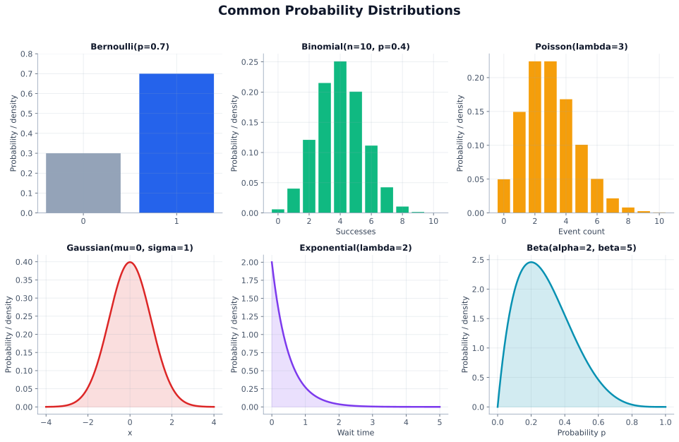
| Type | Typical ML use |
|---|---|
| Discrete | labels, counts, events |
| Continuous | noise, measurements, real-valued vars |
Key: First ask: countable outcomes or real-valued outcomes?
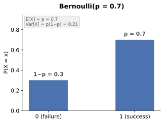
If \(X \in \{0,1\}\) and \(P(X=1)=p\), then
\[ P(X=x)=p^x(1-p)^{1-x}, \quad x \in \{0,1\} \]
| Quantity | Value |
|---|---|
| Mean | \(\mathbb{E}[X]=p\) |
| Variance | \(\mathrm{Var}(X)=p(1-p)\) |
Key: Bernoulli = single binary outcome.
Examples:
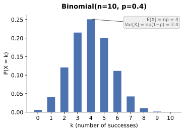
\[ P(X=k)=\binom{n}{k}p^k(1-p)^{n-k}, \quad k=0,1,\dots,n \]
| Property | Value |
|---|---|
| Mean | \(np\) |
| Variance | \(np(1-p)\) |
Key: Binomial = sum of \(n\) i.i.d. Bernoulli trials.
Example: clicks out of 100 impressions.
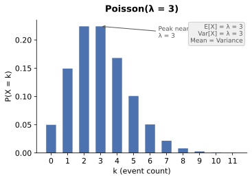
\[ P(X=k)=\frac{e^{-\lambda}\lambda^k}{k!}, \quad k=0,1,2,\dots \]
Properties: - Mean: \(\lambda\) - Variance: \(\lambda\)
| Good fit | Warning |
|---|---|
| counts in time/space | variance \(\gg\) mean |
| arrivals, defects, rare events | Poisson may be too restrictive |
Key: Poisson expects mean ≈ variance.
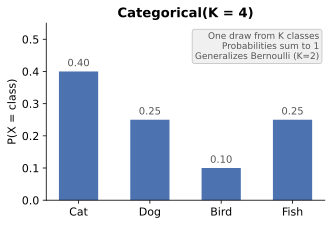
Categorical: one draw from \(K\) classes.
Multinomial: counts over \(n\) independent draws.
Classes: \(1,\dots,K\)
Probabilities: \(P(X=i)=p_i\)
Constraint: \(\sum_i p_i = 1\)
\[ P(X_1=x_1,\dots,X_K=x_K)=\frac{n!}{x_1!\cdots x_K!}\prod_{i=1}^K p_i^{x_i} \]
with \(\sum_i x_i = n\).
| Distribution | Trials | Output |
|---|---|---|
| Bernoulli | 1 | one of 2 outcomes |
| Categorical | 1 | one of \(K\) classes |
| Multinomial | \(n\) | counts across \(K\) classes |
Key: Categorical = one draw; Multinomial = count summary of many draws.
Uses: text models, class frequencies, naive Bayes.
\[ P(a \le X \le b)=\int_a^b f(x)\,dx \]
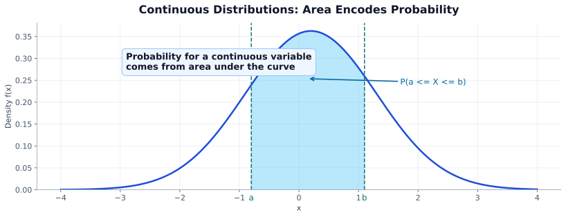
| Idea | Continuous case |
|---|---|
| Main object | PDF \(f(x)\) |
| Range probability | Area under \(f(x)\) |
| Point probability | Not the main quantity |
Key: For continuous vars, intervals matter, not exact points.
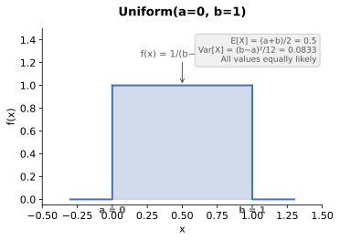
\[ f(x)=\frac{1}{b-a}, \quad a \le x \le b \]
| Property | Value |
|---|---|
| Mean | \(\frac{a+b}{2}\) |
| Variance | \(\frac{(b-a)^2}{12}\) |
Key: Use Uniform when all values in a range are equally plausible.
Uses:
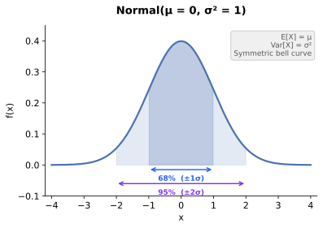
If \(X \sim \mathcal{N}(\mu,\sigma^2)\), then
\[ f(x)=\frac{1}{\sqrt{2\pi\sigma^2}}\exp\left(-\frac{(x-\mu)^2}{2\sigma^2}\right) \]
| Quantity | Meaning |
|---|---|
| \(\mu\) | center / mean |
| \(\sigma^2\) | spread / variance |
| Shape | symmetric around \(\mu\) |
Why common:
Key: Gaussian is the default bell-shaped uncertainty model.
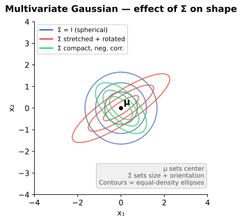
For \(\mathbf{x}\in\mathbb{R}^d\), the multivariate Gaussian is
\[ p(\mathbf{x}) = \frac{1}{(2\pi)^{d/2} |\Sigma|^{1/2}} \exp\left(-\frac{1}{2}(\mathbf{x}-\mu)^T \Sigma^{-1} (\mathbf{x}-\mu)\right) \]
Key: \(\mu\) sets location; \(\Sigma\) sets shape/orientation of the cloud.
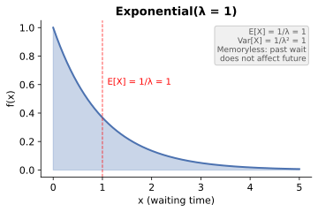
\[ f(x)=\lambda e^{-\lambda x}, \quad x \ge 0 \]
| Property | Value |
|---|---|
| Mean | \(\frac{1}{\lambda}\) |
| Variance | \(\frac{1}{\lambda^2}\) |
Key: Larger \(\lambda\) ⇒ faster arrivals ⇒ smaller expected wait.
Memoryless property:
\[ P(X>s+t \mid X>s)=P(X>t) \]
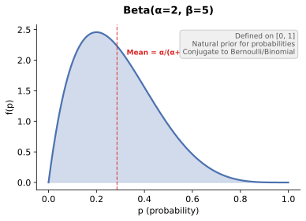
\[ f(p;\alpha,\beta)=\frac{1}{B(\alpha,\beta)}p^{\alpha-1}(1-p)^{\beta-1}, \quad 0 \le p \le 1 \]
Properties:
| Parameters | Shape | Intuition |
|---|---|---|
| \(\alpha=\beta=1\) | Uniform | no preference |
| \(\alpha>\beta\) | skewed to 1 | favors larger \(p\) |
| \(\alpha<\beta\) | skewed to 0 | favors smaller \(p\) |
| \(\alpha,\beta>1\) | Unimodal | mass in middle |
| \(\alpha,\beta<1\) | U-shaped | mass near 0 and 1 |
Key: Use Beta when the unknown parameter is itself a probability.
| Data pattern | Typical choice |
|---|---|
| Binary outcome | Bernoulli |
| Successes in fixed \(n\) trials | Binomial |
| Event counts in interval | Poisson |
| Continuous, symmetric noise | Gaussian |
| Positive waiting times | Exponential |
| Unknown probability parameter | Beta prior |
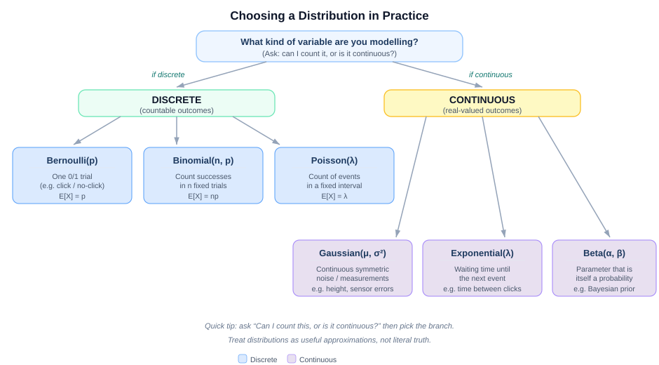
Key: Treat distributions as useful approximations, not literal truth.
import numpy as np
import matplotlib.pyplot as plt
from scipy.stats import bernoulli, binom, poisson, norm, expon, beta
x_disc = np.arange(0, 11)
x_cont = np.linspace(-4, 4, 400)
fig, axes = plt.subplots(2, 3, figsize=(12, 7))
# Bernoulli
axes[0, 0].bar([0, 1], bernoulli.pmf([0, 1], p=0.7))
axes[0, 0].set_title("Bernoulli(p=0.7)")
# Binomial
axes[0, 1].bar(x_disc, binom.pmf(x_disc, n=10, p=0.4))
axes[0, 1].set_title("Binomial(n=10, p=0.4)")
# Poisson
axes[0, 2].bar(x_disc, poisson.pmf(x_disc, mu=3))
axes[0, 2].set_title("Poisson(λ=3)")
# Gaussian
axes[1, 0].plot(x_cont, norm.pdf(x_cont, loc=0, scale=1))
axes[1, 0].set_title("Normal(0, 1)")
# Exponential
x_exp = np.linspace(0, 5, 400)
axes[1, 1].plot(x_exp, expon.pdf(x_exp, scale=1/2))
axes[1, 1].set_title("Exponential(λ=2)")
# Beta
x_beta = np.linspace(0, 1, 400)
axes[1, 2].plot(x_beta, beta.pdf(x_beta, a=2, b=5))
axes[1, 2].set_title("Beta(2, 5)")
plt.tight_layout()
plt.show()| Topic | Role of distributions |
|---|---|
| MLE | estimate parameters |
| MAP | add priors |
| EM | latent-variable fitting |
| A/B testing | conversions/clicks |
| Causal inference | uncertainty over outcomes |
Key: Recognizing the distribution usually reveals the model faster.
References & Further Reading - https://en.wikipedia.org/wiki/Probability_distribution - https://docs.scipy.org/doc/scipy/reference/stats.html - https://cs229.stanford.edu/main_notes.pdf
Before you model, you measure. Descriptive statistics are the first thing you compute on any new dataset — they tell you what’s typical, how spread out the data is, whether it’s skewed, and where the outliers live.
Another way to say it: descriptive statistics tell you the "personality" of a column before you start making assumptions about it. For example, house prices are often right-skewed, salaries usually have outliers, and user ratings may bunch up at a few repeated values. Those patterns should change how you summarize, transform, and model the data.
| Aspect | Measures |
|---|---|
| Center | mean, median, mode |
| Spread | variance, std dev, IQR, range |
| Shape | skewness, kurtosis |
| Extremes | min, max, percentiles, outliers |
| Statistic | Formula | Use when |
|---|---|---|
| Mean | x_bar = Σxi/n | Data is symmetric, no extreme outliers |
| Median | Middle value when sorted | Skewed data, outliers present |
| Mode | Most frequent value | Categorical data |
Key: Mean gets pulled by outliers. Median doesn’t. Always report both for skewed distributions — income, house prices, response times.
\[ \text{Variance} = s^2 = \frac{1}{n-1}\sum_{i=1}^{n}(x_i - \bar{x})^2 \]
\[ \text{Std Dev} = s = \sqrt{s^2} \]
\[ \text{IQR} = Q_3 - Q_1 \]
| Statistic | What it measures | Outlier-robust? |
|---|---|---|
| Variance | Average squared deviation from mean | No |
| Std deviation | Spread in original units | No |
| IQR | Width of middle 50% of data | Yes |
| Range | Max − Min | No — very sensitive |
Outlier rule of thumb: any point beyond Q1 − 1.5·IQR or Q3 + 1.5·IQR.
Skewness measures how asymmetric a distribution is relative to its center. A symmetric distribution (skewness ≈ 0) has its mean, median, and mode at roughly the same point — the normal distribution is the classic example. In a right-skewed (positive skew) distribution, the right tail is longer: most values cluster on the left, but a few extreme high values pull the mean above the median. Income and house prices are typical examples. In a left-skewed (negative skew) distribution, the left tail is longer: most values cluster on the right, with a few extreme low values dragging the mean below the median. Exam scores on an easy test often show this pattern.
| Skewness value | Interpretation |
|---|---|
| < −1 | Highly left-skewed |
| −1 to −0.5 | Moderately left-skewed |
| −0.5 to 0.5 | Approximately symmetric |
| 0.5 to 1 | Moderately right-skewed |
| > 1 | Highly right-skewed — consider log transform |
Kurtosis measures tail heaviness. High kurtosis = heavy tails = more extreme values than a normal distribution. Relevant when modeling financial returns or rare events.
import pandas as pd
import numpy as np
df['price'].describe() # count, mean, std, min, quartiles, max
df['price'].skew() # skewness
df['price'].kurt() # excess kurtosis
df['price'].quantile([.25,.75]) # Q1, Q3
np.percentile(df['price'], 95) # 95th percentileKey: Always check skewness before choosing a model. Linear regression assumes roughly symmetric residuals. Log-transform right-skewed targets like price or salary.
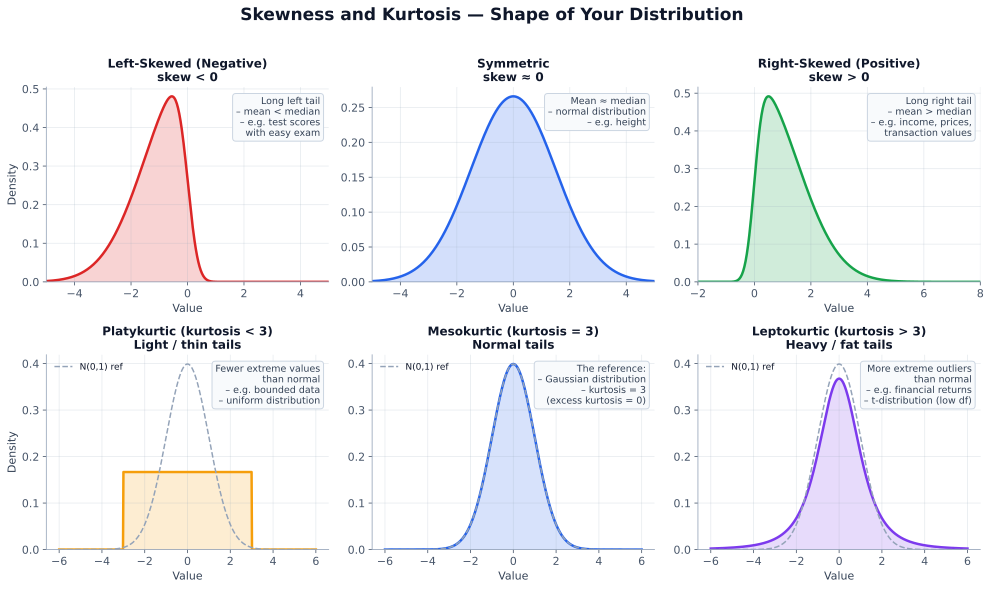
This is the most misunderstood topic in statistics, and also one of the most tested in DS interviews. Get this right.
The intuition to hold onto is simple: hypothesis testing is a formal way to separate "interesting pattern" from "random fluctuation." You do not prove the alternative is true. You ask whether the data would look this unusual if there were really no effect.
You start with the assumption that nothing interesting is happening — that’s the null hypothesis H0. Then you ask: if H0 were true, how surprising would my data be?
| H₀ | Null hypothesis | “no effect”, “no difference”, “no relationship” |
| H₁ | Alternative | “there is an effect / difference” |
| p-value | P(seeing data this extreme | H₀ is true) | |
| Small p-value → data is surprising under H₀ → evidence against H₀ | ||
| Large p-value → data is unsurprising under H₀ → no evidence against H₀ | ||
Key: The p-value is NOT “the probability the null is true.” It’s the probability of your data (or more extreme) assuming the null IS true. This distinction is tested constantly.
You choose a threshold α (typically 0.05) before running the test.
| H0 is True (Reality) | H0 is False (Reality) | |
|---|---|---|
| Reject H0 | Type I Error — False Positive (α) | Correct — True Positive (Power = 1−β) |
| Fail to Reject H0 | Correct — True Negative | Type II Error — False Negative (β) |
| Error | Name | Analogy | Controlled by |
|---|---|---|---|
| Type I (α) | False Positive | Convicting innocent person | Significance level α |
| Type II (β) | False Negative | Acquitting guilty person | Statistical power (1−β) |
Power = P(correctly rejecting H0 when H1 is true) = 1 − β.
Power is affected by:
Key: Before running a study, calculate required sample size to achieve 80% power. Running an underpowered study wastes resources and produces unreliable results.
Statistical significance ≠ practical significance. A tiny effect can be “significant” with enough data.
Cohen’s d for comparing two means:
\[ d = \frac{\mu_1 - \mu_2}{\sigma_{pooled}} \]
Where: \(\mu_1, \mu_2\) = group means, \(\sigma_{\text{pooled}}\) = pooled standard deviation, \(d\) = standardized effect size (unitless).
| d | Interpretation |
|---|---|
| 0.2 | Small effect |
| 0.5 | Medium effect |
| 0.8 | Large effect |
Key: Always report effect size alongside p-value. “The difference was statistically significant (p = 0.003, d = 0.08)” tells a very different story than p alone.
A 95% confidence interval (CI) means: if you repeated this experiment 100 times, ~95 of the resulting CIs would contain the true parameter.
\[ CI = \bar{x} \pm z_{\alpha/2} \cdot \frac{s}{\sqrt{n}} \]
Where: \(\bar{x}\) = sample mean, \(z_{\alpha/2}\) = critical z-value for significance level \(\alpha\) (1.96 for 95% CI), \(s\) = sample standard deviation, \(n\) = sample size.
In Section 1.4 we built the framework: null hypothesis, p-values, Type I and II errors (see Section 1.4 for the full treatment). Now we put that framework to work. Every statistical test in this section asks the same core question in a different disguise: is the signal I see bigger than the noise I’d expect by chance?
The right test depends on three things: (1) what type of data you have (continuous or categorical), (2) how many groups you’re comparing, and (3) whether your data meets the assumptions of parametric tests. Get those three answers and the choice almost makes itself.
When to use: You have continuous data and want to compare the mean of one or two groups. The data should be approximately normal (or n > 30, by the Central Limit Theorem — see Section 1.6).
The t-test was invented in 1908 by William Sealy Gosset, a chemist at the Guinness brewery in Dublin. Guinness forbade employees from publishing, so Gosset wrote under the pen name “Student” — which is why it’s still called Student’s t-test. He needed a way to compare small batches of barley with limited samples, and the result became one of the most-used tests in science.
| Variant | Question it answers | Example |
|---|---|---|
| One-sample | Is this group's mean different from a known value? | Is our average delivery time different from the 3-day SLA? |
| Two-sample | Are two independent groups' means different? | Old CDN vs new CDN page load times |
| Paired | Are pre/post measurements different for the same subjects? | Blood pressure before and after medication |
The formula — and what it means:
\[ t = \frac{\bar{x}_1 - \bar{x}_2}{\sqrt{\frac{s_1^2}{n_1} + \frac{s_2^2}{n_2}}} \]
Read it as: signal ÷ noise. The numerator is the gap between the two group means (the signal). The denominator is the pooled standard error (the noise). A large t means the gap is big relative to random variation.
One-tailed vs two-tailed tests:
| Two-tailed | One-tailed | |
|---|---|---|
| Hypothesis | H1: μ1 ≠ μ2 (any difference) | H1: μ1 > μ2 (directional) |
| Rejection region | Both tails (α/2 each side) | One tail only (all α on one side) |
| When to use | You care about any difference — the default, always start here | You only care about one direction (e.g., “is the new version faster?”) |
| Power | Less powerful (splits α between tails) | More powerful for the predicted direction |
| Risk | Safer — detects effects in both directions | Misses effects in the opposite direction entirely |
Rule of thumb: Almost always use a two-tailed test unless you have a strong, pre-registered reason to test one direction only. One-tailed tests are sometimes used in drug trials (“is the drug better than placebo?”) or when the opposite direction is physically impossible. In tech A/B testing, two-tailed is the standard.
The left panel shows two distributions that mostly overlap — the difference could easily be noise. The right panel shows clear separation — the signal is much larger than the noise.
Real-world example — page load time: Your team deploys a new CDN and wants to know if it actually reduced page load times. You collect load times (in seconds) for 200 users on the old CDN (mean = 3.1s, std = 0.8s) and 200 users on the new CDN (mean = 2.7s, std = 0.9s). A two-sample t-test gives t = 4.69, p < 0.001 — strong evidence the new CDN is faster. Cohen’s d = 0.47 (medium effect — see Section 1.4.5 for interpretation).
import numpy as np
from scipy import stats
# Simulate: old CDN vs new CDN page load times (seconds)
np.random.seed(42)
old_cdn = np.random.normal(loc=3.1, scale=0.8, size=200)
new_cdn = np.random.normal(loc=2.7, scale=0.9, size=200)
t_stat, p_value = stats.ttest_ind(old_cdn, new_cdn)
print(f"t = {t_stat:.3f}, p = {p_value:.4f}")
# Effect size: Cohen's d
pooled_std = np.sqrt((old_cdn.std()**2 + new_cdn.std()**2) / 2)
cohens_d = (old_cdn.mean() - new_cdn.mean()) / pooled_std
print(f"Cohen's d = {cohens_d:.2f}") # ~0.47 = medium effectAssumptions checklist: (1) Data is approximately normal or n > 30 (CLT). (2) Equal or similar variance between groups — if not, use Welch’s t-test (
stats.ttest_ind(a, b, equal_var=False)). (3) Observations are independent. For small samples with non-normal data, consider the Mann-Whitney U test (see Section 1.5.6).
When to use: You want to compare a sample mean to a known population mean when the population standard deviation (σ) is known, or you want to compare two proportions from large samples. In practice, the z-test for proportions is far more common than the z-test for means — it’s the workhorse behind every conversion-rate comparison in tech.
z-test vs t-test: The t-test uses the sample standard deviation (s) because you usually don’t know the population σ. This extra uncertainty makes the t-distribution wider (heavier tails), especially at small n. The z-test assumes you do know σ, so it uses the thinner normal distribution. When n is large (> 30), the two tests give nearly identical results — which is why the t-test dominates in practice.
| Variant | Question it answers | When to use |
|---|---|---|
| One-sample z (means) | Is this sample mean different from a known population mean? | Population σ is known (e.g., standardised test scores, manufacturing specs) |
| Two-proportion z | Are two conversion rates / proportions different? | Large samples, binary outcomes (click/no-click, convert/bounce). This is the most common variant. |
The formula — z-test for two proportions:
\[ z = \frac{\hat{p}_1 - \hat{p}_2}{\sqrt{\hat{p}(1-\hat{p})\left(\frac{1}{n_1} + \frac{1}{n_2}\right)}} \]
Same signal ÷ noise shape: the numerator is the difference in observed proportions (signal), and the denominator is the pooled standard error (noise). A large |z| means the gap between proportions is unlikely to be chance.
If the null hypothesis is true (no real difference), 95% of observed z-values fall between −1.96 and +1.96. Our z = 2.83 falls in the red rejection region — this difference is unlikely to be noise.
Real-world example — landing page conversion rate: Your growth team redesigns the pricing page and runs an A/B test. The control page converts 1,200 out of 15,000 visitors (8.0%), and the new page converts 1,380 out of 15,000 visitors (9.2%). A two-proportion z-test gives z = 3.54, p = 0.0004 — the 1.2 percentage-point lift is statistically significant. For practical significance, the absolute lift of 1.2pp translates to roughly 15% more conversions at scale.
import numpy as np
from statsmodels.stats.proportion import proportions_ztest
# Landing page A/B test: control vs new design
conversions = np.array([1200, 1380]) # successes in each group
visitors = np.array([15000, 15000]) # sample sizes
z_stat, p_value = proportions_ztest(conversions, visitors)
print(f"z = {z_stat:.3f}, p = {p_value:.4f}")
# Conversion rates
p1, p2 = conversions / visitors
print(f"Control: {p1[0]:.1%}, New: {p2[0] if len(p2) > 0 else p1[1]:.1%}")
print(f"Absolute lift: {(p1[1] - p1[0]):.1%}")When to use z-test vs t-test in practice: If you’re comparing proportions (conversion rates, click-through rates, pass/fail rates) → z-test. If you’re comparing means of continuous measurements (load times, revenue, scores) → t-test. The z-test for means (known σ) is mostly a textbook exercise; real data almost always uses the t-test because σ is rarely known. See Section 1.7 for a complete A/B testing workflow.
When to use: You have continuous data and want to compare means across three or more groups simultaneously. Think: “Is at least one of these groups different?”
Why not just run multiple t-tests? With 3 groups you’d need 3 pairwise t-tests. At α = 0.05 each, your overall false-positive rate inflates to 1 − (0.95)3 ≈ 14%. With 5 groups (10 pairs), it jumps to 40%. ANOVA keeps your false-positive rate at exactly α by testing all groups in a single step.
The core statistic is the F-ratio:
\[ F = \frac{\text{Variance between groups}}{\text{Variance within groups}} = \frac{MS_{\text{between}}}{MS_{\text{within}}} \]
Read it as: signal ÷ noise again. The numerator measures how much the group means differ from the overall mean (between-group variance = signal). The denominator measures the average scatter inside each group (within-group variance = noise). An F near 1 means the groups look similar; a large F means at least one group stands out.
F is large when the groups are far apart (big between-group variance) relative to how spread out each group is internally (within-group variance).
Real-world example — delivery time across three warehouses: An e-commerce company ships from three warehouses (West, Central, East) and wants to know if average delivery times differ. They sample 50 orders from each: West mean = 3.8 days, Central mean = 4.5 days, East mean = 3.9 days. ANOVA gives F = 8.12, p = 0.0004 — at least one warehouse is significantly different. Effect size: η² = 0.10 (medium). A Tukey HSD post-hoc test reveals the Central warehouse is the outlier.
import numpy as np
from scipy.stats import f_oneway
# Simulate delivery times (days) from three warehouses
np.random.seed(42)
west = np.random.normal(loc=3.8, scale=0.9, size=50)
central = np.random.normal(loc=4.5, scale=1.0, size=50)
east = np.random.normal(loc=3.9, scale=0.85, size=50)
f_stat, p_value = f_oneway(west, central, east)
print(f"F = {f_stat:.3f}, p = {p_value:.4f}")
# Effect size: eta-squared
all_data = np.concatenate([west, central, east])
grand_mean = all_data.mean()
ss_between = 50 * sum((m - grand_mean)**2 for m in [west.mean(), central.mean(), east.mean()])
ss_total = sum((x - grand_mean)**2 for x in all_data)
eta_sq = ss_between / ss_total
print(f"eta-squared = {eta_sq:.3f}") # ~0.10 = mediumKey: ANOVA tells you if there’s a difference somewhere. It does not tell you which groups differ. Follow up with a post-hoc test: Tukey HSD (balanced groups), Bonferroni (conservative), or Games-Howell (unequal variances). Always report the effect size — η² > 0.06 is medium, > 0.14 is large.
When to use: Your data is categorical (counts in categories, not continuous measurements). You want to know whether the observed distribution of counts differs from what you’d expect by chance.
There are two flavours:
| Flavour | Question | Example |
|---|---|---|
| Test of Independence | Are two categorical variables associated? | Does button color affect click-through rate? |
| Goodness of Fit | Does a single variable’s distribution match an expected pattern? | Are website visits equally distributed across weekdays? |
\[ \chi^2 = \sum \frac{(O - E)^2}{E} \]
Intuition: For each cell, ask “how far is what I observed from what I’d expect if there were no relationship?” Square the difference (so over- and under-counts both contribute), divide by the expected count (to normalise), and add them all up.
Real-world example — marketing email campaign: Your marketing team sends three subject-line variants to 1,000 users each and tracks opens vs. non-opens:
Opened Did not open Subject A: “Sale ends tonight” 280 720 Subject B: “Your cart is waiting” 320 680 Subject C: “New arrivals just for you” 250 750 A χ² test gives χ² = 10.47, df = 2, p = 0.005 — the open rates are significantly different. Cramér’s V = 0.059 (small effect), so the wording matters statistically but the practical difference is modest.
import numpy as np
from scipy.stats import chi2_contingency
# Email campaign: observed opens vs non-opens for 3 subject lines
observed = np.array([[280, 720], [320, 680], [250, 750]])
chi2, p, dof, expected = chi2_contingency(observed)
print(f"chi2 = {chi2:.3f}, p = {p:.4f}, df = {dof}")
# Effect size: Cramer's V
n = observed.sum()
k = min(observed.shape) - 1
cramers_v = np.sqrt(chi2 / (n * k))
print(f"Cramer's V = {cramers_v:.3f}") # V > 0.1 = small, > 0.3 = mediumWhen to use: Your data is skewed, ordinal (like star ratings), has heavy outliers, or the sample is too small for the CLT to save you. Non-parametric tests make no assumption about the underlying distribution — they work on ranks instead of raw values.
The key insight: ranking your data neutralises outliers. A salary of $850,000 among values like $45k–$80k would dominate a t-test, but in ranks it’s just “the biggest” — rank 8 out of 8, no more influential than rank 7.
The mapping: when an assumption breaks, swap to the non-parametric equivalent:
| If you’d normally use… | But assumptions fail, use… | What it tests |
|---|---|---|
| Independent t-test | Mann-Whitney U | Are two groups’ distributions different? |
| Paired t-test | Wilcoxon signed-rank | Are paired differences symmetric around zero? |
| One-way ANOVA | Kruskal-Wallis | Are 3+ groups’ distributions different? |
| Pearson r | Spearman ρ | Monotonic (not just linear) relationship? (see Section 1.11) |
Real-world example — app store ratings: You redesign your app’s onboarding flow and want to know if 1–5 star ratings improved. Star ratings are ordinal (the gap between 3 and 4 stars isn’t necessarily the same as between 4 and 5), so a t-test is inappropriate. A Mann-Whitney U test compares the rank distributions: U = 12,340, p = 0.018 — the new onboarding leads to significantly higher ratings.
from scipy.stats import mannwhitneyu
import numpy as np
# Simulated app store ratings (1-5 stars)
np.random.seed(42)
old_flow = np.random.choice([1,2,3,4,5], size=200, p=[.05,.15,.35,.30,.15])
new_flow = np.random.choice([1,2,3,4,5], size=200, p=[.03,.10,.25,.38,.24])
stat, p = mannwhitneyu(old_flow, new_flow, alternative='two-sided')
print(f"Mann-Whitney U = {stat:.0f}, p = {p:.4f}")
print(f"Old median: {np.median(old_flow):.0f} stars, New median: {np.median(new_flow):.0f} stars")Trade-off: Non-parametric tests are more robust (fewer assumptions) but slightly less powerful — they need a somewhat larger sample to detect the same effect. If your data genuinely is normal, the parametric version will have more statistical power. When in doubt, run both: if they agree, you’re solid; if they disagree, trust the non-parametric result.
This decision tree covers 95% of data science use cases. Ask three questions in order — (1) variable type, (2) number of groups, (3) independent or paired? — and follow the branches:
Master reference table:
| Test | Data Type | Groups | Null Hypothesis (H0) | Effect Size | Common Use |
|---|---|---|---|---|---|
| z-test (1.8.2) | Proportions / binary | 1 or 2 | Proportions are equal | Cohen’s h | A/B test conversion rates, large-sample proportion comparisons |
| t-test (1.8.1) | Continuous | 1 or 2 | Group means are equal | Cohen’s d | A/B tests on continuous metrics, clinical trials, before/after measurements |
| ANOVA (1.8.3) | Continuous | 3+ | All group means are equal | η² | Multi-arm experiments, comparing 3+ treatments or regions |
| χ² independence (1.8.4) | Categorical | 2+ | Variables are independent | Cramér’s V | Survey cross-tabs, CTR by segment, feature association |
| χ² goodness-of-fit (1.8.4) | Categorical | 1 | Distribution matches expected | Cramér’s V | Fairness audits, verifying data follows a known distribution |
| Mann-Whitney U (1.8.5) | Ordinal / skewed | 2 | Distributions are identical | Rank-biserial r | Non-parametric alternative to 2-sample t-test — app ratings, salary comparisons |
| Wilcoxon signed-rank | Ordinal / paired | 2 (paired) | Paired differences symmetric around 0 | Rank-biserial r | Non-parametric alternative to paired t-test — before/after with skewed or ordinal data |
| Kruskal-Wallis (1.8.5) | Ordinal / skewed | 3+ | All distributions are identical | ε² | Non-parametric alternative to ANOVA — multi-group ordinal or heavily skewed data |
| Pearson r | Continuous, linear | — | No linear relationship (ρ = 0) | r itself | Feature correlation, multicollinearity — covered in detail in Section 1.11 |
| Spearman ρ | Ordinal / non-linear | — | No monotonic relationship | ρ itself | Ranking agreement, non-linear features — covered in detail in Section 1.11 |
Section numbers in parentheses show where each test is explained above. Wilcoxon is the paired analogue of Mann-Whitney (works on ranks of paired differences). Pearson and Spearman are covered fully in Section 1.11.
| Mistake | Why it matters | Fix |
|---|---|---|
| Stopping early when p < 0.05 (“peeking”) | Checking repeatedly as data arrives and stopping the moment p dips below 0.05 inflates false positives from 5% to 20–30%. | Decide sample size upfront. Use sequential testing if you must peek (see Section 1.7). |
| Multiple testing without correction | 20 tests at α = 0.05 → ~1 false positive by design. At 50 tests, you expect 2.5 “significant” results from pure noise. | Apply Bonferroni (α/n, conservative) or Benjamini-Hochberg (controls FDR, more powerful). BH is the standard in genomics, neuroimaging, and any setting with many simultaneous tests. |
| Interpreting non-significant as “no effect” | Absence of evidence ≠ evidence of absence. Your test may simply be underpowered (small n). | Report confidence intervals and power analysis (see Section 1.4.4). |
| Ignoring assumptions | A t-test on heavily skewed small samples is unreliable. Using Pearson on non-linear data hides the real pattern. | Always plot your data first. Check normality (Shapiro-Wilk or Q-Q plot). If assumptions fail, switch to the non-parametric equivalent (Section 1.5.5). |
| Reporting p-values without effect sizes | With a large enough n, even trivially small differences become “significant.” A 0.1% improvement with p = 0.001 is statistically real but practically meaningless. | Always report the effect size (Cohen’s d, η², Cramér’s V) alongside the p-value. |
| Using parametric tests on ordinal data | Star ratings, Likert scales, and rankings are ordinal — the gaps between values aren’t necessarily equal. Means and variances can be misleading. | Use non-parametric alternatives: Mann-Whitney for 2 groups, Kruskal-Wallis for 3+. |
The Five Commandments of Statistical Testing
- Define hypotheses before seeing data. Post-hoc storytelling is not science.
- Pre-register your significance level (α). Typically 0.05, sometimes 0.01 for high-stakes decisions.
- Check assumptions visually. A histogram or Q-Q plot takes 10 seconds and prevents invalid results.
- Report effect sizes, not just p-values. Statistical significance ≠ practical significance.
- Correct for multiple comparisons. If you test 20 hypotheses, say so and adjust.
Definition: In probability theory, the Central Limit Theorem (CLT) states that, under appropriate conditions, the distribution of a normalized version of the sample mean converges to a standard normal distribution. More precisely: if you draw n independent samples from any distribution with finite mean μ and finite variance σ², the distribution of the sample mean \(\bar{x}\) approaches:
\[ \bar{x} \;\sim\; \mathcal{N}\!\left(\mu,\;\frac{\sigma^2}{n}\right) \quad \text{as } n \to \infty \]
The intuition: A single data point can be noisy, skewed, or erratic. But averages of many data points are far more stable. No matter how wild the original distribution looks — uniform, exponential, bimodal — the distribution of sample means drawn from it becomes bell-shaped as you increase n. The rule of thumb is that n ≥ 30 is usually “enough” for a reasonable approximation.
The diagram below illustrates this visually: a non-normal population distribution (left) is sampled repeatedly in groups of size n, and the resulting distribution of those sample means (right) converges to a Gaussian — centered at μ with spread σ/√n.
import numpy as np
import matplotlib.pyplot as plt
from scipy.stats import norm
np.random.seed(42)
# Population: a clearly non-normal bimodal distribution
population = np.concatenate([
np.random.normal(loc=2, scale=0.6, size=60000),
np.random.normal(loc=5, scale=1.0, size=40000)
])
pop_mean = population.mean()
pop_std = population.std()
# Draw sample means for increasing sample sizes
sample_sizes = [1, 5, 30, 100]
n_draws = 10000
fig, axes = plt.subplots(1, len(sample_sizes) + 1, figsize=(18, 4))
# Panel 0: the original population
axes[0].hist(population, bins=80, density=True, color=’#64748b’, alpha=0.7, edgecolor=’white’)
axes[0].set_title(‘Population\n(bimodal, not normal)’, fontsize=11, fontweight=’bold’)
axes[0].set_xlabel(‘x’)
axes[0].set_ylabel(‘Density’)
axes[0].axvline(pop_mean, color=’#dc2626’, linestyle=’--’, label=f’mu={pop_mean:.2f}’)
axes[0].legend(fontsize=8)
# Panels 1-4: distribution of sample means for each n
for i, n in enumerate(sample_sizes):
means = [np.random.choice(population, size=n, replace=True).mean() for _ in range(n_draws)]
ax = axes[i + 1]
ax.hist(means, bins=60, density=True, color=’#3b82f6’, alpha=0.6, edgecolor=’white’)
# Overlay theoretical normal
se = pop_std / np.sqrt(n)
x_range = np.linspace(min(means), max(means), 200)
ax.plot(x_range, norm.pdf(x_range, pop_mean, se), ‘r-’, linewidth=2, label=’Theoretical Normal’)
ax.set_title(f’Sample means (n={n})\nSE = sigma/sqrt({n}) = {se:.2f}’, fontsize=11, fontweight=’bold’)
ax.set_xlabel(‘Sample mean’)
ax.axvline(pop_mean, color=’#dc2626’, linestyle=’--’)
ax.legend(fontsize=8)
plt.suptitle(‘Central Limit Theorem: sample means become Gaussian regardless of population shape’,
fontsize=13, fontweight=’bold’, y=1.04)
plt.tight_layout()
plt.savefig(‘clt_demonstration.png’, dpi=150, bbox_inches=’tight’)
plt.show()Suppose a country has 50 million voters, and the true proportion who support Candidate A is p = 0.53 (53%). No one knows this exact number on election day — that is what exit polls try to estimate.
How exit polls use the CLT:
Why this works: Each individual vote is binary (0 or 1) — about as far from a bell curve as you can get. Yet the average of 2,000 such votes follows a near-perfect Gaussian, thanks entirely to the CLT. This is why polls with just a few thousand respondents can reliably predict elections involving millions of voters.
What happens with different sample sizes?
| Sample size (n) | Standard error | 95% margin of error | Practical use |
|---|---|---|---|
| 100 | ± 5.0% | ± 9.8% | Too wide — can’t call the election |
| 500 | ± 2.2% | ± 4.4% | Rough early indication |
| 2,000 | ± 1.1% | ± 2.2% | Standard exit poll — reliable call |
| 10,000 | ± 0.5% | ± 1.0% | High-precision national poll |
Key insight: The margin of error shrinks as 1/√n, not 1/n. Quadrupling your sample size only halves the error. This is why going from 2,000 to 10,000 respondents gives diminishing returns — and why most real-world polls stop at a few thousand.
A/B testing is hypothesis testing applied to product decisions. It’s how companies decide whether a new feature, UI change, or algorithm actually works.
This is where the earlier sections become operational. Probability frames uncertainty, hypothesis testing gives the decision rule, and A/B testing wraps both into a product workflow that teams can execute reliably.
This is the most skipped step — and the most important.
\[ n = \frac{2(z_{\alpha/2} + z_{\beta})^2 \sigma^2}{\delta^2} \]
Practical example — e-commerce checkout button test: Your current checkout page has a 3.2% conversion rate (baseline). The product team wants to test a new button design and considers a 0.5 percentage-point lift (to 3.7%) worth shipping. You choose the standard α = 0.05 and 80% power. Plugging in: σ² ≈ p(1−p) = 0.032 × 0.968 ≈ 0.031 and δ = 0.005, the formula gives n ≈ 19,200 users per group (38,400 total). At 2,000 daily visitors, you would need to run the test for roughly 19–20 days. If you try to detect a smaller effect — say 0.2 pp — the required sample jumps to over 100,000 per group, which is why choosing a realistic MDE matters enormously.
from scipy.stats import norm
import numpy as np
def ab_sample_size(baseline_rate, mde, alpha=0.05, power=0.80):
"""Calculate required sample size per group for a proportion test."""
z_alpha = norm.ppf(1 - alpha/2) # 1.96 for α=0.05
z_beta = norm.ppf(power) # 0.84 for 80% power
p1 = baseline_rate
p2 = baseline_rate + mde
p_avg = (p1 + p2) / 2
n = (2 * p_avg * (1-p_avg) * (z_alpha + z_beta)**2) / mde**2
return int(np.ceil(n))
# Example: baseline CTR 10%, want to detect +2pp lift
n = ab_sample_size(baseline_rate=0.10, mde=0.02)
print(f"Need {n} users per group ({2*n} total)") # → ~3842 per group| Problem | Description | Fix |
|---|---|---|
| Peeking | Stopping early when you see p < 0.05 | Pre-commit to sample size; use sequential testing |
| Novelty effect | Users engage more just because it’s new | Run test long enough (2–4 weeks minimum) |
| Network effects | User A’s treatment affects User B | Cluster randomization, not individual |
| Multiple metrics | Testing 10 metrics inflates false positives | Pre-specify primary metric; adjust for multiple tests |
| SRM | Sample Ratio Mismatch — groups aren’t 50/50 | Investigate logging/assignment bugs before analyzing |
Key: Run the sample size calculation BEFORE the experiment. Never stop early because “it looks significant.”
This is the bridge from raw probability to actual decision-making. Conditional probability tells you how beliefs change once new evidence arrives. Bayes' theorem formalizes that update. Expected value then asks what action makes sense once uncertainty is on the table.
Key: Update beliefs with evidence; make decisions with expected value.
| Concept | Core question | Mental model |
|---|---|---|
| Conditional probability | Chance of \(A\) once \(B\) is known? | restrict to “\(B\) world” |
| Expected value | Average outcome over many repeats? | weighted average |
Key: Conditional probability updates; expected value averages.
| Concept | What it does | Formula |
|---|---|---|
| Conditional probability | restrict to cases where \(B\) happened | \(P(A \mid B)=\frac{P(A \cap B)}{P(B)}, \quad P(B)>0\) |
| Bayes’ theorem | update belief after evidence | \(P(A \mid B) = \frac{P(A) \cdot P(B \mid A)}{P(B)}\) |
| Expected value | probability-weighted average | \(E[X]=\sum_x x\,P(X=x)\) |
\[ P(A \mid B)=\frac{P(A \cap B)}{P(B)}, \quad P(B)>0 \]
\[ P(A \mid B) = \frac{P(A) \cdot P(B \mid A)}{P(B)} \]
\[ P(B)=\sum_a P(B\mid A=a)P(A=a) \]
\[ E[X]=\sum_x x\,P(X=x) \]
Key: Bayes = prior × likelihood ÷ evidence.
| Term | Meaning |
|---|---|
| \(P(A)\) | Prior |
| \(P(B \mid A)\) | Likelihood |
| \(P(B)\) | Evidence |
| \(P(A \mid B)\) | Posterior |
Key: \(P(B \mid A)\) and \(P(A \mid B)\) are different questions.
Spam filter example:
\[ P(\text{spam}\mid\text{phrase}) = \frac{0.01 \times 0.40}{0.05} = 0.08 \]
Even though the phrase is 40× more common in spam, only 8% of phrase-emails are spam — because spam itself is rare (1%). Base rate dominates.
Key: Always weight likelihoods by prior probability.
\[ E[X] = x_1 p_1 + x_2 p_2 + \cdots + x_k p_k \]
\[ E[X] = \sum_{i=1}^{k} x_i p_i \]
Key: Multiply each outcome by its probability, then sum.
Coupon example:
\[ E[X] = 0(0.8) + 10(0.2) = 2 \]
| Outcome | Probability | Contribution |
|---|---|---|
| $0 | 0.8 | 0 |
| $10 | 0.2 | 2 |
| Total | $2 |
Key: Expected value is a long-run average, not a guaranteed single outcome.
Suppose \(X\) takes:
| Value \(x\) | Probability \(P(X=x)\) | Contribution \(x \cdot P(X=x)\) |
|---|---|---|
| 1 | 0.2 | 0.2 |
| 3 | 0.5 | 1.5 |
| 5 | 0.3 | 1.5 |
Then:
\[ E[X] = 1(0.2) + 3(0.5) + 5(0.3) \]
\[ E[X] = 0.2 + 1.5 + 1.5 = 3.2 \]
So:
\[ E[X] = 3.2 \]
| Concept | What it tells you |
|---|---|
| Probability | likelihood of an event |
| Expected value | average numerical outcome |
Key: Probability tells how likely; expected value tells average payoff.
Key: Probability helps infer; expected value helps decide.
| Idea | Use it for | Core question |
|---|---|---|
| Conditional probability | update after learning \(B\) | “How likely is \(A\) given \(B\)?” |
| Bayes’ theorem | hidden-cause inference | “What is \(P(A \mid B)\)?” |
| Expected value | compare risky choices | “Average payoff?” |
Key: Keep all Bayes terms in the same sample space.
| Pitfall | Fix |
|---|---|
| Confusing \(P(A \mid B)\) with \(P(B \mid A)\) | reverse conditioning changes the question |
| Forgetting to divide by \(P(B)\) | normalize by evidence |
| Mixing sample spaces | keep all probabilities in one universe |
| Forgetting weights in expected value | multiply outcomes by probabilities |
| Treating expected value as guaranteed | it is a long-run average |
| Ignoring base rates | rare events can dominate posterior intuition |
Key: Check condition, denominator, sample space, and weights.
The one-line idea: Pick the parameter values that make your observed data look most probable.
Imagine someone hands you a coin and you flip it 10 times: you get 7 heads and 3 tails. What is the probability of heads, p, for this coin?
You could try every possible value of p from 0 to 1 and ask: “If the coin really had this p, how likely is it that I would have seen exactly 7 heads in 10 flips?”
MLE simply picks p = 0.7 — the value that maximizes the probability of what you actually observed. That is all MLE does. The rest is just writing this idea down in math.
You have n data points \(x_1, x_2, \dots, x_n\) and a model with parameter \(\theta\). The likelihood function measures how probable the data is for a given \(\theta\):
\[ L(\theta) = \prod_{i=1}^n p(x_i \mid \theta) \]
MLE finds the \(\theta\) that maximizes this:
\[ \hat{\theta}_{\text{MLE}} = \arg\max_\theta \; L(\theta) \]
Why log-likelihood? Multiplying many small probabilities together causes numerical underflow. Taking the log converts the product into a sum, which is easier to differentiate and more stable to compute:
\[ \ell(\theta) = \log L(\theta) = \sum_{i=1}^n \log p(x_i \mid \theta) \]
Since log is a monotonically increasing function, maximizing \(\ell(\theta)\) gives the same answer as maximizing \(L(\theta)\).
Scenario: You flip a coin n = 10 times and observe outcomes \(x_i \in \{0, 1\}\) (0 = tails, 1 = heads). You get S = 7 heads. What is the MLE for p (probability of heads)?
Step 1 — Write the likelihood:
\[ L(p) = \prod_{i=1}^n p^{x_i}(1-p)^{1-x_i} \]
Step 2 — Take the log:
\[ \ell(p) = S \log p + (n - S) \log(1-p) \]
where \(S = \sum_i x_i\) is the number of heads (successes).
Step 3 — Differentiate and set to zero:
\[ \frac{d\ell}{dp} = \frac{S}{p} - \frac{n-S}{1-p} = 0 \]
Step 4 — Solve:
\[ \hat{p}_{\text{MLE}} = \frac{S}{n} = \frac{7}{10} = 0.7 \]
The MLE for a Bernoulli parameter is simply the sample proportion — exactly what your intuition would suggest.
Scenario: You measure the weight of 6 packages (in kg): 2.1, 1.9, 2.4, 2.0, 1.8, 2.2. Assume weights follow a normal distribution \(\mathcal{N}(\mu, \sigma^2)\). What is the MLE for μ?
The log-likelihood for Gaussian data is:
\[ \ell(\mu) = -\frac{n}{2}\log(2\pi\sigma^2) - \frac{1}{2\sigma^2}\sum_{i=1}^n (x_i - \mu)^2 \]
The first term is a constant (it does not depend on μ). So maximizing \(\ell(\mu)\) is the same as minimizing \(\sum (x_i - \mu)^2\) — the sum of squared differences. This gives:
\[ \hat{\mu}_{\text{MLE}} = \frac{1}{n}\sum_{i=1}^n x_i = \text{sample mean} = 2.07 \]
Key insight: MLE for a Gaussian mean = ordinary average. And minimizing squared error (which every regression model does) is secretly doing MLE under the assumption that noise is Gaussian.
If both μ and σ² are unknown, MLE estimates both simultaneously:
\[ \hat{\mu} = \frac{1}{n}\sum_{i=1}^n x_i, \qquad \hat{\sigma}^2 = \frac{1}{n}\sum_{i=1}^n (x_i - \hat{\mu})^2 \]
Note: MLE variance divides by n. The “unbiased” sample variance you see in statistics textbooks divides by n−1 (Bessel’s correction). For large n, the difference is negligible.
This is the real punchline: the loss functions you use in machine learning are not arbitrary choices — they are negative log-likelihoods under specific noise assumptions.
| ML Task | Noise Assumption | MLE Gives You | Loss Function |
|---|---|---|---|
| Linear regression | Gaussian noise: \(y_i = \mathbf{w}^T\mathbf{x}_i + b + \epsilon\) | Minimise squared errors | MSE |
| Logistic regression | Bernoulli: \(P(y=1) = \sigma(\mathbf{w}^T\mathbf{x} + b)\) | Maximise Bernoulli likelihood | Binary cross-entropy |
| Multiclass classification | Categorical: softmax probabilities | Maximise categorical likelihood | Cross-entropy |
So when you train a neural network with cross-entropy loss, you are doing MLE. When you fit a linear regression with MSE, you are doing MLE. The framework is the same — only the assumed distribution changes.
import numpy as np
# --- Bernoulli MLE: estimating probability of heads ---
flips = np.array([1, 0, 1, 1, 1, 0, 1, 0, 1, 1]) # 1=heads, 0=tails
p_mle = flips.mean()
print(f"Bernoulli MLE: p = {p_mle:.2f}") # 0.70
# --- Gaussian MLE: estimating mean and variance ---
weights = np.array([2.1, 1.9, 2.4, 2.0, 1.8, 2.2])
mu_mle = weights.mean()
var_mle = np.mean((weights - mu_mle) ** 2) # divide by n, not n-1
print(f"Gaussian MLE: mu = {mu_mle:.2f}, sigma^2 = {var_mle:.4f}")
# --- Logistic regression is MLE under the hood ---
from sklearn.linear_model import LogisticRegression
from sklearn.datasets import make_classification
X, y = make_classification(n_samples=500, n_features=5, random_state=42)
model = LogisticRegression(C=1e6, solver="lbfgs", max_iter=1000) # large C ≈ no prior ≈ pure MLE
model.fit(X, y)
print(f"Logistic regression coefficients (MLE): {model.coef_[0].round(2)}")| Method | What it uses | Intuition |
|---|---|---|
| MLE | Data only | “What parameters best explain my data?” |
| MAP | Data + prior belief | “What parameters best explain my data, given what I already know?” |
With enough data, MLE and MAP converge to the same answer. With small data, MLE can give extreme estimates (e.g., \(\hat{p} = 0\) if you flip a coin twice and get two tails). MAP avoids this by incorporating prior knowledge — covered in the next section.
| Strengths | Limitations |
|---|---|
| Simple, general-purpose — works for any parametric model | Can overfit with small datasets |
| Statistically efficient with enough data | No way to incorporate prior knowledge |
| Directly connects to every ML loss function | Can give extreme estimates (e.g., p = 0 or 1) |
| Well understood theory and convergence guarantees | Assumes you picked the right model family |
If MLE says "trust the data only," MAP says "trust the data, but do not ignore what you already know." This becomes especially useful when data is scarce, noisy, or likely to produce extreme estimates.
Key: MAP = MLE + prior. With infinite data they converge; with small data, the prior matters.
MAP estimation maximizes the posterior — the probability of parameters given the data:
\[ \hat{\theta}_{\text{MAP}} = \arg\max_\theta \underbrace{P(\theta \mid \mathcal{D})}_{\text{posterior}} = \arg\max_\theta \underbrace{P(\mathcal{D} \mid \theta)}_{\text{likelihood}} \cdot \underbrace{P(\theta)}_{\text{prior}} \]
Taking logs (monotone transform, safe):
\[ \hat{\theta}_{\text{MAP}} = \arg\max_\theta \left[ \log P(\mathcal{D} \mid \theta) + \log P(\theta) \right] \]
The prior acts as a regularizer on the likelihood:
| Prior choice | Equivalent regularization | Effect |
|---|---|---|
| Gaussian prior on θ | L2 (Ridge) | Shrinks weights toward zero |
| Laplace prior on θ | L1 (Lasso) | Pushes some weights to exactly zero |
| Uniform prior | No regularization | Reduces to MLE |
This is why ridge regression and Lasso have a clean probabilistic interpretation — they are MAP estimates under specific priors.
You flip a coin 5 times and get 4 heads. MLE gives \(\hat{p} = 4/5 = 0.8\) — extreme and unreliable with only 5 flips.
With a Beta(2, 2) prior (mildly favoring fair coins):
\[ \hat{p}_{\text{MAP}} = \frac{\alpha - 1 + k}{(\alpha - 1) + (\beta - 1) + n} = \frac{1 + 4}{1 + 1 + 5} = \frac{5}{7} \approx 0.71 \]
The prior pulls the estimate toward 0.5, away from the extreme 0.8.
Key: MAP gives a more stable estimate than MLE when data is scarce.
MAP gives the most likely parameter value (a point estimate). Full Bayesian inference maintains the entire posterior distribution over parameters:
| Approach | Output | Computation | Uncertainty |
|---|---|---|---|
| MLE | Single θ | Easy | None |
| MAP | Single θ | Easy | None |
| Full Bayes | Distribution P(θ|data) | Expensive (MCMC/VI) | Quantified |
In practice: MLE/MAP for large-scale ML; full Bayesian inference for small data, calibration, or uncertainty-critical settings.
A prior is conjugate to a likelihood if the posterior has the same family as the prior.
| Likelihood | Conjugate Prior | Posterior |
|---|---|---|
| Bernoulli / Binomial | Beta(α, β) | Beta(α + k, β + n − k) |
| Gaussian (known σ²) | Gaussian | Gaussian |
| Poisson | Gamma | Gamma |
Why it matters: Posterior updates become algebraic — no numerical integration needed.
Beta posterior update:
\[ \text{Beta}(\alpha, \beta) \xrightarrow{k \text{ heads, } n \text{ flips}} \text{Beta}(\alpha + k,\ \beta + n - k) \]
| Situation | Recommendation |
|---|---|
| Large dataset, no domain knowledge | MLE (prior becomes negligible) |
| Small dataset, risk of overfitting | MAP with informative prior |
| Need regularization in linear/logistic | MAP = L2/L1 regularization |
| Categorical outcomes, few trials | Beta-Binomial conjugate model |
| Want full uncertainty quantification | Full Bayesian inference |
| Mistake | Fix |
|---|---|
| Treating MAP as the only Bayesian approach | MAP is just a point estimate; full posterior is richer |
| Using a strong prior with lots of data | Prior gets dominated; check if it still makes sense |
| Forgetting MAP = MLE when prior is uniform | They are identical; uniform prior ≡ no regularization |
| Confusing posterior with likelihood | Posterior = likelihood × prior / evidence |
Correlation is best treated as a scouting tool. It helps you discover which variables move together, but it does not tell you why they move together. That makes it extremely useful for exploration and feature screening, but dangerous if you jump too quickly to causal claims.
| Pearson r | Spearman ρ | |
|---|---|---|
| Measures | Linear relationship | Monotonic relationship (any direction) |
| Assumes | Normality (for significance tests) | No distributional assumption |
| Input | Continuous | Continuous or ordinal |
| Range | −1 to +1 | −1 to +1 |
| Sensitive to outliers? | Yes | No |
from scipy.stats import pearsonr, spearmanr
r, p_pearson = pearsonr(x, y)
rho, p_spearman = spearmanr(x, y)| r | +1.0 Perfect positive linear relationship |
| r | +0.7 Strong positive |
| r | +0.3 Weak positive |
| r | 0.0 No linear relationship |
| r | -0.5 Moderate negative |
| r | -1.0 Perfect negative linear relationship |
This is worth drilling in permanently:
The four explanations for any observed correlation: 1. X causes Y 2. Y causes X (reverse causality) 3. Z causes both (confounding) 4. Random chance (especially with small samples)
Key: Use correlation to find signal; use experiments (A/B tests) or causal inference to establish causation.
Bootstrap lets you estimate uncertainty without assuming a distribution.
import numpy as np
def bootstrap_ci(data, stat_fn=np.mean, n_boot=5000, ci=0.95):
"""Bootstrap confidence interval for any statistic."""
boots = [stat_fn(np.random.choice(data, size=len(data), replace=True))
for _ in range(n_boot)]
lo = np.percentile(boots, (1-ci)/2 * 100)
hi = np.percentile(boots, (1+ci)/2 * 100)
return lo, hi
data = [23, 45, 12, 67, 34, 89, 23, 45, 56, 78]
lo, hi = bootstrap_ci(data)
print(f"95% CI for mean: [{lo:.1f}, {hi:.1f}]")Bootstrap is especially powerful when:
ML is built on four areas of mathematics: linear algebra (the geometry of data), statistics and probability (uncertainty and inference), information theory (measuring surprise and divergence), and optimization (finding minima of loss functions). This chapter covers the essentials of each.
What you will learn:
| Section | Topic |
|---|---|
| 2.1 | Linear algebra: vectors, matrices, eigenvalues |
| 2.2 | Statistics foundations (connecting to PCA) |
| 2.3 | Entropy, cross-entropy, and KL divergence |
| 2.4 | Optimization basics: gradients, chain rule |
How to use this chapter: These foundations are referenced throughout the book. Read for understanding; return as a reference when you encounter the math in context.
Almost every ML algorithm — from linear regression to transformers — boils down to matrix multiplication. Before we dive into eigenvalues and PCA, let’s make sure the foundation is solid.
A matrix is just a grid of numbers. Matrix multiplication combines two grids to produce a third — and this single operation powers nearly everything in machine learning: predictions, gradient updates, attention scores, and more.
When you call model.predict(X), what actually happens is a matrix multiply: X · W. Every input gets multiplied by learned weights, summed, and passed forward. Understanding this operation — its shape rules, its cost, and its geometric meaning — unlocks the rest of linear algebra for ML.
The rule: To multiply matrix A (shape m × n) by matrix B (shape n × p), the inner dimensions must match. The result C has shape m × p.
Given 100 samples with 5 features, your data matrix X is (100 × 5) and your weight vector w is (5 × 1). The prediction ŷ = Xw is a single matrix multiply that produces (100 × 1) — one prediction per sample, computed all at once.
Where you’ll see this again: neural network layers (z = Wx + b), attention scores in transformers (QKT), covariance matrices (XTX), and PCA projections — all matrix multiplies at their core.
With multiplication in hand, we can now talk about what a matrix does to the space it operates on — which brings us to determinants and eigenvalues.
Before you can understand PCA, gradient descent, or most of ML’s geometry, you need two ideas from linear algebra: determinants and eigenvalues.
Think of a matrix as a transformation — it takes vectors and stretches, rotates, or squishes them. The determinant tells you whether the transformation is reversible (non-zero) or collapses space (zero). The eigenvectors are the special directions that only stretch — they don’t rotate. How much they stretch is the eigenvalue.
In PCA, the covariance matrix’s eigenvectors become your principal components, and the eigenvalues tell you how much variance each direction captures.
Key: Determinant = invertibility/volume scaling; eigenpairs = preserved directions + stretch.
| Term | Meaning |
|---|---|
| Determinant | Scalar for a square matrix; tests invertibility and volume scaling. |
| Eigenvector | Nonzero vector whose direction is unchanged by \(A\). |
| Eigenvalue | Scale factor \(\lambda\) in \(Ax=\lambda x\). |
| Identity matrix | \(I\): ones on diagonal, zeros elsewhere. |
| Characteristic equation | \(\det(A-\lambda I)=0\); roots are eigenvalues. |
| Non-trivial solution | Any solution other than \(x=0\). |
\[ \det(A) \neq 0 \iff A \text{ is invertible} \]
\[ Ax = \lambda x, \qquad x \neq 0 \]
For quadratic objectives:
\[ \nabla_x(x^T A x) = (A + A^T)x \]
Only if \(A\) is symmetric:
\[ \nabla_x(x^T A x)=2Ax \]
Scalar analogy:
\[ \frac{d}{dx}(kx^2)=2kx \]
Key: Use \(2Ax\) only when \(A=A^T\).
\[ |A| \]
| Matrix size | Formula |
|---|---|
| 2×2 | det([a b; c d]) = ad−bc |
| 3×3 | a(ei−fh) − b(di−fg) + c(dh−eg) |
| 4×4 | Cofactor expansion; alternating signs + − + − |
\[ A = \begin{bmatrix}a&b\\c&d\end{bmatrix} \quad \Rightarrow \quad \det(A) = ad - bc \]
\[ |A| = a(ei - fh) - b(di - fg) + c(dh - eg) \]
For \(4\times4\), first-row cofactor expansion:
\[ \left|A\right| = a\begin{vmatrix} f & g & h \\ j & k & l \\ n & o & p \end{vmatrix} - b\begin{vmatrix} e & g & h \\ i & k & l \\ m & o & p \end{vmatrix} + c\begin{vmatrix} e & f & h \\ i & j & l \\ m & n & p \end{vmatrix} - d\begin{vmatrix} e & f & g \\ i & j & k \\ m & n & o \end{vmatrix} \]
Key: \(\det(A)=0\) means singular, non-invertible, dimension collapse.
The core equation \(Ax = \lambda x\) says: vector \(x\) only scales (doesn’t rotate) under \(A\).
Rearranging to find \(\lambda\):
\[ (A - \lambda I)x = 0 \quad \Rightarrow \quad \det(A - \lambda I) = 0 \]
This characteristic equation is a polynomial in \(\lambda\). Its roots are the eigenvalues; plug each back in to find the corresponding eigenvector.
Key: Set \(\det(A-\lambda I)=0\) so \((A-\lambda I)x=0\) has a nonzero solution.
\[ A = \begin{bmatrix} 2 & 3 \\ 1 & 4 \end{bmatrix} \]
\[ |A| = (2)(4) - (3)(1) = 8 - 3 = 5 \]
Let
\[ A = \begin{bmatrix} 2 & 1 \\ 1 & 2 \end{bmatrix} \]
Characteristic equation:
\[ \det(A - \lambda I) = 0 \]
\[ A - \lambda I = \begin{bmatrix} 2 - \lambda & 1 \\ 1 & 2 - \lambda \end{bmatrix} \]
\[ \det(A - \lambda I) = (2 - \lambda)^2 - 1 \]
\[ (2 - \lambda)^2 - 1 = 0 \]
So:
\[ \lambda = 1,\; 3 \]
For \(\lambda=3\):
\[ (A - 3I)x = 0 \]
\[ \begin{bmatrix} -1 & 1 \\ 1 & -1 \end{bmatrix} \begin{bmatrix} x_1 \\ x_2 \end{bmatrix} = \begin{bmatrix} 0 \\ 0 \end{bmatrix} \]
\[ x_1=x_2 \]
One eigenvector:
\[ \begin{bmatrix} 1 \\ 1 \end{bmatrix} \]
For \(\lambda=1\):
\[ (A - I)x = 0 \]
\[ \begin{bmatrix} 1 & 1 \\ 1 & 1 \end{bmatrix} \begin{bmatrix} x_1 \\ x_2 \end{bmatrix} = \begin{bmatrix} 0 \\ 0 \end{bmatrix} \]
\[ x_1=-x_2 \]
One eigenvector:
\[ \begin{bmatrix} 1 \\ -1 \end{bmatrix} \]
Statistics and linear algebra don't live in separate boxes — they meet constantly in ML. Mean, variance, and covariance describe data; the covariance matrix is then processed with eigendecomposition (from linear algebra) to find the most important directions. This section gives you the core statistical quantities you'll need alongside the linear algebra from section 2.1.
Key: Statistics summarizes variation; linear algebra extracts dominant directions. PCA is the clearest example of both working together — but the full statistics toolkit is in Chapter 01.
| Statistic / LA term | Meaning |
|---|---|
| Mean | Center of values. |
| Std. deviation | Spread around mean. |
| Covariance | Joint movement of two variables. |
| Correlation | Scale-free covariance in \([-1,1]\). |
| Covariance matrix | Pairwise covariances across features. |
\[ \bar{x}=\frac{1}{n}\sum_{i=1}^{n}x_i \]
\[ \sigma_x=\sqrt{\frac{1}{n}\sum_{i=1}^{n}(x_i-\bar{x})^2} \]
\[ s_x=\sqrt{\frac{1}{n-1}\sum_{i=1}^{n}(x_i-\bar{x})^2} \]
\[ \mathrm{Cov}(x,y)=\frac{1}{n}\sum_{i=1}^{n}(x_i-\bar{x})(y_i-\bar{y}) \]
\[ \mathrm{Cov}(x,y)=\frac{1}{n-1}\sum_{i=1}^{n}(x_i-\bar{x})(y_i-\bar{y}) \]
\[ \mathrm{Corr}(x,y)=\frac{\mathrm{Cov}(x,y)}{\sigma_x\sigma_y} \]
| Quantity | Interpretation |
|---|---|
| Mean | center |
| Std. dev. | spread |
| Covariance | co-movement, scale-dependent |
| Correlation | co-movement, normalized |
Key: Use correlation for scale-free comparison; covariance keeps units.
Reported values:
Interpretation:
Entropy, cross-entropy, and KL divergence are the
information-theoretic foundation behind most classification training
objectives. If you’ve used categorical_crossentropy as a
loss function — which you almost certainly have — you’ve already been
using these concepts.
Here’s the intuition before the formulas:
Convention: \(q(y)\) = true/data distribution · \(p(y)\) = model/predicted distribution · \(\log\) = natural log (nats) in ML
| H(q) | Entropy | uncertainty in true distribution q |
| H(q,p) | Cross-Entropy H(q) + extra bits from using model p | |
| D_KL(q||p) KL Divergence H(q,p) − H(q) ← mismatch penalty only | ||
| Minimize H(q,p) ≡ Minimize D_KL(q||p) | (since H(q) is fixed) |
Key: For fixed \(q\), minimizing cross-entropy = minimizing D_KL(q||p).
| Quantity | Uses | Meaning |
|---|---|---|
| Entropy \(H(q)\) | 1 distribution | uncertainty in truth |
| Cross-Entropy \(H(q,p)\) | 2 distributions | loss of using \(p\) for data from \(q\) |
| KL divergence D_KL(q | p) |
Cross-entropy is standard for classification, LM, next-token prediction.
\[ H(q) = -\sum_i q_i \log(q_i) \]
General class form:
\[ H(q) = -\sum_{c=1}^{C} q(y_c) \cdot \log(q(y_c)) \]
Binary max-uncertainty case:
\[ H(q) = \log(2) \]
| Distribution | Entropy |
|---|---|
| \([0.99, 0.01]\) | Low |
| \([0.9, 0.1]\) | Low |
| \([0.5, 0.5]\) | Max (binary) |
Examples:
\[ H([0.9,0.1]) = -[0.9\log(0.9)+0.1\log(0.1)] \approx 0.3251 \]
\[ H([0.5,0.5]) = \log(2) \approx 0.6931 \]
Key: Binary entropy is maximized at \(p=0.5\).
\[ H(q,p) = -\sum_i q_i \log p_i \]
\[ -\sum_{c=1}^C q(y_c)\log p(y_c) \]
For one-hot labels:
\[ H(q,p) = -\log p(y_{\text{true}}) \]
| p(correct class) | 0.99 | 0.9 | 0.5 | 0.1 | 0.01 |
|---|---|---|---|---|---|
| loss = −log(p) | 0.01 | 0.11 | 0.69 | 2.30 | 4.61 |
The model is heavily penalized for being confidently wrong.
Examples:
Key: Cross-entropy rewards calibrated confidence and punishes tiny probability on the true class.
\[ D_{KL}(q\|p)=\sum_i q_i \log \frac{q_i}{p_i} \]
\[ D_{KL}(q\|p)=H(q,p)-H(q) \]
Properties:
Mental model: - Entropy = unavoidable uncertainty - KL = avoidable waste from bad predictions
Key: KL is not a true distance.
For one-hot multiclass:
\[ L = -\log p(y_{\text{true}}) \]
Binary classification:
\[ -[y\log \hat p + (1-y)\log(1-\hat p)] \]
Dataset BCE:
\[ \text{BCE} = -\frac{1}{N} \sum_{i=1}^{N} \left[ y_i \log(\hat{p}_i) + (1-y_i)\log(1-\hat{p}_i) \right] \]
Case-wise:
Why not accuracy?
Key: BCE/log loss is the probabilistic training objective; accuracy is mainly an eval metric.
Softmax converts logits to probabilities:
\[ \text{softmax}(z_i) = \frac{\exp(z_i)}{\sum_j \exp(z_j)} \]
Let:
\[ q = [0.8, 0.2], \qquad p = [0.6, 0.4] \]
Entropy:
\[ H(q) = -[0.8\log(0.8) + 0.2\log(0.2)] \approx 0.5004 \]
Cross-entropy:
\[ H(q,p) = -[0.8\log(0.6) + 0.2\log(0.4)] \approx 0.5919 \]
KL:
\[ D_{KL}(q\|p) = 0.8\log\frac{0.8}{0.6} + 0.2\log\frac{0.2}{0.4} \approx 0.0915 \]
Check:
\[ H(q) + D_{KL}(q\|p) \approx 0.5004 + 0.0915 = 0.5919 = H(q,p) \]
| Pitfall | Fix |
|---|---|
| Mixing up \(q\) and \(p\) | \(q\) = true, \(p\) = predicted |
| Treating entropy = cross-entropy | Entropy uses 1 distribution; cross-entropy uses 2 |
| Forgetting log base | base-2 = bits, natural log = nats |
| Assuming KL is a distance | not symmetric |
| Using \(p_i=0\) where \(q_i>0\) | CE/KL blow up |
Also:
Standard deviation = spread around mean.
\[ \sigma = \sqrt{\mathbb{E}[(X-\mu)^2]} \]
For a sample:
\[ s = \sqrt{\frac{1}{n-1}\sum_{i=1}^{n}(x_i-\bar{x})^2} \]
Expectation = probability-weighted average.
For discrete:
\[ \mathbb{E}[X] = \sum_x x \, p(x) \]
For continuous:
\[ \mathbb{E}[X] = \int x f(x)\,dx \]
Training minimizes expected loss over the data distribution.
| Entropy | uncertainty in q |
| Cross-Entropy | fit of p to q |
| KL Divergence | mismatch = Cross-Entropy − Entropy |
| Softmax | logits → probabilities |
Key: In supervised classification, the practical loss is usually just “negative log-probability of the true class.”
Training a model means finding parameters that minimize a loss function. Optimization is the engine that does this.
The core update rule for nearly all ML training:
\[ \theta \leftarrow \theta - \eta \cdot \nabla_{\theta} L(\theta) \]
| Variant | Update frequency | Pros | Cons |
|---|---|---|---|
| Batch GD | Once per full dataset | Stable, smooth | Slow on large data |
| Stochastic GD (SGD) | Once per single example | Fast, noisy updates escape local minima | Noisy, needs tuning |
| Mini-batch GD | Once per batch (e.g. 32–256) | Best of both — most used in practice | Batch size is a hyperparameter |
Key: Mini-batch gradient descent is the default in virtually all deep learning frameworks.
| Variant | Batch size | Speed/epoch | Noise | Typical use |
| Batch GD | All data | Slow | Low | Small datasets |
| Stochastic GD | 1 sample | Fast | High | Online learning |
| Mini-batch GD | 32-512 | Balanced | Medium | ★ Production default |
Plain gradient descent can oscillate in narrow valleys. Momentum adds a velocity term that accumulates past gradients:
\[ v \leftarrow \beta v + \nabla L, \qquad \theta \leftarrow \theta - \eta v \]
Where: \(v\) = velocity (accumulated gradient), \(\beta\) = momentum coefficient (typically 0.9), \(\nabla L\) = gradient of loss, \(\eta\) = learning rate.
Think of it as a ball rolling downhill — it builds up speed in consistent directions and dampens oscillation.
Adam is the most widely-used optimizer. It combines momentum with adaptive learning rates per parameter:
\[ m_t = \beta_1 m_{t-1} + (1 - \beta_1) g_t \qquad \text{(first moment)} \] \[ v_t = \beta_2 v_{t-1} + (1 - \beta_2) g_t^2 \qquad \text{(second moment)} \] \[ \theta \leftarrow \theta - \frac{\eta}{\sqrt{\hat{v}_t} + \epsilon} \hat{m}_t \]
Where: \(g_t\) = gradient at step \(t\), \(m_t\) = first moment estimate (momentum), \(v_t\) = second moment estimate (adaptive scaling), \(\hat{m}_t, \hat{v}_t\) = bias-corrected estimates, \(\beta_1, \beta_2\) = exponential decay rates (typically 0.9, 0.999), \(\eta\) = learning rate, \(\epsilon\) = small constant for numerical stability.
In practice: start with Adam, defaults usually work (lr=0.001, beta1=0.9, beta2=0.999).
| Parameter | Value | Role |
|---|---|---|
| lr | 0.001 | learning rate (step size) |
| b1 | 0.9 | momentum decay (first moment) |
| b2 | 0.999 | RMS decay (second moment) |
| eps | 1e-8 | numerical stability term |
Bias correction: m̂ = m/(1−b1ᵗ), v̂ = v/(1−b2ᵗ) — important in early steps when m, v are near zero.
A fixed learning rate is rarely optimal. Common schedules:
| Schedule | Behavior | When to use |
|---|---|---|
| Step decay | Divide lr by factor every N epochs | Simple, effective |
| Cosine annealing | Smooth decay following cosine curve | Long training runs |
| Warmup + decay | Start small, ramp up, then decay | Transformers, large models |
Key: For neural networks, worry about learning rate and convergence speed more than local minima — they rarely cause real problems in high dimensions.
optimizer.zero_grad())Python is the lingua franca of data science and ML. This chapter covers the language mechanics, libraries, and coding patterns you use daily — from variable binding and data structures through Pandas, NumPy, visualization, scikit-learn pipelines, and code quality practices.
What you will learn:
| Section | Topic |
|---|---|
| 3.1 | Python essentials: references, mutability, error handling |
| 3.2 | Python patterns every DS uses daily |
| 3.3 | Functions, decorators, and context managers |
| 3.4 | Object-oriented Python for ML |
| 3.5 | Data wrangling with Pandas |
| 3.6 | Matplotlib and Seaborn: visualization |
| 3.7 | Scikit-learn patterns |
| 3.8 | File I/O, string processing, and regex |
| 3.9 | Testing and code quality for data science |
Prerequisites: Basic programming experience. No prior Python assumed but helpful.
Two fundamentals:
Key: Python variables are names bound to objects; rebinding a name ≠ mutating an object.
Mental model:
# Immutable example: rebinding
x = 1
y = x
x = 2
print(x) # 2
print(y) # 1
# Mutable example: shared-object mutation
a = {"value": 1}
b = a
b["value"] = 2
print(a) # {'value': 2}
print(b) # {'value': 2}next reference.| Operation | Python list | Singly linked list |
|---|---|---|
| Access by index | typically \(O(1)\) | \(O(n)\) |
| Search by value | typically \(O(n)\) | \(O(n)\) |
| Append | typically \(O(1)\) amortized | \(O(n)\) from head if no tail |
| Insert/delete at front | typically \(O(n)\) | \(O(1)\) |
| Insert/delete in middle | typically \(O(n)\) (shift) | relink \(O(1)\) if node/prev known; else traversal makes total \(O(n)\) |
Key: Linked lists are only cheap to update when you already hold the needed node/reference.
from dataclasses import dataclass
@dataclass
class Node:
value: int
next: "Node | None" = None
third = Node(3)
second = Node(7, third) # 'next' stores a reference to another Node object
head = Node(11, second) # 11 -> 7 -> 3Usually prefer: - built-in list -
collections.deque
Linked lists matter mainly for DS intuition / interviews.
arr[2].# Shared reference with a mutable object
a = {"value": 11}
b = a
b["value"] = 22
print(a) # {'value': 22}
print(b) # {'value': 22}
# Rebinding with an immutable object
x = 11
y = x
y = 22
print(x) # 11
print(y) # 22# Tiny linked-list node example
node1 = {"value": 11, "next": None}
node2 = {"value": 7, "next": None}
node1["next"] = node2
print(node1["value"]) # 11
print(node1["next"]["value"]) # 7Big O:
\[O(f(n))\]
Describes growth as input size \(n\) increases.
| Structure | Fast operations | Slow operations |
|---|---|---|
| Python list | index access, append | front insert/delete, middle shifts |
| Linked list | front insert/delete, relinking with node access | indexing, traversal search, append from head |
Key: Use lists for fast random access; linked lists help when updates happen at a node you already have.
a = b and b is a dict, then
a['x'] = 10 mutates the shared object.num1 = 11
num2 = num1Then:
num2 = 22num2 is rebound; original 11 is
unchanged.
dict1 = {"value": 11}
dict2 = dict1dict2["value"] = 22Both names see the mutation:
dict1 # {'value': 22}
dict2 # {'value': 22}arr = [11, 7, 3, 23]
arr[2] # 3head = {
"value": 11,
"next": {
"value": 7,
"next": {
"value": 3,
"next": {
"value": 23,
"next": None
}
}
}
}To reach 23, follow next step by step.
Same data, different structure, different cost.
Python errors fall into 3 groups:
| Type | When | Example |
|---|---|---|
| Syntax error | before execution | print("hello" |
| Runtime exception | during execution | 10 / 0 |
| Logic bug | code runs, wrong result | + instead of * |
Runtime exceptions use try, except,
finally.
try: risky codeexcept: matching handlerfinally: cleanup either wayKey: Catch specific exceptions first; use broad
Exceptiononly as fallback.
ZeroDivisionError: divide by
zero.ValueError: right type, wrong value
content.Exception: broad base for many runtime
errors.try:
value = int(input("Enter an integer: "))
print("Parsed integer:", value)
except ValueError:
print("Input error: please type digits like 42, not text like 'hello'.")
except Exception as e: # fallback handling for unexpected cases
print("Unexpected runtime problem while processing input:", e)
finally:
print("Input step finished; cleanup/reporting runs no matter what.")Ordering rule: - specific except first - broad
except Exception last
try-except-finally with divisiona = 5
b = 2
try:
print("resource Open")
print(a / b)
except Exception as e:
print("Hey, You cannot divide a Number by Zero", e)
finally:
print("resource Closed")b = 2: division succeeds; finally still
runs.b = 0: ZeroDivisionError is caught;
finally still runs.a = 5
b = 2
try:
print("resource Open")
print(a / b)
k = int(input("Enter a number"))
print(k)
except ZeroDivisionError as e:
print("Hey, You cannot divide a Number by Zero", e)
except ValueError as e:
print("Invalid Input")
except Exception as e:
print("Something went Wrong.")
finally:
print("resource Closed")| Risky line | Possible exception | Handler |
|---|---|---|
a / b |
ZeroDivisionError |
first except |
int(input(.)) |
ValueError |
second except |
| unexpected issue | other runtime exception | Exception fallback |
Key: Separate handlers make failures clearer and debugging easier.
try for risky code, except for
handling, finally for cleanup.ZeroDivisionError and ValueError are
specific runtime exceptions.except blocks over only a generic
Exception.Exception and hiding the real cause.int(input(.)) can raise
ValueError.finally.| Tool | Best for | Core object |
|---|---|---|
NumPy |
fast numerical array ops | ndarray |
Pandas |
labeled tabular data | DataFrame |

Key:
NumPy= compute on arrays;Pandas= organize/query labeled tables.
axis: dimension being
reduced/aggregated..loc[.].a + b on arrays is element-wise.axis=0 → one result per columnaxis=1 → one result per rowdf.set_index(col) makes that column the row label.| Axis | Operation | Result |
|---|---|---|
| axis=0 | collapse rows ↓ | per-column result |
| axis=1 | collapse columns → | per-row result |
Element-wise array addition
\[ \mathbf{c} = \mathbf{a} + \mathbf{b}, \quad c_i = a_i + b_i \]
Axis-wise sum
\[ s_j = \sum_i x_{ij} \]
Axis-wise maximum
\[ m_i = \max_j x_{ij} \]
| Goal | Function | Example |
|---|---|---|
| all zeros | np.zeros() |
np.zeros((2,3)) |
| all ones | np.ones() |
np.ones((4,2,2), dtype='int32') |
| constant fill | np.full() |
np.full((2,2), 99) |
| numeric range | np.arange() |
np.arange(1,15,2) |
| random integers | np.random.randint() |
np.random.randint(-4,8, size=(3,3)) |
import numpy as np
np.zeros((2,3))
np.ones((4,2,2), dtype='int32')
np.full((2,2), 99)
np.arange(1,15,2)
np.random.randint(-4,8, size=(3,3))a = np.array([1,2,3,4])
a + 1
b = np.array([1,0,1,0])
a + bx = np.array([[1,2,3],
[4,5,6]])
x.sum(axis=0) # array([5, 7, 9])
x.sum(axis=1) # array([ 6, 15])Key: Ask: “one result per what?” Column →
axis=0; row →axis=1.
c = np.identity(3)
np.linalg.det(c) # 1.0\[ \det(I_n) = 1 \]
axisstats = np.array([[1,2,3],
[4,5,6]])
np.min(stats) # 1
np.max(stats, axis=1) # array([3, 6])
np.sum(stats, axis=0) # array([5, 7, 9])\[ \begin{bmatrix} 1 & 2 & 3 \\ 4 & 5 & 6 \end{bmatrix} \]
import pandas as pd
df = pd.DataFrame({
'name': ['Asha', 'Ben', 'Cara'],
'score': [88, 92, 85],
'city': ['NYC', 'LA', 'Chicago']
})
df = df.set_index("name")
df.loc["Ben"]Key:
set_index()converts a column into row labels for label-based lookup.
NumPy arrays: efficient homogeneous numeric
containers.axis=0 → per column, axis=1 → per
row.np.identity() + np.linalg.det() are basic
linear algebra utilities.df.set_index(.) enables label-based row access.| Pitfall | Fix |
|---|---|
Confusing axis=0 vs axis=1 |
think “result per column” vs “result per row” |
| Assuming NumPy math is scalar-style | remember matching shapes → element-wise |
| Forgetting random outputs vary | set seed if reproducibility matters |
Ignoring dtype |
check numeric type explicitly |
| Forgetting index mutation behavior | know whether reassignment / inplace=True is used |
| Notation | Name | Plain English | Example |
|---|---|---|---|
| \(O(f(n))\) | Big O — upper bound | Growth is at most this fast. “It will never be worse than…” | Merge sort is \(O(n \log n)\) — even in the worst case, it never exceeds \(n \log n\) operations. |
| \(\Theta(f(n))\) | Big Theta — tight bound | Growth is exactly this rate (bounded above and below). “It always grows like…” | Merge sort is \(\Theta(n \log n)\) — it does roughly \(n \log n\) work in every case. |
| \(\Omega(f(n))\) | Big Omega — lower bound | Growth is at least this fast. “You can’t do better than…” | Comparison-based sorting is \(\Omega(n \log n)\) — no comparison sort can beat this. |
Quick mnemonic: \(O\) = ceiling (upper), \(\Omega\) = floor (lower), \(\Theta\) = exact fit (both). In interviews, \(O\) is used 95% of the time.
These describe which inputs you’re analyzing — they are separate from \(O/\Theta/\Omega\), which describe how you bound the growth.
| Case | Meaning | Linear search example (find x in list of n) |
|---|---|---|
| Best case | Luckiest possible input | \(O(1)\) — x is the first element |
| Average case | Expected over random inputs | \(O(n/2) = O(n)\) — on average, scan half the list |
| Worst case | Unluckiest possible input | \(O(n)\) — x is last or not present |
So: “worst-case time is \(O(n^2)\)” = case analysis (worst) + asymptotic bound (\(O\)). Two independent choices.
Key: Big O is not “worst case” by definition — that’s just common usage. You can absolutely say “the best-case time is \(O(1)\)” or “the average-case time is \(O(n \log n)\).”
| Case | Complexity | When it happens |
|---|---|---|
| Best | \(O(n \log n)\) | Pivot always lands near the median |
| Average | \(O(n \log n)\) | Random pivots — expected over random inputs |
| Worst | \(O(n^2)\) | Pivot is always the smallest/largest element (e.g., already sorted input with naïve pivot) |
| Pattern | Operation | Example |
|---|---|---|
| Sequential parts | T1 + T2 → add | same n → O(n+n)=O(n), diff inputs → O(a+b) |
| Nested parts | T1 × T2 → multiply | O(a×b) or O(n²) |
| Independent inputs | keep separate | O(a) and O(b), not O(a+b) |
Only simplify terms when they use the same variable.
Key: Separate inputs stay separate.
def process(a, b):
for i in range(a):
print(i)
for j in range(b):
print(j)\[ O(a + b) \]
def process_pairs(a, b):
for i in range(a):
for j in range(b):
print(i, j)\[ O(a * b) \]
\[ O(n + n) = O(2n) = O(n) \]
| Growth | Name | Example | n=1000 ops |
|---|---|---|---|
| \(O(1)\) | constant | dict lookup, array index | 1 |
| \(O(\log n)\) | logarithmic | binary search | ~10 |
| \(O(n)\) | linear | single scan | 1,000 |
| \(O(n \log n)\) | linearithmic | merge sort | ~10,000 |
| \(O(n^2)\) | quadratic | nested loops / bubble sort | 1,000,000 |
| \(O(2^n)\) | exponential | brute-force subsets | astronomical |
| \(O(n!)\) | factorial | all permutations | impossible |
Key: Anything above \(O(n \log n)\) becomes impractical fast. Prefer hash maps over nested loops.
def contains_common_value(xs, ys):
seen = set(xs)
for y in ys:
if y in seen:
return True
return Falseseen: \(O(a)\)
for xsys: \(O(b)\)y in seen: typical average-case \(O(1)\)Overall:
\[ O(a + b) \]
| Operation / structure | Typical cost |
|---|---|
| array/list indexing | \(O(1)\) |
| linked-list search | \(O(n)\) |
| hash-table / set lookup | often average-case \(O(1)\) |
| balanced-tree operations | often \(O(\log n)\) |
Key: Data structure choice often matters more than loop cleverness.
Classic answer:
n → add → \(O(n)\)n → multiply → \(O(n^2)\)| Pattern | Result |
|---|---|
| loop n + loop n (same variable) | O(n) — linear |
| loop a + loop b (different variables) | O(a + b) — keep both |
| loop n × loop n (nested) | O(n²) — quadratic |
The most Pythonic way to build sequences. Faster than loops and more readable once you know them.
# List comprehension — builds a list
squares = [x**2 for x in range(10)]
evens = [x for x in range(20) if x % 2 == 0]
flat = [item for sublist in nested for item in sublist]
# Dict comprehension
word_len = {word: len(word) for word in ['cat', 'elephant', 'ox']}
# Set comprehension
unique_lengths = {len(word) for word in ['cat', 'elephant', 'ox']}
# Generator — lazy, memory-efficient (no brackets, no list built in memory)
gen = (x**2 for x in range(10_000_000)) # instant, no memory cost
total = sum(gen) # compute on demand# Lambda — anonymous function for simple one-liners
square = lambda x: x**2
add = lambda x, y: x + y
# map — apply function to every element
squared = list(map(lambda x: x**2, [1, 2, 3, 4]))
# same as: [x**2 for x in [1,2,3,4]] ← usually prefer comprehension
# filter — keep elements where function returns True
evens = list(filter(lambda x: x % 2 == 0, range(10)))
# sorted with key
people = [('Alice', 30), ('Bob', 25), ('Charlie', 35)]
by_age = sorted(people, key=lambda p: p[1])# zip — pair up iterables
names = ['Alice', 'Bob', 'Carol']
scores = [92, 85, 91]
paired = list(zip(names, scores)) # [('Alice', 92), .]
# enumerate — index + value
for i, name in enumerate(names, start=1):
print(f"{i}. {name}")
# any / all
all_passing = all(s >= 50 for s in scores) # True
any_failing = any(s < 50 for s in scores) # False
# Counter — fast frequency counting
from collections import Counter
word_counts = Counter("the quick brown fox the fox".split())
# Counter({'the': 2, 'fox': 2, 'quick': 1, 'brown': 1})
top_2 = word_counts.most_common(2)
# defaultdict — no KeyError on missing key
from collections import defaultdict
graph = defaultdict(list)
graph['A'].append('B') # no need to initialize graph['A'] = [] first# Type hints — document what your function expects
from typing import List, Dict, Optional, Tuple, Union
def train_model(
X: 'np.ndarray',
y: 'np.ndarray',
learning_rate: float = 0.01,
epochs: int = 100,
verbose: bool = False,
) -> Dict[str, float]:
"""
Train a simple model.
Args:
X: Feature matrix (n_samples, n_features)
y: Target vector (n_samples,)
learning_rate: Step size for gradient descent
epochs: Number of training iterations
verbose: Print progress if True
Returns:
Dict with 'train_loss' and 'val_loss' keys
"""
# . training logic .
return {'train_loss': 0.12, 'val_loss': 0.15}A decorator wraps a function to add behavior without modifying its code. Common in production ML: logging, timing, caching.
import time
import functools
def timer(func):
"""Decorator: print how long a function takes."""
@functools.wraps(func) # preserves function name/docstring
def wrapper(*args, **kwargs):
start = time.time()
result = func(*args, **kwargs)
elapsed = time.time() - start
print(f"{func.__name__} took {elapsed:.3f}s")
return result
return wrapper
@timer
def load_data(path):
import pandas as pd
return pd.read_csv(path)
# Equivalent to: load_data = timer(load_data)
# Built-in useful decorator: cache expensive function calls
from functools import lru_cache
@lru_cache(maxsize=128)
def compute_features(user_id: int) -> tuple:
# Expensive DB call — result is cached after first call
return fetch_user_features(user_id)The with statement ensures resources are properly
cleaned up.
# File I/O — file always closed even if exception occurs
with open('data.csv', 'r') as f:
data = f.read()
# Multiple resources
with open('input.txt') as fin, open('output.txt', 'w') as fout:
fout.write(fin.read().upper())
# Custom context manager with contextlib
from contextlib import contextmanager
@contextmanager
def timer_context(label=''):
start = time.time()
yield # code in the with block runs here
print(f"{label}: {time.time()-start:.3f}s")
with timer_context("model training"):
model.fit(X_train, y_train)Classes organize code that has state. In ML you’ll see them everywhere — sklearn models, PyTorch layers, data loaders.
from dataclasses import dataclass, field
from typing import Optional
import numpy as np
@dataclass
class ModelConfig:
"""Configuration for an ML model. Dataclass handles __init__ automatically."""
learning_rate: float = 0.01
n_epochs: int = 100
hidden_dims: list = field(default_factory=lambda: [128, 64])
dropout: float = 0.2
seed: Optional[int] = None
class LinearClassifier:
"""A simple linear classifier implementing sklearn-style API."""
def __init__(self, config: ModelConfig):
self.config = config
self.weights = None
self.bias = None
self.is_fitted = False
def fit(self, X: np.ndarray, y: np.ndarray) -> 'LinearClassifier':
"""Train the model. Returns self for method chaining."""
n_features = X.shape[1]
self.weights = np.zeros(n_features)
self.bias = 0.0
# . training loop .
self.is_fitted = True
return self # enables: model.fit(X, y).predict(X_test)
def predict(self, X: np.ndarray) -> np.ndarray:
if not self.is_fitted:
raise RuntimeError("Call fit() before predict()")
return (X @ self.weights + self.bias > 0).astype(int)
def __repr__(self) -> str:
return f"LinearClassifier(lr={self.config.learning_rate}, fitted={self.is_fitted})"
# Usage
config = ModelConfig(learning_rate=0.001, n_epochs=200)
model = LinearClassifier(config)
model.fit(X_train, y_train)
preds = model.predict(X_test)from sklearn.base import BaseEstimator, TransformerMixin
class LogTransformer(BaseEstimator, TransformerMixin):
"""Custom sklearn transformer: log(1+x)."""
def fit(self, X, y=None):
return self # nothing to learn
def transform(self, X, y=None):
return np.log1p(X)
# Now works in sklearn Pipeline!
from sklearn.pipeline import Pipeline
from sklearn.linear_model import LogisticRegression
pipe = Pipeline([
('log', LogTransformer()),
('model', LogisticRegression()),
])
pipe.fit(X_train, y_train)import pandas as pd
import numpy as np
df = pd.read_csv('data.csv')
# ── INSPECT ─────────────────────────────────────────────────
df.shape # (rows, cols)
df.dtypes # column types
df.info() # types + nulls at once
df.describe() # mean, std, quartiles
df.head(5) # first 5 rows
df.value_counts() # frequency of each value
df.nunique() # unique values per column
# ── FILTER ──────────────────────────────────────────────────
df[df['age'] > 30] # single condition
df[(df['age'] > 30) & (df['city'] == 'NY')] # multiple: use & not 'and'
df.query("age > 30 and city == 'NY'") # cleaner syntax for complex filters
df[df['col'].isin(['a', 'b', 'c'])] # membership test
df[df['col'].notna()] # drop NaN rows
# ── SELECT AND RESHAPE ──────────────────────────────────────
df[['col1', 'col2']] # select columns
df.drop(columns=['col_to_remove']) # drop column
df.rename(columns={'old': 'new'}) # rename
df.sort_values('col', ascending=False) # sort
df.drop_duplicates(subset=['user_id']) # dedup
# ── GROUPBY ─────────────────────────────────────────────────
df.groupby('category')['revenue'].sum() # sum per group
df.groupby('city').agg({'revenue': 'mean', 'orders': 'count'})
df.groupby(['city', 'month'])['revenue'].sum().reset_index()
# ── JOINS ───────────────────────────────────────────────────
pd.merge(df_left, df_right, on='user_id', how='left') # SQL-style join
pd.concat([df1, df2], ignore_index=True) # stack rows
# ── MISSING VALUES ──────────────────────────────────────────
df.isna().sum() # count nulls per column
df.isna().mean() * 100 # % null per column
df['col'].fillna(df['col'].median()) # fill with median
df.dropna(subset=['required_col']) # drop rows where this col is null
# ── APPLY and TRANSFORM ───────────────────────────────────────
df['new'] = df['text'].apply(lambda x: len(x.split())) # apply function
df['norm'] = (df['val'] - df['val'].mean()) / df['val'].std() # standardize
# ── WINDOW FUNCTIONS ────────────────────────────────────────
df['rolling_mean'] = df['sales'].rolling(7).mean() # 7-day moving avg
df['cumulative'] = df['sales'].cumsum() # running total
df['rank'] = df['revenue'].rank(ascending=False, method='dense')
# ── STRING OPS ──────────────────────────────────────────────
df['email'].str.lower() # lowercase
df['name'].str.contains('Smith') # regex search
df['text'].str.split(' ').str[0] # split and get first word
df['col'].str.extract(r'(\d{4})') # extract with regex# Messy style (many reassignments)
df = df.dropna(subset=['revenue'])
df = df[df['revenue'] > 0]
df = df.rename(columns={'revenue': 'sales'})
df = df.sort_values('sales', ascending=False)
# Clean chained style
result = (
df
.dropna(subset=['revenue'])
.query('revenue > 0')
.rename(columns={'revenue': 'sales'})
.sort_values('sales', ascending=False)
.reset_index(drop=True)
)Good visualizations are not optional in DS — they’re how you communicate findings and how you debug models.
import matplotlib.pyplot as plt
import seaborn as sns
# Set a clean style once at the top of your notebook
sns.set_theme(style='whitegrid', palette='colorblind')
plt.rcParams['figure.dpi'] = 120
# ── DISTRIBUTION ────────────────────────────────────────────
fig, axes = plt.subplots(1, 2, figsize=(12, 4))
# Histogram + KDE
axes[0].hist(df['age'], bins=30, edgecolor='white', alpha=0.7)
axes[0].set_title('Age Distribution')
# Box plot — shows quartiles + outliers
axes[1].boxplot([group_a, group_b], labels=['Control', 'Treatment'])
axes[1].set_title('Score by Group')
plt.tight_layout()
plt.show()
# ── RELATIONSHIPS ───────────────────────────────────────────
# Scatter with regression line
sns.regplot(data=df, x='hours_studied', y='score', scatter_kws={'alpha':0.5})
# Correlation heatmap — essential for EDA
corr_matrix = df.select_dtypes('number').corr()
sns.heatmap(corr_matrix, annot=True, fmt='.2f', cmap='coolwarm', center=0,
square=True, cbar_kws={'shrink': 0.8})
plt.title('Feature Correlation Matrix')
plt.show()
# ── CATEGORICAL ─────────────────────────────────────────────
# Bar chart with confidence intervals
sns.barplot(data=df, x='category', y='revenue', errorbar='ci')
# Count plot
sns.countplot(data=df, x='churn', hue='contract_type', order=['No','Yes'])
# ── TIME SERIES ─────────────────────────────────────────────
fig, ax = plt.subplots(figsize=(14, 4))
ax.plot(df['date'], df['sales'], linewidth=1.5, label='Sales')
ax.fill_between(df['date'], df['lower_ci'], df['upper_ci'], alpha=0.2, label='95% CI')
ax.set_xlabel('Date')
ax.set_ylabel('Sales')
ax.legend()
plt.show()from sklearn.metrics import confusion_matrix, ConfusionMatrixDisplay
from sklearn.metrics import RocCurveDisplay
# Confusion matrix
cm = confusion_matrix(y_test, y_pred)
disp = ConfusionMatrixDisplay(cm, display_labels=['No Fraud', 'Fraud'])
disp.plot(cmap='Blues')
plt.title('Confusion Matrix')
# ROC curve
RocCurveDisplay.from_estimator(model, X_test, y_test)
plt.title('ROC Curve')
# Feature importance
importances = pd.Series(model.feature_importances_, index=feature_names)
importances.sort_values().tail(15).plot(kind='barh', figsize=(8, 6))
plt.title('Top 15 Feature Importances')
plt.tight_layout()sklearn is the backbone of practical ML in Python. Understanding its API is essential.
Every estimator follows the same three-method contract:
from sklearn.linear_model import LogisticRegression
model = LogisticRegression(C=1.0, max_iter=1000) # 1. configure
model.fit(X_train, y_train) # 2. learn from data
predictions = model.predict(X_test) # 3. use
# Probabilistic outputs
probas = model.predict_proba(X_test)[:, 1] # P(positive class)
# Regression
from sklearn.ensemble import GradientBoostingRegressor
reg = GradientBoostingRegressor(n_estimators=100, learning_rate=0.1)
reg.fit(X_train, y_train)
y_pred = reg.predict(X_test)The #1 mistake beginners make is fitting the scaler on the whole dataset. Pipelines prevent this automatically.
from sklearn.pipeline import Pipeline
from sklearn.preprocessing import StandardScaler, OneHotEncoder
from sklearn.compose import ColumnTransformer
from sklearn.ensemble import RandomForestClassifier
from sklearn.model_selection import cross_val_score
# Define preprocessing for different column types
numeric_features = ['age', 'income', 'tenure']
categorical_features = ['city', 'product_type']
preprocessor = ColumnTransformer(transformers=[
('num', StandardScaler(), numeric_features),
('cat', OneHotEncoder(handle_unknown='ignore'), categorical_features),
])
# Full pipeline: preprocessing → model
pipe = Pipeline([
('prep', preprocessor),
('model', RandomForestClassifier(n_estimators=200, random_state=42)),
])
# Cross-validation evaluates the WHOLE pipeline — no leakage
scores = cross_val_score(pipe, X, y, cv=5, scoring='roc_auc')
print(f"AUC: {scores.mean():.3f} ± {scores.std():.3f}")
# Fit on full train set, predict on test
pipe.fit(X_train, y_train)
y_pred = pipe.predict(X_test)from sklearn.model_selection import GridSearchCV, RandomizedSearchCV
from scipy.stats import randint, uniform
# Grid search — exhaustive over all combinations
param_grid = {
'model__n_estimators': [100, 200, 500],
'model__max_depth': [None, 5, 10, 20],
'model__min_samples_split': [2, 5, 10],
}
grid_search = GridSearchCV(pipe, param_grid, cv=5, scoring='roc_auc', n_jobs=-1)
grid_search.fit(X_train, y_train)
print("Best params:", grid_search.best_params_)
print("Best AUC:", grid_search.best_score_)
# Randomized search — faster for large spaces
param_dist = {
'model__n_estimators': randint(50, 500),
'model__max_depth': [None, 5, 10, 20, 30],
'model__min_samples_leaf': randint(1, 10),
'model__max_features': uniform(0.3, 0.7),
}
rand_search = RandomizedSearchCV(pipe, param_dist, n_iter=50,
cv=5, scoring='roc_auc', random_state=42)
rand_search.fit(X_train, y_train)import pandas as pd
import json, csv
from pathlib import Path
# CSV
df = pd.read_csv('data.csv', parse_dates=['date_col'])
df.to_csv('output.csv', index=False)
# JSON
with open('config.json') as f:
config = json.load(f)
with open('results.json', 'w') as f:
json.dump(results_dict, f, indent=2)
# Parquet — columnar format, much faster than CSV for large data
df = pd.read_parquet('data.parquet')
df.to_parquet('output.parquet', compression='snappy')
# Pathlib — modern file path handling
data_dir = Path('data') / 'processed'
data_dir.mkdir(parents=True, exist_ok=True)
for filepath in data_dir.glob('*.csv'):
df = pd.read_csv(filepath)
print(f"{filepath.name}: {len(df)} rows")Regular expressions extract structured data from messy text.
import re
text = "User ID: 12345, email: alice@example.com, date: 2024-03-15"
# Extract patterns
email = re.search(r'[\w.-]+@[\w.-]+\.\w+', text).group()
date = re.search(r'\d{4}-\d{2}-\d{2}', text).group()
user_id = re.search(r'ID: (\d+)', text).group(1) # group(1) = first capture group
# In Pandas
df['email'] = df['text'].str.extract(r'([\w.-]+@[\w.-]+\.\w+)')
df['year'] = df['date_str'].str.extract(r'(\d{4})')
# Clean text
def clean_text(text):
text = re.sub(r'<[^>]+>', '', text) # remove HTML tags
text = re.sub(r'http\S+', '', text) # remove URLs
text = re.sub(r'[^a-zA-Z\s]', '', text) # keep only letters
text = re.sub(r'\s+', ' ', text).strip() # normalize whitespace
return text.lower()Production ML code needs tests. Models that silently produce wrong outputs are worse than models that crash.
# test_features.py
import pytest
import pandas as pd
import numpy as np
from features import compute_age_feature, encode_categories
def test_age_feature_positive():
"""Age features should never be negative."""
df = pd.DataFrame({'birth_year': [1990, 1985, 2000]})
result = compute_age_feature(df, reference_year=2024)
assert (result['age'] >= 0).all(), "Found negative ages"
def test_age_feature_range():
"""Ages should be reasonable (0-120)."""
df = pd.DataFrame({'birth_year': [1990, 1985, 2000]})
result = compute_age_feature(df, reference_year=2024)
assert result['age'].between(0, 120).all()
def test_encoding_no_nulls():
"""Encoding should not introduce nulls."""
df = pd.DataFrame({'category': ['A', 'B', 'A', 'C']})
result = encode_categories(df)
assert result.isna().sum().sum() == 0
def test_encoding_shape():
"""Output should have same number of rows."""
df = pd.DataFrame({'category': ['A', 'B', 'A', 'C']})
result = encode_categories(df)
assert len(result) == len(df)
# Run with: pytest test_features.py -v# Great Expectations / pandera style validation
import pandera as pa
schema = pa.DataFrameSchema({
'age': pa.Column(int, checks=[
pa.Check.ge(0), # >= 0
pa.Check.le(120), # <= 120
]),
'income': pa.Column(float, checks=pa.Check.ge(0), nullable=True),
'email': pa.Column(str, checks=pa.Check.str_matches(r'.+@.+\..+')),
'churn': pa.Column(int, checks=pa.Check.isin([0, 1])),
})
try:
validated_df = schema.validate(df)
except pa.errors.SchemaError as e:
print(f"Validation failed: {e}")# Create isolated environment for each project
python3 -m venv .venv
source .venv/bin/activate # Linux/Mac
.venv\Scripts\activate.bat # Windows
# Install packages
pip install pandas scikit-learn xgboost matplotlib seaborn
# Freeze for reproducibility
pip freeze > requirements.txt
# Restore from requirements
pip install -r requirements.txt
# Using conda (alternative)
conda create -n ml-project python=3.11
conda activate ml-project
conda install pandas scikit-learn -c conda-forgeKey: Always use a virtual environment. Never install ML packages into the system Python.
Key: This chapter builds the Python/performance base for ML systems.
| Topic | Core idea | Why you use it |
|---|---|---|
| Names vs objects | variables bind to objects | avoid mutation bugs |
| Exceptions | explicit failure handling | more reliable pipelines |
| NumPy | fast array ops | numerical computing |
| Pandas | labeled tables | clean/join/analyze data |
| Big O | growth of time/space | choose scalable designs |
Every ML project starts with messy raw data. This chapter covers the end-to-end data preparation workflow: understanding your data before modeling, engineering features that give models useful signal, and building pipelines that avoid the silent leakage bugs that cause production failures.
What you will learn:
| Section | Topic |
|---|---|
| 4.1 | EDA workflow: inspect before you model |
| 4.2 | Handling missing values |
| 4.3 | Feature encoding: categoricals to numbers |
| 4.4 | Feature scaling and normalization |
| 4.5 | Feature selection and importance |
| 4.6 | Dimensionality reduction (PCA, t-SNE, UMAP) |
| 4.7 | Handling class imbalance |
| 4.8 | Data leakage prevention |
| 4.9 | Feature creation: new features from existing data |
Prerequisites: Python/pandas basics (Chapter 3), basic statistics (Chapter 1).
Every ML project starts with messy raw data. Your job in this chapter is to learn how to look at data before you model it, extract the useful signal, and avoid the silent bugs that make models fail in production.
The most common way to waste a month of ML work is to accidentally leak future information into your training features. We’ll show you how to prevent that.
Rule #1 of ML pipelines: Fit all preprocessing on training data only. Apply to val/test.
Key: Inspect first, transform second, and fit all preprocessing leakage-safe.
EDA = inspect data before modeling: distributions, missingness, outliers, relationships, preprocessing needs.
EDA begins once you have identified the business problem statement, pinpointed your data sources, and completed the necessary data engineering work — ingesting raw data, cleaning schemas, and building reliable pipelines. Without that foundation, EDA is premature: you'd be exploring data whose quality and scope you don't yet understand. For the data engineering prerequisites, see Chapter 15 (Data & SQL).
Key: EDA is reconnaissance: detect transformations needed and modeling risks early.
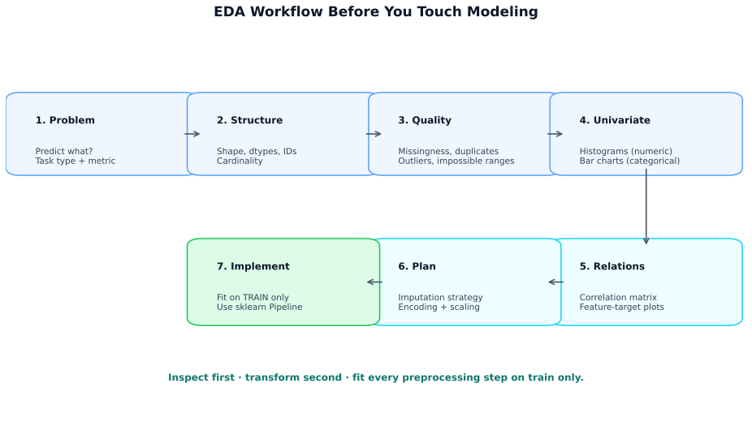
The diagram above summarizes the seven-step workflow. Two quick rules of thumb: a skewed feature → log transform; high-cardinality categorical → target encoding or hashing.
| Area | Questions |
|---|---|
| Types | Which columns are numeric, categorical, ordinal, datetime, text? |
| Missingness | Is missingness informative or structured? |
| Distribution | Are variables skewed or heavy-tailed? |
| Target signal | Which features correlate with target? |
| Redundancy | Are features highly collinear? |
| Imbalance | Is class imbalance present? |
| Leakage | Any leakage-prone variables? |
Key: EDA should directly map observations to preprocessing decisions.
import pandas as pd
import numpy as np
df = pd.read_csv("data.csv")
print(df.shape)
print(df.head())
print(df.info())
print(df.describe(include="all").T)
missing_pct = df.isna().mean().sort_values(ascending=False)
print(missing_pct.head(20))
duplicate_count = df.duplicated().sum()
print("Duplicates:", duplicate_count)
numeric_cols = df.select_dtypes(include=np.number).columns
categorical_cols = df.select_dtypes(exclude=np.number).columns
print("Numeric columns:", list(numeric_cols))
print("Categorical columns:", list(categorical_cols))Further Reading
Missing data is common: sensor failure, skipped forms, schema drift, bad joins. First ask: why is it missing?
| Type | Full form & meaning | Implication | Example |
|---|---|---|---|
| MCAR | Missing Completely At Random. Missingness is unrelated to any observed or unobserved data — purely accidental. | Simple methods (drop, mean/median) are often safe; no systematic bias introduced. | A lab technician accidentally drops 5 blood samples — the lost results have nothing to do with the patients' health status. |
| MAR | Missing At Random. Missingness depends on other observed variables, but not on the missing value itself. | Can model and impute reliably using the observed predictors (e.g. MICE). | Younger survey respondents skip the "income" field more often — missingness correlates with age (observed), not with income itself. |
| MNAR | Missing Not At Random. Missingness depends on the missing value itself or an unobserved factor. | Standard imputation can introduce bias. May need domain heuristics, sensitivity analysis, or a missingness indicator feature. | High-income individuals refuse to report their salary — the reason for missingness is the value. Similarly, severely ill patients may miss follow-up visits because of their condition. |
Key: Missingness mechanism determines how risky imputation is.
| Strategy | Best when | Main risk |
|---|---|---|
| Drop rows/columns | Few bad rows / mostly empty column | Lose signal |
| Mean/median/mode | Fast baseline | Distorts structure |
| Constant value | Missing has meaning | Artificial value/category |
| Missing indicator | Missingness is informative | More features |
| KNN / iterative | Complex feature relationships | Slow, tuning-heavy |
Use when:
df = df.dropna(subset=["age"])
df = df.drop(columns=["mostly_missing_column"])from sklearn.impute import SimpleImputer
num_imputer = SimpleImputer(strategy="median")
cat_imputer = SimpleImputer(strategy="most_frequent")cat_imputer = SimpleImputer(strategy="constant", fill_value="Unknown")Use when missing means unknown / not applicable.
df["income_missing"] = df["income"].isna().astype(int)Use when the fact of missingness may carry signal.
from sklearn.impute import KNNImputer
imputer = KNNImputer(n_neighbors=5)
X_imputed = imputer.fit_transform(X_train)MICE (Multiple Imputation by Chained Equations) is the gold standard for complex missingness. The idea: treat each missing feature as the target of a regression model trained on all other features, then iterate until convergence.
How MICE works (one cycle):
The diagram below shows one full MICE cycle. sklearn's IterativeImputer implements this principle:
from sklearn.experimental import enable_iterative_imputer
from sklearn.impute import IterativeImputer
imputer = IterativeImputer(max_iter=10, random_state=42)
X_imputed = imputer.fit_transform(X_train) # fit on train only| Method | When to use | Cost |
|---|---|---|
| KNN imputation | Small–medium datasets, spatial/demographic data | Medium (scales with k × rows) |
| MICE / Iterative | Complex feature interactions; MAR data; clinical/survey data | High (multiple model fits) |
Key: MICE respects relationships between features when filling gaps — it imputes income using age, education, and job role together, not in isolation. Start with mean/median for quick baselines; upgrade to MICE when validation shows it helps.
Key: Imputers learn from data, so fitting on full data causes leakage.
from sklearn.compose import ColumnTransformer
from sklearn.pipeline import Pipeline
from sklearn.preprocessing import OneHotEncoder, StandardScaler
from sklearn.impute import SimpleImputer
numeric_features = ["age", "income"]
categorical_features = ["city", "segment"]
numeric_pipeline = Pipeline([
("imputer", SimpleImputer(strategy="median")),
("scaler", StandardScaler())
])
categorical_pipeline = Pipeline([
("imputer", SimpleImputer(strategy="most_frequent")),
("encoder", OneHotEncoder(handle_unknown="ignore"))
])
preprocessor = ColumnTransformer([
("num", numeric_pipeline, numeric_features),
("cat", categorical_pipeline, categorical_features)
])Further Reading - Scikit-learn imputation documentation: https://scikit-learn.org/stable/modules/impute.html - Little & Rubin overview of missing data concepts: https://en.wikipedia.org/wiki/Missing_data
Most ML models require numeric input, but real-world data is full of categories — cities, product types, colour names. Feature encoding converts these categories into numbers the model can use. The right encoding depends on three things: whether the categories have a natural order, how many unique values there are (cardinality), and what model you're training. Getting this wrong can introduce false ordinal relationships or blow up the feature space.
This section covers six encoding methods — from simple label encoding to the hashing trick — along with how to handle unknown categories in production and leakage risks with target encoding.
| Method | Best for | Strength | Risk |
|---|---|---|---|
| Label encoding | Targets, some ordinal/tree cases | Simple | False order |
| Ordinal encoding | True ordered categories | Preserves rank | Wrong for nominal data |
| One-hot encoding | Low-cardinality nominal features | Safe, interpretable | Wide matrices |
| Frequency/count | High-cardinality categories | Compact | Loses identity |
| Target encoding | Predictive high-cardinality categories | Strong signal | Leakage |
| Hashing trick | Very high-cardinality / large-scale | Fixed size | Collisions |
Key: Match encoding to category meaning, feature cardinality, and model sensitivity to numeric order.
Map each category to an arbitrary integer. Use for target labels, ordinal data, or tree models. Risk: linear and distance-based models may infer a false numeric ordering.
from sklearn.preprocessing import LabelEncoder
le = LabelEncoder()
y_encoded = le.fit_transform(y)Before — color | After — color_enc |
|---|---|
| Red | 2 |
| Blue | 0 |
| Green | 1 |
| Red | 2 |
Use only when category order is genuinely meaningful (low < medium < high; bronze < silver < gold). You specify the order explicitly so the model sees the right numeric spacing.
from sklearn.preprocessing import OrdinalEncoder
enc = OrdinalEncoder(categories=[["low", "medium", "high"]])
X_ord = enc.fit_transform(df[["priority"]])Before — priority | After — priority_enc |
|---|---|
| low | 0 |
| high | 2 |
| medium | 1 |
| low | 0 |
Creates one binary column per category value. Safe for nominal data with linear models and neural networks. Width explodes for high-cardinality features (e.g. 10,000 cities → 10,000 columns).
from sklearn.preprocessing import OneHotEncoder
ohe = OneHotEncoder(handle_unknown="ignore", sparse_output=True)
X_cat = ohe.fit_transform(df[["city"]])Before — city | city_NY | city_LA | city_SF |
|---|---|---|---|
| NY | 1 | 0 | 0 |
| LA | 0 | 1 | 0 |
| NY | 1 | 0 | 0 |
| SF | 0 | 0 | 1 |
Replace each category with its frequency (or raw count) in the training set. Compact — only one column output. Good for tree models and high-cardinality features. Loses category identity (two categories with the same frequency become identical).
freq = df["city"].value_counts(normalize=True)
df["city_freq"] = df["city"].map(freq)Before — city | After — city_freq | Note |
|---|---|---|
| NY | 0.50 | NY appears 50% of the time |
| NY | 0.50 | |
| LA | 0.25 | |
| SF | 0.25 |
Replace each category with the mean target value for that category, computed on training data only. Strong signal for high-cardinality categorical features. Leakage-prone unless computed out-of-fold.
For binary classification: \(\text{Enc}(c) = \mathbb{E}[y \mid x_{\text{cat}} = c]\)
Before — neighbourhood | Target y | After — neighbourhood_enc |
|---|---|---|
| Mayfair | 1 (expensive) | 0.80 (80% expensive) |
| Mayfair | 0 | 0.80 |
| Hackney | 0 | 0.20 (20% expensive) |
| Hackney | 0 | 0.20 |
Key: Always compute target encoding on the training fold only. Use sklearn's
TargetEncoder(sklearn ≥ 1.3) or thecategory_encoderslibrary which handle this correctly out-of-the-box.
Strong, but leakage-prone unless out-of-fold.
Out-of-fold target encoding explained: The naive approach — compute the mean target per category on the full training set, then use it — leaks information because every row's own label influenced the encoding it receives. The fix is a K-fold approach:
This mirrors cross-validation and ensures no row ever sees its own label during encoding.
# sklearn ≥ 1.3 handles out-of-fold internally
from sklearn.preprocessing import TargetEncoder
enc = TargetEncoder(smooth="auto") # smoothing shrinks toward global mean
X_train_enc = enc.fit_transform(X_train[["neighbourhood"]], y_train)
X_val_enc = enc.transform(X_val[["neighbourhood"]])Key:
TargetEncoderuses internal cross-fitting duringfit_transformon training data, preventing leakage automatically. Thesmoothparameter shrinks small-sample categories toward the global mean, acting as regularization.
Hash categories into a fixed number of bins using a hash function. No need to store a vocabulary mapping. Used in very large-scale systems (e.g. text feature hashing in web ads). Risk: two distinct categories can hash to the same bin (collision).
Before — product_id | After — hash_bin (8 bins) |
|---|---|
| SKU-1042 | 3 |
| SKU-5871 | 7 |
| SKU-9934 | 3 ← collision with SKU-1042 |
What happens when categories collide? When two categories hash to the same bin, their signals get mixed: the model sees one combined feature instead of two separate ones. This adds noise, but with enough bins (e.g. 218 = 262,144) collisions are rare and the noise is minor. A more advanced technique — signed hashing — assigns each category a random sign (+1 or −1) in addition to the bin index. Collisions partially cancel out rather than piling up, preserving more signal.
"But doesn't increasing bins just bring back the cardinality problem?" No — and here's why. Suppose you have 500,000 product IDs. One-hot encoding creates exactly 500,000 columns, one per ID, and any new ID the model has never seen gets no representation at all. Hashing to 218 (≈ 262K) bins creates a fixed 262K-column matrix regardless of whether you have 500K or 5 million categories. The key differences:
Think of it like a library with 262K shelves: you can shelve millions of books as long as you accept that two books occasionally share a shelf. That occasional sharing (collision) adds a tiny bit of noise, but you never need to build a new shelf for a new book.
from sklearn.feature_extraction import FeatureHasher
hasher = FeatureHasher(n_features=2**18, input_type="string")
X_hashed = hasher.transform(X_train["product_id"].apply(lambda x: [x]))
# Signed hashing is the default — collisions partially cancelKey: More bins → fewer collisions → less noise. Signed hashing (sklearn's default) lets collisions partially cancel each other's effect. For most practical purposes, 216 – 220 bins keep collision noise negligible.
| Situation | Default choice |
|---|---|
| Nominal + low cardinality | One-hot |
| Ordinal | Ordinal encoding |
| High cardinality | Frequency / Target / Hashing |
| Tree-based models | Can tolerate integer-like encodings better, but semantics still matter |
| Feature type | → Encoding |
|---|---|
| Nominal + small cardinality | One-hot |
| Ordinal | Ordinal |
| High cardinality | Frequency / Target / Hashing |
In production, the model will encounter category values it never saw during training. Each encoding handles this differently:
| Encoding | Default on unseen label | Recommended handling |
|---|---|---|
| Label / Ordinal | Error | Map unseen to a reserved "unknown" integer (e.g. −1) before encoding |
| One-Hot | Error (default) | handle_unknown="ignore" → all-zeros row |
| Frequency | NaN (unmapped key) | Fill with 0 or a small epsilon |
| Target | NaN or global mean | Map to global target mean (the "prior") |
| Hashing | Works automatically | Hash function handles any string — no vocabulary needed |
# One-hot: handle unseen categories gracefully
from sklearn.preprocessing import OneHotEncoder
ohe = OneHotEncoder(handle_unknown="ignore", sparse_output=False)
ohe.fit(X_train[["city"]])
# Unseen category "Boston" → all-zeros row, no crash
ohe.transform(pd.DataFrame({"city": ["Boston"]}))Key: Always plan for unseen labels. In production, new categories appear constantly.
handle_unknown="ignore"for one-hot and the hashing trick are the most robust options.
For quick prototyping, pd.get_dummies is the simplest way to one-hot encode:
df = pd.get_dummies(df, columns=["city"], drop_first=False)Correct workflow:
Key: Never compute target encoding on the full dataset before splitting.
Encoding can interact with scaling, especially for distance-based or gradient-based models.
Further Reading - Scikit-learn preprocessing encoders: https://scikit-learn.org/stable/modules/preprocessing.html - Category Encoders library: https://contrib.scikit-learn.org/category_encoders/
Imagine you're building a KNN model with two features: Age (20–70) and Income (30,000–200,000). When the model measures "distance" between two customers, Income swamps Age by a factor of thousands — the model effectively ignores Age entirely. Scaling fixes this by putting every feature on a comparable range so no single feature dominates just because of its units.
This section covers four scaling methods and two transform techniques:
| Method | One-liner | Reach for when |
|---|---|---|
| StandardScaler | Mean 0, std 1 | Default for most models |
| MinMaxScaler | Map to [0, 1] | Neural nets, bounded inputs |
| RobustScaler | Median + IQR | Outlier-heavy data |
| Normalizer | Unit norm per row | Text / cosine similarity |
| Log transform | log(1 + x) | Right-skewed features (income, counts) |
| Box-Cox / Yeo-Johnson | Power transform to Gaussian | Very skewed data; models that assume normality |
The first three scale each column (feature-wise). Normalizer is different — it scales each row (sample-wise) to unit length.
Important for: KNN, K-Means, logistic regression, linear regression + regularization, SVMs, neural nets, PCA
Usually less critical for: decision trees, random forests, gradient-boosted trees
Key: Scale when the model depends on distances, dot products, or gradients.
Standardization and Normalization are often confused, but they're quite different:
z = (x − μ) / σ. Used when you want features on a comparable statistical footing (especially for linear models, SVMs, PCA).x' = (x − min) / (max − min). Used when you need bounded values (neural networks, image processing).There's also a third concept: Row Normalization (via Normalizer), which operates on each row (sample) instead of columns, scaling to unit length. This is used for text and directional data.
Summary: Most algorithms in this section are column-wise scaling techniques (Standardization and Normalization both scale features). The Normalizer operates row-wise. See the table below:
| Technique | Type | Operation | Result Range |
|---|---|---|---|
| StandardScaler | Standardization | (x − μ) / σ | approx. −3 to +3 |
| MinMaxScaler | Normalization | (x − min) / (max − min) | 0 to 1 |
| RobustScaler | Standardization (robust variant) | (x − median) / IQR | approx. −2 to +2 |
| Normalizer | Row Normalization | x / ||x||₂ (per row) | unit norm (L2=1) |
Let's walk through each method with concrete before/after examples. Consider three features with very different raw ranges:
| Feature | Row 1 | Row 2 | Row 3 | Row 4 |
|---|---|---|---|---|
| Age (20–70) | 25 | 45 | 35 | 70 |
| Income (30K–200K) | 30,000 | 80,000 | 120,000 | 200,000 |
| Rating (1–5) | 2 | 5 | 3 | 4 |
What it does: Subtracts the mean and divides by the standard deviation. Every feature ends up centered at zero with unit variance.
\[ z = \frac{x - \mu}{\sigma} \]
When to use: Default choice for most ML models. Especially important for logistic regression, SVMs, and PCA.
| Feature | Row 1 | Row 2 | Row 3 | Row 4 |
|---|---|---|---|---|
| Age | −1.05 | 0.00 | −0.52 | 1.57 |
| Income | −1.17 | −0.39 | 0.24 | 1.49 |
| Rating | −1.26 | 1.07 | −0.49 | 0.29 |
from sklearn.preprocessing import StandardScaler
scaler = StandardScaler()
X_scaled = scaler.fit_transform(X_train)What it does: Maps every value into the range [0, 1] (or any custom range). The minimum becomes 0 and the maximum becomes 1.
\[ x' = \frac{x - x_{\min}}{x_{\max} - x_{\min}} \]
When to use: Neural networks (activations expect bounded inputs), image pixel intensities, features that must stay non-negative.
| Feature | Row 1 | Row 2 | Row 3 | Row 4 |
|---|---|---|---|---|
| Age | 0.00 | 0.44 | 0.22 | 1.00 |
| Income | 0.00 | 0.29 | 0.53 | 1.00 |
| Rating | 0.00 | 1.00 | 0.33 | 0.67 |
from sklearn.preprocessing import MinMaxScaler
scaler = MinMaxScaler()
X_scaled = scaler.fit_transform(X_train)What it does: Centers using the median and scales using the interquartile range (IQR = Q3 − Q1) instead of mean/std. Outliers have much less influence because median and IQR are inherently robust statistics.
\[ x' = \frac{x - \text{median}}{\text{IQR}} \]
When to use: Data with significant outliers — e.g. transaction amounts, sensor readings with spikes.
For the same raw data above, RobustScaler produces results similar to StandardScaler but with less extreme values when outliers are present. With the Age/Income/Rating dataset shown, the scaled values would be close to StandardScaler's output since there are no strong outliers. The benefit becomes clear in datasets with extreme values.
from sklearn.preprocessing import RobustScaler
scaler = RobustScaler()
X_scaled = scaler.fit_transform(X_train)What it does: Unlike the other three, Normalizer operates on rows (samples), not columns (features). Each row is scaled to unit length (L2 norm = 1). This means what matters is the direction (proportions) of each sample's features, not their magnitude.
When to use: Text classification (TF-IDF vectors), cosine-similarity tasks, any setting where relative proportions matter more than absolute values.
Example: If Row 1 is [25, 30000, 2], after L2 normalization it becomes [≈0.0008, ≈0.9999, ≈0.0001] — all magnitudes collapsed to a unit vector where the direction is preserved but raw scale is lost.
from sklearn.preprocessing import Normalizer
norm = Normalizer(norm="l2")
X_norm = norm.fit_transform(X_train)Key takeaway: StandardScaler centers at 0 (is a Standardization method), MinMaxScaler bounds to [0,1] (is a Normalization method), RobustScaler is a Standardization variant for outlier-heavy data, and Normalizer operates on rows for directional tasks.
For heavily skewed positive features:
\[ x' = \log(1 + x) \]
df["income_log"] = np.log1p(df["income"])Also useful:
from sklearn.pipeline import Pipeline
from sklearn.linear_model import LogisticRegression
pipe = Pipeline([
("scaler", StandardScaler()),
("model", LogisticRegression(max_iter=1000))
])Key: Put scaling inside a pipeline to avoid leakage and keep train/test transforms identical.
Further Reading - Scikit-learn preprocessing scalers: https://scikit-learn.org/stable/modules/preprocessing.html - Feature scaling overview: https://en.wikipedia.org/wiki/Feature_scaling
After encoding and scaling, you may still have dozens (or hundreds) of features — many redundant, noisy, or irrelevant. Feature selection trims these down to the subset that actually helps the model. Feature importance tells you which features contribute most to predictions. This section covers both — starting with why having too many features is dangerous in the first place.
Before we look at selection methods, it helps to understand why having too many features is dangerous. As the number of features (dimensions) grows, the volume of the space grows exponentially. This creates three compounding problems:
| Features | 2 | 10 | 100 | 1,000 |
|---|---|---|---|---|
| Volume ratio | 1 | 10⁸ | 10¹⁰⁰ | … |
| Sample gap | √n | n⁵ | n⁵⁰ | n⁵⁰⁰ |
(to fill the same density)
Why feature selection matters: Fewer, more informative features → denser, more useful representation → better generalization. Dimensionality reduction (PCA, t-SNE, UMAP — covered in Section 4.6) and feature selection are both answers to the curse.
Key: Adding irrelevant features doesn’t just add noise — it exponentially dilutes the signal space, forcing models to search a larger, emptier space with the same amount of data.
| Approach | How it works | Pros | Cons |
|---|---|---|---|
| Filter | Score features independently | Fast, model-agnostic | Misses interactions |
| Wrapper | Evaluate feature subsets with model | Realistic | Expensive |
| Embedded | Select during training | Efficient, task-aligned | Model-dependent |
The story: Imagine you're building a customer-churn model with 200 features. Before training any model, you want a quick sanity check: which features even correlate with churn? Filter methods score each feature independently — fast, model-agnostic, and a great first pass. You run ANOVA F-tests and immediately discover that 80 features have near-zero variance or no statistical relationship with the target. You drop them, cutting your feature space by 40% before training begins.
Common filter methods:
from sklearn.feature_selection import SelectKBest, f_classif
selector = SelectKBest(score_func=f_classif, k=10)
X_sel = selector.fit_transform(X_train, y_train)The story: After the filter pass, you still have 120 features. Now you want to find the best subset — features that work well together, not just individually. You use Recursive Feature Elimination (RFE): fit a logistic regression, drop the least-important feature, refit, repeat. It's expensive (you're training the model dozens of times), but it accounts for feature interactions that filter methods miss. After RFE, you're down to 30 features and your cross-validated F1 actually improved — fewer features, less noise.
Common wrapper methods:
from sklearn.feature_selection import RFE
from sklearn.linear_model import LogisticRegression
selector = RFE(LogisticRegression(max_iter=1000), n_features_to_select=10)
X_sel = selector.fit_transform(X_train, y_train)The story: The data scientist on the team says: "Why run selection separately? Let the model do it during training." She switches to an L1-regularized (Lasso) logistic regression. L1 drives irrelevant feature coefficients to exactly zero — the model itself performs feature selection as a side effect of fitting. After training, 18 of 30 features have non-zero coefficients, and she ships only those. No separate selection step, no extra compute.
Common embedded methods:
from sklearn.linear_model import LogisticRegression
model = LogisticRegression(penalty="l1", solver="liblinear")
model.fit(X_train, y_train)Key: Filter = fastest, Wrapper = most expensive, Embedded = best integrated with model.
| Type | Works for | Caveat |
|---|---|---|
| Coefficient-based | Linear models | Compare only after scaling |
| Tree-based | Tree ensembles | Bias toward high-cardinality / continuous features |
| Permutation importance | Any trained model | Slower; needs validation data |
from sklearn.ensemble import RandomForestClassifier
rf = RandomForestClassifier(random_state=42)
rf.fit(X_train, y_train)
importances = rf.feature_importances_from sklearn.inspection import permutation_importance
result = permutation_importance(rf, X_val, y_val, n_repeats=10, random_state=42)Key: Permutation importance is often more trustworthy than impurity-based tree importance.
With highly correlated features:
Key: Correlated features make importance unstable; use validation + domain knowledge.
Feature selection must occur inside cross-validation.
from sklearn.pipeline import Pipeline
from sklearn.feature_selection import SelectKBest, f_classif
from sklearn.linear_model import LogisticRegression
pipe = Pipeline([
("select", SelectKBest(f_classif, k=20)),
("model", LogisticRegression(max_iter=1000))
])Key: Selection outside the pipeline leaks validation information.
Statistical methods score features against the target — but they can't know that a feature is operationally unavailable at prediction time, legally prohibited, or only meaningful because of domain knowledge accumulated over years. Subject Matter Experts (SMEs) are irreplaceable here.
What SMEs contribute to feature selection:
Practical rule: Run your data-driven importance ranking, then review the top features and any feature drops with a domain expert before finalizing. Build a feature registry that documents each feature's source, availability, and business rationale.
Further Reading - Scikit-learn feature selection: https://scikit-learn.org/stable/modules/feature_selection.html - Interpretable ML on feature importance: https://christophm.github.io/interpretable-ml-book/feature-importance.html
When feature selection (Section 4.5) isn't enough — or when you need to visualize high-dimensional data — dimensionality reduction projects features into a lower-dimensional space while preserving the most important structure. This section introduces three widely used methods, each suited to different goals.
High-dimensional data has two problems: the “curse of dimensionality” (distances become meaningless in high dims — see the explanation in Section 4.5), and it’s impossible to visualize. Dimensionality reduction solves both.
| Method | Purpose | Preserves |
|---|---|---|
| PCA | Linear compression for training | Global variance |
| t-SNE | Visualize clusters in 2D/3D | Local neighbourhoods |
| UMAP | Visualize + sometimes training | Local + some global |
Use PCA when you need the transformation for downstream ML. Use t-SNE or UMAP when you want to explore/visualize.
Maps high-dimensional data to fewer dimensions by creating new features.
Useful for:
Key: Dimensionality reduction builds new coordinates; feature selection keeps old ones.
Finds orthogonal directions of maximum variance.
If \(X\) is centered data, PCA finds directions \(w\) maximizing:
\[ \max_{\|w\|=1} \mathrm{Var}(Xw) \]
Deep dive: For a full visual walkthrough of PCA — shadow analogy, eigenvectors vs regular vectors, eigenvalues as variance, and a step-by-step numerical example — see Section 8.2 Dimensionality Reduction.
from sklearn.decomposition import PCA
from sklearn.preprocessing import StandardScaler
X_scaled = StandardScaler().fit_transform(X_train)
pca = PCA(n_components=0.95) # keep 95% variance
X_pca = pca.fit_transform(X_scaled)
print(pca.explained_variance_ratio_)Key: PCA keeps variance, not necessarily task-relevant information.
Nonlinear method for 2D/3D visualization; preserves local neighborhoods.
Pros - Often shows clusters clearly
Cons
Nonlinear method for visualization/embeddings; often preserves local structure and scales better than t-SNE.
Pros
Cons
| Method | Type | Best use | Typical role |
|---|---|---|---|
| PCA | Linear | Compression, preprocessing | Production-friendly |
| t-SNE | Nonlinear | Visualization | Exploratory only |
| UMAP | Nonlinear | Visualization, embeddings | Mostly exploratory |
from sklearn.pipeline import Pipeline
from sklearn.decomposition import PCA
from sklearn.linear_model import LogisticRegression
pipe = Pipeline([
("scaler", StandardScaler()),
("pca", PCA(n_components=20)),
("model", LogisticRegression(max_iter=1000))
])Key: Use PCA for modeling pipelines; use t-SNE/UMAP mainly for exploration.
Next: class imbalance.
Further Reading
Class imbalance: one class is rare (e.g. 1% fraud, 99%
non-fraud).
Accuracy can look high while missing the class that matters.
Key: High accuracy can still mean zero minority-class recall.
A majority-class-only model can score well on accuracy and fail completely on the minority class.
More useful metrics: precision, recall, F1 score, Precision-Recall Area Under the Curve (PR-AUC), Receiver Operating Characteristic Area Under the Curve (ROC-AUC), and balanced accuracy.
| Metric | Full form / meaning | Why it matters in imbalance |
|---|---|---|
| Precision | Of predicted positives, how many were truly positive? | Important when false positives are costly |
| Recall | Of true positives, how many did the model catch? | Important when missing the minority class is costly |
| F1 score | Harmonic mean of precision and recall | Useful when you need one number that balances both |
| PR-AUC | Precision-Recall Area Under the Curve | Usually more informative than ROC-AUC for rare-event detection |
| ROC-AUC | Receiver Operating Characteristic Area Under the Curve | Good ranking summary, but can look overly optimistic under extreme imbalance |
| Balanced accuracy | Average of recall on each class | Prevents the majority class from dominating the metric |
| Strategy | Effect | Best when | Main risk |
|---|---|---|---|
| Oversampling | Add minority samples | Minority class very small | Overfitting / synthetic noise |
| Undersampling | Remove majority samples | Majority class huge | Information loss |
| Class weights | Penalize minority errors more | Strong baseline | May be insufficient |
| Threshold tuning | Move decision cutoff | Probabilities available | Precision/recall tradeoff |
| Stratified validation | Preserve class ratio | Almost always | None |
Three common approaches, from simple to sophisticated:
x_new = x_i + λ × (x_neighbour − x_i), where λ ∈ [0, 1].from imblearn.over_sampling import SMOTE
smote = SMOTE(random_state=42)
X_res, y_res = smote.fit_resample(X_train, y_train)ADASYN builds on SMOTE but adapts where it generates samples. Minority points that have more majority neighbours (i.e. they sit near the decision boundary) receive more synthetic samples. Points that are already surrounded by same-class neighbours receive fewer. This focuses the model's learning on the hard cases.
from imblearn.over_sampling import ADASYN
ada = ADASYN(random_state=42)
X_res, y_res = ada.fit_resample(X_train, y_train)| Aspect | SMOTE | ADASYN |
|---|---|---|
| Sample distribution | Uniform across all minority points | More samples near decision boundary |
| Focus | General rebalancing | Hard-to-learn regions |
| Risk | May create samples in majority regions | More noise near boundary if minority overlaps majority |
Key: SMOTE is the workhorse — start there. Switch to ADASYN when the minority class has pockets of high overlap with the majority class and you want the model to focus on the hard examples.
Synthetic oversampling isn't always the right tool. Be cautious when:
SMOTENC (for mixed data) or SMOTEN (all categorical) from imbalanced-learn instead.Instead of creating more minority samples, undersampling removes majority samples to balance the ratio. This is most useful when the majority class is enormous (millions of rows) and training speed matters.
Pros: Much faster training; forces the model to focus on the minority class.
Cons: Discards potentially useful majority-class information. Can hurt performance if the majority class has important substructure that gets lost.
Tip: Combine with ensemble techniques — e.g. BalancedRandomForestClassifier from imbalanced-learn trains each tree on a different random subsample of the majority, so nothing is permanently discarded.
Instead of changing the data, change how the model values each class. Setting class_weight="balanced" tells the model to penalize misclassification of the minority class more heavily — effectively multiplying the loss for minority samples by the inverse of the class frequency. This is the simplest imbalance fix: one parameter, no resampling, no synthetic data. It's often the best starting point before trying SMOTE.
from sklearn.linear_model import LogisticRegression
model = LogisticRegression(class_weight="balanced", max_iter=1000)
model.fit(X_train, y_train)Most classifiers output a probability (e.g. "80% fraud"). The default decision threshold is 0.5: anything above is predicted positive. But with imbalanced data, lowering the threshold (e.g. to 0.3) catches more minority cases at the cost of more false positives. This is a post-training adjustment — no retraining needed. Use a precision-recall curve to pick the threshold that matches your business cost tradeoff.
| Threshold | Recall (Sensitivity) | Precision (Positive Predictive Value) |
|---|---|---|
| Lower | Higher | Lower |
| Higher | Lower | Higher |
With imbalanced data, a random split can accidentally put zero minority samples in your validation fold. Stratified splitting preserves the class ratio in every fold, so your evaluation actually reflects minority-class performance. This isn't a fix for imbalance — it's a prerequisite for honestly measuring any other fix.
Use:
from sklearn.model_selection import StratifiedKFold
cv = StratifiedKFold(n_splits=5, shuffle=True, random_state=42)Resampling must happen only on training folds.
| Incorrect | Correct |
|---|---|
| SMOTE full dataset → split | Split first |
| Leakage into validation/test | Resample training only |
| Over-optimistic evaluation | Evaluate on untouched val/test |
from imblearn.pipeline import Pipeline
from sklearn.preprocessing import StandardScaler
from sklearn.linear_model import LogisticRegression
from imblearn.over_sampling import SMOTE
pipe = Pipeline([
("scaler", StandardScaler()),
("smote", SMOTE(random_state=42)),
("model", LogisticRegression(max_iter=1000))
])Key: Sample inside each training fold, never before the split.
Further Reading
Data leakage = model sees info unavailable at prediction time → validation inflated, real-world performance drops.
The diagram below contrasts two pipelines — the wrong approach that scales before splitting (leaking test statistics into training) and the right approach that keeps all preprocessing inside the training fold.
Key: Any step that learns from data must be fit on training data only, within each fold.
| Type | What leaks | Examples |
|---|---|---|
| Preprocessing leakage | Full-dataset statistics | scaling, imputation, feature selection, PCA before split |
| Target leakage | Feature contains target/future info | account_closed for churn, post-event treatment for
diagnosis |
| Time leakage | Future leaks into past | random split for time series, rolling stats using future values |
| Group leakage | Same entity in train + val | user, patient, household, device overlap |
Key: Ask for every feature: Would this be known at prediction time?
from sklearn.pipeline import Pipeline
from sklearn.compose import ColumnTransformer
from sklearn.impute import SimpleImputer
from sklearn.preprocessing import OneHotEncoder, StandardScaler
from sklearn.linear_model import LogisticRegression
numeric_features = ["age", "income"]
categorical_features = ["city", "segment"]
preprocessor = ColumnTransformer([
("num", Pipeline([
("imputer", SimpleImputer(strategy="median")),
("scaler", StandardScaler())
]), numeric_features),
("cat", Pipeline([
("imputer", SimpleImputer(strategy="most_frequent")),
("encoder", OneHotEncoder(handle_unknown="ignore"))
]), categorical_features)
])
pipe = Pipeline([
("preprocessor", preprocessor),
("model", LogisticRegression(max_iter=1000))
])
pipe.fit(X_train, y_train)
y_pred = pipe.predict(X_test)from sklearn.model_selection import TimeSeriesSplit, GroupKFold
tscv = TimeSeriesSplit(n_splits=5)
gkf = GroupKFold(n_splits=5)Fit these inside each training fold only:
Key rule: If a step computes statistics, selects features, estimates components, or synthesizes samples, keep it inside the training fold.
Further Reading
Feature selection and scaling work with existing columns. Feature creation generates new columns by combining, transforming, or aggregating existing ones. This is often where the biggest ML gains come from.
Key: Models learn from features they are given. If the signal exists in the data but not in the current features, adding derived features is the fastest path to improvement.
Log transform for right-skewed features (income, page views, transaction amounts):
df["log_income"] = np.log1p(df["income"]) # log(1 + x) handles zerosBinning / discretization when non-linear thresholds exist:
df["age_group"] = pd.cut(df["age"], bins=[0, 18, 35, 55, 100],
labels=["under_18", "18_35", "35_55", "55+"])Ratio features when the relationship between two measures matters more than either alone:
df["debt_to_income"] = df["total_debt"] / (df["income"] + 1)
df["clicks_per_impression"] = df["clicks"] / (df["impressions"] + 1)Polynomial and cross-product features capture non-additive relationships:
from sklearn.preprocessing import PolynomialFeatures
poly = PolynomialFeatures(degree=2, interaction_only=True, include_bias=False)
X_interactions = poly.fit_transform(X_train[["age", "income", "tenure"]])Warning: Degree-2 polynomial features grow as \(O(n^2)\). With 100 input features, you get ~5,000 interaction terms. Use sparingly or with feature selection.
Date and time columns contain multiple independent signals:
df["event_date"] = pd.to_datetime(df["event_date"])
df["hour"] = df["event_date"].dt.hour
df["day_of_week"] = df["event_date"].dt.dayofweek
df["is_weekend"] = df["day_of_week"].isin([5, 6]).astype(int)
df["month"] = df["event_date"].dt.month
df["week_of_year"] = df["event_date"].dt.isocalendar().week
# Cyclical encoding (prevents 23 and 0 being "far apart")
df["hour_sin"] = np.sin(2 * np.pi * df["hour"] / 24)
df["hour_cos"] = np.cos(2 * np.pi * df["hour"] / 24)Days since events (recency signals):
df["days_since_last_purchase"] = (
pd.Timestamp("today") - pd.to_datetime(df["last_purchase_date"])
).dt.daysFor entity-level data (user, product, merchant), aggregate behavior over time:
# User-level aggregations (fit on train, apply to all)
user_stats = X_train.groupby("user_id").agg(
user_avg_order_value=("order_value", "mean"),
user_order_count=("order_id", "count"),
user_max_order=("order_value", "max")
).reset_index()
df = df.merge(user_stats, on="user_id", how="left")Rolling window features for time series:
df = df.sort_values(["user_id", "date"])
df["rolling_7d_spend"] = (
df.groupby("user_id")["spend"]
.transform(lambda x: x.rolling(7, min_periods=1).mean())
)Leakage warning: For temporal data, compute all window features using only past data relative to the prediction point. Never use future rows in a rolling window.
Even when not building an NLP model, text columns can yield useful structured features:
df["description_word_count"] = df["description"].str.split().str.len()
df["has_discount_keyword"] = df["title"].str.contains(r"sale|discount|off",
case=False).astype(int)
df["description_char_count"] = df["description"].str.len()The highest-value features usually come from domain knowledge, not automatic transformations:
| Domain | Example engineered features |
|---|---|
| E-commerce | Days since last purchase, purchase frequency, average basket size |
| Fraud | Velocity (5 transactions in last hour), new device flag, distance from home |
| Healthcare | BMI from height/weight, days since last visit, medication adherence rate |
| Credit risk | Debt-to-income ratio, credit utilization, months since last delinquency |
| Marketing | Recency-Frequency-Monetary (RFM) score, engagement rate |
sklearn.pipeline.Pipeline to enforce this
automatically.Fraud detection is a canonical feature engineering problem: extreme class imbalance (~0.1% fraud), mixed feature types, temporal ordering constraints, and high business cost of both false negatives (missed fraud) and false positives (blocked legitimate customers).
Typical features available in a card transaction dataset:
| Feature | Type | Notes |
|---|---|---|
transaction_id | ID | Drop — no signal |
timestamp | Datetime | Engineer: hour, day-of-week, days-since-last-txn |
amount | Numeric | Log-transform (heavy right skew) |
merchant_category | Nominal (50+ categories) | Target encode or frequency encode |
country | Nominal (200+) | High-cardinality → frequency or target encode |
card_present | Binary | Use as-is |
customer_id | ID | Use to aggregate history features, then drop raw ID |
merchant_zip missing for 12% of online transactions (MCAR — safe to impute with a constant like “UNKNOWN”)| Engineered Feature | Rationale |
|---|---|
log_amount | Normalize right skew; log(amount+1) handles zeros |
hour_of_day, is_night | Capture temporal fraud pattern |
days_since_last_txn | Account dormancy is a fraud signal |
txn_count_7d | Velocity feature: unusual spending spike |
amount_vs_customer_mean | Deviation from personal baseline (ratio) |
is_foreign_country | Binary flag: different country from home country |
merchant_cat_enc | Target encoding (out-of-fold) on merchant category |
customer_id must be dropped before the model; use it only to compute history featuresYour model achieves 99% accuracy on a fraud detection dataset. Should you be happy?
Almost certainly not. If only 1% of transactions are fraudulent, a model that predicts "legitimate" for everything achieves 99% accuracy with zero fraud caught. Always check precision, recall, and Precision-Recall Area Under the Curve (PR-AUC) on the minority class. Accuracy is misleading for imbalanced problems.
You have a categorical feature with 50,000 unique values (e.g. product SKU). What encoding would you use and why?
One-hot encoding is out — it creates 50,000 columns. Frequency encoding (replace with relative frequency in training set) works for tree models and is fast. Target encoding (replace with mean target, out-of-fold) captures predictive signal and handles high cardinality well, but requires careful out-of-fold computation to avoid leakage. Hashing tricks are used in large-scale online systems.
What is target leakage and how would you detect it?
Target leakage occurs when a feature contains information about the target that would not be available at prediction time. Classic signs: a model with suspiciously high validation metrics that degrades drastically on production data; a feature that is near-perfect predictor on its own; features derived from the label or from events that happen after the prediction window. Detection: check feature timestamps, trace data provenance, and review with domain experts.
You are asked to impute missing values in an income field (15% missing). Walk through your decision process.
First, diagnose the missingness mechanism: is it MCAR (random), MAR (depends on age or job type), or MNAR (high earners refused to answer)? If MAR: use MICE or KNN imputation and add a binary missing-indicator column. If MNAR: consider domain-specific fill (e.g. "0" for unemployed respondents) + indicator flag. Always fit the imputer on training data only, and include the imputer inside the sklearn Pipeline.
What is the Curse of Dimensionality, and how does it affect a KNN model?
As the number of features grows, the feature space volume grows exponentially. Any fixed dataset becomes increasingly sparse. For KNN, this means that the "nearest" neighbours become almost as far away as all other points — distances concentrate and the notion of proximity breaks down. In practice, KNN degrades sharply beyond ~20 meaningful features. Solutions: feature selection, PCA before KNN, or switch to a tree-based algorithm that handles high dimensions better.
You have customer transaction history and want to compute a "7-day spend velocity" feature. What must you be careful about during training?
This is a time-series aggregation with a temporal leakage risk. Each training row must only look at transactions in the 7 days before its own timestamp — never at transactions after it. In practice this means computing the feature with a time-aware window join, applying a temporal train/test split (not random), and validating that no future rows are included in any lookback window.
What is the difference between filter, wrapper, and embedded feature selection? When would you use each?
Filter methods (mutual information, correlation) score features independently of any model — fast, model-agnostic, good for removing obvious garbage first. Wrapper methods (RFE, forward selection) train the actual model on candidate subsets — more accurate but expensive, only feasible with fast models. Embedded methods (Lasso, tree feature importances) select features during training itself — efficient and task-aligned but model-specific. In practice: start with a filter pass to cut obviously useless features, then use embedded importance from a tree model; use wrapper (RFE) only for final tuning of a small feature set.
A domain expert tells you that a feature you were planning to drop is "very important clinically." Your permutation importance ranks it 47th out of 50. What do you do?
Don't drop it immediately. First, check whether it is correlated with higher-ranked features (collinearity can suppress its individual importance). Second, test a model with vs. without it and compare validation metrics. Third, understand the expert's reasoning — it may be important in certain patient subgroups (interaction effect) that the global importance misses. The right answer is empirical: validate both ways, and document the decision.
You fit a StandardScaler on the entire dataset before doing a train/test split. What is the problem?
This is preprocessing leakage. The scaler's mean and standard deviation are computed using test-set statistics. When you later evaluate on the "test set," the model has indirectly seen the test distribution. In practice the effect is usually small, but it violates the principle of honest evaluation and can be more serious with other transformers (e.g. target encoding, PCA). The fix: always split first, then fit the scaler on the training set only and use transform() on validation and test.
What are the three MICE iteration steps, and why is it better than mean imputation for a dataset where features are correlated?
MICE (Multiple Imputation by Chained Equations): (1) Initialize all missing values with column means. (2) For each column with missingness, train a regression/classification model using all other columns as inputs, then predict and fill the missing values. (3) Cycle through all missing columns repeatedly until the imputed values converge. Better than mean imputation because it respects the joint distribution of features — if income is correlated with age and education, MICE imputes income using both, rather than replacing it with the unconditional mean which narrows the distribution and biases downstream coefficients.
| Pitfall | Consequence | Fix |
|---|---|---|
| Fitting scaler on full dataset before splitting | Leakage — val statistics polluted by test data | Fit inside pipeline, on train only |
| SMOTE before splitting | Synthetic test-set neighbors inflate validation | Resample inside each training fold |
| Target encoding without out-of-fold | Target mean computed with the current row’s label included | Use cross_val encoding or dedicated library |
Using = NULL in SQL for missing values |
Returns no rows (always false) | Use IS NULL |
| High accuracy on imbalanced data without checking recall | Majority-class classifier masquerades as good model | Always check confusion matrix and F1 score |
| Discarding all rows with any missing value | Loses most of your data | Investigate missingness pattern; impute |
| Collinear features causing unstable importance | Feature A and B share signal; one absorbs the other | Drop one correlated feature or use regularization |
| Log transform on zero or negative values | NaN or error | Use log1p(x) or clip to positive range first |
Supervised learning is the foundation of most applied ML: you have labeled (input, output) pairs and want to learn a function that generalizes to new inputs. This chapter covers the core algorithms — from linear regression to gradient boosting — along with regularization, ensemble methods, and model interpretability.
What you will learn:
| Section | Topic |
|---|---|
| 5.1 | The supervised learning framework |
| 5.2 | Linear regression |
| 5.3 | Logistic regression |
| 5.4 | K-Nearest Neighbors |
| 5.5 | Naive Bayes |
| 5.6 | Decision trees and random forests |
| 5.7 | Support vector machines |
| 5.8 | Gradient boosting and XGBoost |
| 5.9 | Ensemble methods |
| 5.10 | Regularization (L1, L2, ElasticNet) |
| 5.11 | Hyperparameter optimization: grid, random, Bayesian (Optuna) |
| 5.12 | Practitioner’s Reference: model assumptions, strengths/weaknesses, complexity, selection framework, data pathologies, production considerations |
Prerequisites: Statistics and probability (Chapter 1), math foundations (Chapter 2), Python (Chapter 3).
Supervised learning is the most commonly used form of ML. You have a dataset of labeled (input, output) pairs and you want to learn a function that generalizes to new inputs.
| Element | Description | Example |
|---|---|---|
| Input (x) | Features / predictors | house size, user clicks, pixel values |
| Output (y) | Label / target | price, fraud (0/1), next word |
| Model f | Learned mapping from x to y | linear regression, decision tree, neural net |
| Loss L | How wrong the prediction is | MSE, cross-entropy, hinge |
| Training | Minimize loss on training data | gradient descent, analytical solution |
| Generalization | Perform well on unseen data | goal of the whole exercise |
You split your data into training data and test data. The model only ever sees the training data while learning. The test data is locked away — it represents “the real world.” Now train models of increasing complexity and measure error on both.
Training error always goes down as complexity increases. Always. A more flexible model can always memorise its training data better.
Test error goes down at first, then comes back up. That U-shape is where the entire story lives.
The gap between training error and test error is your signal:
The sweet spot is where test error is minimised — the model is complex enough to capture the true signal, but not so complex that it chases noise.
At any point on the complexity axis, the total prediction error decomposes as:
Error = Bias² + Variance + Irreducible Noise
This isn’t a formula for the sweet spot — it’s the error breakdown for every model you could choose. As you move right (more complex), the Bias² term shrinks but the Variance term grows. As you move left (simpler), Variance shrinks but Bias² grows. Irreducible noise stays constant — it’s the randomness in the data that no model can remove. The sweet spot is simply where Bias² + Variance is at its minimum:
Practical toolkit for finding the sweet spot: Regularisation (L1/L2, dropout, tree-depth limits) reduces variance by constraining complexity. Cross-validation gives you a reliable estimate of test error so you can compare models. Early stopping halts training before the model starts memorising noise. More training data reduces variance (harder to memorise a bigger dataset). Simpler model reduces variance but may increase bias — always check both curves.
Linear regression is the workhorse of prediction: given a set of input features, it outputs a continuous number by combining those features in a weighted sum. It is the natural first model to try whenever you need to answer "How much?" or "How many?"
Each feature gets a coefficient (β) that measures its contribution to the prediction. The model learns these coefficients by minimising the total squared error across all training examples.
Key: If the question is “how much?”, it’s usually regression.
Linear regression appears simple, but it is one of the most widely deployed models in industry because of three properties: speed (trains in seconds, even on millions of rows), interpretability (every coefficient has a clear business meaning), and reliability (well-understood theory, easy to debug).
Key: Predictions are estimates, not guarantees. The value of linear regression is that those estimates are fast, transparent, and often surprisingly accurate.
\[ y \in \mathbb{R} \]
Examples: house price, sales, score, delivery time, CLV.
\[ x_1, x_2, \dots, x_n \]
\[ \mathbf{x} = [x_1, x_2, \dots, x_n] \]
\[ \hat{y} = f(\mathbf{x}) \]
\[ e_i = y_i - \hat{y}_i \]
\[ \min_{\theta} \sum_{i=1}^{n} L\left(y_i, \hat{y}_i\right) \]
Simple:
\[ \hat{y} = \beta_0 + \beta_1 x \]
Multiple:
\[ \hat{y} = \beta_0 + \beta_1 x_1 + \beta_2 x_2 + \dots + \beta_p x_p \]
Works well when: the relationship is roughly linear, coefficients are stable, and interpretability matters.
Watch out for: nonlinear patterns, outliers pulling the fit, multicollinearity between features, and omitted variables that bias coefficients.
Key: Coefficients are additive feature effects; sign and size matter.
In all formulas below: \(y_i\) = actual value, \(\hat{y}_i\) = predicted value, \(\bar{y}\) = mean of actual values, \(n\) = number of observations.
| Metric | Formula | Best for |
|---|---|---|
| MAE | average absolute error | interpretable, more robust to outliers |
| MSE | average squared error | optimization, punishes large misses |
| RMSE | square root of MSE | target units + penalizes large misses |
| \(R^2\) | variance explained vs mean baseline | fit relative to predicting mean |
MAE
\[ \text{MAE} = \frac{1}{n}\sum_{i=1}^{n}|y_i - \hat{y}_i| \]
MSE
\[ \text{MSE} = \frac{1}{n}\sum_{i=1}^{n}(y_i - \hat{y}_i)^2 \]
RMSE
\[ \text{RMSE} = \sqrt{\frac{1}{n}\sum_{i=1}^{n}(y_i - \hat{y}_i)^2} \]
\(R^2\)
\[ R^2 = 1 - \frac{\sum_{i=1}^{n}(y_i - \hat{y}_i)^2}{\sum_{i=1}^{n}(y_i - \bar{y})^2} \]
| Metric | Penalizes big errors more? | Same units as target? | More robust to outliers? |
|---|---|---|---|
| MSE | Yes | No | No |
| RMSE | Yes | Yes | No |
| MAE | No | Yes | Yes |
\[ e = y - \hat{y} \]
After fitting a regression model, always plot residuals vs fitted values. The shape of that cloud tells you exactly what is wrong (or right) with the model:
| Pattern | Diagnosis | Fix |
|---|---|---|
| Random scatter around 0 | Good — assumptions met | — |
| Fan/funnel (spread grows with fitted value) | Heteroskedasticity — non-constant error variance | Log-transform y; use weighted regression |
| Curved pattern (U-shape or wave) | Missing nonlinear term or interaction | Add polynomial feature; try a nonlinear model |
| Systematic outliers | Data quality issues or influential points | Investigate; consider robust regression |
Key: Good residual plots look random and centered near 0. Any systematic pattern means the model is missing something.
\[ R^2 = 1 - \frac{\sum (y_i - \hat{y}_i)^2}{\sum (y_i - \bar{y})^2} \]
Adjusted \(R^2\): penalizes unnecessary predictors
\[ R^2_{\text{adj}} = 1 - (1 - R^2)\frac{n - 1}{n - p - 1} \]
Key: High \(R^2\) does not guarantee good generalization.
| Situation | Train error | Test error | Meaning |
|---|---|---|---|
| Underfitting | High | High | model too simple |
| Good fit | Low | Low | captures signal |
| Overfitting | Very low | Higher | learned noise |
| Type | Idea | Use when |
|---|---|---|
| Simple linear | one feature, straight line | quick baseline |
| Multiple linear | many features, linear combo | interpretable baseline |
| Polynomial | add \(x^2\), \(x^3\), … | simple curvature |
| Ridge | linear + \(L2\) penalty | many correlated features |
| Lasso | linear + \(L1\) penalty | shrinkage + feature selection |
| Elastic net | \(L1 + L2\) | many related predictors |
Ridge
\[ \text{Loss} = \text{MSE} + \lambda \sum_{j=1}^{n}\beta_j^2 \]
Where: \(\lambda\) = regularization strength (higher → more shrinkage), \(\beta_j\) = regression coefficients.
Lasso
\[ \text{Loss} = \text{MSE} + \lambda \sum_{j=1}^{n}|\beta_j| \]
Key: Start simple; residuals often reveal the next improvement.
House-price model:
\[ \hat{y} = 50000 + 200 \cdot (\text{size}) + 15000 \cdot (\text{bedrooms}) - 1000 \cdot (\text{age}) \]
For size \(=1200\), bedrooms \(=3\), age \(=10\):
\[ \hat{y} = 50000 + 200(1200) + 15000(3) - 1000(10) \]
\[ \hat{y} = 50000 + 240000 + 45000 - 10000 = 325000 \]
\[ \$325{,}000 \]
If actual \(= \$340{,}000\):
\[ e = y - \hat{y} = 340000 - 325000 = 15000 \]
Coefficient interpretation: - +1 sq ft → about +$200 - +1 bedroom → about +$15,000 - +1 year age → about -$1,000
Simple model with size only:
\[ \hat{y} = 50000 + 180(\text{size}) \]
For size \(=1500\):
\[ \hat{y} = 50000 + 180(1500) \]
\[ \hat{y} = 50000 + 270000 = 320000 \]
\[ \$320{,}000 \]
If actual \(= \$310{,}000\):
\[ e = y - \hat{y} = 310000 - 320000 = -10000 \]
| Use regression when | Avoid plain regression when | Use caution when |
|---|---|---|
| target is numeric | output is a class label | censored outcomes |
| error magnitude matters | need class probabilities/classification | highly skewed target |
| estimating price/sales/time/cost/demand | extrapolating beyond training range |
| Model | Use when |
|---|---|
| Linear regression | roughly linear + interpretable |
| Polynomial regression | simple curvature needed |
| Ridge/Lasso/Elastic Net | many predictors, regularization needed |
| Tree / RF / GBM regression | nonlinear interactions matter |
Key: Use linear regression as baseline; move to flexible models if residuals or validation show missed structure.
Assumptions
• Linearity: y is a linear function of X
• Independence of observations
• Homoscedasticity: constant error variance
• Normality of residuals (for inference)
• No multicollinearity among features
If violated: Biased coefficients; inflated standard errors; poor predictions
Strengths
✓ Highly interpretable coefficients
✓ Closed-form solution (OLS)
✓ Fast training and inference
✓ Reliable extrapolation if form is correct
✓ Foundation for Lasso / Ridge regularization
Weaknesses
✗ Assumes linear relationship
✗ Sensitive to outliers
✗ Cannot capture interaction terms without engineering
✗ Assumes homoscedasticity
Computational Complexity
Training: O(nd²) • Inference: O(d) • Memory: O(d) • Scalability: Excellent
Bias–Variance Quick Fix
Underfitting (high bias)
• Add polynomial or interaction features
• Reduce regularization strength (lower alpha)
• Switch to a more flexible model (tree, neural net)
Overfitting (high variance)
• Increase regularization (Ridge / Lasso / Elastic Net)
• Remove noisy or irrelevant features
• Collect more training data
See Section 5.12.7 for bias–variance profiles across all models.
Key: Use logistic regression for interpretable classification baselines. If it works, deploy it — don’t over-engineer.
Linear regression outputs a number; logistic regression squashes that number through a sigmoid function to produce a probability in [0, 1].
| Linear regression: | ŷ = w·x + b | (can be any real number) |
| Logistic regression: ŷ = σ(w·x + b) | (always between 0 and 1) | |
| Where σ(z) = 1 / (1 + e^{-z}) | — the sigmoid / logistic function |

Output is a probability, not a class. Thresholding converts it:
\[ \hat{y} = \begin{cases} 1 & \text{if } \sigma(\mathbf{w}^\top \mathbf{x} + b) \geq 0.5 \\ 0 & \text{otherwise} \end{cases} \]
0.5 is the default threshold. You can change it — lower threshold = more positive predictions (higher recall), higher threshold = fewer positives (higher precision).
Logistic regression is trained by maximizing the likelihood of the training labels:
\[ \text{Loss} = -\frac{1}{n} \sum_{i=1}^{n} \left[ y_i \log \hat{p}_i + (1 - y_i) \log(1 - \hat{p}_i) \right] \]
Where: \(\hat{p}_i = \sigma(\mathbf{w}^\top \mathbf{x}_i + b)\) = predicted probability for sample \(i\), \(y_i \in \{0,1\}\) = true label.
This is binary cross-entropy (log loss). No closed-form solution — use gradient descent.
| Label | Loss formula | When loss is small |
|---|---|---|
| y = 1 (positive) | -log(p̂) | p̂ close to 1 |
| y = 0 (negative) | -log(1 - p̂) | p̂ close to 0 |
| Confident + correct | → loss near 0 | |
| Confident + wrong | → loss → ∞ (heavy penalty) | |
Each coefficient \(w_j\) is the change in log-odds per unit increase in feature \(x_j\):
\[ \log \frac{P(y=1)}{P(y=0)} = \mathbf{w}^\top \mathbf{x} + b \]
| Coefficient sign | Effect on P(y=1) |
|---|---|
| Positive | Feature increases probability of positive class |
| Negative | Feature decreases probability |
| Zero | Feature has no effect |
| Magnitude | Larger = stronger effect (after scaling) |
Key: Coefficients are only directly comparable if features are on the same scale. Standardize inputs before interpreting coefficients.
Logistic regression often benefits from regularization (especially with many features):
| Parameter | Effect |
|---|---|
C (sklearn) |
Inverse of regularization strength — larger C = less regularization |
penalty='l2' |
Ridge: shrinks all coefficients (default) |
penalty='l1' |
Lasso: drives some coefficients to zero (sparse) |
penalty='elasticnet' |
Both: mix of L1 and L2 |
from sklearn.linear_model import LogisticRegression
from sklearn.preprocessing import StandardScaler
from sklearn.pipeline import Pipeline
# Always scale before logistic regression with regularization
pipe = Pipeline([
('scaler', StandardScaler()),
('model', LogisticRegression(C=1.0, penalty='l2', max_iter=1000, random_state=42))
])
pipe.fit(X_train, y_train)
# Probabilities — more useful than hard predictions for thresholding
proba = pipe.predict_proba(X_test)[:, 1] # P(positive class)
preds = (proba >= 0.5).astype(int)For k > 2 classes, sklearn handles it automatically:
| Strategy | When used | How it works |
|---|---|---|
multi_class='ovr' (one-vs-rest) |
Default for most solvers | k separate binary classifiers |
multi_class='multinomial' |
Softmax regression | Single model with softmax output |
# Multinomial (softmax) logistic regression
model = LogisticRegression(multi_class='multinomial', solver='lbfgs', max_iter=1000)
model.fit(X_train, y_train)
proba = model.predict_proba(X_test) # shape: (n_samples, n_classes)| Use it when | Avoid when |
|---|---|
| You need a fast, interpretable baseline | Your data has strong nonlinear interactions |
| Features are well-engineered and informative | You have image/text/sequence data |
| Probabilistic outputs matter (calibration) | You need raw predictive accuracy first |
| You need coefficient-level explanations | Millions of samples and very high cardinality |
class_weight='balanced' or tune thresholdAssumptions
• Log-odds linearly related to features
• Independent observations
• Little to no multicollinearity
• Large sample size for MLE convergence
• No extreme outliers in feature space
If violated: Biased probabilities; poor separation; unreliable p-values
Strengths
✓ Probabilistically calibrated outputs
✓ Extremely fast training and inference
✓ L1/L2 regularization naturally incorporated
✓ Widely deployed in production (credit, ads)
✓ Interpretable log-odds coefficients
Weaknesses
✗ Decision boundary must be linear (in feature space)
✗ Poor performance on complex feature interactions
✗ Requires feature scaling and engineering
✗ Vulnerable to class imbalance without corrections
Computational Complexity
Training: O(nde) • Inference: O(d) • Memory: O(d) • Scalability: Excellent
Bias–Variance Quick Fix
Underfitting (high bias)
• Engineer interaction or polynomial features
• Increase C (weaker regularization in sklearn)
• Switch to a nonlinear model (SVM-RBF, tree ensemble)
Overfitting (high variance)
• Decrease C (stronger L2 penalty)
• Switch to L1 penalty for automatic feature selection
• Add more training data; remove collinear features
See Section 5.12.7 for bias–variance profiles across all models.

KNN is perhaps the most intuitive algorithm in ML: to predict for a new point, look at the K most similar points in your training data and let them vote (classification) or average (regression).
There’s no training phase — the whole dataset is the model. This makes KNN great for rapid prototyping but problematic at scale: prediction time is O(n·d) and you need to store everything.
Key: KNN works by “look at similar past points.”
Assumptions
• Proximity implies similarity (distance is meaningful)
• Features are on comparable scales
• Enough local training density
If violated: Catastrophic degradation in high dimensions (curse of dimensionality)
Strengths
✓ Non-parametric — makes no distributional assumptions
✓ Naturally handles multi-class problems
✓ Simple and easily explainable predictions
✓ No training phase (lazy learner)
Weaknesses
✗ O(n) inference cost is prohibitive at scale
✗ Curse of dimensionality degrades distance metrics
✗ Storage of all training data required
✗ Sensitive to irrelevant features and scale
Computational Complexity
Training: O(1) (lazy) • Inference: O(nd) • Memory: O(nd) • Scalability: Poor (inference)
Bias–Variance Quick Fix
Underfitting (high bias)
• Decrease k (more flexible boundary)
• Use distance-weighted voting (weights='distance')
• Engineer better features; reduce dimensionality (PCA)
Overfitting (high variance)
• Increase k (smoother boundary)
• Remove noisy or irrelevant features
• Scale features properly (StandardScaler / MinMaxScaler)
See Section 5.12.7 for bias–variance profiles across all models.
Imagine you are a doctor. A patient walks in with a fever, a cough, and muscle aches. You cannot observe the disease directly — only the symptoms — and you have to reason backward, from evidence to cause: given what I see, what is the most likely explanation?
Naive Bayes is exactly that kind of reasoning, written down as math. It takes a handful of features (symptoms, words in an email, sensor readings) and asks which class makes the observed evidence most plausible. Despite a simplifying assumption so bold that the word "naive" is baked into its name, it routinely beats models a hundred times more complex — and it trains in seconds, predicts in microseconds, and stays fully interpretable.
Here is the core difficulty. From training data, what we can easily measure is things like "how often do spam emails contain the word 'free'?" — that is, \(P(\text{word} \mid \text{spam})\). But at inference time we want the opposite: "given that this new email contains 'free', what is the probability that it is spam?" — that is, \(P(\text{spam} \mid \text{word})\). The direction of the conditional is reversed. Bayes' theorem is the bridge between those two questions:
\[P(C_k \mid \mathbf{x}) \;=\; \frac{P(\mathbf{x} \mid C_k)\, P(C_k)}{P(\mathbf{x})}\]
Read each piece as its own little story:
In plain English: posterior ∝ prior × likelihood. Start with what you believed before seeing anything, scale it up or down by how well each class explains the evidence, and pick the class with the biggest score.
So far, nothing is controversial. The trouble starts when we have many features at once. The true likelihood \(P(x_1, x_2, \ldots, x_n \mid C_k)\) requires modeling how all features jointly co-occur — an explosion of parameters. Naive Bayes slices through this with one bold move: pretend the features are conditionally independent given the class.
\[P(\mathbf{x} \mid C_k) \;\approx\; \prod_{i=1}^{n} P(x_i \mid C_k)\]
This is almost never literally true. The words "buy" and "now" co-occur in spam more than chance would suggest. "Fever" and "cough" correlate in real flu patients. But ignoring those correlations collapses the parameter count from exponential to linear, and something remarkable happens: even when the independence assumption is wrong, the ranking of classes is often still correct. Naive Bayes picks the right winner even when its raw probability numbers are poorly calibrated.
Key: Naive Bayes picks the right class, not the right probability. The independence assumption can be wildly wrong and the classifier can still win, because the relative ordering between classes often survives the approximation.
Multiplying lots of small probabilities quickly underflows floating-point, so in practice we compute everything in log-space. The prediction rule becomes a clean sum:
\[\hat{y} \;=\; \arg\max_{C_k} \;\; \underbrace{\log P(C_k)}_{\text{prior belief}} \; + \; \sum_{i=1}^{n} \underbrace{\log P(x_i \mid C_k)}_{\text{vote from feature } i}\]
Each term \(\log P(x_i \mid C_k)\) is a vote: features that are typical of class \(C_k\) push its score up, features that are atypical push it down. The class whose votes and prior sum to the largest score wins.
Let's make the picture above concrete. We have a tiny training set of four emails, each described by three binary features — does the email contain the word "free", "click", or "hello"?
| Contains "free" | Contains "click" | Contains "hello" | Label | |
|---|---|---|---|---|
| 1 | Yes | Yes | No | Spam |
| 2 | Yes | No | No | Spam |
| 3 | No | No | Yes | Ham |
| 4 | No | No | Yes | Ham |
Step 1 — priors. Two of the four emails are spam, so \(P(\text{Spam}) = P(\text{Ham}) = 0.5\). Neither class has an advantage before we look at any word.
Step 2 — per-feature likelihoods (Bernoulli NB with Laplace smoothing, \(\alpha=1\)). For each word, we estimate the probability it appears given a class, adding a pseudo-count so nothing is ever exactly 0:
\[\hat{P}(x_i = 1 \mid C_k) \;=\; \frac{\text{count of class-}k\text{ emails with word }i \,+\, 1}{\text{number of class-}k\text{ emails} \,+\, 2}\]
Already we can see the intuition: "free" and "click" lean strongly toward Spam, while "hello" leans toward Ham.
Step 3 — classify a new email. A new email arrives containing "free" and "click" but not "hello". We compute a log-score for each class — exactly the columns of the diagram above. Note that for an absent word we use \(1 - P(\text{word} \mid C_k)\):
\[\log\text{-score}(\text{Spam}) = \log 0.5 + \log 0.75 + \log 0.5 + \log 0.75 = -0.69 - 0.29 - 0.69 - 0.29 = -1.96\]
\[\log\text{-score}(\text{Ham}) = \log 0.5 + \log 0.25 + \log 0.25 + \log 0.25 = -0.69 - 1.39 - 1.39 - 1.39 = -4.86\]
Spam wins by a wide margin (\(-1.96 > -4.86\)), so the email is classified as Spam. Every single word tugged the answer in that direction. And notice how little arithmetic it took — a handful of additions is the entire inference.
The spam example above used binary features (word present or absent). But the same Naive Bayes recipe adapts to any kind of feature, just by swapping the shape of \(P(x_i \mid C_k)\). The three variants you will meet in practice:
| Variant | Likelihood \(P(x_i \mid C_k)\) | Best for |
|---|---|---|
| Gaussian NB | Assumes \(x_i \sim \mathcal{N}(\mu_{ik}, \sigma_{ik}^2)\) — one bell curve per feature per class, fit by simple mean and variance | Continuous features: height, temperature, sensor readings, biometric measurements |
| Multinomial NB | Models counts: \(P(x_i \mid C_k) \propto \theta_{ik}^{x_i}\), where \(\theta_{ik}\) is the relative frequency of feature \(i\) in class \(k\) | Word-count and TF-IDF vectors — the default choice for text classification |
| Bernoulli NB | Binary presence/absence: \(P(x_i \mid C_k) = \theta_{ik}^{x_i}(1-\theta_{ik})^{1-x_i}\) | Binary bag-of-words (word appeared? yes/no) — short texts like tweets, SMS, subject lines |
The rule of thumb: match the distribution to the feature type. For continuous sensors, Gaussian. For long documents with word counts, Multinomial. For short texts where "the word appeared at all" is what matters, Bernoulli.
Gaussian NB is the easiest variant to visualize. During training, for each feature and each class, compute just two numbers — the mean \(\mu_{ik}\) and the variance \(\sigma_{ik}^2\). These define a bell curve that describes how that feature is distributed within that class. At inference, plug the new observation into each class's bell curve, read off the height, and use it as the likelihood.
The picture tells the story: the new observation falls near the center of the flu distribution and far out in the tail of the healthy distribution. The blue curve is much higher there, so \(P(x \mid \text{flu})\) dominates \(P(x \mid \text{healthy})\), and (assuming equal priors) the classifier votes flu. With multiple features, you simply do this for each feature and add the logs together.
Here is a landmine that has surprised every beginner at least once. Suppose the word "quokka" never appeared in any training spam. Then \(P(\text{"quokka"} \mid \text{Spam}) = 0\), and because Naive Bayes multiplies probabilities, the entire posterior for Spam collapses to zero — no matter how many other obvious spam words appear alongside it. A single unseen word can veto all the other evidence in the email.
Laplace (additive) smoothing fixes this by pretending we saw each feature at least \(\alpha\) extra times in every class:
\[\hat{\theta}_{ik} \;=\; \frac{n_{ik} + \alpha}{n_k + \alpha \cdot |V|}\]
Here \(n_{ik}\) is the count of feature \(i\) in class \(k\), \(n_k\) is the total count for class \(k\), and \(|V|\) is the vocabulary size. The default \(\alpha = 1\) is "add-one smoothing". With even a tiny pseudo-count, nothing can ever be exactly zero, so no single rare word can veto the rest of the evidence. This is the difference between a classifier that generalizes and one that panics at its first unfamiliar word.
from sklearn.naive_bayes import GaussianNB, MultinomialNB, BernoulliNB
from sklearn.feature_extraction.text import TfidfVectorizer
# Gaussian NB — continuous features (e.g. medical sensor readings)
gnb = GaussianNB()
gnb.fit(X_train, y_train)
# Multinomial NB — the default for text classification with TF-IDF or counts
vec = TfidfVectorizer(max_features=5000)
X_text = vec.fit_transform(docs_train)
mnb = MultinomialNB(alpha=1.0) # alpha is the Laplace smoothing strength
mnb.fit(X_text, y_train)
# Bernoulli NB — for short texts where only word presence matters
bnb = BernoulliNB(alpha=1.0)
bnb.fit(X_text, y_train)| Use it when | Avoid it when |
|---|---|
| Features are very high-dimensional and sparse (text) | Features are strongly correlated (independence assumption badly violated) |
| You need a fast, interpretable baseline | You need calibrated probabilities for complex multi-feature interactions |
| Training data is small (few parameters to estimate) | You have numeric features with complex, non-Gaussian distributions |
| Real-time scoring (microsecond inference) | Features include redundant duplicates (double-counts evidence) |
Key: Naive Bayes is a strong first-line classifier for text. Its speed and simplicity make it an excellent baseline even when more powerful models are available — always train one first and use it as the number to beat.
Assumptions
• Conditional independence of features given class
• Features follow the assumed distribution (Gaussian/Bernoulli/Multinomial)
• Stable class priors
If violated: Overconfident class probabilities; poor calibration (but often good ranking)
Strengths
✓ Extremely fast — works in O(nd)
✓ Excellent with small data and high-dimensional features
✓ Handles missing values gracefully
✓ Strong baseline for text classification
Weaknesses
✗ Conditional independence assumption is almost always wrong
✗ Poor probability calibration
✗ Dominated by correlated features
✗ Cannot capture feature interactions
Computational Complexity
Training: O(nd) • Inference: O(d) • Memory: O(cd) • Scalability: Excellent
Bias–Variance Quick Fix
Underfitting (high bias)
• Use a less restrictive variant (Complement NB for imbalanced data)
• Engineer richer features (n-grams, TF-IDF instead of counts)
• Combine with feature hashing for high-dimensional input
Overfitting (high variance)
• Increase Laplace smoothing (alpha)
• Reduce feature dimensionality (chi-squared feature selection)
• Use fewer n-gram levels; prune rare tokens
See Section 5.12.7 for bias–variance profiles across all models.
Decision trees and random forests are the workhorses of tabular ML. Trees are fully interpretable; ensembles are among the most competitive models available without deep learning.
Imagine you are a doctor trying to assess lung cancer risk. A patient walks in and you need to make a decision. You might start with the most telling question: does the patient smoke? If yes, you ask: for how many years? If more than 20 years, you check: is there a family history? Each answer narrows the group of similar patients until you reach a confident prediction.
A decision tree does exactly this, automatically. It looks at your data, tries every possible question (which feature? which threshold?), and picks the one that splits the patients into the purest groups — one group mostly “high risk”, the other mostly “low risk”. Then it repeats on each group, asking the next-best question, until it can’t improve further.
The key idea is recursive partitioning: start with everyone at the root, find the single best split, then do the same for each child. But how does the tree know which split is “best”? It needs a way to measure impurity — how mixed the classes are at a given node.
Suppose a node contains \(N\) samples and \(K\) classes. Let \(p_k\) be the proportion of class \(k\) in that node — for example, if a node has 80 high-risk and 20 low-risk patients, then \(p_{\text{high}} = 0.8\) and \(p_{\text{low}} = 0.2\). Two measures of impurity dominate:
Gini Impurity — the probability that a randomly chosen sample would be misclassified if you labelled it by randomly drawing from the node’s class distribution:
\[ \text{Gini}(t) = 1 - \sum_{k=1}^{K} p_k^2 \]
Continuing our example: \(\text{Gini} = 1 - (0.8^2 + 0.2^2) = 1 - 0.68 = 0.32\). A perfectly pure node (all one class) has Gini = 0; the worst case for two classes (50/50) gives Gini = 0.5.
Entropy — from information theory, it measures the average number of bits needed to encode a class label at the node:
\[ H(t) = -\sum_{k=1}^{K} p_k \log_2 p_k \]
For our 80/20 node: \(H = -(0.8 \log_2 0.8 + 0.2 \log_2 0.2) \approx 0.72\) bits. A pure node has entropy 0; a 50/50 node has entropy 1.0 (maximum uncertainty).
Both measures capture the same intuition: the more mixed a node, the higher its impurity. A split is good if it creates children with lower impurity than the parent. Formally, we compute information gain as the drop in impurity after splitting:
\[ \text{Gain} = \text{Impurity}(\text{parent}) - \frac{n_L}{n}\,\text{Impurity}(\text{left}) - \frac{n_R}{n}\,\text{Impurity}(\text{right}) \]
where \(n_L\) and \(n_R\) are the sample counts in the left and right children. The algorithm tries every (feature, threshold) pair and picks the split with the largest gain. In practice, Gini and entropy produce nearly identical trees; Gini is slightly faster (no logarithm), so most libraries default to it.
Three algorithms shaped how decision trees are built today. Each fixed problems in its predecessors, and modern tools combine their ideas.
| Algorithm | Split criterion | Split type | Continuous features? | Pruning |
|---|---|---|---|---|
| ID3 | Information Gain (entropy) | Multi-way (one branch per value) | No — categorical only | None |
| C4.5 | Gain Ratio (normalised) | Multi-way | Yes | Error-based post-pruning |
| CART | Gini (classification) / variance (regression) | Binary only | Yes | Cost-complexity pruning |
ID3 (Iterative Dichotomiser 3, Quinlan 1986) is the foundational algorithm. At each node it picks the categorical feature with the highest information gain and creates one branch per category value. Back to our lung cancer example: if “smoking status” has three values (never / former / current), ID3 creates a three-way split. Its limitations: it cannot handle continuous features like “years smoked”, it has no pruning (tends to overfit), and information gain is biased toward features with many categories — a patient ID column would score highest simply because every value is unique.
C4.5 (Quinlan 1993) fixed every ID3 shortcoming. It normalises information gain by the feature’s intrinsic information (the gain ratio), which corrects the high-cardinality bias. It handles continuous features by finding the best binary threshold (e.g., “years smoked ≤ 15?”), deals with missing values gracefully, and includes error-based post-pruning.
CART (Classification and Regression Trees, Breiman et al. 1984) took a different design path. It always produces binary trees (yes/no splits only), uses Gini impurity for classification and variance reduction for regression, and prunes via a cost-complexity parameter \(\alpha\). CART is the algorithm behind scikit-learn’s DecisionTreeClassifier and DecisionTreeRegressor, XGBoost, LightGBM, and most modern gradient-boosted tree libraries.
Interview note: When someone asks “Gini vs. entropy”, it traces back to CART vs. ID3/C4.5. Knowing that sklearn uses CART under the hood, and that switching
criterion="entropy"gives you an ID3/C4.5-style split rule on CART’s binary tree structure, shows you understand the lineage — not just the API.
Everything above generalises naturally.
Multi-class classification works out of the box. Gini and entropy are already defined for \(K\) classes — a node with three cancer stages (I, II, III) at proportions 0.5, 0.3, 0.2 has \(\text{Gini} = 1 - (0.5^2 + 0.3^2 + 0.2^2) = 0.62\). The tree splits until leaf nodes are dominated by one stage, then predicts the majority class. No special configuration is needed: sklearn’s DecisionTreeClassifier handles any number of classes automatically.
Regression trees (CART only) replace impurity with variance. Instead of asking “which split gives the purest classes?”, a regression tree asks “which split gives children whose target values are most tightly clustered?” The split criterion becomes variance reduction:
\[ \text{Gain} = \text{Var}(\text{parent}) - \frac{n_L}{n}\,\text{Var}(\text{left}) - \frac{n_R}{n}\,\text{Var}(\text{right}) \]
Each leaf predicts the mean of the target values in that partition. For example, a tree predicting house prices might split on “square footage ≤ 1500?” and then the left leaf predicts the average price of all smaller houses that reached it. In sklearn, you simply switch to DecisionTreeRegressor.

Recursive splitting continues until a stopping rule triggers:
| Stopping criterion | What it controls |
|---|---|
max_depth | Maximum levels from root to leaf — the primary overfitting lever |
min_samples_split | Node must have at least this many samples to be split further |
min_samples_leaf | Each resulting leaf must contain at least this many samples |
min_impurity_decrease | Split only if it reduces weighted impurity by at least this amount |
An unconstrained decision tree will memorise the training set completely (zero training error, high test error). Two remedies:
max_depth / min_samples_leaf (sklearn default
approach).ccp_alpha in sklearn. This is CART’s
original pruning strategy and the reason CART trees generalise better
than unpruned ID3 trees.Rule of thumb: Start with
max_depth=4–6and tune from there. Very deep trees overfit; very shallow trees underfit.
from sklearn.tree import DecisionTreeClassifier, export_text
clf = DecisionTreeClassifier(
max_depth=5,
min_samples_leaf=20,
criterion="gini", # CART default; use "entropy" for ID3/C4.5-style splits
random_state=42,
)
clf.fit(X_train, y_train)
# Human-readable rules
print(export_text(clf, feature_names=feature_names, max_depth=3))A random forest is an ensemble of decision trees trained on bootstrap samples of the data. Two sources of randomness decorrelate the trees, dramatically reducing variance compared to a single deep tree.
sqrt(p) for classification, p/3 for
regression). This prevents strong features from dominating every tree,
so the trees are decorrelated.
Each tree is trained on ~63% of the data. The remaining ~37% (out-of-bag samples) were never seen by that tree. Averaging each sample's prediction across all trees that did not train on it gives an unbiased validation estimate without a separate held-out set.
from sklearn.ensemble import RandomForestClassifier
rf = RandomForestClassifier(
n_estimators=300, # number of trees
max_features="sqrt", # features per split (default for classification)
max_depth=None, # let trees grow deep — ensemble handles variance
min_samples_leaf=5,
oob_score=True, # free OOB validation
n_jobs=-1,
random_state=42,
)
rf.fit(X_train, y_train)
print(f"OOB accuracy: {rf.oob_score_:.4f}")
print(pd.Series(rf.feature_importances_, index=feature_names)
.sort_values(ascending=False).head(10))Random forests report mean decrease in impurity (MDI)
importance — how much each feature reduces Gini across all splits,
averaged over all trees. This is fast but can favor high-cardinality
features. For a less biased alternative, use
permutation importance (inspection.permutation_importance).
| Hyperparameter | Applies to | Tuning guidance |
|---|---|---|
max_depth |
Tree | None (deep) works for RF; set 4–8 for a single tree |
min_samples_leaf |
Both | Increase to reduce overfitting; 1–20 typical range |
n_estimators |
RF | More is better up to a plateau; 100–500 typical |
max_features |
RF | "sqrt" for classification; "log2" also common |
ccp_alpha |
Tree | Cost-complexity pruning strength; tune via cross-validation |
class_weight |
Both | "balanced" for imbalanced datasets |
| Property | Single Decision Tree | Random Forest | Gradient Boosting |
|---|---|---|---|
| Interpretability | High (can print rules) | Low (300 trees) | Low (sequential trees) |
| Variance | High | Low (averaging) | Low (regularized) |
| Bias | Low (deep tree) | Low | Low |
| Training speed | Very fast | Fast (parallel) | Slower (sequential) |
| Handles missing values | No (sklearn) | No (sklearn) | Yes (XGBoost/LightGBM) |
| Best use | Rules/explainability | Strong baseline | Kaggle/production accuracy |
Uses: fraud detection, credit scoring, customer churn, medical diagnosis, ranking, any structured/tabular prediction task.
Key: A single decision tree is interpretable but overfits easily. Random forests fix variance through bagging and random feature selection, delivering strong performance with almost no tuning. Gradient boosting edges ahead on accuracy but requires more care with hyperparameters.
Imagine you have to draw a chalk line on a basketball court to separate two teams. The teams are standing still — you just need to put the line somewhere between them. Any line will do, technically. But some lines feel better than others: one that runs right up against a player's feet is obviously worse than one that splits the gap down the middle. If a player shuffles slightly, the tight line might suddenly cross to the wrong side.
That simple instinct — "draw the line as far from both sides as possible" — is the entire core of a Support Vector Machine. SVMs do not just find a separator between two classes; they find the widest street you can pave between them. The street's centerline becomes the decision boundary, and its edges become a safety buffer. Move a training point by a small amount and the line does not flinch — it is already sitting as far from every point as geometry will allow.
Formally, an SVM learns a linear decision boundary, a hyperplane:
\[w^\top x + b = 0\]
Points on one side satisfy \(w^\top x + b > 0\) (class \(+1\)), points on the other satisfy \(w^\top x + b < 0\) (class \(-1\)). What makes SVMs different from every other linear classifier is which hyperplane they pick. Out of infinitely many lines that separate the classes, SVM chooses the one that maximizes the geometric margin — the perpendicular distance from the hyperplane to the nearest point on either side:
\[\text{margin} \;=\; \frac{2}{\|w\|}\]
Here is the slick bit: maximizing the margin is the same thing as minimizing \(\|w\|\), subject to every training point sitting on its correct side. That single reformulation turns the geometric puzzle ("find the widest street") into a clean convex optimization problem — one that always has a unique solution and can be solved efficiently.
Key: SVM regularizes by maximizing the margin ⇔ minimizing \(\|w\|\). A wider margin means the classifier is less sensitive to small perturbations in the data — robustness is built directly into the objective.
Here is one of the most beautiful properties of SVMs. Once the optimizer has drawn the widest street, only a handful of points actually touch the curbs — the ones sitting right on the margin edge, the hardest cases to classify. These are called the support vectors (highlighted with thicker outlines in the diagram above).
And here is the surprise: every other point in the training set could be moved, or deleted entirely, without changing the decision boundary. The hyperplane is completely determined by a tiny subset of "edge cases". This is also why SVMs generalize well on small datasets — the model is specified by a handful of critical examples, not by the cloud of easy ones.
Key: Only the closest points really define the SVM boundary. The rest of the training set is essentially irrelevant at inference time — which is also why SVMs can be surprisingly memory-efficient at prediction.
So far we have assumed that the two classes can be separated by a flat hyperplane. In reality, boundaries are often curved — a circle, a zig-zag, a spiral. The textbook example: two classes arranged as concentric rings. No straight line in 2D can separate the inner blob from the outer ring.
Here is the clever idea. What if we could lift those 2D points into 3D by adding one new coordinate — say, distance from the origin, \(x_1^2 + x_2^2\)? Suddenly the inner ring sits "low" and the outer ring sits "high", and a perfectly flat plane separates them in 3D. Project that plane back down to 2D and it becomes a circle. The nonlinear boundary we wanted was hiding inside a higher-dimensional space where the data is linearly separable.
Doing this mapping explicitly would be expensive — the new feature space might have millions of dimensions, or even infinitely many. The kernel trick sidesteps the entire problem. SVM training and inference only ever need inner products between pairs of points, \(\phi(x_i)^\top \phi(x_j)\). A kernel function \(K(x_i, x_j)\) computes that inner product directly in the original input space, as if we had done the high-dimensional mapping — but without ever constructing it. Same answer, a tiny fraction of the compute.

The three kernels you meet most often:
| Kernel | Formula | What it means intuitively | Best for |
|---|---|---|---|
| Linear | \(K(x_i,x_j)=x_i^\top x_j\) | Similarity = raw dot product — original geometry | High-dimensional sparse data, especially text |
| Polynomial | \(K(x_i,x_j)=(x_i^\top x_j+c)^d\) | Similarity depends on products of coordinates up to degree \(d\) — captures interactions | Curved boundaries with known polynomial structure |
| RBF / Gaussian | \(K(x_i,x_j)=\exp(-\gamma\|x_i-x_j\|^2)\) | Similarity falls off exponentially with distance — a notion of locality | Flexible nonlinear tabular patterns — the default nonlinear choice |
Think of each kernel as a different similarity measure. By swapping kernels, you effectively swap what "nearby" means without touching the rest of the SVM algorithm. More flexible kernel → richer boundary, but also slower training, more hyperparameters, and more overfitting risk. The RBF bandwidth \(\gamma\) and the soft-margin \(C\) both need cross-validation.
Key: Use a linear SVM for high-dim sparse data (like text); use an RBF kernel for smaller nonlinear problems on structured features.
The widest-street idea works beautifully when the two classes are cleanly separable. In the real world, they almost never are — noisy labels, measurement error, and genuine overlap mean that no straight line can place every point on the right side. If we insisted on perfect separation, the optimizer would either fail, or twist itself into a ridiculous overfit boundary chasing a few outliers.
Soft-margin SVM fixes this by allowing some points to cross into the margin, or even to the wrong side of the boundary, each at a price. For every training point \(i\), we introduce a slack variable \(\xi_i \geq 0\) that measures how badly that point violates the margin — zero if it is safely outside, positive if it intrudes. The optimization becomes:
\[\min_{w,b,\xi} \;\; \frac{1}{2}\|w\|^2 \;+\; C \sum_{i=1}^{n} \xi_i \qquad \text{subject to} \quad y_i(w^\top x_i + b) \;\geq\; 1 - \xi_i, \quad \xi_i \geq 0\]
Where: \(\xi_i\) is the slack for sample \(i\) (zero if correctly classified beyond the margin, positive otherwise), and \(C\) is the misclassification penalty. The two terms in the objective fight each other:
The knob \(C\) is how strict you are about mistakes — think of it as the "mistake penalty":
| \(C\) setting | Effect |
|---|---|
| Small \(C\) — forgiving | Cares more about margin width than about a few mislabeled points. Wider margin, smoother boundary, shrugs off outliers. Better for noisy data. |
| Large \(C\) — strict | Cares more about zero training errors than about margin width. The boundary twists to accommodate every point, narrowing the margin. Higher risk of overfitting. |
Key: \(C\) trades off margin width against training error. Small \(C\) is robust; large \(C\) is precise — cross-validate to find the sweet spot for your data.
How does SVM compare against the other classifiers you might reach for on the same problem?
| Compared with | SVM view |
|---|---|
| Logistic regression | Both are linear classifiers, but SVM is explicitly margin-based — it optimizes geometry rather than log-likelihood. |
| Trees / boosting | Boundary-based rather than partition-based. SVMs draw smooth margins; trees cut axis-aligned steps. |
| Neural networks | Often simpler and more effective on small-to-medium structured datasets, where deep nets tend to overfit. |
Reach for SVM when:
Avoid SVM when: the dataset is very large (training scales roughly between \(O(n^2)\) and \(O(n^3)\)), the data is extremely noisy with no clean separation, or you need calibrated probabilities straight out of the box.
Key: SVM regularization = small \(\|w\|\) + optional soft-margin penalty via \(C\). Maximum-margin is the secret ingredient that makes the geometry robust.
Assumptions
• Separating hyperplane (or nonlinear analogue) exists
• Kernel measures semantic similarity
• C/gamma hyperparameters are tuned
If violated: Poor performance on overlapping classes; RBF assumptions fail in sparse spaces
Strengths
✓ Effective in high-dimensional spaces
✓ Memory-efficient (uses only support vectors)
✓ Robust to outliers via soft margin
✓ Kernel trick enables non-linear boundaries
Weaknesses
✗ O(n²) to O(n³) training complexity
✗ Sensitive to kernel and C choices
✗ Outputs are not probabilities natively
✗ Poor performance when classes overlap heavily
Computational Complexity
Training: O(n²d)–O(n³) • Inference: O(sv·d) • Memory: O(sv·d) • Scalability: Poor (large n)
Bias–Variance Quick Fix
Underfitting (high bias)
• Use a nonlinear kernel (RBF, polynomial)
• Increase C (allow fewer margin violations)
• Decrease gamma (wider kernel influence)
Overfitting (high variance)
• Decrease C (wider margin, more tolerant)
• Increase gamma (tighter kernel, but carefully)
• Switch to a simpler kernel (linear); add more training data
See Section 5.12.7 for bias–variance profiles across all models.
Gradient boosting is one of the most powerful algorithms for tabular data. It builds an ensemble of weak learners (shallow decision trees) sequentially — each tree corrects the mistakes of all previous trees.
The key insight: fit each new tree on the residuals (errors) of the current ensemble.

The “gradient” in gradient boosting: residuals are the negative gradients of the MSE (Mean Squared Error) loss with respect to the current prediction. The algorithm performs steepest-descent in function space.
| Feature | Classic GBM (sklearn) | XGBoost | LightGBM |
|---|---|---|---|
| Tree growth | Level-wise | Level-wise | Leaf-wise (faster, deeper) |
| Regularization | max_depth, min_samples | L1 (alpha), L2 (lambda), gamma | num_leaves, lambda_l1/l2 |
| Speed | Slow on large data | Fast (parallel column blocks) | Very fast (histogram binning) |
| Missing values | Requires imputation | Handles natively | Handles natively |
| Categorical features | Requires encoding | Requires encoding | Native categorical support |
| Memory | High | Medium | Low |
Practical rule: Start with XGBoost for familiarity; switch to LightGBM when you have >100K rows and speed matters. Both regularly top Kaggle tabular competitions.
Use train vs. validation loss curves to diagnose, then pull the right levers:
| Symptom | Diagnosis | Fix |
|---|---|---|
| Train and val both poor | Underfitting (high bias) | More capacity, better features, train longer |
| Train good, val poor | Overfitting (high variance) | Regularize, reduce capacity, early stopping |
| Train good, val good, test bad | Leakage or distribution shift | Fix data pipeline |
| Group | Hyperparameter | Increase → | Decrease → |
|---|---|---|---|
| Capacity | max_depth |
↓ bias, ↑ variance | ↑ bias, ↓ variance |
| Capacity | min_child_weight |
↑ bias, ↓ variance | ↓ bias, ↑ variance |
| Capacity | gamma |
more conservative splits, ↑ bias | easier splits, ↓ bias |
| Regularization | alpha |
more sparsity, ↓ variance | less sparsity, ↓ bias |
| Regularization | lambda |
stronger shrinkage, ↓ variance | more flexible fit |
| Stochastic | subsample |
↓ bias, can ↑ variance | more randomness, can ↓ variance |
| Stochastic | colsample_bytree |
↓ bias, can ↑ variance | less correlation, can ↓ variance |
alpha (L1): pushes some leaf weights
to zerolambda (L2): smoothly shrinks leaf
weightsCommon search knobs in SageMaker HPO: max_depth,
min_child_weight, eta, subsample,
colsample_bytree, alpha,
lambda
Underfitting may be a feature problem, not just hyperparameters.
\[ \text{area} = \text{length} \times \text{width} \]
Interaction features can beat raw inputs when target depends on interactions.
| Symptom | Diagnosis | Fix |
|---|---|---|
| Both train + valid bad | Underfit | More signal / more capacity |
| Train good, valid bad | Overfit | More control / less capacity |
If underfitting: - Add/combine relevant features -
Add higher-order features if useful - Train longer / more boosting
rounds - Decrease regularization - Try: higher max_depth,
lower min_child_weight
If overfitting: - Use fewer/simpler features -
Reduce rounds - Use early stopping - Increase alpha /
lambda - Reduce subsample /
colsample_* - Try smaller trees
Key: Don’t name a hyperparameter in isolation—tie it to a train/validation symptom.
When features overlap, regularization decides whether to share credit or drop weak signals.
| Regularization | Intuition | Effect |
|---|---|---|
| L2 | Share credit | Shrinks weights smoothly |
| L1 | Choose winners | Pushes some weights to zero |
Fraud/location example:
| Feature | L2 | L1 |
|---|---|---|
| Phone GPS | large weight | substantial weight |
| Standalone GPS | medium | zero |
| Paper GPS | small | zero |
Key: L2 shares credit; L1 chooses winners.
If train and validation RMSE are both high:
If training RMSE falls but validation RMSE rises:
alpha (L1) and/or lambda
(L2)Boosting may keep improving train loss after validation has peaked.

Key: Set a generous max tree count, then pick effective rounds via validation-based early stopping.
Q: If XGBoost is overfitting, what do you change? -
Early stopping - Fewer rounds - Remove noisy / excessive features -
Avoid unnecessary higher-order features - Increase alpha /
lambda - Also tune max_depth,
min_child_weight, subsample,
colsample_*
Q: When prefer L1 over L2?
Q: Diagnose from curves alone?
lambda) = smooth shrinkage; good
defaultalpha) = sparsity / feature
selectionlambda problem; depth, child
constraints, row/column sampling matterscale_pos_weight parameter directly handles the 1:1000 class imbalance typical in fraud datasets.
Assumptions
• Additive model in function space converges to optimum
• Weak learners exist (stumps/shallow trees)
• Differentiable loss function
If violated: Slow training; sensitive to noisy labels; over-boosting causes overfitting
Strengths
✓ State-of-the-art on tabular data (XGBoost, LightGBM)
✓ Flexible loss functions
✓ Handles mixed types and missing values (XGBoost)
✓ Captures complex non-linear interactions
Weaknesses
✗ Slow sequential training
✗ Sensitive to hyperparameters (n_estimators, lr, depth)
✗ Prone to overfitting noisy labels
✗ Not natively parallelizable (unlike RF)
Computational Complexity
Training: O(T·nd log n) • Inference: O(T·depth) • Memory: O(T·nd) • Scalability: Moderate (seq.)
Bias–Variance Quick Fix
Underfitting (high bias)
• Increase n_estimators; increase max_depth (3→5→7)
• Temporarily raise learning_rate to speed convergence
• Reduce regularization (reg_alpha, reg_lambda)
Overfitting (high variance)
• Lower learning_rate + raise n_estimators (with early stopping)
• Increase subsample / colsample_bytree (stochastic boosting)
• Reduce max_depth; increase min_child_weight
See Section 5.12.7 for bias–variance profiles across all models.
The core insight behind ensembles: combining multiple weak learners often beats any single strong learner. A prediction from 100 diverse trees is usually more reliable than one perfect-seeming tree.
Key: Ensembles reduce variance (bagging), reduce bias (boosting), or combine both (stacking).
| BAGGING | BOOSTING | STACKING |
| Train many models | Train sequentially | Train a meta-learner |
| on random subsets | each fixing the | on predictions from |
| in parallel | prior's errors | base models |
| Example: | Example: | Example: |
| Random Forest | XGBoost, LightGBM | Blend logistic reg + |
| AdaBoost | RF + XGBoost outputs | |
| Reduces variance | Reduces bias | Combines strengths |
Each model trains on a bootstrap sample (sampling with replacement) of the training data. Models are trained independently and their predictions are averaged (regression) or voted (classification).
Random Forest extends bagging by also randomly sampling features at each split:
from sklearn.ensemble import RandomForestClassifier
rf = RandomForestClassifier(
n_estimators=300, # number of trees
max_depth=None, # let trees grow deep (each is regularized by sampling)
max_features='sqrt', # random feature subset at each split
bootstrap=True, # sampling with replacement (bagging)
n_jobs=-1, # parallel training
random_state=42
)
rf.fit(X_train, y_train)Key hyperparameters: - n_estimators:
more trees = lower variance, diminishing returns after ~200-500 -
max_features: lower = more diverse trees = lower
correlation between trees - max_depth: limits individual
tree complexity (prevents overfit)
Boosting trains trees sequentially. Each new tree focuses on examples the previous trees got wrong — errors are “boosted.”
Gradient Boosting generalizes this to minimizing any differentiable loss function:
\[ F_m(x) = F_{m-1}(x) + \eta \cdot h_m(x) \]
where \(h_m\) is the new tree fit to the negative gradient of the loss, and \(\eta\) is the learning rate.
| Algorithm | Notes |
|---|---|
| Gradient Boosting (sklearn) | Clean implementation, slower |
| XGBoost | Regularized GBM, fast, battle-tested |
| LightGBM | Histogram-based, fastest on large data |
| CatBoost | Native categorical handling, less tuning |
import xgboost as xgb
model = xgb.XGBClassifier(
n_estimators=500,
learning_rate=0.05, # smaller lr → more trees needed but better
max_depth=6,
subsample=0.8, # row sampling
colsample_bytree=0.8, # column sampling
reg_lambda=1.0, # L2 regularization
early_stopping_rounds=50,
eval_metric='auc',
random_state=42
)
model.fit(X_train, y_train, eval_set=[(X_val, y_val)], verbose=100)Wait — L1 / L2 in trees? Trees don't have weights!
In linear models, L1 and L2 penalise the feature weights directly. Trees have no such weights — so what do
reg_alpha(L1) andreg_lambda(L2) regularise?The answer is leaf scores. Each leaf in a boosted tree outputs a prediction value (the score). XGBoost's objective adds a penalty term on these leaf outputs:
Ω(tree) = γ · T + ½λ ∑ wj² + α ∑ |wj|
where T = number of leaves, wj = predicted score at leaf j, γ = cost per additional leaf, λ = L2 on leaf scores, α = L1 on leaf scores.
L2 (
reg_lambda) shrinks leaf scores toward zero — smoother, more conservative predictions. L1 (reg_alpha) pushes some leaf scores to exactly zero, effectively pruning those leaves. γ (gamma/min_split_loss) prevents splits that don't improve the objective enough — a direct control on tree size.
| Aspect | Bagging (RF) | Boosting (XGB) |
|---|---|---|
| Primary goal | Reduce variance | Reduce bias |
| Training | Parallel | Sequential |
| Best for | Noisy/high-variance problems | Strong signal with structure |
| Prone to | Underfitting (if trees too shallow) | Overfitting (if not regularized) |
| Tuning effort | Low (robust to hyperparams) | Higher (more sensitive) |
| Typical winner | Good baseline, interpretable | Usually best on tabular data |
Stacking trains a meta-model (blender) on the out-of-fold predictions from base models:
from sklearn.ensemble import StackingClassifier
from sklearn.linear_model import LogisticRegression
from sklearn.ensemble import RandomForestClassifier, GradientBoostingClassifier
estimators = [
('rf', RandomForestClassifier(n_estimators=200, random_state=42)),
('gb', GradientBoostingClassifier(n_estimators=100, random_state=42)),
]
stacked = StackingClassifier(
estimators=estimators,
final_estimator=LogisticRegression(),
cv=5
)
stacked.fit(X_train, y_train)For quick ensembling without a meta-model:
from sklearn.ensemble import VotingClassifier
voting = VotingClassifier(
estimators=[('lr', LogisticRegression()), ('rf', RandomForestClassifier())],
voting='soft' # average probabilities rather than hard votes
)CalibratedClassifierCVTraining error is not the goal; generalization is.
Key: Regularization reduces overfitting by controlling complexity; too much causes underfitting.
Regularization changes which solutions are preferred:
| Idea | Focus |
|---|---|
| Optimization | How training finds parameters |
| Regularization | Which parameters are preferred |
| Concept | Focus |
|---|---|
| Optimization | How you search for parameters |
| Regularization | What kind of answer you reward |
OLS only minimizes training error:
\[ \sum_i (y_i - \hat{y}_i)^2 \]
Regularized objectives add a complexity penalty.
\[ \sum_i (y_i - \hat{y}_i)^2 + \lambda \sum_j w_j^2 \]
Where: \(\lambda\) = regularization strength, \(w_j\) = model weight for feature \(j\).
\[ \sum_i (y_i - \hat{y}_i)^2 + \lambda \sum_j |w_j| \]
| Method | Penalty | Typical effect | Best when |
|---|---|---|---|
| Ridge (L2) | λ·Σ_j·w_j² | Shrinks coefficients | Most features have signal |
| LASSO (L1) | λ·Σ_j·|w_j| | Drives some weights to zero (sparsity) | Many irrelevant features |
| Elastic Net | L1 + L2 | Shrinkage + sparsity | Want both |
Key: L1 creates sparsity; L2 mainly shrinks.
ElasticNet with cross-validated alpha and l1_ratio is the standard baseline for high-dimensional regression tasks in computational chemistry and bioinformatics.
Key: Feature scaling matters before L1/L2 because penalties act on coefficient magnitudes.
Model parameters are learned during training. Hyperparameters — learning rate, tree depth, regularization strength, number of layers — are set before training and control how the model learns. Choosing them well can matter more than choosing the algorithm.
| Strategy | How it works | When to use |
|---|---|---|
| Grid search | Try every combination on a predefined grid | ≤3 hyperparameters with small ranges; quick baselines |
| Random search | Sample randomly from distributions | 4+ hyperparameters; usually matches grid with fewer trials |
| Bayesian optimization | Build a surrogate model of the objective; sample where improvement is most likely | Expensive training (deep learning, large datasets); Optuna is the standard tool |
Key: Random search almost always beats grid search because it explores more unique values per dimension. Bayesian optimization (Optuna) beats both when each trial is expensive.
Don't search blindly. Start from known-good defaults, then tune the 2-3 parameters that matter most:
| Algorithm | Key hyperparameters | Starting values | Tune first |
|---|---|---|---|
| Logistic Regression | C (inverse regularization), penalty | C=1.0, penalty='l2' | C (try 0.01–100 on log scale) |
| Random Forest | n_estimators, max_depth, min_samples_leaf | n_estimators=100, max_depth=None | n_estimators (100–500), max_depth (5–30) |
| XGBoost / LightGBM | learning_rate, max_depth, n_estimators, subsample | lr=0.1, depth=6, n=100, subsample=0.8 | learning_rate (0.01–0.3), max_depth (3–10) |
| SVM | C, kernel, gamma | C=1.0, kernel='rbf', gamma='scale' | C (0.1–100), gamma (1e-4–1) |
| Neural Network | learning_rate, batch_size, layers, dropout | lr=1e-3, batch=32, dropout=0.1 | learning_rate (1e-5–1e-2), batch_size (16–256) |
For iterative algorithms (gradient boosting, neural networks), early stopping is the most important "hyperparameter" — it sets the effective number of iterations automatically:
n_estimators=10000)This eliminates the need to tune n_estimators/epochs separately — the model finds its own stopping point.
| Mistake | What goes wrong | Fix |
|---|---|---|
| Tuning on test set | Optimistic results; no unbiased estimate left | Always tune on validation set or via cross-validation; test set is touched once |
| Tuning too many params at once | Combinatorial explosion; most trials are wasted | Fix non-critical params at defaults; tune 2-3 most impactful ones |
| Linear grid for learning rate | Wastes trials on large values; misses small ones | Use log-uniform distribution (e.g., 1e-5 to 1e-1) |
| Not using early stopping | Overfitting to training data; wasted compute | Always enable for iterative models |
| Ignoring compute budget | Running 1000 trials of a 4-hour training job | Use Bayesian optimization; set trial budgets; use successive halving |
Key: The recipe for 90% of tuning tasks: (1) start with known defaults, (2) enable early stopping, (3) run Optuna with 50-100 trials on the 2-3 most impactful parameters. You will rarely need more than this.
Assumptions
• Axis-aligned decision boundaries are sufficient
• Data is IID
• Feature interactions captured via recursive splits
If violated: Deep trees overfit; shallow trees underfit; sensitive to feature perturbation
Assumptions (Random Forest)
• Decorrelated trees add wisdom-of-crowds benefit
• Bootstrap sampling is representative
• Random feature subsets capture diverse signals
If violated: Correlated features reduce diversity benefit; loses advantage when base trees are too weak
Strengths
✓ Highly interpretable — can be printed or visualized
✓ Handles mixed feature types natively
✓ No feature scaling required
✓ Non-linear decision boundaries
✓ Fast inference
Weaknesses
✗ High variance — unstable to data perturbations
✗ Greedy splits miss globally optimal structure
✗ Prone to overfitting without pruning
✗ Poor extrapolation
Strengths (Random Forest)
✓ Drastically reduced variance over single trees
✓ Robust to outliers and noise
✓ Built-in feature importance scores
✓ Parallelizable training
✓ Works well out-of-the-box
Weaknesses
✗ Black box — harder to interpret than single trees
✗ Higher memory footprint
✗ Slower inference than linear models
✗ Biased toward high-cardinality features in importance
Computational Complexity
Training: O(nd log n) • Inference: O(depth) • Memory: O(nd) • Scalability: Good
Bias–Variance Quick Fix: Decision Tree
Underfitting (high bias)
• Increase max_depth
• Decrease min_samples_leaf
• Remove stopping constraints; let the tree grow
Overfitting (high variance)
• Reduce max_depth (start at 4–6)
• Increase min_samples_leaf / min_samples_split
• Enable cost-complexity pruning (ccp_alpha)
Bias–Variance Quick Fix: Random Forest
Underfitting (high bias)
• Increase n_estimators (more trees)
• Increase max_depth (deeper individual trees)
• Decrease min_samples_leaf
Overfitting (high variance)
• Increase min_samples_leaf; decrease max_depth
• Decrease max_features (more decorrelation)
• Add more trees (more averaging smooths variance)
See Section 5.12.7 for bias–variance profiles across all models.
Full forms and definitions for all supervised learning metrics used in this chapter:
| Metric | Full Name | Formula | Use when |
|---|---|---|---|
| Accuracy | Classification Accuracy | (TP+TN) / N | Classes are balanced |
| Precision | Positive Predictive Value | TP / (TP+FP) | Cost of false positives is high (spam filter) |
| Recall | Sensitivity / True Positive Rate | TP / (TP+FN) | Cost of missing positives is high (cancer screening) |
| F1 Score | F1 Score (harmonic mean of Precision and Recall) | 2·P·R / (P+R) | Imbalanced classes; both P and R matter |
| AUC-ROC | Area Under the Receiver Operating Characteristic Curve | Area under TPR vs FPR curve | Threshold-independent ranking quality |
| PR-AUC | Area Under the Precision-Recall Curve | Area under Precision vs Recall curve | Highly imbalanced data (fraud, rare disease) |
| Log-loss | Logarithmic Loss / Binary Cross-Entropy | −(1/n)Σ[y·log(p)+(1−y)·log(1−p)] | When calibrated probability output matters |
| MAE | Mean Absolute Error | mean |y − ŷ| | Regression; robust to outliers; original units |
| RMSE | Root Mean Squared Error | √(mean (y−ŷ)²) | Regression; penalizes large errors more |
| R² | Coefficient of Determination | 1 − SS_res/SS_tot | Compare model against mean baseline |
| MAPE | Mean Absolute Percentage Error | mean |y−ŷ|/|y| × 100% | % error; avoid when y ≈ 0 |
A consolidated reference covering model selection, assumptions, complexity, and production considerations. Use this as a quick-lookup companion to the individual model sections above.
One of the most important architectural distinctions in supervised learning separates models into two philosophical camps based on how they represent learned knowledge. Understanding this distinction is not academic — it directly governs computational cost, sample efficiency, interpretability, and deployment strategy.
Several important models occupy a middle ground. Support Vector Machines with the RBF kernel can be viewed as non-parametric in that the number of support vectors grows with data complexity, yet the dual optimization produces a fixed boundary. Gaussian Processes are fully non-parametric yet are defined through hyperparameters. Practitioners should understand that these categories are a useful heuristic, not a rigid binary taxonomy.
Every supervised learning algorithm is a bet — a bet that the world happens to look like the model's structural assumptions. Knowing these assumptions is not merely academic due diligence. Violated assumptions degrade performance in predictable ways, and diagnosing degradation is only possible if you knew what was being assumed in the first place.
KEY INSIGHT Assumptions are guarantees in the other direction: when assumptions hold, theoretical guarantees (consistency, efficiency, calibration) follow.
The following table provides a structured reference for the core trade-offs of each major algorithm family. Strengths and weaknesses are context-dependent — a "weakness" in one setting may be irrelevant in another.
Selecting the right model for a problem is a synthesis skill that combines knowledge of data characteristics, operational constraints, interpretability requirements, and accuracy targets. This section provides a practical matching guide — not a rigid prescription, but an informed starting point.
Financial Services
Healthcare & Life Sciences
E-Commerce & Ads
Natural Language Processing
Theoretical accuracy is only part of model selection. Constraints on training time, inference latency, memory, and hardware availability are equally real — sometimes more so. The following reference covers complexity in practical Big-O terms.
Note: n = samples, d = features, T = trees/estimators, e = epochs, P = parameters, sv = support vectors, c = classes.
The tension between predictive power and interpretability is one of the defining trade-offs in applied machine learning. In many domains — credit, medicine, criminal justice — a black-box model is not a technical choice but an ethical and legal one. This section maps models to their interpretability characteristics and the XAI (Explainable AI) techniques applicable to each.
REGULATORY NOTE EU AI Act (2024) and many national regulations require 'meaningful explanation' for consequential automated decisions.
GDPR Article 22 grants individuals the right to explanation for automated decision-making.
In such contexts, logistic regression scorecards and shallow decision trees are often the only compliant choices without extensive post-hoc justification.
Each algorithm section above includes its own quick-fix box for underfitting and overfitting. This table provides the unified view across all models.
General Remedies (apply to any model)
Underfitting (high bias)
• Add more features or engineer richer representations
• Increase model complexity (more parameters, deeper architecture)
• Reduce regularization strength
• Train longer (more iterations / epochs)
Overfitting (high variance)
• Collect more training data
• Remove noisy or irrelevant features
• Increase regularization strength
• Use cross-validation to detect the gap early
• Simplify the model (fewer parameters, shallower)
Each algorithm’s section above adds model-specific tuning on top of these universal strategies.
The bias-variance decomposition of generalization error provides a unified lens through which to understand why models fail and how to fix them. Total expected generalization error decomposes as: Error = Bias² + Variance + Irreducible Noise
The following framework operationalizes model selection as a decision process, translating data characteristics and project constraints into concrete recommendations.
A recurring mistake in applied ML is starting with complex models. Always establish baselines in this order:
Majority class / mean predictor — establishes floor performance
Logistic / Linear Regression — interpretable, fast, often surprisingly competitive
Random Forest — robust non-linear baseline with minimal tuning
Gradient Boosting (XGBoost / LightGBM) — state-of-the-art tabular baseline
Deep Learning / Custom architecture — only if baselines are insufficient and data supports it
PRACTITIONER'S MAXIM "A logistic regression you understand beats a neural network you don't."
Real-world data rarely arrives in a form that satisfies model assumptions. This section maps common data pathologies to their remedies and the model families most — and least — resilient to each.
Gradient Boosting (XGBoost / LightGBM): Native handling — learns optimal direction for missing values. Best choice when missingness is informative.
Random Forest: Imputation before training required; median/mode or iterative imputation works well.
Neural Networks: Mask tokens or learned imputation embeddings can be effective.
Linear models / SVM: Require complete data; MICE (Multiple Imputation by Chained Equations) recommended.
SVM: Soft-margin C parameter provides built-in robustness.
Tree-based models: Naturally robust — splits are rank-based, not scale-sensitive.
Linear Regression: Highly sensitive — use Huber loss or Theil-Sen estimator.
Neural Networks: Use robust loss functions (Huber, log-cosh) rather than MSE.
Some models are dramatically sensitive to hyperparameter choices while others work reasonably well out-of-the-box. This knowledge shapes how much tuning effort to budget.
Model accuracy means nothing without alignment between the optimization objective and the business metric. A model maximizing accuracy on an imbalanced dataset may be entirely useless in practice. The following table maps problem types to their canonical evaluation metrics.
A model's journey does not end at validation. Production deployment introduces constraints — latency, memory, explainability, monitoring, and retraining — that can change the "right" model choice even after offline evaluation is complete.
Linear models / Trees: Trivially serializable to JSON, PMML, or ONNX. Easily embedded in mobile apps, edge devices, or non-Python runtimes.
Gradient Boosting: XGBoost / LightGBM provide C++ inference libraries. ONNX export available. Well-suited for production.
Neural Networks: TorchScript, TensorFlow SavedModel, and ONNX provide cross-framework deployment. GPU dependency adds infrastructure complexity.
k-NN: Requires the full training set at serving time — significant memory cost. FAISS / ANN libraries can mitigate inference cost at scale.
All supervised learning models are trained on historical data and deployed into a changing world. Three types of drift require monitoring:
Feature drift: Input distribution P(X) changes. Detect with PSI (Population Stability Index) or KL divergence.
Concept drift: The true relationship P(Y|X) changes. Harder to detect — requires labeled monitoring data or proxy signals.
Label drift: Output distribution P(Y) changes — class priors shift. Detectable via output distribution monitoring.
RETRAINING STRATEGY Parametric models (Logistic Regression, NNs): Can be incrementally updated via online learning or warm-starting.
Non-parametric models (RF, k-NN): Typically require full retraining — design retraining pipelines from the start.
Gradient Boosting: Partial retraining via continued boosting rounds is possible but tricky — prefer full retrain with fresh data.
Explain the bias-variance tradeoff. A model has low training error but high validation error — what does that tell you?
First, definitions: Bias is error from oversimplification — the model can’t represent the true pattern (underfitting). Variance is error from over-sensitivity — the model fits training noise and doesn’t generalise (overfitting). Total error = Bias² + Variance + irreducible noise.
Low training error / high validation error is a classic high-variance (overfitting) situation. The model has memorised training noise instead of learning the signal. To fix: add regularization (L1/L2, dropout), reduce model capacity (fewer layers/trees/features), collect more data, or use early stopping. The tradeoff says that reducing variance often increases bias — the goal is the minimum of total error, not zero of either.
What is Naive Bayes "naive" about, and why does it still work?
It assumes all features are conditionally independent given the class label — i.e., the probability of seeing each word in a spam email is independent of the other words. This is almost never literally true. It works because (a) the direction of the class decision is often still correct even when independence is violated, (b) the model has very few parameters to overfit, and (c) in high-dimensional sparse text problems, enough features carry independent signal.
How would you tune an XGBoost model that is overfitting?
Diagnose first: plot train vs. validation loss curves. If train loss keeps falling while validation loss rises or plateaus, it is overfitting. Fixes in order of preference: (1) enable early stopping with a generous max round count; (2) reduce max_depth (shallower trees); (3) increase min_child_weight (require more evidence per leaf); (4) increase L2 (lambda) and/or L1 (alpha) regularization; (5) reduce subsample and colsample_bytree for more stochasticity; (6) lower the learning rate (eta) and add more rounds with early stopping.
What is the difference between a linear SVM and a kernel SVM? When would you use each?
A linear SVM finds a hyperplane in the original feature space. A kernel SVM implicitly maps features to a higher-dimensional space via a kernel function, allowing it to learn nonlinear decision boundaries without explicitly computing the transformation. Use linear SVM for high-dimensional sparse data (text classification, TF-IDF vectors) where linear boundaries work and speed matters. Use an RBF (Radial Basis Function) kernel SVM for smaller datasets with curved, nonlinear class boundaries. For large datasets, prefer XGBoost or a neural network — SVMs scale poorly with data size.
What does the C parameter in a soft-margin SVM control?
C is the misclassification penalty. Large C: the model tries hard to correctly classify every training point — narrower margin, more complex boundary, higher risk of overfitting. Small C: the model tolerates more training errors in exchange for a wider margin — smoother decision boundary, better generalization on noisy data. C is analogous to the inverse of regularization strength: small C ≈ strong regularization.
Explain gradient boosting in intuitive terms. How does it differ from bagging (Random Forest)?
Gradient boosting builds trees sequentially: each tree fits the residuals (errors) of all previous trees combined. The ensemble is additive — each step does a small correction in the direction of steepest error descent. Bagging (Random Forest) builds trees independently and in parallel, each on a bootstrap sample of data, then averages their predictions. Key difference: boosting reduces bias by iterative correction; bagging reduces variance by averaging independent predictors. Boosting can overfit more easily if not regularized.
You have a residual plot that shows a clear U-shaped pattern. What does this mean and what do you do?
A curved residual pattern means the model is missing a nonlinear component — the relationship between one or more features and the target is not linear. Solutions: (1) add a polynomial feature (e.g. x², log(x)); (2) add an interaction term; (3) switch to a nonlinear model (tree, neural network); (4) apply a transformation to the target (log y for multiplicative effects). The residual plot is telling you exactly where the model is systematically wrong.
When would you choose Multinomial Naive Bayes over Bernoulli Naive Bayes for text classification?
Multinomial NB models word counts — how many times each word appears. Bernoulli NB models word presence/absence — did the word appear at all (binary). Multinomial is generally better for longer documents where frequency carries signal (news articles, reviews). Bernoulli is better for very short texts (tweets, subject lines) where presence/absence is more informative than count, and for tasks where rare-word presence is especially diagnostic.
What is the difference between MAE and RMSE? When would you prefer one over the other?
Mean Absolute Error (MAE) takes the average absolute difference: all errors treated equally. Root Mean Squared Error (RMSE) squares the errors before averaging — this penalizes large errors disproportionately. Use RMSE when large prediction errors are especially costly (e.g. predicting structural loads, financial risk). Use MAE when you want robustness to outliers, or when errors are roughly symmetric in cost. RMSE is more sensitive to outlier labels in the training set — if your training labels have noise, MAE may generalize better.
What does LightGBM's leaf-wise tree growth do differently from XGBoost's level-wise growth, and when might this matter?
Level-wise (XGBoost): splits are done across all leaves at the same depth level simultaneously — creates a balanced tree. Leaf-wise (LightGBM): always splits the leaf with the maximum gain, regardless of depth — creates an asymmetric, deeper tree on the most informative branch. Leaf-wise growth achieves lower training loss faster, but risks overfitting on small datasets. In practice: LightGBM is faster and often better on large datasets (>100K rows); XGBoost is more conservative and slightly safer on small datasets. LightGBM's num_leaves is the key capacity hyperparameter (set max_depth to limit depth of leaf-wise growth).
A model that performs well but can’t explain its decisions is a liability in production. Regulators demand explanations (GDPR Article 22, EU AI Act), stakeholders need trust, and engineers need debugging insight. This chapter covers the full interpretability toolkit — from global feature importance to local per-prediction explanations.
| Section | Topic |
|---|---|
| 6.1 | Explainable AI: SHAP, LIME, PDP, ICE, permutation importance |
Training a model that works is step one. Proving why it makes each prediction — to regulators, business stakeholders, and your own debugging eyes — is step two. Without explainability, high-accuracy models stay locked in notebooks; with it, they ship to production.
Consider a model that outputs “DENY loan.” Without an explanation, five problems surface simultaneously:
| Concern | The Question It Raises | Real-World Consequence |
|---|---|---|
| Regulatory compliance | Can we justify this decision to a regulator? | GDPR Art. 22 requires an explanation for automated decisions. FCRA mandates adverse-action notices for credit denials. FDA demands traceability for clinical AI. |
| Trust & adoption | Will stakeholders actually use the model? | Doctors will not follow a model they cannot interrogate. Executives will not deploy what they cannot explain to a board. |
| Debugging | Did the model learn the right signal? | A medical model once learned “patient photographed in a hospital bed” → predicted sick. Without explainability, this would never surface. |
| Bias detection | Is a protected attribute driving decisions? | High SHAP importance for zip code may encode racial bias. Explainability is how you catch proxy discrimination before it causes harm. |
| Drift monitoring | Is the model still reliable? | A shift in feature-importance rankings often precedes accuracy degradation — giving you an early warning before metrics collapse. |
Key: In regulated industries (finance, healthcare, hiring), explainability is legally required, not optional. Everywhere else, it is the fastest path to trust and faster debugging.
The landscape diagram above organises every XAI tool along two axes: scope (global vs local) and model dependence (agnostic vs model-specific). The sections below walk through each tool in detail, starting with the simplest and ending with the most powerful.
Decision trees and ensembles (Random Forest, XGBoost) compute importance natively: how much each feature reduces impurity (Gini/entropy) across all splits.
import xgboost as xgb
import pandas as pd
model = xgb.XGBClassifier().fit(X_train, y_train)
importances = model.feature_importances_
pd.Series(importances, index=X_train.columns).sort_values().plot(kind='barh')Limitations: biased toward high-cardinality and correlated features. Good for a quick baseline, but verify with SHAP or permutation importance.
More reliable than built-in importance. Shuffle one feature at a time and measure the drop in model performance:
from sklearn.inspection import permutation_importance
result = permutation_importance(model, X_val, y_val, n_repeats=10, random_state=42)
sorted_idx = result.importances_mean.argsort()[::-1]
for i in sorted_idx[:10]:
print(f"{X_val.columns[i]:30s} {result.importances_mean[i]:.4f} ± {result.importances_std[i]:.4f}")Works with any model. Respects feature correlations better than split-based importance because it measures actual prediction impact.
A PDP shows the average effect of one feature on the model’s prediction, holding all other features at their observed values. It answers: as this feature changes, how does the prediction change on average?

How it’s computed: 1. Choose a grid of values for feature f (e.g. amount = 100, 200, …, 5000) 2. For each grid value: set that feature to this value for every row in the dataset 3. Run predictions on the modified dataset → average all predictions 4. Plot average prediction vs feature value
from sklearn.inspection import PartialDependenceDisplay
import matplotlib.pyplot as plt
fig, ax = plt.subplots(figsize=(8, 4))
PartialDependenceDisplay.from_estimator(
model, X_val,
features=['transaction_amount', 'hour_of_day'],
ax=ax
)
plt.tight_layout()Limitation: PDPs average over the marginal distribution and can show unrealistic combinations when features are correlated. Use ICE plots or SHAP dependence plots when correlations are present.
ICE plots show the PDP curve for each individual sample rather than the population average. This reveals heterogeneity that PDPs mask.

# kind='individual' gives ICE, kind='average' gives PDP, kind='both' overlays
PartialDependenceDisplay.from_estimator(
model, X_val,
features=['age'],
kind='both', # overlay ICE lines + PDP
subsample=100 # plot 100 random individual lines
)Key: Always look at ICE alongside PDP. If ICE lines cross or fan out widely, the average PDP is misleading.
SHAP is the gold standard for interpretability. Based on cooperative game theory (Shapley values), it assigns each feature a fair, consistent contribution to each individual prediction.
The core idea: Treat features as players in a game where the prize is the model’s prediction. Shapley values give each player its average marginal contribution across all possible orderings — the fairest possible split of the credit.

SHAP plot types — when to use each:
| Plot | What it shows | When to use |
|---|---|---|
| Waterfall | Step-by-step SHAP breakdown for one prediction | Explaining a single decision to a stakeholder |
| Force plot | Same as waterfall, horizontal — red pushes up, blue pushes down | Interactive dashboards |
| Beeswarm / Summary | All features × all samples — importance + direction | Understanding global model behavior |
| Dependence plot | SHAP value vs raw feature value for one feature | Diagnosing non-linear or interaction effects |
| Bar plot | Mean absolute SHAP per feature | Quick global feature ranking |
import shap
# Fast for tree models
explainer = shap.TreeExplainer(model)
shap_values = explainer(X_val)
# Waterfall: single prediction breakdown
shap.plots.waterfall(shap_values[0])
# Beeswarm: all samples, all features (global view)
shap.plots.beeswarm(shap_values)
# Dependence: how one feature's SHAP value varies
shap.plots.scatter(shap_values[:, 'transaction_amount'])
# Bar: global feature importance ranking
shap.plots.bar(shap_values)Reading a beeswarm plot:

SHAP interaction values (tree models only): SHAP can decompose predictions into pairwise feature interactions — useful for detecting hidden interactions that a simple feature importance ranking would miss.
# Compute interaction values (slower, but reveals feature pairs)
shap_interaction = explainer.shap_interaction_values(X_val)
shap.summary_plot(shap_interaction, X_val, plot_type='dot')SHAP properties:
LIME explains a single prediction by training a simple linear model on perturbed samples near that point. It answers: what does the black-box model do in the neighbourhood of this one input?
from lime import lime_tabular
explainer = lime_tabular.LimeTabularExplainer(
training_data=X_train.values,
feature_names=X_train.columns.tolist(),
mode='classification'
)
explanation = explainer.explain_instance(
data_row=X_val.iloc[0].values,
predict_fn=model.predict_proba,
num_features=10
)
explanation.show_in_notebook()LIME vs SHAP:
| SHAP | LIME | |
|---|---|---|
| Theoretical grounding | Game theory (Shapley values) | Local linear approximation |
| Consistency | Globally consistent | Local only — explanations can conflict across samples |
| Speed (trees) | Fast (TreeExplainer) | Slow (needs ~1000 model calls) |
| Speed (neural nets) | Slow (DeepExplainer / Kernel) | Moderate |
| Reliability | High | Can be unstable (sensitive to perturbation scheme) |
| Best for | Production explainability | Quick ad-hoc debugging, any model |
| Tool | Best for | Model-agnostic? | Global? | Local? |
|---|---|---|---|---|
| Built-in importance | Quick baseline (trees only) | No | Yes | No |
| Permutation importance | Reliable global ranking, any model | Yes | Yes | No |
| PDP | Feature effect shape (average) | Yes | Yes | Partial |
| ICE | Per-sample feature effects, detect heterogeneity | Yes | No | Yes |
| SHAP | Production, compliance, debugging | Yes (fast for trees) | Yes | Yes |
| LIME | Quick local debug, neural nets | Yes | No | Yes |
Key: For production ML, SHAP is the industry standard. PDP + ICE give you the effect shape. LIME is a fast fallback when SHAP is too slow.
| Pitfall | Fix |
|---|---|
| Using built-in tree importance with correlated features | Correlated features split importance — use permutation importance or SHAP |
| Treating SHAP values as causal | SHAP = predictive contribution, not causal effect |
| Ignoring feature direction | A feature can push predictions up for some users and down for others |
| Relying on PDP when features are strongly correlated | Use ICE or SHAP dependence plots instead |
| Explaining the model without auditing the model | Explainability reveals what the model does, not whether it is correct or fair |
What is the difference between SHAP and LIME? When would you use each?
SHAP (SHapley Additive exPlanations) is grounded in cooperative game theory — it fairly distributes the prediction among all features using Shapley values. It provides both global and local explanations and is theoretically consistent. LIME (Local Interpretable Model-agnostic Explanations) builds a local linear surrogate around a single prediction by perturbing the input. Use SHAP when you need mathematically grounded, consistent explanations across many predictions (e.g., regulatory audits); use LIME for quick, interpretable single-prediction debugging, especially when SHAP is too slow (e.g., deep learning models on images).
Explain the difference between global and local interpretability. Give an example of each.
Global interpretability answers “which features matter most across the entire dataset?” — examples include permutation importance, SHAP summary plots, and PDP (Partial Dependence Plots). Local interpretability answers “why did the model make this specific prediction?” — examples include SHAP waterfall plots, LIME explanations, and ICE (Individual Conditional Expectation) curves. In practice, you need both: global for validation and stakeholder trust, local for debugging individual cases and regulatory compliance.
A regulator asks you to explain why a customer’s loan was denied. How do you approach this?
Use a local explanation method on the specific prediction. (1) Run SHAP on the denied application to get per-feature contributions. (2) Show which features pushed the prediction toward “deny” and by how much (e.g., “debt-to-income ratio contributed +0.35 toward denial”). (3) Verify no protected attributes (race, gender, postcode as proxy) have high SHAP values. (4) Generate a human-readable report mapping technical SHAP values to business language. This satisfies GDPR Article 22’s right to “meaningful information about the logic involved.”
Permutation importance shows feature X is important, but SHAP shows it is not. What could explain this?
Permutation importance measures how much performance drops when a feature is shuffled — it captures both direct effects and interaction effects, but is sensitive to feature correlation. If X is highly correlated with another feature Y, shuffling X alone may not hurt performance (Y compensates), yet SHAP correctly attributes the shared contribution. Alternatively, permutation importance can overstate importance for correlated features when the model uses both. Always cross-check with SHAP dependence plots and be suspicious when permutation importance and SHAP disagree — it usually indicates feature correlation.
Building a model is only half the job. Knowing whether it actually works — and on what — is the other half. This chapter covers the complete evaluation toolkit: proper train/val/test splits, classification and regression metrics, ranking metrics, NLP-specific evaluation, and LLM/agent evaluation.
What you will learn:
| Section | Topic |
|---|---|
| 7.1 | Train/val/test splits and cross-validation |
| 7.2 | Classification metrics: precision, recall, F1, Fβ, ROC-AUC, PR-AUC, multi-class averaging |
| 7.3 | Regression metrics: MAE, MSE, RMSE, MAPE, R² |
| 7.4 | Ranking metrics: Precision@k, MRR, MAP, NDCG |
| 7.5 | NLP evaluation: BLEU, ROUGE, BERTScore, human eval |
| 7.6 | LLM and agents evaluation: benchmarks, LLM-as-judge, RAG eval, agent eval |
| 7.7 | Model calibration and uncertainty: reliability diagrams, Platt scaling, conformal prediction |
Prerequisites: Chapters 1–5 (any supervised learning context).
This is one of the most misunderstood parts of ML. Here’s the core problem:
Every time you look at your test set and adjust anything — threshold, architecture, feature — you are leaking information from test into your decisions.
The three-split solution:
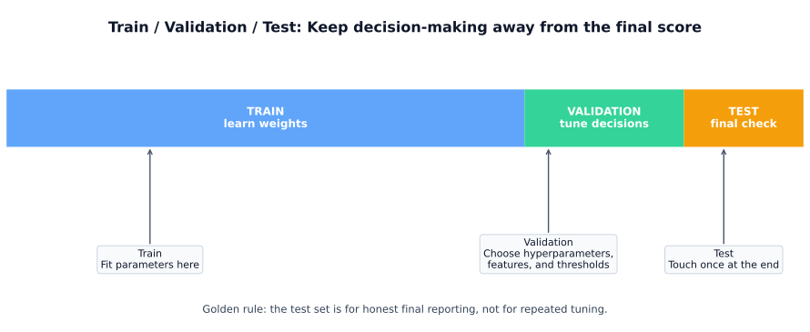
What each split is for:
| Split | Used to | Can you adjust model based on this? |
|---|---|---|
| Train | Learn model weights/parameters | Yes — that’s what training does |
| Validation | Choose hyperparameters, architecture, features | Yes — that’s what it’s for |
| Test | Report final performance to the world | NO — look once, report, done |
What leakage looks like:
Key: The golden rule — fit preprocessing on training data only, transform everything else with those fitted parameters.
Before any metric makes sense, you need to understand what the model actually predicted. The confusion matrix shows every combination of predicted vs actual class.
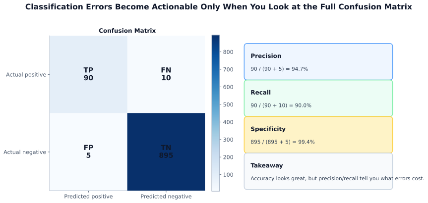
Concrete example — spam filter:
| Predicted Spam | Predicted Not Spam | |
|---|---|---|
| Actually Spam | TP = 90 (caught) | FN = 10 (missed spam) |
| Actually Not Spam | FP = 5 (wrongly blocked) | TN = 895 (correctly passed) |
The standard F1 score weights precision and recall equally. When one matters more than the other, use the generalised Fβ score:
\[ F_\beta = (1 + \beta^2) \cdot \frac{\text{Precision} \cdot \text{Recall}}{\beta^2 \cdot \text{Precision} + \text{Recall}} \]
Common variants:
| Variant | β | Emphasis | Use when |
|---|---|---|---|
| F0.5 | 0.5 | Precision 2× more than recall | Spam filters, content moderation — false alarms annoy users |
| F1 | 1 | Equal weight | General default when no clear cost asymmetry |
| F2 | 2 | Recall 4× more than precision | Cancer screening, fraud detection — missing a case is dangerous |
Practical examples — which metric to use:
| Scenario | Best metric | Why |
|---|---|---|
| Email spam filter | F0.5 / Precision | Blocking a legitimate email is very costly to the user |
| Cancer screening | F2 / Recall | Missing a cancer case can be fatal; false alarms just trigger follow-up tests |
| Fraud detection (auto-block) | F0.5 / Precision | Blocking a legitimate transaction harms customer trust |
| Fraud detection (manual review) | F2 / Recall | A flagged alert just goes to a reviewer; missed fraud costs real money |
| Search relevance | F1 | Both missing relevant results and returning junk are equally bad |
| Safety-critical defect detection | F2 / Recall | One missed defect can cause equipment failure or injury |
| Content moderation | F0.5 / Precision | Over-removing benign content stifles legitimate speech |
Key: Ask "what hurts more — a false alarm or a missed case?" If false alarms hurt more, use F0.5. If missed cases hurt more, use F2. When unsure, default to F1.
Key: There is always a precision-recall tradeoff — raising the threshold increases precision but lowers recall. Choose the metric that matches the cost of each error type.
Spam classifier on 100 emails:
\[ \text{Accuracy} = \frac{40 + 45}{40 + 45 + 5 + 10} = \frac{85}{100} = 0.85 \]
\[ \text{Precision} = \frac{40}{40 + 5} = \frac{40}{45} \approx 0.889 \]
\[ \text{Recall} = \frac{40}{40 + 10} = \frac{40}{50} = 0.8 \]
\[ F1 = 2 \cdot \frac{0.889 \cdot 0.8}{0.889 + 0.8} \approx 0.842 \]
Interpretation:
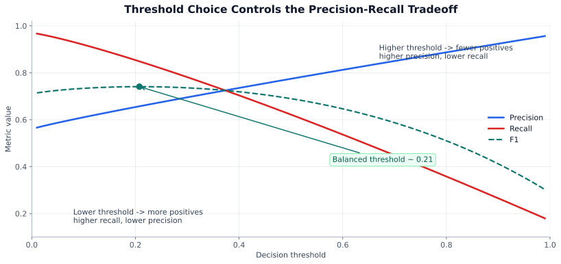
Most classifiers output a probability score, not just a hard label. The ROC curve shows how the True Positive Rate (Recall) and False Positive Rate trade off as you sweep the classification threshold from 1 → 0.
How to read it:
When to use ROC-AUC:
Gotcha: On heavily imbalanced data (e.g. 99 % negative), ROC-AUC can look deceptively high because the denominator of FPR (all negatives) is huge. A model with many false positives still shows a low FPR. In these cases, use the PR curve instead.
The PR curve plots Precision (y-axis) vs Recall (x-axis) as the threshold varies. It ignores true negatives entirely, focusing on how well the model finds and ranks the positive class.
How to read it:
When to use PR curve over ROC:
| Situation | Use | Why |
|---|---|---|
| Balanced classes | ROC-AUC | Both curves informative; ROC is the well-understood standard |
| Imbalanced (rare positive) | PR / AP | ROC hides poor precision; PR exposes it directly |
| Care about finding positives | PR / AP | Fraud, disease screening, information retrieval |
| Care about both classes equally | ROC-AUC | Credit scoring, medical diagnostics with balanced outcomes |
Key: ROC-AUC answers "can this model rank positives above negatives?" PR-AUC answers "when it says positive, is it right, and does it find them all?" On imbalanced data, always check both.
Interview classic:
Before trusting a score:
Key: Pick split first, metric second, tune on validation/CV, report once on test.
Regression outputs a number. The question isn’t “right or wrong” but how far off the prediction is.
Key: Choose your metric before training. Your loss function and your evaluation metric should match your business cost structure.
| Metric | Formula | Units | Penalizes large errors? | Outlier-robust? |
|---|---|---|---|---|
| MAE (Mean Absolute Error) | mean |y − ŷ| | same as target | Equally | Yes |
| MSE (Mean Squared Error) | mean (y − ŷ)² | target² | Quadratically | No |
| RMSE (Root Mean Squared Error) | √(mean (y − ŷ)²) | same as target | Quadratically | No |
| MAPE (Mean Absolute Percentage Error) | mean |y − ŷ|/|y| × 100% | % | Equally | No (breaks at y≈0) |
| R² (Coefficient of Determination) | 1 − SS_res/SS_tot | unitless (−∞ to 1) | — | Moderate |
In all formulas below: \(y_i\) = actual value, \(\hat{y}_i\) = predicted value, \(\bar{y}\) = mean of actual values, \(n\) = number of observations.
Mean Absolute Error (MAE):
\[ \text{MAE} = \frac{1}{n}\sum_{i=1}^{n} |y_i - \hat{y}_i| \]
Mean Squared Error (MSE):
\[ \text{MSE} = \frac{1}{n}\sum_{i=1}^{n}(y_i - \hat{y}_i)^2 \]
Root Mean Squared Error (RMSE):
\[ \text{RMSE} = \sqrt{\frac{1}{n}\sum_{i=1}^{n}(y_i - \hat{y}_i)^2} \]
Mean Absolute Percentage Error (MAPE):
\[ \text{MAPE} = \frac{100\%}{n}\sum_{i=1}^{n}\left|\frac{y_i - \hat{y}_i}{y_i}\right| \]
R-squared (coefficient of determination):
\[ R^2 = 1 - \frac{\sum_{i=1}^{n}(y_i - \hat{y}_i)^2}{\sum_{i=1}^{n}(y_i - \bar{y})^2} \]
| Metric | Model A ($490k) | Model B ($300k) | Takeaway |
|---|---|---|---|
| Error | $10,000 | $200,000 | 20× difference |
| MAE | 10,000 | 200,000 | Proportional |
| MSE | 1e8 | 4e10 | B is 400× worse, not 20× |
| RMSE | 10,000 | 200,000 | Same units as MAE, squares errors |
RMSE punishes Model B more for the huge miss. MAE treats both errors proportionally.
MAE — use when:
RMSE — use when:
MAPE — use when:
R² — use when:
\[ R^2 = 1 - \frac{\text{Model's SS residuals}}{\text{Mean baseline's SS residuals}} \]
| R² = 1.0 | Perfect fit — model explains all variance |
| R² = 0.7 | Model explains 70% of variance; 30% unexplained |
| R² = 0.0 | Model is no better than predicting the mean every time |
| R² < 0 | Model is worse than always predicting the mean (!!) |
Key: R² near 0 doesn’t mean the model is useless — it means the task is hard or residual variance is irreducible.
import numpy as np
y_true = np.array([100, 150, 200, 250, 500]) # 500 is an outlier
y_pred = np.array([110, 145, 205, 240, 380]) # underestimates outlier
mae = np.mean(np.abs(y_true - y_pred))
rmse = np.sqrt(np.mean((y_true - y_pred)**2))
r2 = 1 - np.sum((y_true - y_pred)**2) / np.sum((y_true - np.mean(y_true))**2)
mape = np.mean(np.abs((y_true - y_pred) / y_true)) * 100
print(f"MAE: {mae:.1f}") # 22.0 — straightforward average error
print(f"RMSE: {rmse:.1f}") # 52.8 — outlier inflates this significantly
print(f"R²: {r2:.3f}")
print(f"MAPE: {mape:.1f}%")from sklearn.metrics import (
mean_absolute_error,
mean_squared_error,
r2_score,
mean_absolute_percentage_error,
)
mae = mean_absolute_error(y_true, y_pred)
mse = mean_squared_error(y_true, y_pred)
rmse = mean_squared_error(y_true, y_pred, squared=False)
r2 = r2_score(y_true, y_pred)
mape = mean_absolute_percentage_error(y_true, y_pred) * 100 # as %Beyond a single metric, look at the residuals:
import matplotlib.pyplot as plt
residuals = y_true - y_pred
fig, axes = plt.subplots(1, 2, figsize=(12, 4))
# Residuals vs predicted
axes[0].scatter(y_pred, residuals, alpha=0.5)
axes[0].axhline(0, color='red', linestyle='--')
axes[0].set_xlabel('Predicted')
axes[0].set_ylabel('Residual')
axes[0].set_title('Residuals vs Fitted')
# Residual distribution
axes[1].hist(residuals, bins=30, edgecolor='white')
axes[1].axvline(0, color='red', linestyle='--')
axes[1].set_title('Residual Distribution')
plt.tight_layout()
plt.show()What to look for:
| Mistake | Why it matters |
|---|---|
| Using MAPE with targets near zero | Division blows up; use RMSE or MAE instead |
| Reporting only R² | R² can look great even with terrible predictions (if baseline variance is low) |
| Not plotting residuals | Metrics hide structure that plots reveal |
| Optimizing RMSE but reporting MAE | Metric mismatch; always optimize what you report |
| Forgetting to check prediction range | Model may systematically underpredict tails |
Ranking asks a different question: is the displayed order good?
Key: In recommenders, judge the ranked list users see, not just raw scores.
Ranking trades off:
| Design choice | Effect |
|---|---|
| Linear popularity | runaway winners dominate |
| Sublinear popularity | compresses popularity gaps |
| Weak age decay | stale sticky feed |
| Strong age decay | fresher but more churn |
If popularity is power-law / long-tail, linear vote ranking usually fails.
General template:
\[ \frac{f(popularity)}{g(age)} \]
These metrics evaluate the quality of a returned ranked list against known ground-truth relevance labels. They are the core metrics for search, recommender systems, and information retrieval.
The simplest ranked-list metrics: only look at the top k results.
\[ \text{Precision@}k = \frac{\text{relevant items in top-}k}{k} \qquad \text{Recall@}k = \frac{\text{relevant items in top-}k}{\text{total relevant items}} \]
Example: 3 relevant items exist; model returns [R, NR, R, NR, R] at positions 1–5.
When to use: When only a fixed number of results are shown (e.g., top-10 recommendations). P@k is precision-focused; R@k tells you coverage.
Measures how quickly the first relevant result appears. Good for QA and search where one correct answer is all that matters.
\[ \text{MRR} = \frac{1}{|Q|} \sum_{i=1}^{|Q|} \frac{1}{\text{rank}_i} \]
where ranki is the rank of the first relevant result for query i.
Example: Three queries; first relevant result at rank 1, 3, 2:
\[ \text{MRR} = \frac{1}{3}\left(\frac{1}{1} + \frac{1}{3} + \frac{1}{2}\right) = \frac{1}{3}(1 + 0.33 + 0.5) = 0.61 \]
When to use: Single-answer retrieval — chatbot Q&A, entity lookup, "find one relevant document."
Average Precision (AP) rewards finding relevant items early and finding all of them. MAP averages AP across queries.
\[ \text{AP} = \frac{1}{R} \sum_{k: \text{pos}_k \text{ relevant}} \text{P@}k \]
where R = total relevant items and the sum is taken only at positions where a relevant item appears.
Example: 3 relevant items; retrieved at positions 1, 4, 8 out of 10:
\[ \text{AP} = \frac{1}{3}\left(\frac{1}{1} + \frac{2}{4} + \frac{3}{8}\right) = \frac{1}{3}(1.0 + 0.5 + 0.375) = 0.625 \]
When to use: Binary relevance (relevant / not relevant), multiple relevant items per query, care about all relevant items being returned (not just first).
The most powerful ranking metric. Handles graded relevance (e.g., 0 = irrelevant, 1 = somewhat, 2 = highly relevant) and discounts lower-ranked positions logarithmically.
\[ \text{DCG@}k = \sum_{i=1}^{k} \frac{\text{rel}_i}{\log_2(i+1)} \]
\[ \text{NDCG@}k = \frac{\text{DCG@}k}{\text{IDCG@}k} \]
where IDCG@k is the DCG of the ideal (perfect) ranking.
Step-by-step example (k=4, graded 0–2):
| Position | Relevance (model) | Relevance (ideal) | DCG gain | IDCG gain |
|---|---|---|---|---|
| 1 | 2 | 2 | 2/log₂(2) = 2.00 | 2.00 |
| 2 | 1 | 2 | 1/log₂(3) = 0.63 | 1.26 |
| 3 | 0 | 1 | 0/log₂(4) = 0.00 | 0.50 |
| 4 | 2 | 0 | 2/log₂(5) = 0.86 | 0.00 |
DCG@4 = 2.00 + 0.63 + 0.00 + 0.86 = 3.49
IDCG@4 = 2.00 + 1.26 + 0.50 + 0.00 = 3.76
NDCG@4 = 3.49 / 3.76 = 0.928
The model scored 92.8% of the best possible ranking. The penalty came from putting a highly relevant item (rel=2) at position 4 instead of position 2.
| Metric | Relevance type | Position sensitive? | Best for |
|---|---|---|---|
| Precision@k | Binary | No (top-k only) | Fixed-length result pages |
| Recall@k | Binary | No (top-k only) | Coverage at a given k |
| MRR | Binary | Yes (first hit) | Single-answer retrieval, QA |
| MAP | Binary | Yes (all relevant) | Document retrieval, full coverage |
| NDCG@k | Graded | Yes (log discount) | Search, recsys with relevance grades |
from sklearn.metrics import ndcg_score
import numpy as np
# y_true: relevance scores per query (higher = more relevant)
y_true = np.array([[2, 1, 0, 2]]) # ideal: [2, 2, 1, 0]
y_score = np.array([[0.9, 0.6, 0.2, 0.8]]) # model scores
print(f"NDCG@4: {ndcg_score(y_true, y_score, k=4):.4f}")Key: For production search and recommender systems, prefer NDCG@k. Use MRR for single-answer tasks. Use MAP when binary relevance covers all use cases. Always specify the k to match how many results users see.
For a detailed walkthrough of feed ranking formulas (Hacker News scoring, gravity, sublinear growth, penalty), see section 9.6 in Chapter 9.
NLP covers a wide range of output types: predicted labels, extracted spans, generated sentences, ranked documents. Each needs a different evaluation framework.
| Task output | Examples | Key metrics |
|---|---|---|
| Predicted label | Text classification, intent detection | Accuracy, Precision, Recall, F1 |
| Predicted span | Named Entity Recognition (NER), slot filling | Token-level F1, Exact Match |
| Ranked documents | Passage retrieval, QA | MRR, MAP, NDCG@k, Recall@k |
| Generated text | Machine translation, summarization | BLEU, ROUGE, METEOR, BERTScore |
| LLM generation | QA, instruction following, code | Exact Match, pass@k, LLM-as-judge |
NER is evaluated by comparing predicted entity spans (type + start/end position) against ground truth. A span is only correct if both the type and the boundaries match exactly.
Example: 10 true entities; model predicts 8, of which 7 are exact matches:
For extractive QA (e.g., SQuAD), the predicted answer must match the ground-truth string exactly after normalization (lowercasing, removing punctuation and articles). EM is strict — many datasets also report token-level F1 for partial credit.
BLEU (Bilingual Evaluation Understudy) measures n-gram precision between a hypothesis and one or more references. Standard BLEU-4 uses n-grams up to length 4, plus a Brevity Penalty for short outputs.
Intuition: Think of BLEU as a "spot-check" — it takes small chunks (1-word, 2-word, 3-word, 4-word phrases) from the model's output and asks: "What fraction of these chunks also appear somewhere in the reference?" If the model just copies the reference, every chunk matches and BLEU ≈ 1. If the model produces a perfect paraphrase using entirely different words, almost no chunks match and BLEU ≈ 0 — even though the meaning is correct. The Brevity Penalty prevents a degenerate strategy of outputting only high-confidence short phrases to game precision.
\[ \text{BLEU} = \text{BP} \cdot \exp\!\left(\sum_{n=1}^{4} \frac{1}{4} \log p_n\right) \]
where pn = clipped n-gram precision and BP penalizes hypotheses shorter than the reference.
| Text | |
|---|---|
| Reference | “The cat sat on the mat.” |
| Hypothesis | “The cat sat on a mat.” |
Why "clipped" precision matters: Without clipping, a hypothesis like “the the the the the the” would score 100% unigram precision against any reference containing “the.” Clipping caps each n-gram's count at its maximum occurrence in the reference, preventing this exploit.
Limitation: Measures surface overlap only — semantically equivalent paraphrases score near zero. “The feline rested upon the rug” and “The cat sat on the mat” mean the same thing but share almost no n-grams.
ROUGE (Recall-Oriented Understudy for Gisting Evaluation) measures n-gram recall — how much of the reference content appears in the output.
Intuition: While BLEU asks "how much of the output is correct?" (precision), ROUGE flips the question: "how much of the reference did the output cover?" (recall). This makes sense for summarization — a good summary should capture the key information from the reference, even if it uses different wording for some parts. ROUGE-L uses the Longest Common Subsequence instead of fixed n-grams, so it rewards outputs that preserve the order of important words without requiring them to be adjacent — making it more forgiving of insertions and minor rephrasings.
| Variant | What it measures | Best for |
|---|---|---|
| ROUGE-1 | Unigram recall | Overall word coverage |
| ROUGE-2 | Bigram recall | Phrasing accuracy |
| ROUGE-L | Longest Common Subsequence | Sentence structure, order-sensitive |
from rouge_score import rouge_scorer
scorer = rouge_scorer.RougeScorer(["rouge1", "rouge2", "rougeL"], use_stemmer=True)
scores = scorer.score(
target="The cat sat on the mat near the window.",
prediction="A cat sat on the mat.",
)
for k, v in scores.items():
print(f"{k}: P={v.precision:.3f}, R={v.recall:.3f}, F1={v.fmeasure:.3f}")BERTScore addresses the surface-overlap limitation by computing contextual embedding similarity using a pretrained BERT-family model. It matches each candidate token to the most similar reference token and computes Precision, Recall, F1 over those cosine similarities.
Intuition: BLEU and ROUGE are "bag of words" — they only check whether the same exact words appear. BERTScore instead converts each word into a rich vector that captures its meaning in context, then asks: "for every word in the candidate, is there a word in the reference that means roughly the same thing?" This is why “The feline rested upon the rug” scores high against “The cat sat on the mat” — BERT knows "feline" ≈ "cat" and "rested upon" ≈ "sat on." The matching is greedy one-to-one: each candidate token is paired with its best reference token (and vice versa), so duplicate or filler words are naturally penalised.
Advantage: Robust to paraphrasing; correlates better with human judgments than BLEU/ROUGE on most tasks.
Limitation: Slower, requires model inference; scores are not on a 0–1 scale and are harder to interpret without a baseline.
from bert_score import score as bert_score
P, R, F1 = bert_score(
cands=["The cat sat near the window."],
refs=["A cat was sitting by the window."],
lang="en",
)
print(f"BERTScore F1: {F1.mean():.4f}")For generation tasks, automatic metrics often disagree with human judgement. Human evaluation remains the gold standard for assessing fluency, faithfulness, and helpfulness.
| Method | How it works | Best for |
|---|---|---|
| Pairwise preference (A/B) | Show two outputs; annotators choose which is better | Comparing two systems at scale |
| Likert scale rating | Rate output 1–5 on specific dimensions (fluency, factuality) | Absolute quality assessment |
| Direct Assessment (DA) | Score against reference on 0–100 scale | MT quality (WMT standard) |
| Task-based eval | Did the user complete their task using the system? | Conversational agents, assistants |
| NLP Task | Primary metric | Secondary |
|---|---|---|
| Text classification | F1 (macro or weighted) | ROC-AUC |
| Named Entity Recognition | Entity F1 | Token F1 |
| Machine translation | BLEU-4 | BERTScore-F1 |
| Summarization | ROUGE-L | BERTScore, human eval |
| Extractive QA | Exact Match + Token F1 | — |
| Dialogue / chat | Human preference (pairwise) | ROUGE-L, BERTScore |
| Information retrieval | NDCG@k or MAP | MRR, Recall@k |
Key: BLEU/ROUGE measure surface-level overlap; BERTScore measures semantic similarity; human evaluation measures actual usefulness. For high-stakes NLP, run at least one human eval checkpoint before deploying.
Large language models and agentic systems present fundamentally new evaluation challenges: outputs are open-ended, there is often no single correct answer, and the model may be evaluating multi-step reasoning or tool use over many turns.
Key: Traditional metrics assume a fixed ground truth. LLM evaluation requires a mix of automatic benchmarks, model-based judges, and human assessment.
| Challenge | Why it matters |
|---|---|
| Open-ended outputs | Many valid phrasings of the same correct answer — surface metrics fail |
| Multi-step reasoning | The final answer may be right for the wrong reasons |
| Hallucination | Fluent, confident, but factually wrong responses |
| Instruction following | Did the model do exactly what was asked? |
| Safety and alignment | Harmful or biased outputs that metrics do not capture |
| Context length | Performance degrades on long-context tasks in ways BLEU misses |
Benchmarks evaluate a model across many tasks under controlled conditions.
| Benchmark | What it tests | Metric |
|---|---|---|
| MMLU | 57-subject multiple-choice: STEM, law, medicine | Accuracy |
| HumanEval | Python function generation from docstring | pass@k |
| GSM8K | Grade-school math word problems with chain-of-thought | Accuracy (exact match) |
| HELM | Multi-scenario leaderboard across 40+ tasks | Accuracy, calibration, robustness |
| MT-Bench | Multi-turn conversational quality | LLM-as-judge 1–10 score |
| Chatbot Arena | Head-to-head human preference at scale | Elo rating |
The model generates k candidate solutions; credited if at least one passes all unit tests:
\[ \text{pass@}k = 1 - \frac{\binom{n-c}{k}}{\binom{n}{k}} \]
where n = samples generated, c = solutions that pass. pass@1 measures reliability; pass@10 measures whether the model can ever find a solution.
Use a stronger model (e.g., GPT-4, Claude) to evaluate another model’s outputs on specific dimensions: helpfulness, factuality, coherence, safety, instruction-following.
eval_prompt = """
You are an expert evaluator. Rate the following answer on:
- Factual accuracy (1-5)
- Helpfulness (1-5)
- Conciseness (1-5)
Question: {question}
Answer: {answer}
Return JSON: {"factual": X, "helpful": X, "concise": X, "reason": "."}
"""Strengths: Fast, scales to millions of examples, captures nuance that automatic metrics miss.
Limitations: Judge bias (prefers verbose/its-own-style answers), position bias in pairwise comparisons, self-preferencing.
Mitigation: Randomize response order, run A-vs-B and B-vs-A, average over multiple judge runs, and calibrate against human annotations.
RAG systems retrieve context before generating an answer. Evaluation covers both the retrieval step and the generation step.
| Dimension | Definition | How measured |
|---|---|---|
| Context Precision | How much retrieved context is relevant? | LLM judge or annotation |
| Context Recall | Did retrieval surface all relevant context? | LLM judge vs ground truth |
| Faithfulness | Is the answer grounded in context (no hallucination)? | LLM judge: entailment check |
| Answer Relevance | Does the answer directly address the question? | Embedding similarity or LLM score |
from ragas import evaluate
from ragas.metrics import faithfulness, answer_relevancy, context_precision
results = evaluate(
dataset=eval_dataset, # question / context / answer / ground_truth fields
metrics=[faithfulness, answer_relevancy, context_precision],
)
print(results.to_pandas())Agents take multi-step actions (tool calls, code execution) to complete tasks. Evaluation covers the final outcome and the process quality.
| Dimension | Definition | Example metric |
|---|---|---|
| Task completion rate | Did the agent finish the task correctly? | % tasks solved (pass/fail) |
| Tool use accuracy | Were the right tools called with correct arguments? | Tool call F1 vs ground truth |
| Step efficiency | Did the agent solve without unnecessary steps? | Steps used vs optimal plan length |
| Hallucination rate | Did the agent invent tool outputs or facts? | LLM judge + human spot-check |
| Multi-turn coherence | Does the agent stay on task over many turns? | Human eval / rubric-based judge |
Key benchmarks: SWE-bench (software engineering), WebArena (web navigation), AgentBench (diverse agent tasks), GAIA (general assistant tasks).
Key: For LLMs and agents, treat evaluation as a first-class engineering problem. Automatic benchmarks reveal capability; human eval reveals whether users are actually helped. You need both.
A model predicts 0.90 probability for a positive class. Does that mean it's right 90% of the time when it says 0.90? For most models, no. Calibration measures how well predicted probabilities match actual frequencies — and it matters enormously in high-stakes decisions.
| Scenario | What goes wrong without calibration |
|---|---|
| Medical diagnosis | "95% confident it's benign" means nothing if the model says 95% for cases that are malignant 30% of the time |
| Fraud scoring | Thresholds set on uncalibrated scores cause either too many false alerts or missed fraud |
| Insurance / lending | Risk pricing is directly based on probabilities — miscalibration = mispricing |
| Ensemble stacking | Combining model outputs requires calibrated probabilities; raw scores on different scales break stacking |
Key: Accuracy asks "did you get the label right?" Calibration asks "did you get the confidence right?" A model can have high accuracy but terrible calibration.
The gold-standard visualization: bin predictions by predicted probability (e.g., 0.0–0.1, 0.1–0.2, …), then plot the actual fraction of positives in each bin. A perfectly calibrated model lies on the diagonal.
| Method | How it works | When to use |
|---|---|---|
| Platt scaling | Fit a logistic regression on model outputs vs. true labels (on validation set) | Default choice; works well for most classifiers; fast |
| Isotonic regression | Fit a non-parametric monotonic function to map scores → calibrated probabilities | When relationship between scores and true probabilities is non-sigmoid; needs more data (~1000+ validation samples) |
| Temperature scaling | Divide logits by a learned scalar T before softmax | Neural networks; single parameter; preserves ranking |
Critical rule: Always calibrate on a held-out validation set, never on training data. Calibrating on training data defeats the purpose — the model already fits those labels.
For regression, calibration means providing intervals, not just point predictions. "Revenue will be $2.1M" is less useful than "$2.1M ± $300K at 90% confidence."
| Approach | How it works | Library |
|---|---|---|
| Quantile regression | Train models for the 5th and 95th percentiles directly | LightGBM (objective='quantile'), scikit-learn |
| Conformal prediction | Use a calibration set to compute non-parametric intervals with guaranteed coverage | MAPIE, crepes |
| Bayesian methods | Posterior predictive distribution gives natural uncertainty | PyMC, GPyTorch |
Key: Conformal prediction is the most practical approach — it provides distribution-free coverage guarantees (if you want 90% intervals, they contain the true value at least 90% of the time) with minimal assumptions. It works as a wrapper around any model.
| Metric | What it measures | Interpretation |
|---|---|---|
| Expected Calibration Error (ECE) | Weighted average gap between predicted probability and actual frequency across bins | Lower is better; 0 = perfectly calibrated |
| Brier score | Mean squared error of probability predictions: mean((p - y)²) | Captures both calibration and discrimination; lower is better |
| Log loss | Cross-entropy between predictions and labels | Heavily penalizes confident wrong predictions; sensitive to calibration |
These are frequently asked in ML engineer and data scientist interviews.
A. A model that always predicts the majority class achieves high accuracy while completely ignoring the minority class. For example, on a 95%/5% fraud dataset, predicting “not fraud” for every transaction gives 95% accuracy but catches zero fraud cases. On imbalanced data, always report precision, recall, F1, and ideally PR-AUC instead of accuracy.
A. Data leakage occurs when information from outside the training set influences
the model, leading to optimistic evaluation that does not hold in production. Common forms:
fitting a scaler/encoder on the full dataset before splitting, using target-derived features,
or splitting time-series data randomly. Prevention: always fit all preprocessing inside the
training fold only, use sklearn.Pipeline, and for time series use temporal splits.
A. When the positive class is rare. ROC-AUC evaluates performance across all decision thresholds using both positives and negatives. With heavy class imbalance, a model can achieve high ROC-AUC even while doing poorly on the rare class, because the large number of true negatives inflates TPR and keeps FPR low. PR-AUC focuses entirely on the positive class and is therefore more informative for fraud detection, medical screening, and anomaly detection.
A. Classifiers output a probability score; the threshold converts that to a label. Raising the threshold increases precision (fewer false positives) but lowers recall (more false negatives). Lowering the threshold does the opposite. Choose the threshold on the validation set by:
A. K-fold CV splits the training data into k folds, trains k models (each with a different fold as validation), and averages the scores. Use CV when: data is small (<10k rows) so a single split is noisy, comparing models that need a stable performance estimate, or searching hyperparameters with a grid/random search. Always hold a separate test set outside CV and report final results on it.
A. NDCG (Normalized Discounted Cumulative Gain) handles graded relevance (0/1/2 rather than binary) and applies a logarithmic discount to lower ranks. Use NDCG when:
Use MAP when relevance is binary and you care about all relevant items being retrieved, not just the top positions. NDCG@k is the standard metric for production search and recommendation systems.
A. Fβ = (1 + β²) × (P × R) / (β² × P + R). β controls the relative weight of recall vs precision:
A. R² = 0.7 means the model explains 70% of the variance in the target; 30% remains unexplained. Yes, R² can be negative: if the model is worse than simply predicting the mean for every sample, SS_residual > SS_total and R² < 0. This typically happens when the model is severely mis-specified or evaluated on a distribution shift.
A. BLEU measures n-gram precision — how much of the generated text appears in the reference. ROUGE measures n-gram recall — how much of the reference appears in the generated text. For summarization, use ROUGE (especially ROUGE-L): summaries should cover the reference content, so recall orientation is more appropriate. BLEU is the standard for machine translation. For modern LLM outputs, supplement both with BERTScore to capture semantic equivalence.
A. Evaluate both retrieval and generation:
Supervised learning needs labels. Unsupervised learning finds structure in raw data without them. This chapter covers the three main branches: clustering (grouping similar points), dimensionality reduction (compressing representations), and anomaly detection (finding the unusual).
In practice, anomaly detection often grows into its own topic because it touches unsupervised learning, monitoring, fraud, security, and quality control. So this chapter keeps anomaly detection as a short orientation while going deeper on clustering and representation learning.
What you will learn:
| Section | Topic |
|---|---|
| 8.1 | Clustering: K-Means, DBSCAN, hierarchical, GMM |
| 8.2 | Dimensionality reduction: PCA, t-SNE, UMAP |
| 8.3 | Anomaly detection: brief orientation and how it connects to unsupervised learning |
| 8.4 | Autoencoders and representation learning |
| 7.5 | Choosing the right method |
Prerequisites: Linear algebra (Chapter 2), model evaluation concepts (Chapter 7).

Key: Unsupervised learning is used for exploration, compression, preprocessing, and detecting what you didn’t know to look for.
You have data points with no labels. You want to discover which points are similar and should be grouped together.

The default clustering baseline. Fast, simple, works well when clusters are roughly spherical and similar-sized.
Algorithm: 1. Pick k initial centroids (use
k-means++ seeding: init='k-means++') 2. Assign each point
to nearest centroid 3. Recompute each centroid as mean of assigned
points 4. Repeat 2–3 until assignments stop changing
The objective is to minimize total within-cluster sum of squared distances (inertia):
\[ J = \sum_{k=1}^{K} \sum_{x_i \in C_k} \|x_i - \mu_k\|^2 \]
Where: \(J\) = inertia (within-cluster sum of squared distances), \(K\) = number of clusters, \(C_k\) = set of points in cluster \(k\), \(\mu_k\) = centroid of cluster \(k\).
from sklearn.cluster import KMeans
import numpy as np
kmeans = KMeans(n_clusters=4, init='k-means++', n_init=10, random_state=42)
labels = kmeans.fit_predict(X)
print(f"Inertia: {kmeans.inertia_:.1f}") # within-cluster SSQ
print(f"Centers: {kmeans.cluster_centers_.shape}") # (k, n_features)Choosing k — the Elbow Method:

inertias = []
for k in range(1, 12):
km = KMeans(n_clusters=k, n_init=10, random_state=42)
km.fit(X)
inertias.append(km.inertia_)
# Plot inertias vs k, look for the elbowSilhouette Score — internal evaluation without ground truth labels:
\[ s(i) = \frac{b(i) - a(i)}{\max(a(i), b(i))} \]
from sklearn.metrics import silhouette_score
# Try multiple k values, pick highest silhouette
best_k, best_score = 2, -1
for k in range(2, 12):
labels = KMeans(n_clusters=k, n_init=10, random_state=42).fit_predict(X)
score = silhouette_score(X, labels)
if score > best_score:
best_k, best_score = k, score
print(f"Best k={best_k}, silhouette={best_score:.3f}")K-Means limitations: assumes spherical similar-sized clusters; sensitive to outliers; must specify k; can hit local optima (run with n_init=10+).
Groups densely packed points, labels sparse points as noise. Does not require specifying k.
Two parameters: eps (neighbourhood radius) and
min_samples (minimum points to form a core point).
Three point types:
| Point Type | Definition |
|---|---|
| Core | Has ≥ min_samples neighbours within eps radius. Forms the backbone of clusters. |
| Border | Within eps of a core point, but does not itself have enough neighbours to be core. Belongs to a cluster but sits on its edge. |
| Noise | Not within eps of any core point — gets label −1. These are the outliers DBSCAN identifies. |

from sklearn.cluster import DBSCAN
db = DBSCAN(eps=0.5, min_samples=5)
labels = db.fit_predict(X)
n_clusters = len(set(labels)) - (1 if -1 in labels else 0)
n_noise = (labels == -1).sum()
print(f"Clusters: {n_clusters}, Noise: {n_noise}")Choosing eps: plot sorted k-nearest-neighbour distances and find the “knee.”
from sklearn.neighbors import NearestNeighbors
nbrs = NearestNeighbors(n_neighbors=5).fit(X)
distances, _ = nbrs.kneighbors(X)
knee_dist = np.sort(distances[:, -1])
# Plot knee_dist — the knee value is your epsDBSCAN strengths: arbitrary cluster shapes, built-in outlier detection, no k required. DBSCAN weaknesses: eps and min_samples are sensitive; struggles when cluster densities vary.
Builds a tree (dendrogram) of nested clusters. Cut the tree at any height to get any number of clusters — no need to commit to k upfront.

from scipy.cluster.hierarchy import dendrogram, linkage
import matplotlib.pyplot as plt
from sklearn.cluster import AgglomerativeClustering
# View dendrogram to choose cut point
Z = linkage(X, method='ward')
plt.figure(figsize=(12, 4))
dendrogram(Z, truncate_mode='level', p=5)
plt.title('Dendrogram — draw a horizontal line to choose k')
plt.show()
# Then cluster at chosen k
model = AgglomerativeClustering(n_clusters=4, linkage='ward')
labels = model.fit_predict(X)Linkage methods: Ward (minimize within-cluster variance) is the default recommendation. Complete = max distance; Average = mean distance; Single = min distance (prone to chaining).
GMM is probabilistic clustering — each cluster is a Gaussian. Points get soft assignments: a probability of belonging to each cluster.
\[ p(x) = \sum_{k=1}^{K} \pi_k \cdot \mathcal{N}(x \mid \mu_k, \Sigma_k) \]
Where: \(K\) = number of Gaussian components, \(\pi_k\) = mixing weight (\(\sum \pi_k = 1\)), \(\mu_k\) = component mean, \(\Sigma_k\) = component covariance matrix.

| Property | K-Means | GMM |
|---|---|---|
| Assignment | Hard boundaries | Soft probabilities |
| Cluster shape | Spherical only | Elliptical shapes OK |
from sklearn.mixture import GaussianMixture
gmm = GaussianMixture(n_components=3, covariance_type='full', random_state=42)
gmm.fit(X)
labels = gmm.predict(X) # hard assignments
probs = gmm.predict_proba(X) # shape (n, k) — soft assignments
# Choose n_components using BIC (lower = better balance of fit vs complexity)
bics = [GaussianMixture(n, random_state=42).fit(X).bic(X) for n in range(1, 10)]
best_n = np.argmin(bics) + 1GMM uses EM (Expectation-Maximisation) internally. E-step: assign points to clusters probabilistically. M-step: update Gaussian parameters to maximize likelihood.

| Method | Best when | Watch out for |
|---|---|---|
| K-Means | You need a fast baseline and clusters are roughly round and similar in size | Fails on non-spherical clusters and outliers |
| DBSCAN | You expect irregular cluster shapes and want noise detection built in | Sensitive to eps; struggles with varying densities |
| Hierarchical | You want nested structure, a dendrogram, or flexible cut levels | Can be expensive on large datasets |
| GMM | You want soft membership or elliptical clusters with overlap | More parameters to tune; can overfit small datasets |
| WITH Ground Truth Labels | WITHOUT Ground Truth |
|---|---|
| Adjusted Rand Index (ARI) — chance-corrected agreement between true and predicted labels. Range: −1 to +1, higher is better. | Silhouette score — cohesion vs separation per point. Range: −1 to +1, higher is better. |
| Normalized Mutual Info (NMI) — information-theoretic overlap. Range: 0 to 1, higher is better. | Davies-Bouldin index — ratio of within-cluster to between-cluster distances. Lower is better. |
| Fowlkes-Mallows score — geometric mean of precision and recall of cluster pairs. Range: 0 to 1, higher is better. | Calinski-Harabasz index — ratio of between-cluster to within-cluster variance. Higher is better, but favours convex clusters. |
from sklearn.metrics import (
adjusted_rand_score, silhouette_score, davies_bouldin_score
)
ari = adjusted_rand_score(true_labels, pred_labels) # needs ground truth
sil = silhouette_score(X, pred_labels) # no ground truth needed
db = davies_bouldin_score(X, pred_labels) # lower is betterHigh-dimensional data has three problems: the curse of dimensionality (distances become meaningless), visualization is impossible, and models overfit.
| Method | Type | Use for |
|---|---|---|
| PCA | Linear, fast | Preprocessing and compression |
| t-SNE | Nonlinear, slow | ONLY visualization |
| UMAP | Nonlinear, faster | Viz + some global structure preserved |
If Chapter 4.6 introduced these tools as preprocessing choices, this section reframes them from the unsupervised side: each method discovers a smaller representation of the same data, but the type of structure it preserves is different.

Finds the directions of maximum variance and projects your data onto them. Think of it as finding the best angle to cast a shadow of your data so that points stay as spread-apart as possible.
The key insight: PCA finds these best shadow directions automatically, using eigenvectors of the covariance matrix. Each eigenvector defines a principal component direction; its eigenvalue tells you how much variance that direction captures.
Let’s walk through PCA end-to-end on a tiny dataset so every number is traceable. We have 5 persons measured on 2 features: Height (cm) and Weight (kg).
Step 1 — Raw data
What: Collect your original measurements.
Why: This is your starting point — PCA will find a compact representation of this table.
| Person | Height (cm) | Weight (kg) |
|---|---|---|
| A | 170 | 65 |
| B | 175 | 70 |
| C | 180 | 75 |
| D | 185 | 80 |
| E | 190 | 85 |
Step 2 — Center the data
What: Subtract each column’s mean so the data is centred at the origin (mean height μh=180, mean weight μw=75).
Why: PCA looks for directions of maximum variance. If the data isn’t centred, the mean location dominates and the variance directions are misleading.
This step makes the data “about the spread,” not about the absolute position.
| Person | Height−180 | Weight−75 |
|---|---|---|
| A | −10 | −10 |
| B | −5 | −5 |
| C | 0 | 0 |
| D | +5 | +5 |
| E | +10 | +10 |
Step 3 — Compute the covariance matrix
What: Build a matrix Σ that measures how each pair of features varies together.
For our 2-feature example, Σ is a 2×2 matrix (one row and column per feature: Height, Weight).
The formula is Σ = XTX / (n−1), where X is the centred data from Step 2 (5 rows × 2 columns).
Why: The covariance matrix captures all the spread and correlation information.
PCA’s next step (eigendecomposition) only needs this matrix — not the raw rows.
Σ = [[62.5, 62.5],
[62.5, 62.5]]Reading this matrix: the diagonal (62.5, 62.5) gives the variance of Height and Weight respectively. The off-diagonals (62.5) give the covariance between them. Since all four values are equal, height and weight are perfectly correlated in this toy dataset — when one goes up by 5, so does the other.
Step 4 — Eigendecompose the covariance matrix
What: Find the eigenvectors (directions) and eigenvalues (importance) of Σ.
Each eigenvector points along a principal component; its eigenvalue tells you how much variance lies in that direction.
Why: This is the core of PCA — the eigenvectors are the new axes, and the eigenvalues let you rank them and decide how many to keep.
Step 5 — Project onto PC1
What: Multiply each centred data row by the chosen eigenvector(s) to get new coordinates (scores).
Here we keep only PC1, so each person gets one number: score = dot product of their centred [H, W] with v₁ = [0.707, 0.707].
Why: This is the actual dimensionality reduction. The 2D table becomes a 1D list of scores — yet those scores capture the maximum possible variance.
| Person | Centred [H, W] | PC1 Score |
|---|---|---|
| A | [−10, −10] | −14.14 |
| B | [−5, −5] | −7.07 |
| C | [0, 0] | 0.00 |
| D | [+5, +5] | +7.07 |
| E | [+10, +10] | +14.14 |
We reduced 2 features to 1 score while retaining 100% of the variance (λ₁/(λ₁+λ₂) = 125/125).
The steps formalised:
Key: Always scale before PCA. Unscaled features dominate for the wrong reason.
from sklearn.preprocessing import StandardScaler
from sklearn.decomposition import PCA
import matplotlib.pyplot as plt
scaler = StandardScaler()
X_scaled = scaler.fit_transform(X)
pca = PCA(n_components=0.95) # keep 95% of variance
X_pca = pca.fit_transform(X_scaled)
print(f"{X_scaled.shape} → {X_pca.shape}")
print(f"Components needed: {pca.n_components_}")
# Scree plot — cumulative explained variance
cumvar = np.cumsum(pca.explained_variance_ratio_)
plt.plot(range(1, len(cumvar)+1), cumvar, 'o-')
plt.axhline(0.95, ls='--', color='r', label='95% threshold')
plt.xlabel('Components'); plt.ylabel('Cumulative variance'); plt.legend()
How to choose the number of components:
n_components=0.95 to keep components until 95% variance explained. Reliable default for preprocessing.When PCA falls short: PCA captures only linear structure. For nonlinear manifolds (rings, spirals), use UMAP or t-SNE for visualization and kernel PCA for nonlinear compression.
Preserves local neighbourhood structure. Use only for visualization — cannot transform new data.
from sklearn.manifold import TSNE
# Run PCA first for speed on large datasets
X_50 = PCA(n_components=50).fit_transform(X_scaled)
tsne = TSNE(n_components=2, perplexity=30, learning_rate='auto',
init='pca', random_state=42, n_jobs=-1)
X_2d = tsne.fit_transform(X_50)
plt.scatter(X_2d[:, 0], X_2d[:, 1], c=labels, cmap='tab10', s=5, alpha=0.7)
plt.title('t-SNE — 2D visualization')Perplexity (5–50): roughly how many neighbours to consider. Try several values.
Key: t-SNE is for exploration, not production. Cluster distances are meaningless. Run multiple times with different random seeds to verify stability.
Faster than t-SNE, better global structure, and can transform new data.
# pip install umap-learn
import umap
reducer = umap.UMAP(n_components=2, n_neighbors=15, min_dist=0.1, random_state=42)
X_umap = reducer.fit_transform(X_scaled)
# Transform new data (t-SNE cannot do this)
X_new_umap = reducer.transform(X_new_scaled)Parameters: n_neighbors (local vs global tradeoff),
min_dist (cluster tightness).
When to use what:
| Task | Tool |
|---|---|
| Preprocessing before ML model | PCA |
| Compress features (100→20) | PCA |
| Visualize clusters 2D/3D | UMAP (fast) or t-SNE (thorough) |
| Transform new data after dim reduction | PCA or UMAP |
| Find structure in embeddings | UMAP then cluster |
Anomaly detection (also called outlier detection) finds data points that deviate significantly from the expected pattern — without needing labeled examples of what an anomaly looks like. It is used in fraud detection, network intrusion detection, predictive maintenance, and quality control.
Core idea: assign an anomaly score to every point; flag points whose score exceeds a threshold. The score definition varies by method.
Practical progression: start with z-score or IQR (fast, univariate baselines), move to Isolation Forest or LOF for multivariate tabular data, and reach for autoencoders when the data is high-dimensional, sequential, or image-based.
The go-to method for tabular anomaly detection. Anomalies are isolated with fewer random splits.
from sklearn.ensemble import IsolationForest
iso = IsolationForest(
contamination=0.05, # expected fraction of anomalies
n_estimators=100,
random_state=42
)
iso.fit(X_train)
scores = iso.decision_function(X) # higher score = more normal
labels = iso.predict(X) # +1 = normal, -1 = anomaly
n_anom = (labels == -1).sum()
print(f"Anomalies: {n_anom} ({n_anom/len(labels):.1%})")
LOF compares the local density around a point to the density around its neighbours. If a point sits in a much sparser region than its neighbours, it receives a high LOF score and is flagged as an outlier. This makes LOF especially effective when clusters have varying density — a point that looks normal globally may be anomalous relative to its local neighbourhood.
from sklearn.neighbors import LocalOutlierFactor
lof = LocalOutlierFactor(n_neighbors=20, contamination=0.05)
labels = lof.fit_predict(X) # +1 normal, -1 anomaly
scores = -lof.negative_outlier_factor_ # higher = more anomalousOne-Class SVM fits a tight decision boundary (using an RBF kernel by default) around a training
set that contains only normal examples. At test time, any point falling outside this boundary is
classified as an anomaly. It works best when you have a clean, label-free training set of normal
behaviour and the anomaly rate is roughly known (controlled by the nu parameter,
which upper-bounds the fraction of outliers).
from sklearn.svm import OneClassSVM
oc_svm = OneClassSVM(kernel='rbf', nu=0.05)
oc_svm.fit(X_train_normal_only)
labels = oc_svm.predict(X_test) # +1 normal, -1 anomalyTrain on normal data. At test time, anomalies have high reconstruction error.
import torch, torch.nn as nn, torch.nn.functional as F
class AE(nn.Module):
def __init__(self, in_dim, z=16):
super().__init__()
self.enc = nn.Sequential(nn.Linear(in_dim,64),nn.ReLU(),nn.Linear(64,z))
self.dec = nn.Sequential(nn.Linear(z,64),nn.ReLU(),nn.Linear(64,in_dim))
def forward(self, x):
return self.dec(self.enc(x))
model = AE(X.shape[1])
# . train on normal data .
with torch.no_grad():
errors = F.mse_loss(model(X_t), X_t, reduction='none').mean(1)
threshold = errors.quantile(0.95)
anomalies = errors > threshold| Method | Best for | Speed | Tuning |
|---|---|---|---|
| Isolation Forest | General tabular, large data | Fast | contamination |
| LOF | Varying-density clusters | Moderate | n_neighbors |
| One-Class SVM | Small clean normal dataset | Slow | nu, gamma |
| Autoencoder | High-dim, images, sequences | Slow (training) | architecture |
| Z-score / IQR | Quick baseline, univariate | Very fast | threshold |
An autoencoder learns to compress data into a small latent representation and reconstruct the original. The bottleneck forces the network to learn the most essential structure.

Uses: dimensionality reduction, anomaly detection, denoising, pretraining features.
Why the bottleneck matters: if the network could simply copy every input feature straight through, it would learn nothing useful. The narrow latent layer forces the model to keep only the structure that helps reconstruction.
The latent vector \(z\) is useful beyond reconstruction: you can cluster it, visualize it, feed it to a downstream model, or monitor it for drift over time.
Variational Autoencoder (VAE) adds a probabilistic bottleneck — instead of a fixed point z, the encoder predicts a distribution N(mu, sigma). This enables generating new samples by sampling z ~ N(0,I) and decoding.
\[ \mathcal{L}_{VAE} = \underbrace{\|x - \hat{x}\|^2}_{\text{reconstruction}} + \underbrace{D_{KL}(q(z|x) \| \mathcal{N}(0,I))}_{\text{regularization}} \]
Where: the first term measures reconstruction quality (how well the decoder recovers the input), and the KL term regularizes the latent space to be close to a standard normal \(\mathcal{N}(0, I)\).
The KL term keeps the latent space smooth and regular — enabling interpolation between points.
Use this guide to navigate the full unsupervised learning toolbox. Start with your goal, follow the branches, and land on the right method for your data.

| Mistake | Fix |
|---|---|
| Running PCA on unscaled features | StandardScaler first, always |
| Interpreting t-SNE inter-cluster distances | Not meaningful — local structure only |
| Using k-means on non-spherical clusters | DBSCAN or GMM instead |
| Setting contamination=0.05 without thinking | Tune to match domain expectation of anomaly rate |
| Only using one cluster metric | Combine silhouette with domain sanity checks |
Common unsupervised learning questions in ML interviews.
A. K-Means assigns each point to exactly one cluster (hard assignment) and assumes clusters are spherical and equal in size. It minimizes within-cluster sum of squared distances. GMM is probabilistic — each cluster is a Gaussian distribution, and every point receives a soft membership probability across all clusters. GMM can model elliptical clusters and overlapping distributions. K-Means is faster (especially with k-means++ init); GMM is more flexible but has more parameters. For cluster count selection, K-Means uses the elbow/silhouette method; GMM uses BIC/AIC.
A. Two complementary methods:
A. Use DBSCAN when: (a) cluster shapes are non-spherical (rings, crescents, arbitrary), (b) you expect noise/outliers and want them explicitly flagged (label −1), (c) you don't know k in advance. DBSCAN requires tuning eps (neighbourhood radius) and min_samples. It struggles when clusters have very different densities. For datasets with widely varying densities, consider HDBSCAN (hierarchical DBSCAN) instead.
A. PCA finds the directions (principal components) of maximum variance in the data by computing the eigenvectors of the covariance matrix. Each eigenvector defines a new axis; the corresponding eigenvalue is the variance along that axis. Explained variance ratio = eigenvalue / sum of all eigenvalues. If PC1 has explained variance 0.38, it means projecting onto PC1 retains 38% of the total variance. Keeping enough components to explain 95% is a common heuristic. Always scale before PCA — features with larger magnitude dominate the covariance matrix.
A. Both are nonlinear dimensionality reduction methods for visualization:
| Property | t-SNE | UMAP |
|---|---|---|
| Speed | Slow (O(n log n)) | Much faster |
| Global structure | Not preserved | Better preserved |
| New data transform | Not supported | Supported (transform()) |
| Cluster distances | Not meaningful | More meaningful |
| Key parameter | perplexity (5–50) | n_neighbors, min_dist |
Neither should be used for feature engineering in production models — only for exploration and visualization.
A. Isolation Forest builds many random decision trees. At each node, it picks a random feature and a random split value. The path length to isolate a point measures how unusual it is: normal points blend in with the data and require many splits; anomalies stand apart and are isolated with just a few random cuts. The anomaly score = average normalized path length across all trees. Shorter path = higher anomaly score. Key hyperparameter: contamination (expected fraction of anomalies, used to set the decision threshold). It is fast (O(n log n)), scales well, and handles high-dimensional data better than LOF.
A. Three internal metrics:
Always supplement metrics with domain sanity checks: do the clusters make business sense? Are cluster profiles interpretable?
A. An autoencoder is a neural network trained to reconstruct its own input through a narrow bottleneck layer. The encoder compresses the input to a low-dimensional latent vector z; the decoder reconstructs the input from z. The bottleneck forces the model to learn only the most essential structure. Uses: (1) dimensionality reduction — use the latent vector as a compressed representation; (2) anomaly detection — anomalies have high reconstruction error; (3) denoising — train on noisy inputs with clean targets; (4) pretraining — use encoder weights to initialize a supervised model. VAE (Variational Autoencoder) adds a probabilistic bottleneck, enabling generation of new samples.
A. As dimensionality increases, distances between points become increasingly similar (concentration phenomenon). In high dimensions: (1) K-Means and LOF struggle because Euclidean distance loses discriminative power; (2) density estimates become unreliable (all regions appear sparse); (3) visualization is impossible. Mitigations: (a) apply PCA before clustering to reduce noise dimensions; (b) use cosine similarity instead of Euclidean for text/embeddings; (c) feature selection to remove irrelevant features; (d) use UMAP/t-SNE for visualization.
A.
contamination=0.01–0.05 based on domain expectation.Recommendation systems are among the highest-impact ML applications in production: they drive content feeds, product discovery, playlist curation, and search ranking. This chapter builds from first principles — why recommendations are hard, how collaborative filtering works mathematically, what content-based filtering adds — then advances to the multi-stage architecture that powers Netflix, Spotify, and Amazon at scale.
What you will learn:
| Section | Topic |
|---|---|
| 9.1 | The recommendation problem: taxonomy and cold start |
| 9.2 | Collaborative filtering: memory-based and matrix factorization |
| 9.3 | Content-based filtering |
| 9.4 | Hybrid systems |
| 9.5 | Modern multi-stage architecture |
| 9.6 | Exploration, diversity, and ranking signals |
| 9.7 | Evaluation: offline and online |
| 9.8 | Case study: Netflix/Spotify-style systems |
Prerequisites: Linear algebra (dot products, matrix decomposition), basic probability, gradient descent (Chapter 5).
Given a user and a catalog of items, surface the items that user is most likely to engage with — click, watch, buy, save — out of millions of candidates.
The problem has three hard sub-problems:
| Paradigm | Main signal | When it shines |
|---|---|---|
| Collaborative filtering | User–item interactions | Rich interaction history, weak metadata, strong repeat behavior |
| Content-based | Item attributes | New items, metadata-rich catalogs, transparent explanations |
| Hybrid | Behavior + metadata + rules | Production systems that must handle cold start, scale, and ranking trade-offs |
| Popularity fallback | Aggregate engagement | Useful for day-zero users, sparse catalogs, and safety rails |
Cold start is the hardest operational problem in production recommenders.
| Cold start type | Problem | Mitigation |
|---|---|---|
| New user | No interaction history | Popularity, onboarding, side features |
| New item | No ratings yet | Content-based, warm-up via metadata |
| New user + new item | Both unknown | Purely content-based or non-personalized |
Key: Every production recommender needs a cold-start fallback strategy. Collaborative filtering alone cannot handle day-zero users.
Collaborative filtering operates on the user–item interaction matrix R.
| Item1 | Item2 | Item3 | Item4 | Item5 | |
|---|---|---|---|---|---|
| User1 | 5 | ? | 3 | ? | 1 |
| User2 | 4 | ? | ? | 1 | ? |
| User3 | ? | 1 | ? | 5 | ? |
| User4 | 1 | ? | 2 | ? | 4 |
The goal: fill in the ? values and rank the top-K
predictions per user.
The oldest approach: find users (or items) similar to the target, borrow their ratings.
User–User Collaborative Filtering
Cosine similarity between users i and j:
\[ \text{sim}(i, j) = \frac{\sum_{k \in \mathcal{I}_{ij}} r_{ik} r_{jk}}{\sqrt{\sum_{k \in \mathcal{I}_{ij}} r_{ik}^2} \cdot \sqrt{\sum_{k \in \mathcal{I}_{ij}} r_{jk}^2}} \]
where \(\mathcal{I}_{ij}\) is the set of items rated by both users i and j.
Pearson correlation (mean-centered, handles rating scale bias):
\[ \text{sim}(i, j) = \frac{\sum_{k} (r_{ik} - \bar{r}_i)(r_{jk} - \bar{r}_j)}{\sqrt{\sum_k (r_{ik} - \bar{r}_i)^2} \cdot \sqrt{\sum_k (r_{jk} - \bar{r}_j)^2}} \]
Where: \(r_{ik}\) = rating user \(i\) gave item \(k\), \(\bar{r}_i\) = average rating of user \(i\).
Prediction for user i on item j using top-K neighbors N(i):
\[ \hat{r}_{ij} = \bar{r}_i + \frac{\sum_{u \in N(i)} \text{sim}(i, u) \cdot (r_{uj} - \bar{r}_u)}{\sum_{u \in N(i)} |\text{sim}(i, u)|} \]
Where: \(\hat{r}_{ij}\) = predicted rating of user \(i\) for item \(j\), \(N(i)\) = top-K neighbors of user \(i\), \(\bar{r}_i\) = user \(i\)’s mean rating.
Item–Item Collaborative Filtering
Instead of finding similar users, find items similar to what the user already liked.
\[ \hat{r}_{uj} = \frac{\sum_{i \in N(j)} \text{sim}(i, j) \cdot r_{ui}}{\sum_{i \in N(j)} |\text{sim}(i, j)|} \]
User–User vs Item–Item:
| Property | User–User CF | Item–Item CF |
|---|---|---|
| Similarity computation | Between users | Between items |
| Stability | Users change faster | Item catalog more stable |
| Scalability | O(U²) user pairs | O(I²) item pairs, precomputed |
| Best for | Smaller user bases | Large stable catalogs |
| Amazon’s choice | — | Item–item (precomputed offline) |
Key: Item–item CF scales better in practice because item similarities can be precomputed and cached, while user similarities must be recomputed as users interact.
Worked Example: Item–Item CF
Given the rating matrix:
| Item 1 | Item 2 | Item 3 | |
|---|---|---|---|
| User 1 | 5 | 4 | ? |
| User 2 | ? | ? | 3 |
| User 3 | 2 | ? | 4 |
Compute similarity(Item1, Item3) using users who rated both (User1 and User3):
Actually for User1 and User3 with both Item1 and Item3 rated by User3 only — sim requires co-rated users. Here User1 has no Item3 rating so co-rated set is just User3, which gives unstable similarity. This is sparsity in action — the minimum support threshold matters.
| Limitation | Description |
|---|---|
| Scale | Computing all pairwise similarities is O(U²) or O(I²) |
| Sparsity | Few co-rated items → unstable similarity estimates |
| Coverage | Can't recommend items no neighbor has rated |
| Cold start | No history → no neighbors |
Matrix factorization solves the scale and sparsity problems.
Instead of storing the full matrix, decompose it into two low-rank matrices.
\[ R \approx W \cdot U^T \]
How this becomes a recommendation: after training, the system scores every unseen movie for a user and ranks the highest ones.
| Toy Story | Finding Nemo | Interstellar | Mad Max | |
|---|---|---|---|---|
| Alice | 5 | 4 | ? | 1 |
| Ben | 1 | ? | 5 | 4 |
| Cara | 4 | 5 | 2 | ? |
After factorization, Alice and Finding Nemo end up close in latent space, while Alice and Interstellar are much farther apart. That is why the model recommends Finding Nemo first: not because the movie metadata was hand-coded into the formula, but because similar users created a matching hidden pattern.
| Unseen movie | Relative score | Result |
|---|---|---|
| Finding Nemo | High | Show near the top |
| Interstellar | Low | Demote for Alice |
| Mad Max | Very low | Do not surface unless needed for exploration |
Storage comparison:
| Representation | Size (130k users, 26k items, K=10) |
|---|---|
| Full matrix | 3.38B entries |
| Factorized | 1.56M parameters |
Key: Factorization makes storage and learning feasible. The latent space K encodes hidden taste dimensions the model discovers from data.
Interpreting Latent Dimensions
The model learns dimensions like “action”, “sci-fi”, “classic” — but without labels. They emerge from rating patterns.
| User vector wi | [0.9, 0.1, 0.2, 0.0, 0.5] | Alice prefers action+animation |
| Item vector uj | [0.8, 0.0, 0.1, 0.0, 0.6] | The Incredibles |
| Score | wi · uj = 0.72 + 0 + 0.02 + 0 + 0.30 = 1.04 | |
Prediction formula:
\[ \hat{r}_{ij} = w_i^T u_j \]
Where: \(\hat{r}_{ij}\) = predicted rating of user \(i\) for item \(j\), \(w_i\) = user latent vector, \(u_j\) = item latent vector.
With bias terms (user rating habit + item average popularity):
\[ \hat{r}_{ij} = \mu + b_i + b_j + w_i^T u_j \]
Worked example with biases:
Use a smaller latent interaction so the final prediction stays on the 1-5 scale. Suppose \(w_i^T u_j = 0.9\), \(b_i = -0.2\), \(b_j = +0.3\), and \(\mu = 3.5\):
\[ \hat{r}_{ij} = 3.5 + (-0.2) + 0.3 + 0.9 = 4.5 \]
This is easier to read intuitively: the movie is above average, the user is a slightly harsh rater, and the personalized interaction still pushes the final prediction high.
Key: Biases capture systematic tendencies independent of personalization.
Stochastic Gradient Descent (SGD) means: look at one known rating at a time, measure the error, and nudge the user vector and item vector a little in the right direction.
Alternating Least Squares (ALS) means: freeze all item vectors and solve for the best user vectors, then freeze all user vectors and solve for the best item vectors. Alternate until the model settles.
| Method | Best intuition | Typical use |
|---|---|---|
| SGD | Many tiny corrections | Explicit ratings, flexible online-style training |
| ALS | Solve one side exactly while freezing the other | Large-scale implicit feedback and parallel systems |
Objective: minimize RMSE on observed ratings with L2 regularization.
\[ \mathcal{L} = \sum_{(i,j) \in \text{observed}} (r_{ij} - \hat{r}_{ij})^2 + \lambda(\|w_i\|^2 + \|u_j\|^2) \]
Where: \(r_{ij}\) = observed rating, \(\hat{r}_{ij}\) = predicted rating, \(\lambda\) = regularization strength, \(w_i, u_j\) = user and item latent vectors.
Key difference: SGD makes many tiny updates by walking through ratings one at a time. ALS makes few large exact solves by alternating which side is frozen. Both produce the same W and U matrices that fill the same blank cells. ALS is preferred at scale because step 3 and step 4 are embarrassingly parallel.
| Property | SGD | ALS |
|---|---|---|
| Update style | One rating at a time, gradient step | All users (or items) at once, closed-form solve |
| Parallelizable | Partial | Highly (each user/item is independent) |
| Handles implicit feedback | With modification (negative sampling) | Naturally (weighted confidence formulation) |
| Best for | Explicit ratings, flexible online training | Implicit feedback at large scale |
| Used by | Netflix Prize winning solution | Spark MLlib, Apple Music |
SVD stands for Singular Value Decomposition. The connection is conceptual: both SVD and matrix factorization are trying to explain a large matrix with a much smaller low-rank structure.
Classical SVD: \(R = U \Sigma V^T\) requires a complete matrix. With missing entries, it breaks.
Recommender MF: train \(W\) and \(U\) only on observed entries. This is called “incomplete SVD” or “truncated MF.”
| Method | Input | Decomposition |
|---|---|---|
| Classical SVD | R (complete) | U Σ Vᵀ |
| Recommender MF | R (sparse) | W · Uᵀ trained on observed (i,j) pairs only |
SVD++ is the next intuition step: do not only use the movies a user rated explicitly; also let the model learn from the movies they touched implicitly. In practice, that means the user vector is enriched by the set of items they interacted with, which usually helps when explicit ratings are scarce.
Most real interaction data is implicit: clicks, plays, purchases — not 1–5 star ratings.
| Signal Type | Example | Interpretation |
|---|---|---|
| Explicit | User gave Star Wars 4/5 | Clear signal |
| Implicit | User played track 3 times | Positive (uncertain) |
| User skipped after 5 seconds | Negative (noisy) | |
| User never interacted with item | Unknown (not necessarily dislike) |
Weighted ALS for implicit feedback (Hu et al., 2008):
Define confidence \(c_{ij} = 1 + \alpha \cdot \text{count}_{ij}\) (higher play count = more confident).
\[ \mathcal{L} = \sum_{i,j} c_{ij}(p_{ij} - w_i^T u_j)^2 + \lambda(\|W\|_F^2 + \|U\|_F^2) \]
where \(p_{ij} = 1\) if any interaction observed, 0 otherwise.
Content-based filtering recommends items similar to what a user already liked, based on item attributes rather than other users’ behavior.
Items are represented as feature vectors using their metadata.
For text items (articles, movies): TF-IDF over descriptions.
\[ \text{TF-IDF}(t, d) = \text{tf}(t, d) \times \log \frac{N}{\text{df}(t)} \]
For structured attributes: one-hot encoding, normalized numerics.
For rich content: embeddings from pre-trained models (BERT for text, ResNet for images).
The user profile is built by aggregating features of items they liked.
[1, 0, 0, 0.8, 0.2][1, 0, 0, 0.9, 0.1][0, 1, 0, 0.2, 0.3][0.67, 0.33, 0, 0.63, 0.20]
Predict affinity of user u for item j:
\[ \hat{r}_{uj} = \cos(\text{profile}_u, \text{embed}_j) = \frac{\text{profile}_u \cdot \text{embed}_j}{\|\text{profile}_u\| \cdot \|\text{embed}_j\|} \]
| Property | Content-Based |
|---|---|
| Cold start for new items | Handles well (item has metadata) |
| Cold start for new users | Still fails (needs interaction history) |
| Serendipity | Low — tends to recommend more of the same |
| Cross-domain discovery | Low — won’t surface different genres |
| Explainability | High — “because you watched X” |
| Requires item features | Yes — fails if metadata is poor |
Key: Content-based filtering is great for new items and explainability, but suffers from filter bubbles and serendipity gaps.
| Approach | Fails when |
|---|---|
| Collaborative filtering | New users, new items (cold start) |
| Content-based | No item metadata, filter bubble |
| Popularity baseline | Ignores personalization |
Hybrid systems combine multiple signals to cover each other’s gaps.
1. Weighted hybrid: linear combination of scores.
\[ \hat{r}_{hybrid} = \alpha \hat{r}_{CF} + (1 - \alpha) \hat{r}_{CB} \]
Where: \(\hat{r}_{CF}\) = collaborative filtering score, \(\hat{r}_{CB}\) = content-based score, \(\alpha\) = blending weight.
Tune \(\alpha\) per user segment (e.g., \(\alpha = 0.1\) for new users, \(\alpha = 0.9\) for long-term users).
2. Switching hybrid: use CF when enough history, else content-based.
if user_interaction_count > threshold:
use collaborative filtering
else:
use content-based3. Cascade hybrid: one stage narrows the candidate set, then the next stage spends more compute reranking only those survivors.
4. Feature augmentation: feed collaborative embeddings into a richer supervised ranker together with metadata and context, rather than forcing one model family to do everything alone.
Deep recommenders are usually trained as supervised models on logged interaction data. The model sees a user, an item, optional context, and a label such as clicked, watched, purchased, or skipped.
| User | Context | Item | Label |
|---|---|---|---|
| Alice | Evening, TV app | Interstellar | 1 = watched |
| Alice | Evening, TV app | Mad Max | 0 = skipped / sampled negative |
| Ben | Mobile, commute | Toy Story | 0 = not engaged |
In practice the pipeline is: log impressions and interactions, build positive and negative training pairs, turn high-cardinality IDs into embeddings, add side features, train with a click / watch / purchase loss, then use the model either for retrieval or reranking.
Neural Collaborative Filtering (NCF) replaces the dot product with a learned interaction function:
Neural Collaborative Filtering (NCF) replaces the raw dot product with a learned nonlinear interaction function. That gives the model more flexibility when simple linear compatibility is not enough.
Wide & Deep is another common pattern: the wide side memorizes strong known feature crosses, while the deep side generalizes to new combinations.
Production recommenders at Netflix, Spotify, TikTok, and Amazon do not score all items with one model. The catalog is too large. Instead, they use a multi-stage funnel.
Retrieval must be fast (< 10ms) and recall-focused: better to include some irrelevant items than miss good ones.
Techniques:
Two-tower model (used by YouTube, Pinterest):
Train with sampled softmax or in-batch negatives. At inference, precompute all \(h_i\) and build an ANN index.
Candidate generation is a medium-cost coarse scoring step that filters retrieval output.
Common signals added here:
Ranking takes the candidate set and scores every item with a full feature set.
Features used in ranking:
| Feature type | Examples |
|---|---|
| User features | Age, country, device, tenure, activity level |
| Item features | Category, age, popularity, quality score |
| Interaction features | User × item affinity from embeddings |
| Context features | Time of day, day of week, session length |
| Historical features | Has user seen this item before? |
Common ranking models:
Reranking applies post-processing after the ranking model to address objectives the model alone can’t optimize.
Diversity: prevent showing 10 consecutive action movies.
Freshness: boost items published recently.
Business rules:
If you always recommend items with the highest predicted score, you:
| Strategy | Approach | Risk |
|---|---|---|
| Exploitation | Recommend the best known item | Filter bubble, stale catalog |
| Exploration | Occasionally try something uncertain | Annoying, irrelevant recommendations |
Upper Confidence Bound (UCB):
\[ \text{score}_{UCB}(i) = \hat{\mu}_i + c \sqrt{\frac{\ln t}{n_i}} \]
Items shown fewer times get a bonus — they’re less certain.
Thompson Sampling: maintain a Beta distribution over click probability for each item; sample from it at ranking time. Items with fewer observations have wider distributions → naturally more explored.
\(\epsilon\)-greedy: with probability \(\epsilon\), recommend a random item; with probability \(1 - \epsilon\), recommend the best-known item.
Intra-list diversity: measure how different the items in a recommendation list are from each other.
\[ \text{ILD}(L) = \frac{1}{|L|(|L|-1)} \sum_{i \neq j \in L} d(i, j) \]
where \(d(i, j)\) is item dissimilarity (e.g., 1 − cosine similarity between embeddings).
Serendipity: recommend something relevant but unexpected — items the user would not have found themselves.
Lift measures whether two items co-occur more than chance, useful for “frequently bought together” signals.
\[ \text{Lift}(A, B) = \frac{P(A, B)}{P(A) \cdot P(B)} \]
| Lift value | Meaning |
|---|---|
| = 1 | Independent — no association |
| > 1 | Positive association — buy A → more likely to buy B |
| < 1 | Negative association — buying A predicts NOT buying B |
Example: \(P(A) = 0.10\), \(P(B) = 0.20\), \(P(A, B) = 0.06\)
\[ \text{Lift} = \frac{0.06}{0.10 \times 0.20} = \frac{0.06}{0.02} = 3.0 \]
Items A and B co-occur 3× more than independence predicts.
Warning: Rare pairs get unstable/inflated lift. Always apply a minimum support threshold (e.g., minimum 100 co-occurrences) before trusting lift values.
Popular items should not dominate the feed forever. The Hacker News scoring formula illustrates the pattern:
\[ \text{score} = \frac{(\text{votes})^{0.8}}{(\text{age\_hours} + 2)^{1.8}} \times \text{penalty} \]
| Component | Effect |
|---|---|
| \(\text{votes}^{0.8}\) | Sublinear — each extra vote matters less |
| \((\text{age}+2)^{1.8}\) | Age penalty grows faster than vote reward |
| \(\text{penalty}\) | Business rule overrides (spam, policy violations) |
Gravity is the exponent on the age term in the denominator. Think of it as a "freshness dial": turning it up makes older items sink faster, so the feed rotates more aggressively toward recent content. Turning it down lets popular evergreen items stay visible longer. Hold votes fixed and only change gravity — the higher the gravity, the faster old items sink. In the Hacker News formula, the default gravity of 1.8 means a story with no new votes loses roughly half its score every six hours.
| Age | Gravity = 1.2 | Gravity = 1.8 | Takeaway |
|---|---|---|---|
| 2 hours | mild decay | stronger decay | both items are still competitive |
| 12 hours | still visible | drops much faster | higher gravity rotates the feed sooner |
| 24 hours | may remain in the mix | usually buried | freshness bias dominates |
Rating prediction metrics (explicit feedback):
| Metric | Formula | Use when |
|---|---|---|
| RMSE | \(\sqrt{\frac{1}{n}\sum (r_{ij} - \hat{r}_{ij})^2}\) | Penalizes large errors |
| MAE | \(\frac{1}{n}\sum |r_{ij} - \hat{r}_{ij}|\) | More robust to outliers |
Ranking metrics (top-K lists):
| Metric | What it measures |
|---|---|
| Precision@K | Fraction of top-K that are relevant |
| Recall@K | Fraction of relevant items in top-K |
| NDCG@K | Ranking quality weighted by position |
| MAP | Mean average precision across users/queries |
| MRR | Mean reciprocal rank of first relevant item |
NDCG@K (Normalized Discounted Cumulative Gain):
\[ \text{DCG@K} = \sum_{k=1}^{K} \frac{2^{r_k} - 1}{\log_2(k+1)} \]
Where: \(r_k\) = relevance grade at rank \(k\), \(K\) = cutoff depth, IDCG = DCG of the ideal (perfect) ranking. Note: This is the exponential gain variant (standard in industry). Chapter 7 uses the simpler linear variant \(r_k / \log_2(k+1)\), which is equivalent when relevance is binary.
\[ \text{NDCG@K} = \frac{\text{DCG@K}}{\text{IDCG@K}} \]
| Position | 1 | 2 | 3 | 4 | 5 |
|---|---|---|---|---|---|
| Relevant? | yes | no | yes | no | no |
| Discount 1/log2(k+1) | 1/1 = 1.00 | 1/1.58 = 0.63 | 1/2.00 = 0.50 | 1/2.32 = 0.43 | 1/2.58 = 0.39 |
| Gain (binary) | 1.00 | 0 | 0.50 | 0 | 0 |
DCG@5 = 1.00 + 0 + 0.50 + 0 + 0 = 1.50. If the ideal ranking puts both relevant items at positions 1 and 2, then IDCG@5 = 1.00 + 0.63 = 1.63, so NDCG@5 = 1.50 / 1.63 = 0.92. Not bad — the relevant items were nearly at the top.
Key: NDCG is position-aware — a relevant item at position 1 contributes far more than at position 5. Use NDCG@10 as the primary offline ranking metric.
Coverage and Catalog Health:
| Metric | Definition |
|---|---|
| Catalog coverage | % of items recommended to at least one user |
| Long-tail exposure | % of recommendations from tail items |
| Novelty | Average popularity rank of recommended items |
A/B testing: split users into control and treatment groups; measure downstream business metrics.
Interleaving: blend rankings from two models in a single list; measure which model’s items get clicked. More sensitive than A/B for ranking comparisons.
Guardrail metrics: not just CTR. Watch for:
Pitfall: Optimizing only for CTR can lead to clickbait-heavy, engagement-addictive, low-quality recommendations. Guardrail metrics protect against gaming the primary metric.
Offline evaluation often does not predict online performance:
| Offline metric improves | Online metric |
|---|---|
| NDCG ↑ | CTR flat |
| RMSE ↓ | Watch time ↓ |
Key: Use offline metrics to filter candidates and catch regressions. Use A/B tests to make ship/no-ship decisions.
Netflix runs multiple recommendation rows simultaneously, each with a different objective:
| Row | Model |
|---|---|
| Continue Watching | Resumption model |
| Trending Now | Popularity × recency |
| Because You Watched [X] | Item similarity (CF) |
| Top Picks for You | Personalized ranking |
| New Releases | Freshness filter |
Key design choices:
Spotify’s Discover Weekly and Daily Mix use:
Podcast vs music separation: Spotify treats podcasts and music as different modalities — separate retrieval towers, combined reranking layer.
Cold start handling in production:
| Scenario | Strategy |
|---|---|
| New user, no history | Onboarding quiz → populate seed preferences; show popularity-based feed |
| New user, 1–5 interactions | Lightweight CF on similar session patterns; content-based on interacted items |
| New item, no plays | Embed via metadata and audio/image models; surface in “New Releases” row; warm up via editorial placements |
| New item, 50+ plays | Full CF pipeline kicks in as embedding quality improves |
Monitoring in production:
| Signal | What it detects |
|---|---|
| CTR below baseline | Retrieval recall degraded or ranking model drifted |
| Coverage drop | New items not entering the retrieval funnel |
| Diversity drop | Filter bubble forming; reranking config broken |
| Popularity concentration | Top-10 items getting >40% of impressions |
| P99 latency spike | ANN index rebuild needed or ranking service overloaded |
| Pitfall | Consequence | Fix |
|---|---|---|
| No cold start strategy | Day-zero users see broken, irrelevant content | Popularity baseline + content-based fallback |
| Evaluating only with RMSE | Misses ranking quality; great RMSE can still recommend in wrong order | Add NDCG@K, MAP to evaluation suite |
| Optimizing only for CTR | Clickbait, low-quality, engagement-addictive recommendations | Add diversity, long-term retention as guardrail metrics |
| Linear popularity scaling | Viral items lock in forever; long-tail never surfaces | Apply log or power-law transform to popularity signals |
| Single-stage scoring | Cannot score 100M items in real time | Implement retrieval → ranking funnel |
| No exploration | Filter bubble; model never learns about new content | Add ε-greedy, UCB, or Thompson Sampling |
| Ignoring item age | Old popular items never leave top positions | Freshness decay in scoring |
| Using raw lift without support threshold | Rare item pairs get inflated, unstable lift scores | Require minimum co-occurrence count |
| Training/serving feature mismatch | Model uses features unavailable at inference time | Feature store with consistent offline/online definitions |
| Evaluation leakage | Test items appear in training history | Temporal splits: train on history before cutoff, evaluate on after |
| Resource | Why it matters |
|---|---|
| Koren et al., “Matrix Factorization Techniques for Recommender Systems” (IEEE Computer, 2009) | The paper that launched modern MF recommenders; SVD++ and ALS explained |
| Hu, Koren & Volinsky, “Collaborative Filtering for Implicit Feedback Datasets” (ICDM 2008) | Weighted ALS for implicit feedback — the basis for Spark ALS |
| Covington et al., “Deep Neural Networks for YouTube Recommendations” (RecSys 2016) | Two-tower architecture and large-scale retrieval at Google |
| He et al., “Neural Collaborative Filtering” (WWW 2017) | NCF — neural replacement for dot-product MF |
| Kang & McAuley, “Self-Attentive Sequential Recommendation” (ICDM 2018) | Transformer-based session-aware recommendations |
| Sculley et al., “Hidden Technical Debt in Machine Learning Systems” (NeurIPS 2015) | Why production ML is harder than research; applies directly to recommender pipelines |
A. Collaborative filtering (CF) relies solely on user-item interaction history — users who behaved similarly in the past will likely agree in the future. It requires no item features and can surface unexpected items (serendipity), but suffers from cold-start for new users/items. Content-based filtering builds a user profile from item attributes (genre, price, text) and matches it to item features. It handles new items well (no interaction needed) but can over-specialise and create filter bubbles. Prefer CF when you have rich interaction data and catalogue stability; prefer content-based for new catalogues, items with rich metadata, or users with minimal history. Hybrid systems use both.
A. Cold-start occurs when a new user or item has no interaction history, making CF impossible. Three mitigations: (1) Onboarding questionnaire — ask the new user to rate a few seed items or select preference tags, giving the model an immediate prior. (2) Side-information fallback — use demographic or contextual signals (location, device, referral source) as a proxy until interactions accumulate. (3) Popularity-based baseline — serve globally or contextually popular items until the user has ≥10 interactions, then switch to personalised CF. For new items, use content-based or knowledge-graph embeddings to position them near similar items before any ratings exist.
Answer: Matrix factorization decomposes the sparse user-item rating matrix R (m×n) into two low-rank matrices: U (m×k user embeddings) and V (n×k item embeddings), minimizing reconstruction error on observed entries: min ||R − UVT||2 + λ(||U||2 + ||V||2). The k latent dimensions capture abstract concepts — for movies they might correspond loosely to “genre”, “era”, or “tone”, but they are learned, not interpretable. A predicted rating for user i, item j is the dot product Ui · Vj. Training uses SGD (online, flexible) or ALS (parallelisable, preferred for implicit feedback and large scale).
A. Implicit feedback is inferred preference signal with no explicit rating: clicks, purchases, dwell time, skips. Unlike explicit ratings (1–5 stars), implicit data has no true negatives — a missing entry could mean “not interested” or just “never saw it.” The standard approach (Hu, Koren & Volinsky 2008) introduces confidence weights: observations are treated as positive (rui=1) but with confidence cui = 1 + α·fui where fui is raw frequency. The weighted ALS loss becomes: min ∑ cui(rui − UiVj)2 + regularization. Higher confidence = model must fit this entry more precisely.
A. A two-tower model has a user tower and an item tower, each producing a dense embedding. The user tower takes user features (history, demographics) and maps them to a k-dimensional vector; the item tower does the same for item features. At training time, cosine or dot-product similarity between matching user-item pairs is maximized (positive pairs) while mismatched pairs are pushed apart (in-batch negatives or hard negatives). At serving time, user embeddings are computed on-the-fly; item embeddings are pre-computed and indexed in an ANN (Approximate Nearest Neighbour) store (e.g., Faiss, ScaNN). A user query retrieves the top-k candidates in milliseconds from billions of items — this is the retrieval stage in a retrieval → ranking pipeline.
A. Common offline metrics: Precision@k (fraction of top-k recommendations the user actually interacted with), Recall@k (fraction of all relevant items captured in top-k), NDCG@k (graded relevance with position discounting — higher-ranked hits score more), MRR (mean reciprocal rank of first hit). Limitations: (1) offline data only covers observed interactions — items never shown are treated as irrelevant, biasing evaluation; (2) offline metrics don’t capture novelty, diversity, or serendipity; (3) the “relevance” definition may not match business value (clicks != purchases != satisfaction); (4) offline performance can decorrelate strongly from online A/B test results. Always complement with online experiments.
A. The offline-online gap has three main causes: (1) Exposure bias — offline evaluation is based on what past systems recommended; new candidates may be better but have no interaction data to judge them on. (2) Position and presentation effects — the same item performs differently depending on where it appears on screen; offline metrics ignore layout. (3) Feedback loop — the model was trained on data generated by previous systems; deploying a new model changes user behavior in ways not captured in historical logs. A model that memorises past popular items can score high offline while failing to improve engagement because it never explores new candidates.
A. Exploit = recommend items you are confident the user will like (high predicted reward). Explore = show items you are uncertain about to learn whether they are good. Pure exploitation leads to filter bubbles and stale models; pure exploration degrades the user experience. Common strategies: (1) ε-greedy — with probability ε pick a random item, otherwise exploit; simple but wastes budget on uniformly random choices. (2) Upper Confidence Bound (UCB) — score items by predicted reward + uncertainty bonus; naturally explores items with fewer exposures. (3) Thompson Sampling — sample reward from the posterior distribution and pick the highest sample; Bayesian, well-calibrated, often outperforms UCB in practice. Online systems often use a small dedicated exploration slot (1–2 positions) rather than randomising the full slate.
A.
A. ALS (Alternating Least Squares) alternates between fixing item embeddings and solving for user embeddings (closed-form least-squares), then vice versa. Each sub-problem has an analytic solution, making convergence stable and predictable. Key advantages for implicit feedback at scale: (1) Parallelisable — each user embedding update is independent of other users, so all users can be updated in parallel (used in Spark MLlib ALS). (2) Efficient for dense confidence weights — the implicit ALS formulation requires a sum over all items (including unobserved), but the closed-form update can be computed in O(k2n + k3) per user using a precomputed global term. SGD with implicit data requires sampling negatives carefully and struggles to parallelise naturally. ALS is the standard for production implicit-feedback MF.
Deep learning is why image recognition, speech transcription, language translation, and large language models exist. It is not magic — it is a lot of matrix multiplications with the right nonlinearities, trained on enough data with enough compute.
Before you can understand any of it, you need to understand what a single neuron actually does. That is where this chapter starts. It then builds layer by layer — from the forward pass and loss functions through backpropagation and optimization, then branches into the major architectures: recurrent networks for sequences, convolutional networks for images, and transfer learning for leveraging pretrained models.
What you will learn:
| Section | Topic |
|---|---|
| 10.1 | The neuron: weighted sum, bias, activation |
| 10.2 | Layers and the forward pass |
| 10.3 | Loss functions and output layers |
| 10.4 | Backpropagation: how networks learn |
| 10.5 | Optimization, batch norm, and dropout |
| 10.6 | When deep learning helps — and when it does not |
| 10.7 | Recurrent Networks: RNN, LSTM, and GRU |
| 10.8 | Transfer learning |
| 10.9 | Convolutional neural networks (CNNs) |
| 10.10 | Modern CNN architectures |
| 10.11 | Object detection (YOLO, R-CNN) |
| 10.12 | Distributed training |
Prerequisites: Linear algebra (matrix multiplication, dot products), calculus (chain rule, partial derivatives), gradient descent (Chapter 5).
A neural network is built from neurons. Understanding one neuron is the foundation for understanding everything else.
A neuron takes several inputs, multiplies each by a learned weight, adds a bias term, then passes the result through an activation function.
\[z = \mathbf{w}^T \mathbf{x} + b\]
\[a = \phi(z)\]
Fig 10.1 — Anatomy of a Single Neuron (with numerical example)
Intuition for weights and bias:
Given \(x = 3\), \(w = 2\), \(b = -4\):
\[z = 3 \times 2 + (-4) = 2\]
With ReLU activation: \[\text{ReLU}(2) = \max(0, 2) = 2\]
If \(z\) were negative, say \(z = -2\): \[\text{ReLU}(-2) = 0 \quad \text{(neuron is silent)}\]
Key: \(w\) = sensitivity, \(b\) = trigger shift. The activation decides whether and how much signal passes.
Activations introduce nonlinearity. Without them, stacking layers would still be a linear model, no matter how deep.
| Activation | Formula | Range | Typical use | Caution |
|---|---|---|---|---|
| Sigmoid | \(\sigma(x) = \frac{1}{1+e^{-x}}\) | \((0, 1)\) | Binary output | Saturates at extremes; gradient dies |
| Tanh | \(\tanh(x) = \frac{e^x - e^{-x}}{e^x + e^{-x}}\) | \((-1, 1)\) | Some hidden layers | Also saturates |
| ReLU | \(\max(0, x)\) | \([0, \infty)\) | Hidden layers | Dead neurons when \(z < 0\) always |
| Leaky ReLU | \(\alpha x\) if \(x < 0\), else \(x\) | \((-\infty, \infty)\) | Hidden layers | Keeps a small negative slope |
| Softmax | \(\frac{e^{z_k}}{\sum_j e^{z_j}}\) | \((0,1)\), sum to 1 | Multi-class output | Not for hidden layers |
Fig 10.2 — Activation Functions Plotted to Scale
Key: ReLU is the default for hidden layers. Dead neurons happen when a unit’s \(z\) is always negative — use Leaky ReLU if you see many zero activations.
A single neuron is weak. A network stacks many neurons into layers, and stacking layers creates a hierarchy of learned features.
Fig 10.3 — Multi-Layer Network: Data Flowing Left to Right
| Shallow | Input ──► 1 hidden ──► Output |
| Deep: | Input ──► H1 ──► H2 ──► H3 ──► Output |
Depth allows the network to build increasingly abstract representations. Early layers learn low-level patterns (edges, tones); deeper layers combine them into higher-level concepts (shapes, objects, semantic meaning).
During inference (and the first step of training), data flows left to right through the network:
The forward pass is fast and purely computational. The hard part — learning the right weights — happens during the backward pass.
Bias–Variance Quick Fix
Underfitting (high bias)
• Add more layers or neurons (increase capacity)
• Train for more epochs; reduce learning rate decay
• Reduce dropout rate; reduce weight decay
Overfitting (high variance)
• Add dropout (0.2–0.5) after dense layers
• Increase weight decay (L2 regularization)
• Use early stopping; add batch normalization
• Collect more data or apply data augmentation
See Section 10.5.5 for the full regularization comparison.
A neural network produces a prediction. The loss function measures how wrong that prediction is. The choice of loss and output activation must match the task.
Key: Wrong activation-loss pairing is one of the most common sources of bad training. Match them deliberately.
| Task | Output activation | Loss function | Notes |
|---|---|---|---|
| Regression | None (linear) | MSE or MAE | Continuous output |
| Binary classification | Sigmoid | Binary cross-entropy (BCE) | Single probability \(\in (0,1)\) |
| Single-label multi-class | Softmax | Categorical cross-entropy (CCE) | Probabilities sum to 1 |
| Multi-label classification | Sigmoid per label | BCE per label | Labels are independent |
| Margin classification | Raw score | Hinge loss | Used in SVMs, some deep models |
In all formulas below: \(y_i\) = true label/value, \(\hat{y}_i\) = model prediction, \(N\) = number of samples.
Mean Squared Error (regression): \[\text{MSE} = \frac{1}{N} \sum_{i=1}^{N} (y_i - \hat{y}_i)^2\]
Mean Absolute Error (regression, outlier-robust): \[\text{MAE} = \frac{1}{N} \sum_{i=1}^{N} |y_i - \hat{y}_i|\]
Binary Cross-Entropy (binary or multi-label): \[\text{BCE} = -\frac{1}{N} \sum_{i=1}^{N} \left[ y_i \log(\hat{y}_i) + (1-y_i)\log(1-\hat{y}_i) \right]\]
Categorical Cross-Entropy (single-label multi-class): \[\text{CCE} = -\frac{1}{N} \sum_{i=1}^{N} \sum_{k=1}^{K} y_{ik} \log(\hat{y}_{ik})\]
Hinge loss: \[L_{\text{hinge}} = \max(0, 1 - y\hat{y})\]
This is the single most common activation-loss mismatch. The rule is simple: can multiple labels be true at once?
Fig 10.4 — Softmax vs Sigmoid: When to Use Which
Common mistake: Using softmax for multi-label classification. Softmax forces probabilities to sum to 1, so boosting "horror" mathematically forces "action" down — even if the movie genuinely is both. Always ask: "Can multiple outputs be true at once?" If yes → sigmoid per output.
Other mismatches to avoid:
tf.keras.losses.BinaryCrossentropy(from_logits=True)).If \(\hat{y} = 0\) or \(\hat{y} = 1\), the log in BCE blows up. Always clip:
epsilon = 1e-15
y_pred = np.clip(y_pred, epsilon, 1 - epsilon)True: \([3, -0.5, 2, 7]\). Predicted: \([2.5, 0.0, 2, 8]\). Errors: \([0.5, -0.5, 0, -1]\).
\[\text{MSE} = \frac{0.25 + 0.25 + 0 + 1}{4} = 0.375\]
\[\text{MAE} = \frac{0.5 + 0.5 + 0 + 1}{4} = 0.5\]
MSE amplifies large errors more. MAE tracks average miss in original units and is more robust to outliers.
A network starts with random weights and gradually improves them. Backpropagation is the algorithm that makes this possible.
Every training step follows this cycle:
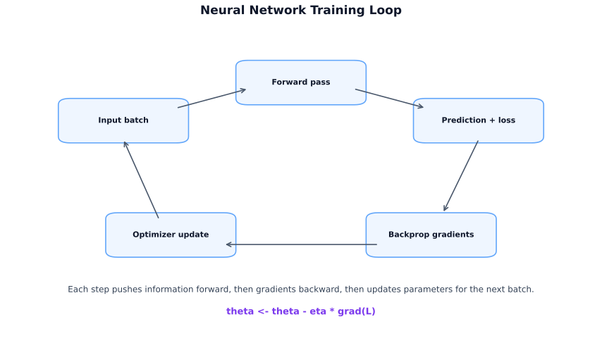
Backpropagation applies the chain rule from calculus to propagate gradients backward through the network.
\[\frac{dL}{dw} = \frac{dL}{d\hat{y}} \cdot \frac{d\hat{y}}{dz} \cdot \frac{dz}{dw}\]
Each layer contributes a term. Gradients flow from output to input — hence “backward.”
\[\theta \leftarrow \theta - \eta \nabla_\theta L\]
In deep networks, gradients can become very small (vanishing) or very large (exploding) as they propagate backward.
Key: ReLU reduces vanishing gradients. Batch normalization (Section 10.5) further stabilizes training.
Training a deep network requires more than just gradient descent. Three techniques — optimizers, batch normalization, and dropout — make the difference between training that converges and training that doesn’t.
| Optimizer | Idea | Strength | When to use |
|---|---|---|---|
| SGD | Gradient descent on mini-batches | Simple, well-understood | When you need control |
| Momentum | Accumulates gradient history to damp oscillations | Faster convergence | Better than vanilla SGD |
| Adam | Adaptive learning rates per parameter, with momentum | Stable, fast, few tuning knobs | Default choice for most tasks |
| AdamW | Adam + weight decay decoupled | Better regularization | Transformers, fine-tuning |
Fig 10.6 — Optimizer Intuition: Navigating the Loss Landscape
Adam update rule: \[m_t = \beta_1 m_{t-1} + (1-\beta_1) g_t\] \[v_t = \beta_2 v_{t-1} + (1-\beta_2) g_t^2\] Bias correction: \[\hat{m}_t = \frac{m_t}{1 - \beta_1^t}, \quad \hat{v}_t = \frac{v_t}{1 - \beta_2^t}\] \[\theta_t = \theta_{t-1} - \frac{\eta}{\sqrt{\hat{v}_t} + \epsilon} \hat{m}_t\]
Where: \(g_t\) = gradient at step \(t\), \(m_t\) = first moment (mean of gradients, i.e., momentum), \(v_t\) = second moment (mean of squared gradients, i.e., adaptive scaling), \(\hat{m}_t, \hat{v}_t\) = bias-corrected estimates (critical in early steps when \(m_t, v_t\) are biased toward zero), \(\beta_1, \beta_2\) = exponential decay rates (defaults 0.9, 0.999), \(\eta\) = learning rate, \(\epsilon\) = small constant for numerical stability.
Key: Adam is the practical default. Use AdamW for transformers and when weight decay matters.
A fixed learning rate often performs worse than one that decays over time:
Batch normalization normalizes the inputs to each layer to have zero mean and unit variance, then applies learned scale and shift parameters.
\[\hat{x}_i = \frac{x_i - \mu_B}{\sqrt{\sigma_B^2 + \epsilon}}, \quad y_i = \gamma \hat{x}_i + \beta\]
Where: \(\mu_B\) = mini-batch mean, \(\sigma_B^2\) = mini-batch variance, \(\epsilon\) = small constant for numerical stability, \(\gamma, \beta\) = learned scale and shift parameters.
Why it helps:
Fig 10.7 — Batch Normalization: What It Actually Does
Place batch norm after the linear transform and before the activation:
Dropout randomly sets a fraction \(p\) of neuron outputs to zero during training. The remaining outputs are scaled up by \(\frac{1}{1-p}\) to preserve expected values.
Fig 10.8 — Dropout: Training vs Inference
Why it works: Forces the network to learn redundant representations. No single neuron can rely on any specific set of co-activators, which prevents co-adaptation and overfitting.
Typical values: \(p = 0.2\) to \(0.5\) for hidden layers.
Key: Dropout is off at inference time. Forgetting to switch modes is a common production bug.
Each architecture section in this chapter includes its own quick-fix box for underfitting and overfitting. The table below summarises the main regularization techniques.
General Remedies (apply to any neural network)
Underfitting (high bias)
• Increase model capacity (more layers, wider layers)
• Train for more epochs with a lower learning rate
• Reduce regularization (dropout, weight decay)
• Use a pretrained backbone instead of training from scratch
Overfitting (high variance)
• Collect more data or apply data augmentation
• Add regularization (dropout, weight decay, batch norm)
• Use early stopping based on validation loss
• Reduce model size if data is limited
• Use cross-validation to detect the gap early
Each architecture’s section above adds model-specific tuning on top of these universal strategies.
| Technique | What it does | Best for |
|---|---|---|
| L2 weight decay | Penalizes large weights | All architectures |
| Dropout | Random neuron silencing | Fully connected layers |
| Batch normalization | Normalizes layer inputs | Deep CNNs, most architectures |
| Early stopping | Stop when val loss stops improving | Any training loop |
| Data augmentation | Increase effective dataset size | Images, audio |
One of the most practically useful guides in this book. Many practitioners waste months applying deep learning to problems where XGBoost would win in an afternoon.
| Data type | Row count | Recommended first model |
|---|---|---|
| Tabular, mixed types | Any | XGBoost / LightGBM |
| Tabular, all numeric | < 10k | Logistic Regression / Ridge |
| Tabular, all numeric | > 100k | XGBoost or MLP |
| Image | Any | CNN (or pretrained ResNet/EfficientNet) |
| Raw text | Any | Pretrained Transformer (BERT, RoBERTa) |
| Time series | Any | ARIMA baseline → XGBoost with lag features → LSTM/TCN |
| Audio | Any | Mel spectrogram + CNN, or Wav2Vec |
| Graph-structured | Any | Graph Neural Network (GNN) |
| Architecture | Best for | Key trait |
|---|---|---|
| MLP / Feedforward | Tabular, structured data | Fully connected layers |
| CNN | Images, spatial data | Local filters, shared weights |
| RNN / LSTM / GRU | Sequences, time series | Hidden state carries history |
| Transformer | Text, long sequences | Attention, parallelizable |
| Autoencoder | Compression, anomaly detection | Encode → bottleneck → decode |
| GAN | Generation, image synthesis | Generator vs discriminator |
Key: The best model is the simplest one that solves the problem. Always establish a baseline before reaching for deep learning.
Feedforward networks process one fixed-size input at a time. Recurrent Neural Networks (RNNs) process sequences by maintaining a hidden state that is updated at each time step, allowing information to persist across steps.
Fig 10.10 — RNN Unrolled: How "The cat sat" Flows Through Time
Problem: Vanilla RNNs suffer from the vanishing gradient problem over long sequences — gradients exponentially shrink or explode as they propagate backwards through many time steps, making it impossible to learn long-range dependencies.
LSTM (Hochreiter & Schmidhuber, 1997) solves vanishing gradients by maintaining two separate memory streams:
Four gates, each learned by a sigmoid/tanh network, control what flows through:
| Gate | Equation (simplified) | Role |
|---|---|---|
| Forget gate ft | σ(Wf·[ht-1, xt]) | Decides what fraction of Ct-1 to erase (0 = forget all, 1 = keep all) |
| Input gate it | σ(Wi·[ht-1, xt]) | Decides which new values to write into the cell |
| Cell update C̃t | tanh(Wc·[ht-1, xt]) | Candidate new values to potentially add |
| Output gate ot | σ(Wo·[ht-1, xt]) | What portion of the cell state to expose as ht |
Cell state update: Ct = ft ⊙ Ct-1 + it ⊙ C̃t
Hidden state: ht = ot ⊙ tanh(Ct)
GRU (Cho et al., 2014) simplifies the LSTM by merging the cell state and hidden state into one, and using only two gates. It typically matches LSTM performance with fewer parameters — a common first choice when experimenting with sequence models.
| Gate | Role |
|---|---|
| Reset gate rt | How much of the previous hidden state to ignore when computing the new candidate |
| Update gate zt | How much of the candidate hidden state to use vs. keeping the old hidden state (like a combined forget+input) |
Update: ht = (1−zt) ⊙ ht-1 + zt ⊙ tanh(W·[rt ⊙ ht-1, xt])
Fig 10.11 — LSTM Cell: Three Gates Control Memory Flow
Fig 10.12 — GRU Cell: Simplified 2-Gate Design
| Vanilla RNN | LSTM | GRU | Transformer | |
|---|---|---|---|---|
| Memory | Hidden state only | Cell + hidden state | Hidden state only | No recurrence — attention |
| Long-range deps | Poor (vanishing grad) | Good | Good | Excellent (O(n²) attention) |
| Parameters | Fewest | Most (4× gates) | Fewer (2× gates) | Many (scales with heads/layers) |
| Parallelisation | Sequential only | Sequential only | Sequential only | Fully parallel (fast training) |
| Best for | Simple baselines | Long sequences, time series | Medium sequences, faster iteration | NLP, long context, modern LLMs |
import torch.nn as nn
# LSTM layer
lstm = nn.LSTM(input_size=64, hidden_size=128, num_layers=2, batch_first=True, dropout=0.2)
# GRU layer (simpler, fewer parameters)
gru = nn.GRU(input_size=64, hidden_size=128, num_layers=2, batch_first=True, dropout=0.2)
# Usage: input shape = (batch, seq_len, input_size)
# output, (hn, cn) = lstm(x) # LSTM returns hidden and cell state
# output, hn = gru(x) # GRU returns only hidden statePractical advice: For sequence modeling today, start with a Transformer (or a pre-trained one). Use LSTM/GRU when: (1) data is small and Transformers overfit; (2) you need online (streaming) inference — RNNs process one step at a time with constant memory; (3) time series with explicit sequential order matters and you want a lightweight model.
Bias–Variance Quick Fix
Underfitting (high bias)
• Add more recurrent layers; increase hidden_size
• Train for more epochs with patience
• Use LSTM over GRU (more capacity via cell state)
Overfitting (high variance)
• Add dropout between layers and recurrent dropout within timesteps
• Apply weight decay; reduce hidden_size
• Use early stopping; apply gradient clipping
See Section 10.5.5 for the full regularization comparison.
Transfer learning is the practice of reusing a model trained on one task as the starting point for a different task. It is one of the most powerful practical tools in deep learning.
Deep networks learn hierarchical representations:
The early and middle layers generalize across many tasks. Only the late layers are task-specific. Transfer learning keeps the useful learned features and replaces only the layers needed for the new task.
| Data size | Task similarity | Strategy |
|---|---|---|
| Small | Similar | Freeze backbone, train head only |
| Medium | Similar | Fine-tune upper layers + head |
| Large | Different | Fine-tune all layers or train from scratch |
| Any | Very similar | Feature extraction (backbone as fixed encoder) |
Rule of thumb: The more your data differs from the pretraining distribution, the more layers you need to fine-tune.
Whether you freeze a layer or fine-tune it, the same training loop applies. The only change is which parameters are in the optimizer’s parameter group.
\[\theta \leftarrow \theta - \eta \nabla_\theta L\]
Frozen backbone + new head: \[\theta = \{\theta_{\text{head}}\}, \quad \theta_{\text{backbone}} \text{ fixed}\]
Full fine-tuning: \[\theta = \{\theta_{\text{backbone}}, \theta_{\text{head}}\}\]
| Term | Meaning |
|---|---|
| Pretrained model | Model trained on a large source task |
| Backbone | Pretrained feature-producing body |
| Feature extractor | Reused layers (usually early/mid) kept frozen |
| Fine-tuning | Continuing training on some or all pretrained layers |
| Output head | Final task-specific layer(s) — always trained from scratch |
| Domain shift | Mismatch between source and target data distributions |
| Logits | Raw outputs before sigmoid/softmax |
| Problem | Base model | What happened |
|---|---|---|
| CheXNet Stanford, 2017 |
DenseNet-121 pretrained on ImageNet (1.2M natural images) | Fine-tuned on 112K chest X-rays, achieved radiologist-level accuracy at detecting 14 lung pathologies. Just 100K medical images were sufficient because ImageNet features (edges, textures, shapes) transfer well to X-rays. |
| ULMFiT Howard & Ruder, 2018 |
AWD-LSTM pretrained on Wikitext-103 | Pioneered discriminative fine-tuning and slanted triangular learning rates for NLP. Showed that language model pretraining + fine-tuning could match task-specific architectures with 100x less data, sparking the BERT/GPT era. |
| ChatGPT OpenAI, 2022 |
GPT-3.5 pretrained on internet text | Applied RLHF (reinforcement learning from human feedback) to a pretrained language model. The base model knew language; transfer learning via fine-tuning and RLHF made it follow instructions and be conversational. |
| DALL-E / Stable Diffusion 2022-23 |
CLIP (image-text encoder) + U-Net diffusion | CLIP, pretrained on 400M image-text pairs, provides the text understanding. The diffusion model generates images. Fine-tuning on specific styles (e.g., DreamBooth) creates personalized generators from just 5-10 images. |
Pattern: In every case, a model pretrained on a large general dataset was adapted to a specific task with far less data and compute than training from scratch. This is why transfer learning is the single most practical technique in modern deep learning.
Bias–Variance Quick Fix
Underfitting (high bias)
• Unfreeze more layers (fine-tune deeper into the backbone)
• Use a larger pretrained backbone (e.g., ResNet-50 → 101)
• Increase learning rate for unfrozen layers; add task-specific head layers
Overfitting (high variance)
• Freeze more layers (only fine-tune the head)
• Reduce learning rate; add dropout in the classification head
• Apply stronger data augmentation; use a smaller backbone if data is limited
See Section 10.5.5 for the full regularization comparison.
CNNs exploit spatial structure. For images, nearby pixels are more related than distant ones. CNNs use this by learning local pattern detectors (filters/kernels) and sliding them across the image.
A dense MLP applied to a 224×224 RGB image would have \(224 \times 224 \times 3 \approx 150{,}000\) input connections per neuron in the first layer. The network would have hundreds of millions of parameters before doing any useful work.
CNNs solve this with three design choices: 1. Local connectivity: each neuron sees only a small local patch 2. Shared weights: the same filter is reused at every position 3. Hierarchical features: multiple layers build from edges to shapes to objects
| Approach | How it works |
|---|---|
| Dense net | Every pixel connects to every neuron (too many params, no spatial awareness) |
| CNN | Small filter slides everywhere (weight sharing, spatial hierarchy) |
A filter (kernel) of size \(F \times F\) slides across the input, computing element-wise multiply and sum at each position:
Fig 10.15 — Convolution Step-by-Step: 3×3 Filter Sliding Over a 5×5 Input
This produces a feature map — a 2D representation of where that pattern was detected.
Output size formula: \[\text{output size} = \left\lfloor \frac{H - F + 2P}{S} \right\rfloor + 1\]
Where:
Effect of each hyperparameter:
| Parameter | Increase effect |
|---|---|
| Larger filter \(F\) | Smaller output, larger receptive field |
| More padding \(P\) | Larger or preserved output |
| Larger stride \(S\) | Smaller output (downsampling) |
| More filters | More channels in output (more detected patterns) |
Same padding preserves spatial dimensions. Valid padding (no padding) shrinks output.
This feature hierarchy is why transfer learning works so well for images — early-layer features (edges, textures) are almost universal across visual tasks, while later layers become task-specific.
Input: \(28 \times 28 \times 1\) (grayscale digit)
Output size check for Conv2D(32, 5×5) on 28×28 (valid, stride=1): \[\left\lfloor \frac{28 - 5}{1} \right\rfloor + 1 = 24\]
Bias–Variance Quick Fix
Underfitting (high bias)
• Use a deeper architecture (more conv layers or blocks)
• Use a pretrained backbone (transfer learning)
• Increase filter count; train for more epochs
Overfitting (high variance)
• Apply data augmentation (flips, crops, color jitter)
• Add dropout after fully connected layers
• Use batch normalization; reduce model size; apply early stopping
See Section 10.5.5 for the full regularization comparison.
After AlexNet (2012) demonstrated that deep CNNs could surpass human baselines on ImageNet, the field moved rapidly toward deeper and more efficient architectures.
Naively making networks deeper causes training to fail — gradients vanish before reaching the early layers.
ResNet (He et al., 2015) solves the depth problem with skip connections (residual connections). Instead of learning \(H(x)\), a residual block learns the residual \(F(x) = H(x) - x\), and the block computes:
\[y = F(x) + x\]
Why it works: Gradients can flow directly through the skip connection. Even if the learned transformation vanishes, the identity path guarantees at least some gradient signal. ResNet trained successfully up to 152 layers.
Common ResNet variants: ResNet-18, ResNet-34, ResNet-50, ResNet-101, ResNet-152. The number indicates total layers.
EfficientNet (Tan & Le, 2019) introduced compound scaling — systematically scaling network depth, width, and input resolution together, rather than scaling one dimension arbitrarily.
\[\text{depth}: d = \alpha^\phi, \quad \text{width}: w = \beta^\phi, \quad \text{resolution}: r = \gamma^\phi\]
Where: \(\alpha, \beta, \gamma\) = base scaling coefficients for depth, width, and resolution, \(\phi\) = compound coefficient that scales all three uniformly.
Subject to \(\alpha \cdot \beta^2 \cdot \gamma^2 \approx 2\) (so FLOPs double per unit increase in \(\phi\)).
EfficientNet models (B0 through B7) range from mobile-scale to state-of-the-art accuracy with far fewer parameters than older architectures of similar performance.
| Architecture | Best use case | Notes |
|---|---|---|
| ResNet-50 | General image classification baseline | Wide transfer learning support |
| ResNet-18 | Fast experiments, resource-constrained | Lighter but strong |
| EfficientNet-B0 | Mobile / edge deployment | Small and accurate |
| EfficientNet-B4+ | High-accuracy production | Competes with much larger models |
| Vision Transformer (ViT) | Large-scale image tasks with lots of data | Needs more data than CNNs |
Key: For most image transfer learning tasks, start with ResNet-50 or EfficientNet-B0. Train from ImageNet weights. Fine-tune the head first, then progressively unfreeze.
Bias–Variance Quick Fix
Underfitting (high bias)
• Use a deeper variant (ResNet-50 → 101 → 152)
• Use compound scaling (EfficientNet-B0 → B4 → B7)
• Train longer with learning rate warmup + cosine schedule
Overfitting (high variance)
• Use a shallower variant; apply strong augmentation (RandAugment, CutMix)
• Use label smoothing; increase weight decay
• Use Stochastic Depth (drop random residual blocks during training)
See Section 10.5.5 for the full regularization comparison.
Object detection answers two questions simultaneously: what is in the image, and where is it? This is harder than classification because there may be multiple objects at different positions.
For one object, the prediction vector is: \[y = [P_c,\; B_x,\; B_y,\; B_w,\; B_h,\; C_1,\; C_2,\; \dots,\; C_K]^T\]
If \(P_c = 0\) (no object), the remaining values are ignored during loss computation.
YOLO (You Only Look Once) divides the image into an \(S \times S\) grid and predicts all objects in a single forward pass. The key insight: each cell is responsible for detecting objects whose center falls in that cell.
Each cell predicts \(B\) boxes, each with \(5 + K\) values (\(5\) for box geometry + objectness, \(K\) for classes). Total output tensor:
\[S \times S \times (B \cdot 5 + K)\]
Anchor boxes let each cell predict multiple shapes by pre-defining reference box aspect ratios.
Key: YOLO is a single-stage detector — no separate proposal step. This makes it fast enough for real-time detection.
When multiple cells predict the same object, NMS removes duplicates:
Intersection over Union (IoU): \[\text{IoU} = \frac{\text{area of overlap}}{\text{area of union}}\]
IoU \(> 0.5\) typically means the boxes are detecting the same object.
Two-stage detectors work in two passes: first propose candidate regions ("where might objects be?"), then classify each region ("what is it?"). The family evolved by fixing one bottleneck at a time:
R-CNN (2014) — The original. Uses selective search to generate ~2000 region proposals, then runs a separate CNN on every single crop. Painfully slow (~47 seconds per image) because the same pixels get processed thousands of times with no sharing.
Fast R-CNN (2015) — Key insight: run the CNN once on the whole image to produce a shared feature map, then extract features for each proposal via RoI pooling. This is ~150× faster than R-CNN, but the bottleneck shifts: selective search still runs on raw pixels outside the network.
Faster R-CNN (2015) — Replaces selective search with a Region Proposal Network (RPN) that shares the same backbone CNN. Now the entire pipeline — proposal + classification — is a single end-to-end trainable network. This is the modern two-stage baseline.
Multi-task loss: \[L = L_{\text{cls}} + \lambda L_{\text{loc}}\]
Where: \(L_{\text{cls}}\) = classification loss (cross-entropy), \(L_{\text{loc}}\) = localization loss (bounding box regression), \(\lambda\) = balancing weight.
| Aspect | YOLO | Faster R-CNN |
|---|---|---|
| Type | Single-stage | Two-stage |
| Speed | Faster (real-time capable) | Slower |
| Accuracy | Strong, slightly lower on small objects | Often better localization |
| Use case | Real-time video, edge devices | High-accuracy offline detection |
When a model or dataset is too large for one device, distributed training spreads the work across multiple accelerators or machines.
Each step introduces more coordination complexity and communication cost.
The same model runs on every worker. Each worker receives a different shard of the mini-batch, computes its local gradients, and gradients are aggregated before the parameter update.
Synchronized gradient average: \[g = \frac{1}{N} \sum_{i=1}^{N} g_i, \quad \theta_{t+1} = \theta_t - \eta g\]
Where: \(g_i\) = gradient from worker \(i\), \(N\) = number of workers, \(\eta\) = learning rate, \(\theta_t\) = model parameters at step \(t\).
Key: Average gradients (not sum) — this keeps gradient scale stable as worker count grows.
| Pattern | Mechanism | Strength | Weakness |
|---|---|---|---|
| Async parameter server | Workers push/pull to central server | High throughput; tolerates stragglers | Stale gradients |
| Sync all-reduce | Workers directly average gradients together | Consistent updates, easier optimization | Waits for slowest worker |
Async parameter server:
Sync all-reduce:
| Situation | Default |
|---|---|
| One device too slow | Multi-GPU, single host |
| One machine not enough | Multi-node with all-reduce |
| Throughput matters most | Async parameter server |
| Consistent convergence matters most | Sync all-reduce |
Key: Distributed training changes coordination, not the learning rule. The math is the same; the engineering is different.
For very large models (billions of parameters), data parallelism alone is insufficient:
Deep learning builds from a simple foundation: a neuron computes a weighted sum, adds a bias, and applies an activation. Stacking neurons into layers creates hierarchical representations. Training uses the forward pass to compute predictions, the loss to measure error, and backpropagation to compute gradients. An optimizer — Adam is the default — uses those gradients to update weights.
Three techniques make deep networks practical: batch normalization stabilizes training, dropout prevents overfitting, and transfer learning lets you reuse learned representations across tasks.
CNNs exploit spatial structure through local filters, weight sharing, and pooling. ResNet solves the depth problem with skip connections. YOLO and Faster R-CNN extend detection to multiple objects per image. Distributed training spreads the work when one device is not enough.
Quick reference — when to use deep learning:
| Use it | Do not use it |
|---|---|
| Images, audio, raw text | Small tabular datasets |
| You have a pretrained model to start from | You need a fully explainable model |
| Dataset is large (>100k samples) | Tabular data with mixed types |
| The task is perceptual or sequential | You need to train in minutes |
A. During backpropagation, gradients are multiplied layer by layer (chain rule). With saturating activations like sigmoid or tanh, gradients shrink exponentially in deep networks — layers near the input receive near-zero gradients and barely update. ReLU (max(0, x)) has gradient 1 for positive inputs and 0 otherwise, so gradients don’t shrink for active neurons (though “dying ReLU” can occur). Residual connections (ResNet) add a shortcut x → x + F(x): gradients flow directly through the identity path, bypassing non-linearities entirely. This allows training of networks 100+ layers deep. Batch normalization also helps by keeping activations in a well-conditioned range.
A. Backpropagation computes the gradient of the loss with respect to every parameter using the chain rule, applied in reverse from the output layer to the input. At each layer, it computes: (1) the local gradient of the layer’s output w.r.t. its inputs and weights, and (2) multiplies by the upstream gradient arriving from the next layer. The result is ∂L/∂W for each weight matrix W, which is then used by an optimizer (SGD, Adam) to update W ← W − η·∂L/∂W. Computationally, the forward pass caches intermediate activations; backprop reuses them to compute gradients efficiently without redundant calculation. Modern frameworks (PyTorch, JAX) implement this via automatic differentiation.
A.
| Optimizer | Mechanism | When to use |
|---|---|---|
| SGD + momentum | Accumulates velocity in gradient direction; momentum smooths oscillations | Vision models (ResNet, CNNs) where SGD generalizes better; when you can tune LR carefully |
| RMSProp | Adapts LR per-parameter by dividing by moving avg of squared gradients | RNNs, noisy gradients; predecessor of Adam |
| Adam | Combines momentum (first moment) + RMSProp (second moment) with bias correction | Default for most tasks: LLMs, transformers, sparse gradients; fast convergence, less LR tuning |
Adam converges faster but can generalize slightly worse than SGD for image classification; use SGD with cosine annealing for final production training of vision models.
A. Batch normalization (BN) normalizes the activations of a layer across the batch: for each feature, subtract the batch mean and divide by batch standard deviation, then apply learnable scale (γ) and shift (β). This solves internal covariate shift — as weights update, the distribution of inputs to each layer changes, forcing subsequent layers to continuously re-adapt. BN reduces this instability, allowing higher learning rates, faster convergence, and acting as a mild regularizer (noise from batch statistics). Limitation: BN is problematic with very small batch sizes (use LayerNorm for transformers, GroupNorm for object detection).
A. Dropout randomly zeroes each neuron’s output with probability p during training. At test time, all neurons are active but their outputs are scaled by (1−p). Why it works: (1) Ensemble interpretation — each forward pass samples a different sub-network; the full network is an average over exponentially many sub-networks. (2) Co-adaptation prevention — neurons cannot rely on specific other neurons always being present, so they must learn more robust, independent features. Common rates: p=0.1–0.3 for convolutional layers, p=0.5 for dense layers. Not used during inference. Alternatives for transformers: DropPath (Stochastic Depth) on residual paths.
A. CNNs apply learned filters over local patches with weight sharing and translation equivariance — they process inputs in parallel. Ideal for: image classification, object detection, speech features (1D conv), any task with local spatial/temporal structure. RNNs maintain a hidden state that is updated sequentially, giving them memory of past inputs. Ideal for: variable-length sequences, text generation, time series with long-range dependencies. Limitations: RNNs are slow to train (sequential), suffer from vanishing gradients over long sequences (LSTMs mitigate this). Transformers have largely replaced RNNs for NLP because they process sequences in parallel and attend to all positions simultaneously.
A. Transfer learning uses a model pretrained on a large dataset (e.g., ImageNet, Common Crawl) as a starting point for a new task. Feature extraction: freeze all pretrained weights; only train a new head (final classification layer). Fast, data-efficient, works when the source and target domains are similar. Fine-tuning: unfreeze some or all pretrained layers and continue training with a small learning rate. The model adapts its representations to the new task. Use fine-tuning when you have enough data to avoid overfitting and when the target domain differs significantly from the source. A common strategy: freeze and train the head for a few epochs, then unfreeze the top layers and fine-tune with a 10x lower learning rate.
A. Object detectors (e.g., YOLO, Faster R-CNN) produce many overlapping bounding box proposals for the same object. NMS removes redundant boxes: (1) Sort boxes by confidence score descending. (2) Take the highest-scoring box; suppress all other boxes with IoU (Intersection over Union) above a threshold (typically 0.5) with it. (3) Repeat with the next remaining box. The output is one box per object. Limitation: NMS fails when objects genuinely overlap (e.g., a crowd). Soft-NMS (decay confidence instead of hard removal) and learning-based NMS variants address this.
A. Data parallelism splits the training batch across multiple GPUs/machines. Each device holds a complete model copy and computes gradients on its shard of the batch. After the backward pass, gradients are all-reduced (summed then averaged) across all devices so every model copy gets the same gradient update, keeping replicas in sync. Common implementations: PyTorch DDP (Distributed Data Parallel) uses ring all-reduce for bandwidth efficiency. The bottleneck is gradient communication; gradient compression (FP16, gradient accumulation) reduces overhead. Model parallelism (splitting model layers across devices) is used when the model itself doesn’t fit on a single GPU (e.g., large LLMs).
A.
| Symptom | Diagnosis | Fixes |
|---|---|---|
| Train loss high, val loss ≈ train loss | Underfitting | Increase model capacity (more layers/width); train longer; reduce regularization; better features; lower LR if loss not decreasing |
| Train loss low, val loss ≫ train loss | Overfitting | More data (or augmentation); increase dropout; weight decay (L2); early stopping; reduce model capacity; label smoothing |
| Loss not decreasing | Optimization failure | Check LR (too high or too low); gradient norms (exploding/vanishing); data normalization; initialization |
| Loss decreasing then spikes | Exploding gradients | Gradient clipping (clip_norm=1.0); lower LR; check for NaN in labels/features |
torch.nn module docs are the best reference when implementing from scratchNatural language processing spans a wide range: classical bag-of-words models, word embeddings, transformers, and today’s large language models. This chapter is designed as a guided climb through that stack, so each new idea feels like a natural extension of the previous one rather than a jump into jargon.
What you will learn:
| Section | Topic |
|---|---|
| 11.1 | NLP fundamentals: tasks, taxonomy, applications |
| 11.2 | Text representations: BoW → TF-IDF → embeddings |
| 11.3 | Transformer architecture: attention, BERT vs GPT |
| 11.4 | Tokenization and BPE |
| 11.5 | Dense embeddings for retrieval |
| 11.6 | Retrieval-Augmented Generation (RAG) |
| 11.7 | Fine-tuning and alignment (SFT, LoRA, RLHF, DPO) |
| 11.8 | Prompting and in-context learning |
| 11.9 | LLM evaluation and hallucination |
| 11.10 | Agentic AI: tool use, function calling, multi-agent systems, MCP |
| 11.11 | LLM Quantization: INT8, INT4, GPTQ, AWQ, GGUF |
Prerequisites: Deep learning fundamentals (Chapter 10), basic linear algebra.
NLP (Natural Language Processing) = AI for human language in text and speech. Deep learning is one modeling approach within NLP. The intersection of the two is sometimes called Deep NLP (DNLP).
| NLP | = problem space (language tasks) |
| Deep Learning | solution family (neural models) |
| DNLP | = NLP solved with deep learning |
Modern systems typically use one pretrained transformer for many tasks, but the task categories still matter for defining evaluation metrics and problem structure.
| Group | Tasks | Examples |
|---|---|---|
| Understanding | Classification, NER, QA, information extraction | Sentiment analysis, named entity recognition |
| Transformation | Translation, summarization, transcription, rewriting | Machine translation, document summarization |
| Generation | Dialogue, captioning, structured generation | Chatbot responses, report generation |
Key: Most real NLP pipelines combine all three. A customer support bot understands the user’s intent, transforms it into a search query, and generates a response.
| Application | ML task type |
|---|---|
| Chatbot / dialogue | Seq2Seq generation |
| Machine translation | Seq2Seq (encoder-decoder) |
| Sentiment analysis | Classification |
| Named entity recognition (NER) | Sequence labeling |
| Summarization | Seq2Seq or extractive selection |
| Question answering | Span extraction or generation |
| Speech-to-text (ASR) | Seq2Seq (audio → text) |
Seq2Seq (sequence-to-sequence) is the core pattern when both input and output are ordered sequences:
\[ P(y_{1:T'} \mid x_{1:T}) = \prod_{t=1}^{T'} P(y_t \mid y_{<t}, x_{1:T}) \]
Where: \(x_{1:T}\) = input sequence of length \(T\), \(y_{1:T'}\) = output sequence, \(y_{<t}\) = all previously generated tokens before position \(t\).
Seq2Seq handles: translation (English → French), summarization (long text → short text), transcription (audio → text), dialogue (utterance → response).
The central challenge in NLP is turning variable-length text into fixed-size numerical vectors that a model can learn from. Representations evolved from sparse token counts to dense semantic vectors.

BoW maps a document to a vector over a vocabulary \(V\): each dimension counts the occurrence of one word.
\[ v \in \mathbb{R}^{|V|}, \quad v_i = \text{count of word } i \text{ in document} \]
Strengths: simple, fast, interpretable. Weaknesses: discards word order, treats “not good” and “good” identically, high-dimensional sparse vectors.
TF-IDF weights words by how distinctive they are to a document within the corpus.
\[ \text{TF-IDF}(t, d) = \underbrace{\text{tf}(t, d)}_{\text{frequency in doc}} \times \underbrace{\log \frac{N}{\text{df}(t)}}_{\text{rarity across corpus}} \]
Use case: document search and classification where keyword matching matters.
N-grams extend BoW to sequences of \(n\) consecutive words:
{quick, brown, fox}{quick_brown, brown_fox}{quick_brown_fox}Orthogonal Sparse Bigrams (OSB) extend this with skip-aware pairing: anchor on the first word in a window, pair it with all subsequent words. Useful for classical spam filtering but replaced by embeddings in production NLP.
free limited time offer]:free_limited, free__time, free___offer (underscore count = distance)
Embeddings replace sparse BoW vectors with dense \(d\)-dimensional vectors where words with similar meaning are geometrically close.
Word2Vec skip-gram: train a shallow neural network to predict context words from a center word.
"good""are", "really", "at", "heart"]Mathematically: given center word one-hot \(x\),
\[ h = Wx, \quad u = W'h, \quad P(w_j \mid w_c) = \frac{e^{u_j}}{\sum_k e^{u_k}} \]
Where: \(x\) = one-hot vector of center word, \(W\) = input embedding matrix, \(W'\) = output embedding matrix, \(h\) = hidden representation (the word embedding).
After training, similar words cluster in the learned embedding space:
"king" − "man" + "woman" ≈ "queen" (semantic arithmetic)
GloVe: similar result but trained on global word co-occurrence statistics rather than local windows.
Important OOV caveat for basic embeddings: Word2Vec and GloVe usually depend on a fixed vocabulary learned during training. If an unseen token appears at inference, classical pipelines often map it to a generic <UNK> vector or ignore it. So with basic embeddings, a new product code, a brand-new company name, or a misspelled word may lose most of its meaning unless you use subword-aware methods such as FastText or BPE-based transformers.
FastText: represents each word as a bag of character n-grams. Handles out-of-vocabulary (OOV) words and morphological variants naturally.
"running" → "run" + "runn" + "unni" + "nnin" + "ning"
Comparison:
| Method | Training | OOV handling | Best for |
|---|---|---|---|
| Word2Vec | Local windows | No | General dense embeddings |
| GloVe | Co-occurrence matrix | No | Semantic similarity tasks |
| FastText | Subword n-grams | Yes | Morphologically rich languages, typos |
Word2Vec/GloVe give every word one fixed vector regardless of context. “Bank” (river vs financial) gets the same vector. Contextual embeddings (BERT, LLMs) produce a different vector for the same word depending on its sentence context.
| Type | Example | Vector |
|---|---|---|
| Static | "bank" (always) | [0.3, 0.1, -0.2, …] |
| Contextual | "bank by the river" | [0.1, -0.3, 0.4, …] |
| "bank account" | [0.4, 0.2, -0.1, …] |
Recommended visual guide: The Illustrated Transformer (Jay Alammar). This section follows the same spirit: start with one input sentence, then unpack the moving parts one by one.
The Transformer can feel intimidating because people often introduce it in the middle of the math. A better way is to follow one sentence as it moves through the model.
Suppose the input is:
At this stage the model does not see words directly. It sees a sequence of vectors. Each vector says something about the token’s meaning, and positional encoding says where that token sits in the sentence.
A Transformer layer is easier to understand if you think of it as two steps repeated many times:
In practice, each block also uses residual connections and layer normalization so training stays stable. Conceptually, though, the heart of the model is still “mix information across tokens, then refine each token.”
Self-attention is the mechanism that made Transformers so powerful. When the model processes one token, it is allowed to inspect other tokens in the same sequence and borrow useful information from them.
Take the sentence:
When encoding bank, the model should pay attention to river, because that tells it “bank” means riverbank, not financial institution. That is exactly the kind of dependency self-attention captures.
Here are two more everyday sentences where self-attention quietly does the heavy lifting:
it, the model has to decide: does it refer to the trophy or the suitcase? The clue is too big. Self-attention lets it look at the adjective big and the two candidate nouns together and lean on trophy. Now flip one word:it gets pulled toward suitcase. One adjective changes the entire attention pattern — and therefore the meaning the model encodes for it.
book is spelled identically in both sentences, but in the first it is a noun (an object you can hold) and in the second it is a verb (the act of reserving). Self-attention on sentence one leans on wrote and publisher, which pull book toward the “written object” sense. On sentence two it leans on will and flight, which pull book toward the “reserve a ticket” sense. The vector that comes out for book is different in each sentence — shaped by whichever neighbors it decided to listen to.
Notice what all three examples share: the same word means different things in different sentences, and the model resolves the ambiguity by looking at nearby tokens. This is exactly why people say Transformer embeddings are contextual rather than static. Word2Vec gives bank one fixed vector forever. A Transformer gives bank a fresh vector every time it appears, built from the neighbors it chose to attend to right now.
Now we can introduce the famous Q, K, V terms. They make much more sense once you already know what the model is trying to do.
Where do these three vectors actually come from? Each token in the sequence already has an embedding vector x from the embedding layer — the “what is this token like?” representation. Inside one attention head, the model learns three weight matrices, WQ, WK, WV, and for every token it simply multiplies:
So a 7-token sentence produces 7 query vectors, 7 key vectors, and 7 value vectors — three vectors per token, all derived from the same input embedding but through three different learned projections. The matrices WQ, WK, WV are what the model actually trains; the Q/K/V vectors themselves are computed fresh for every token at every layer from the current input. They are not handwritten features — they are learned so that "what each token asks for" and "what each token offers" turn out to be useful for the task.
For the token bank, Qbank can be read informally as: "show me words that clarify which sense of bank is meant here." Tokens like river and steep produce keys that match strongly against that query, so their value vectors get blended into the updated representation of bank.
\[ \text{Attention}(Q, K, V) = \text{softmax}\left(\frac{QK^T}{\sqrt{d_k}}\right) V \]
The formula says:
it.it is asking for:| Token | Qit · Ktoken | Why the model might care |
|---|---|---|
| The | 0.4 | determiner, almost no information |
| animal | 8.7 | plausible referent for "it" |
| didn't | 0.2 | negation, weak signal |
| cross | 1.1 | action, mild clue |
| the | 0.3 | determiner |
| street | 2.4 | another possible referent, but weaker |
| because | 0.6 | discourse marker |
| it | 4.0 | tokens usually attend to themselves a little |
| was | 0.9 | copula, low info |
| too | 1.7 | intensifier |
| tired | 6.5 | strong clue — what kind of thing can be tired? |
animal → 0.52 tired → 0.28 it → 0.07 street → 0.05 (others ≈ 0)it is now dominated by the value vectors of animal and tired — exactly the two tokens that explain what "it" means. Coreference has been resolved without a single hand-written rule, just a weighted lookup driven by dot products the model learned during training.animal and tired, near-zero on filler words — is what real attention maps actually show.)
Here's the good news: once you understand single-head attention, the leap to multi-head is tiny. Multi-head attention is literally single-head attention, done h times in parallel — each copy with its own independent set of weight matrices WQ(i), WK(i), WV(i).
So if the model uses 8 heads, every token doesn't have just one Q, K, V — it has 8 queries, 8 keys, and 8 values, one triple per head. Each head runs the full attention computation (dot products → scale → softmax → weighted sum of V) on its own projections and produces its own output vector. Those h output vectors are then concatenated and passed through one final learned matrix WO that blends them back into a single vector per token.
That's the entire mechanism. Run attention h times with h different projections, stick the outputs together, mix them with one more matrix. No new ideas, just more lenses. In practice each head uses a smaller dimension so that h heads together have roughly the same compute as one big head — you're trading "one wide view" for "several narrow, specialized views."
Why bother? Because different heads can specialize in different relationships:
That is why attention feels richer than a single similarity lookup. The model is looking at the same sequence through several lenses at once.
To see this concretely, take one sentence:
When the model encodes the word served, different heads can light up on totally different parts of the sentence — as if several readers each highlighted the line with a different colored marker:
| Head | Mostly attends to | What it is probably learning |
|---|---|---|
| Head 1 | chef | Who performed the action (subject tracking) |
| Head 2 | food | What was acted on (direct object) |
| Head 3 | guests | Who received the action (indirect object / beneficiary) |
| Head 4 | quietly | Manner — how the action was performed |
| Head 5 | tired, cooking since dawn | Long-range modifiers tied to the subject |
None of these roles were programmed in by hand. The model was simply asked to predict the next word across billions of sentences, and to do that well it discovered that running several attention patterns in parallel is far more useful than computing one. When researchers visualize real attention weights head by head after training, they genuinely see this kind of specialization — some heads track syntactic roles, others track coreference, others fire on punctuation, sentence boundaries, or repeated entities.
The original 2017 Transformer (from the "Attention Is All You Need" paper) had an encoder stack and a decoder stack, wired together by a special kind of attention called cross-attention. Here is the full picture:
Read the diagram bottom-up. Input tokens enter the encoder on the left, get embedded, get positional encoding added, then pass through N encoder layers — each one a Multi-Head Self-Attention followed by a Feed Forward, both wrapped in Add & Norm residual connections. After the last encoder layer, you have one contextual vector per input token. These vectors become the K and V that the decoder will attend to.
On the right, the decoder takes whatever has been generated so far (shifted right so the model always predicts the next token), embeds it, adds positions, and passes it through N decoder layers. Each decoder layer has three sub-blocks instead of two:
At the very top, the decoder's final vector for the current position is sent through a Linear layer and a Softmax to produce a probability distribution over the entire vocabulary — pick the next token, append it to the output, feed the whole thing back in, and repeat.
| Part | What it does | Typical use |
|---|---|---|
| Encoder | Builds contextual representations of the input sequence | Understanding tasks: classification, NER, embeddings |
| Decoder | Generates output tokens one by one | Generation tasks: translation, chat, writing |
| Encoder-decoder | Reads one sequence, generates another | Translation, summarization |
Today, the family has split into three common forms:
| Architecture | Type | Attention | Pre-training task | Best for |
|---|---|---|---|---|
| BERT | Encoder-only | Bidirectional | Masked language modeling | Classification, NER, embeddings |
| GPT | Decoder-only | Causal (left-to-right) | Next token prediction | Text generation, chat |
| T5, BART | Encoder-decoder | Mixed | Span masking / denoising | Translation, summarization |
Decoder-only models can look almost too simple. They only learn one task: predict the next token. But that objective is powerful because almost every language task can be framed as sequence continuation.
| RNN weakness | Transformer solution |
|---|---|
| Sequential - cannot parallelize well | All tokens can be processed together on modern hardware |
| Long-range information fades through the hidden state | Any token can directly attend to any other token |
| One hidden state is a narrow bottleneck | Each layer preserves token-wise representations with rich cross-token mixing |
| Task-specific architectures were often needed | One flexible architecture now covers language understanding and generation |
Before any text enters a model, it must be converted to tokens — discrete units the model processes. How you split text significantly affects model quality.
Key: Tokenization determines the vocabulary and directly affects how well a model handles rare words, code, and non-English text.
| Method | “tokenization” | Pros | Cons |
|---|---|---|---|
| Word-level | [“tokenization”] | Simple | OOV problem, huge vocab |
| Character-level | [“t”,“o”,“k”,“e”,…] | No OOV | Long sequences, slow |
| Subword (BPE) | [“token”,“ization”] | Best balance | Requires vocabulary building |
BPE is the dominant subword algorithm used by GPT-2, GPT-3, GPT-4, LLaMA, and most modern LLMs.
The simplest way to think about BPE: start very small, then keep merging the pieces that appear together most often. Frequent patterns become reusable tokens. Rare words stay decomposable into smaller pieces.
Algorithm:
"play played player playing"p l a y p l a y e d p l a y e r p l a y i n g"play" appears repeatedly, BPE keeps merging those frequent pieces."ed", "er", and "ing" become their own reusable tokens."player" → ["play", "er"]"playing" → ["play", "ing"]Why it works: Common words get their own tokens. Rare words split into meaningful subwords. New words can always be represented.
from transformers import AutoTokenizer
tokenizer = AutoTokenizer.from_pretrained("gpt2")
text = "The quick brown fox jumps"
tokens = tokenizer.encode(text)
print(tokenizer.convert_ids_to_tokens(tokens))
# ['The', 'Ġquick', 'Ġbrown', 'Ġfox', 'Ġjumps']
# Ġ prefix = space before word (byte-level BPE)Every transformer has a context window — the maximum number of tokens it can process at once.
| GPT-3.5: | 4,096 tokens (~3,000 words) |
| GPT-4: | 128,000 tokens (~96,000 words) |
| Claude 3 | 200,000 tokens |
| Gemini | 1,000,000+ tokens |
Token counting rule of thumb: 1 token ≈ 4 characters ≈ 0.75 English words. Code and non-English text can use 2–4× more tokens than English prose. Token counts directly affect API cost.
Modern NLP systems don’t just classify text — they need to find relevant information in large corpora. Dense vector embeddings enable semantic search.
Key: Embeddings turn text into vectors where semantically similar text is geometrically close.
| Approach | Method | Pros | Cons |
|---|---|---|---|
| Sparse (TF-IDF/BM25) | Keyword matching | Fast, interpretable | Misses synonyms, paraphrases |
| Dense (embedding-based) | Vector similarity | Semantic matching | Requires embedding model |
| Hybrid | Both combined | Best of both | More complex |

from sentence_transformers import SentenceTransformer
model = SentenceTransformer('all-MiniLM-L6-v2') # lightweight, fast
sentences = [
"The cat sat on the mat",
"A feline rested on a rug", # semantically similar
"Python is a programming language" # different topic
]
embeddings = model.encode(sentences) # shape: (3, 384)
from sklearn.metrics.pairwise import cosine_similarity
sims = cosine_similarity(embeddings)
print(sims[0, 1]) # ~0.85 — high (similar meaning)
print(sims[0, 2]) # ~0.15 — low (different topic)For search and retrieval, a common design is a dual-encoder (also called a two-tower model): one encoder maps the query to a vector and another maps the document or passage to a vector. Training teaches relevant pairs to land close together in vector space.
\[ q = f_{\text{query}}(x_q), \qquad d = f_{\text{doc}}(x_d), \qquad \text{score}(q, d) = q^\top d \]
Modern retrieval models are usually trained with a contrastive objective: pull clicked or labeled-positive pairs together, and push irrelevant pairs apart.
| Stage | What happens | Why it matters |
|---|---|---|
| Training | Learn from query-document pairs, clicks, paraphrases, or QA pairs | Teaches the geometry of “relevance,” not just word overlap |
| Offline indexing | Embed every document once and build an ANN index | Pays most of the compute upfront |
| Online inference | Embed only the incoming query, then search nearest neighbors | Keeps user-facing latency low |
| Reranking | Use a stronger cross-encoder or LLM on the top-k candidates | Improves precision after fast recall |
Readers often hear “subword tokenization solves OOV” and think the problem disappears. In practice, OOV becomes a robustness problem rather than a hard failure.
<UNK>. Every rare word collapses to the same vector.But “representable” does not mean “well understood.” A new medicine name, a product code like XJ-4400-Pro, or a noisy misspelling may still retrieve poorly because the model has weak semantic evidence for that pattern.
Production fixes: normalize text, preserve aliases and synonyms, log low-click queries, and combine dense retrieval with BM25 so exact identifiers can still be matched even when the embedding model is uncertain.
When you have millions of documents, exhaustive cosine search is too slow. Approximate Nearest Neighbor (ANN) indexes retrieve the closest vectors in milliseconds.
import faiss
import numpy as np
d = 384 # embedding dimension
index = faiss.IndexFlatIP(d) # inner product (= cosine if normalized)
embeddings_normalized = embeddings / np.linalg.norm(embeddings, axis=1, keepdims=True)
index.add(embeddings_normalized.astype('float32'))
query = model.encode(["A cat resting"])
query /= np.linalg.norm(query, axis=1, keepdims=True)
distances, indices = index.search(query.astype('float32'), k=3)| Company / pattern | Retrieval challenge | Main lesson |
|---|---|---|
| LinkedIn talent search | Recruiter queries and profile language rarely match exactly | Dense retrieval helps bridge vocabulary mismatch, but filters and ranking still decide the final shortlist |
| Marketplace search (Airbnb / Instacart style) | Users express fuzzy intent while inventory, geography, and availability impose hard constraints | The winning stack is usually hybrid: lexical filters + dense recall + a stronger ranker |
| Enterprise knowledge search | Fresh documents, permissions, and traceability matter as much as semantic similarity | “Good retrieval” means not just relevance, but also access control, citations, and freshness |
RAG combines retrieval with generation: instead of relying solely on knowledge baked into model weights, the LLM fetches relevant documents at inference time and uses them to generate a grounded response.
Key: RAG = retriever + reader. Retrieval provides context; generation produces the answer.
| Problem | RAG solution |
|---|---|
| LLM knowledge is frozen at training cutoff | Retrieve up-to-date documents |
| LLM hallucinates facts | Ground response in retrieved documents |
| Private / proprietary data | Index your own documents; don’t retrain |
| Need citations | Return source documents alongside answer |
from langchain_community.vectorstores import Chroma
from langchain_community.embeddings import HuggingFaceEmbeddings
from langchain_core.prompts import ChatPromptTemplate
from langchain_openai import ChatOpenAI
# 1. Embed and store documents
embeddings = HuggingFaceEmbeddings(model_name='all-MiniLM-L6-v2')
vectorstore = Chroma.from_documents(documents, embeddings)
retriever = vectorstore.as_retriever(search_kwargs={"k": 4})
# 2. RAG prompt
template = """Answer the question based on the context below.
Context: {context}
Question: {question}
Answer:"""
prompt = ChatPromptTemplate.from_template(template)
llm = ChatOpenAI(model="gpt-4o", temperature=0)
# 3. RAG chain
def rag_answer(question):
docs = retriever.invoke(question)
context = "\n\n".join(d.page_content for d in docs)
response = llm.invoke(prompt.format(context=context, question=question))
return response.content, docsHow you split documents significantly affects retrieval quality.
| Strategy | Use when |
|---|---|
| Fixed size (512 tokens + overlap) | General baseline |
| Sentence / paragraph boundaries | Better coherence |
| Semantic chunking | Group related sentences |
| Hierarchical (summary + detail) | Long structured documents |
Overlap (50–100 token overlap between chunks) prevents splitting context that belongs together.
| What to measure | How |
|---|---|
| Retrieval quality | Recall@k — does the right chunk get retrieved? |
| Faithfulness | Does the answer only use retrieved context? |
| Answer relevance | Does the answer address the question? |
| End-to-end quality | Human eval or LLM-as-judge (RAGAS framework) |
Pre-trained LLMs are powerful but may need adaptation for specific tasks or to behave safely.
Key: Pre-training costs millions; fine-tuning costs thousands; prompting costs cents. Choose the level that solves your problem.
| If your problem is… | Start with… | Why |
|---|---|---|
| You need better instructions or output formatting | Prompting / structured output | Cheapest lever; often enough for workflow reliability |
| You need fresh or private knowledge | RAG | Updates at inference time; easier to cite and audit |
| You need consistent tone, schema, or domain behavior | LoRA / adapter fine-tuning | Teaches the model how to behave, not just what to read |
| You need a major capability shift and have substantial data + budget | Full fine-tuning | Most powerful, but highest cost and operational burden |
Standard fine-tuning: train on (instruction, desired response) pairs with next-token prediction loss.
Fine-tuning all 70B+ parameters is expensive. LoRA freezes the original weights and trains small low-rank update matrices:
\[ W' = W + \Delta W = W + BA \]
where \(B \in \mathbb{R}^{d \times r}\) and \(A \in \mathbb{R}^{r \times k}\) with \(r \ll \min(d, k)\).
from peft import LoraConfig, get_peft_model
config = LoraConfig(
r=16, # rank
lora_alpha=32, # scaling
target_modules=["q_proj", "v_proj"], # which layers to adapt
lora_dropout=0.1,
bias="none",
task_type="CAUSAL_LM"
)
model = get_peft_model(base_model, config)
model.print_trainable_parameters() # e.g., trainable params: 0.5%At first glance LoRA feels almost magical: how can changing 0.1–1% of the parameters noticeably alter model behavior? The key is that the pretrained model already knows a huge amount. Fine-tuning usually does not need to teach grammar, world knowledge, or coding syntax from scratch. It mostly needs to steer those capabilities.
q_proj and v_proj can noticeably alter what the model attends to and how it routes information.Used by ChatGPT, Claude, and Gemini to align LLMs with human preferences:
Simpler alternative to RLHF — directly optimizes the policy from preferences without a separate reward model:
\[ \mathcal{L}_{\text{DPO}} = -\log \sigma\left(\beta \log\frac{\pi_\theta(y_w \mid x)}{\pi_\text{ref}(y_w \mid x)} - \beta \log\frac{\pi_\theta(y_l \mid x)}{\pi_\text{ref}(y_l \mid x)}\right) \]
Where: \(\pi_\theta\) = policy being optimized, \(\pi_{\text{ref}}\) = reference policy (the SFT model), \(\beta\) = temperature controlling deviation from reference, \(y_w, y_l\) = preferred and dispreferred responses.
Prompting is often the fastest and cheapest path to task adaptation.
Key: A well-crafted prompt can match fine-tuning quality for many tasks. Write prompts like you’re writing precise instructions for a highly capable but literal-minded assistant.
| Pattern | What it does | When to use |
|---|---|---|
| Zero-shot | Just describe the task | Simple, well-known tasks |
| Few-shot | Provide examples in the prompt | When output format matters |
| Chain-of-thought (CoT) | Ask model to think step by step | Multi-step reasoning |
| System prompt | Set model persona/behavior globally | Production deployments |
| Role prompting | “Act as an expert in…” | Specialized tone/knowledge |
from openai import OpenAI
client = OpenAI()
# Few-shot prompting
response = client.chat.completions.create(
model="gpt-4o",
messages=[
{"role": "system", "content": "You are a helpful data scientist."},
{"role": "user", "content": """Classify sentiment. Examples:
Text: "I love this product!" → Positive
Text: "The delivery was late." → Negative
Text: "It's okay I guess." → Neutral
Text: "Absolutely fantastic experience!" → """}
],
temperature=0,
)
print(response.choices[0].message.content) # PositiveAdding “think step by step” dramatically improves multi-step reasoning:
For production use, enforce structured outputs to avoid parsing errors:
from openai import OpenAI
from pydantic import BaseModel
class ExtractionResult(BaseModel):
entity: str
entity_type: str
confidence: float
client = OpenAI()
response = client.beta.chat.completions.parse(
model="gpt-4o",
messages=[{"role": "user", "content": "Extract entities: Apple announced the new iPhone."}],
response_format=ExtractionResult,
)
result = response.choices[0].message.parsedBeyond basic zero/few-shot prompting, several techniques unlock significantly stronger reasoning and reliability from LLMs.
| Technique | How it works | Best for |
|---|---|---|
| Self-Consistency (SC) | Sample multiple reasoning paths (high temperature), take majority-vote answer | Math, logic, factual QA — reduces variance |
| ReAct (Reason + Act) | Interleave reasoning traces with tool actions (search, calculator, API calls) | Agentic tasks requiring external knowledge |
| Tree of Thought (ToT) | Generate multiple reasoning branches, evaluate and prune, explore the best path | Complex planning, puzzles, multi-step decisions |
| Least-to-Most (LtM) | Decompose a hard problem into simpler sub-problems, solve sequentially | Long-horizon tasks, compositional reasoning |
| Meta-Prompting | Ask the model to write its own prompt or evaluate/improve its own output | Automatic prompt optimization |
| Constitutional AI (CAI) | Provide a set of principles; model critiques and revises its own response against them | Safety-critical outputs, alignment |
ReAct is the backbone of modern LLM agents. The model alternates between Thought (reasoning), Action (tool call), and Observation (tool result) until it arrives at a final answer:
ReAct is implemented in frameworks like LangChain, LlamaIndex, and the OpenAI Assistants API (with function calling). It dramatically reduces hallucination by grounding reasoning in retrieved facts.
Standard CoT is deterministic (temperature=0). Self-Consistency samples N diverse reasoning paths at temperature>0 and returns the majority answer:
Self-consistency improves accuracy by 10–20% on arithmetic and commonsense benchmarks, at the cost of N× inference calls. Use it when accuracy matters more than latency.
| Principle | Example |
|---|---|
| Be specific about format | "Return a JSON with keys: entity, type, confidence" |
| Specify persona when useful | "You are a senior data scientist reviewing code…" |
| Use delimiters for structure | Wrap inputs in triple backticks or XML tags: <document>…</document> |
| Show don't-do examples | "Do NOT include disclaimers. Do NOT repeat the question." |
| Ask for confidence | "If unsure, say so rather than guessing." |
| Iterate systematically | Change one thing at a time; track prompt versions and scores |
LLMs generate text by predicting the next token — they do not “know” things the way humans do. They will produce confident-sounding but incorrect facts.
Types of hallucination:
| Type | Example |
|---|---|
| Factual error | “The Eiffel Tower is in London” |
| Fabricated reference | Citing a paper that doesn’t exist |
| Reasoning error | Correct steps, wrong conclusion |
| Instruction drift | Ignoring constraints in long prompts |
Mitigation strategies:
| Strategy | How it helps |
|---|---|
| RAG | Ground answers in retrieved documents |
| Constrain to context | “Answer only from the provided context” |
| Ask for citations | Forces the model to be more specific |
| Temperature = 0 | More deterministic, less creative |
| Self-consistency | Sample multiple outputs, take majority |
Unlike classification, LLM outputs are hard to evaluate automatically:
| Metric | What it measures | When to use |
|---|---|---|
| BLEU | N-gram overlap with reference | Translation, legacy benchmarks |
| ROUGE | Recall of n-grams | Summarization |
| BERTScore | Semantic similarity via embeddings | Better than BLEU for meaning |
| LLM-as-judge | GPT-4 rates response quality | Production eval at scale |
| Human eval | Human preference ratings | Gold standard, expensive |
| Faithfulness (RAGAS) | Is answer grounded in context? | RAG systems |
# LLM-as-judge pattern
def evaluate_response(question, answer, reference):
prompt = f"""Rate the answer on a scale of 1-5 for:
1. Correctness (does it answer the question accurately?)
2. Completeness (does it cover all key points?)
3. Faithfulness (is it grounded in the reference?)
Question: {question}
Answer: {answer}
Reference: {reference}
Respond in JSON: {{"correctness": N, "completeness": N, "faithfulness": N, "reasoning": "."}}
"""
response = client.chat.completions.create(
model="gpt-4o",
messages=[{"role": "user", "content": prompt}],
response_format={"type": "json_object"},
temperature=0
)
return json.loads(response.choices[0].message.content)| Consideration | Options | Trade-off |
|---|---|---|
| Model size | 7B vs 70B vs 405B | Speed/cost vs quality |
| Quantization | FP16, INT8, INT4 | Faster/cheaper vs slight quality loss |
| Inference engine | vLLM, TGI, Ollama (local) | Latency, cost, privacy |
| API vs self-hosted | OpenAI/Anthropic vs local | Cost, control, data privacy |
| Context caching | Reuse KV cache for shared prefix | Reduce cost on repeated context |
An LLM that answers questions is a chatbot. An LLM that can reason about what to do next, call external tools, observe results, and iterate until a goal is met is an agent. Agentic AI is the fastest-moving frontier in applied ML — and one every data scientist needs to understand.
Three capabilities separate an agent from a simple prompt-response system:
| Capability | Chatbot | Agent |
|---|---|---|
| Planning | Responds to one turn | Breaks a goal into sub-tasks, decides order |
| Tool use | Text-only output | Calls APIs, databases, code interpreters, search |
| Memory & state | Stateless (or short context) | Maintains working memory across steps |
Function calling is the mechanism that gives LLMs hands. Instead of generating only text, the model outputs a structured request — a function name and arguments — which your code executes. The result is fed back as an observation.
| Concept | What it does | Example |
|---|---|---|
| Tool definition | JSON schema describing name, parameters, types | {"name": "get_weather", "parameters": {"city": "string"}} |
| Tool call | Model decides to invoke a tool instead of (or alongside) text | Model outputs: get_weather(city="London") |
| Tool result | Your code runs the function and returns the result to the model | {"temp": 14, "condition": "cloudy"} |
| Grounded response | Model uses the real result to compose its answer | "It's 14°C and cloudy in London right now." |
Key: Function calling solves hallucination for factual queries — the model retrieves real data instead of guessing. It also extends LLMs to do things: send emails, write to databases, trigger workflows.
Four patterns have emerged as standard building blocks for agentic systems:
| Pattern | How it works | When to use |
|---|---|---|
| ReAct | Alternate Thought → Action → Observation loops until task complete | General-purpose agents; most common starting point |
| Plan-then-Execute | Generate full plan upfront, execute steps sequentially | Well-defined multi-step tasks (data pipelines, report generation) |
| Reflection | Agent critiques its own output, then revises | Code generation, writing, complex reasoning where first attempt is often wrong |
| Multi-agent | Specialised agents collaborate (planner, coder, reviewer, etc.) | Complex systems where different sub-tasks need different expertise |
Instead of one monolithic agent, modern systems decompose work across specialised agents that communicate via message passing. This mirrors how software teams work: a planner breaks down the task, a coder writes the solution, a reviewer checks it, and a tester validates it.
| Architecture | Description | Example |
|---|---|---|
| Orchestrator + workers | Central agent delegates to specialist sub-agents | Research agent dispatches to search, summarize, and fact-check agents |
| Pipeline | Agents pass output sequentially | Extract → Transform → Analyze → Report |
| Debate / consensus | Multiple agents propose answers, then converge | Medical diagnosis with multiple specialist LLM reviewers |
Model Context Protocol (MCP) is an open standard that provides a universal way to connect LLMs to external tools and data sources. Think of it as USB-C for AI — a single interface that any tool can implement, so any agent can use it.
Why MCP matters:
MCP architecture:
| Component | Role | Example |
|---|---|---|
| MCP Host | The application running the agent | Claude Code, IDE extension, custom app |
| MCP Client | Maintains connection to servers | Built into the host application |
| MCP Server | Exposes tools/data via the standard protocol | Database server, GitHub server, Slack server |
Key: MCP shifts agent development from "build integrations" to "compose capabilities." An agent with access to MCP servers for SQL, email, and calendar can autonomously answer "What meetings do I have today and what were last week's sales numbers?" — no custom glue code.
Agent evaluation is harder than model evaluation — you must assess the process, not just the final answer.
| Metric | What it measures | How to measure |
|---|---|---|
| Task completion rate | Did the agent achieve the goal? | Binary pass/fail on benchmark tasks |
| Tool accuracy | Did it call the right tools with correct arguments? | Compare tool calls against gold-standard trajectories |
| Efficiency | How many steps / tokens / API calls to complete? | Count steps; lower is better for equivalent outcomes |
| Safety & guardrails | Did it avoid dangerous actions? (deleting data, leaking PII) | Adversarial test suites; permission boundary checks |
| Recovery | Can it handle tool failures gracefully? | Inject errors (API timeout, wrong format) and measure recovery |
| Use an agent when… | Use a simple prompt/RAG when… |
|---|---|
| Task requires multiple steps with branching logic | Task is a single question → answer |
| Task needs real-time data from external systems | All needed context fits in the prompt |
| Output depends on intermediate results you can't predict | Output format and content are predictable |
| User expects autonomous execution (e.g., "book me a flight") | User just needs information or a draft |
Key: Agents add latency, cost, and complexity. The simplest approach that solves the problem is always the right one. Don't build an agent when a well-crafted prompt will do.
A 70B-parameter model in FP32 requires 280 GB of memory just to load. Quantization reduces weight precision from high-bitwidth floats to lower-bitwidth integers or floats, slashing memory and speeding inference — often with surprisingly little quality loss.
Key: Quantization is lossy compression for model weights. It makes LLMs runnable on commodity hardware by trading a small accuracy margin for 2–4× memory savings.
| Model | Llama 3 70B | ||
| Precision | Memory | Hardware needed | Tokens/sec (approx) |
| FP32 | 280 GB | 8× A100-80GB | baseline (impractical) |
| FP16 / BF16 | 140 GB | 2× A100-80GB | 1× |
| INT8 | ~70 GB | 1× A100-80GB | 1.2–1.5× |
| INT4 | ~35 GB | 1× RTX 4090 (24GB) | 1.5–2× |
| 4× smaller than FP16, runs on a gaming GPU |
Linear (symmetric) quantization maps a floating-point range to integers:
\[ q = \text{round}\left(\frac{w}{s}\right), \quad s = \frac{\max(|w|)}{2^{b-1} - 1} \]
where \(w\) = original weight, \(s\) = scale factor, \(b\) = target bits, \(q\) = quantized integer. Dequantization: \(\hat{w} = q \cdot s\).
| Method | Bits | Calibration? | Speed | Best for |
|---|---|---|---|---|
| bitsandbytes | 4 / 8 | No | Good (NVIDIA GPUs) | QLoRA fine-tuning, easy on-the-fly loading |
| GPTQ | 2–8 | Yes | Fast inference | High-accuracy 4-bit with calibration; many pre-quantized models on HF Hub |
| AWQ | 4 | Yes | Fast inference | Often beats GPTQ accuracy; faster calibration (~10 min on A100) |
| GGUF | 2–8 | No | CPU + GPU (llama.cpp) | Local/laptop inference; ollama run llama3 uses GGUF under the hood |
| FP8 | 8 | No | Fastest (H100/H200) | Production serving on Hopper GPUs; near-lossless |
1. Run a quantized model locally with Ollama (GGUF, ~4 GB RAM):
# Downloads a 4-bit quantized GGUF model and runs it locally
$ ollama run llama3.1:8b-instruct-q4_K_M
# That's it — a 8B model running on your laptop in ~4.5 GB RAM2. Load a 4-bit model in Python with bitsandbytes (QLoRA-ready):
from transformers import AutoModelForCausalLM, BitsAndBytesConfig
bnb_config = BitsAndBytesConfig(
load_in_4bit=True,
bnb_4bit_quant_type="nf4", # NormalFloat4 — best for LLMs
bnb_4bit_compute_dtype="bfloat16", # compute in bf16 for speed
bnb_4bit_use_double_quant=True, # quantize the quantization constants
)
model = AutoModelForCausalLM.from_pretrained(
"meta-llama/Llama-3.1-8B-Instruct",
quantization_config=bnb_config,
device_map="auto"
)
# Model loaded in ~5 GB instead of ~16 GB (FP16) — ready for QLoRA3. Quantize with GPTQ (calibration-based, high accuracy):
from transformers import AutoModelForCausalLM, AutoTokenizer, GPTQConfig
tokenizer = AutoTokenizer.from_pretrained("meta-llama/Llama-3.1-8B")
quant_config = GPTQConfig(
bits=4,
dataset="c4", # calibration dataset
tokenizer=tokenizer
)
model = AutoModelForCausalLM.from_pretrained(
"meta-llama/Llama-3.1-8B",
quantization_config=quant_config,
device_map="auto"
)
model.save_pretrained("./llama3-8b-gptq-4bit") # save for reuse4. Serve a quantized model in production with vLLM:
# Serve an AWQ-quantized model at high throughput
$ vllm serve TheBloke/Llama-2-70B-Chat-AWQ \
--quantization awq \
--tensor-parallel-size 2 \
--max-model-len 4096
# Or serve with GPTQ:
$ vllm serve TheBloke/Llama-2-70B-Chat-GPTQ \
--quantization gptq| Question | Key answer |
|---|---|
| What is quantization? | Reducing weight precision (e.g. FP16 → INT4) to cut memory and speed up inference |
| PTQ vs. QAT? | PTQ = after training (fast, easy); QAT = during training (higher quality, slower) |
| GPTQ vs. AWQ? | Both are calibration-based PTQ for 4-bit. AWQ is faster to calibrate; GPTQ has more community models |
| What is GGUF? | A file format for CPU-friendly quantized models used by llama.cpp and Ollama |
| What is QLoRA? | Quantize base model to 4-bit (NF4), then fine-tune LoRA adapters in FP16. Enables fine-tuning 70B models on a single 48 GB GPU |
| Does quantization hurt quality? | INT8 is near-lossless. INT4 with calibration loses 1–3% on benchmarks. Below 4-bit, quality degrades noticeably |
| Pitfall | Fix |
|---|---|
| Using BoW for generation tasks | BoW discards order — use Seq2Seq or LLM |
| Assuming word2vec captures context | Word2Vec is static; use BERT/LLM for contextual meaning |
| Not normalizing embeddings before cosine search | Unnormalized dot products ≠ cosine similarity |
| Random train/test split for NLP | Text is often temporal — use chronological split |
| Using default temperature (1.0) for extraction | Use temperature=0 for factual extraction |
| Evaluating LLMs only with BLEU | BLEU misses paraphrase quality; use BERTScore or LLM-as-judge |
| Treating RAG as a silver bullet | RAG quality depends on chunking, embedding model, and retrieval recall |
| Fine-tuning when prompting would suffice | Fine-tuning is expensive; always try zero-shot and few-shot first |
| Ignoring context window costs | Long prompts compound rapidly in API cost |
| Resource | Why it matters |
|---|---|
| Vaswani et al., “Attention Is All You Need” (2017) | The original Transformer paper — essential reading |
| Devlin et al., “BERT: Pre-training Deep Bidirectional Transformers” (2019) | How encoder-only pretraining works |
| Brown et al., “Language Models are Few-Shot Learners” (GPT-3, 2020) | In-context learning at scale |
| Lewis et al., “Retrieval-Augmented Generation for Knowledge-Intensive NLP Tasks” (2020) | The RAG paper |
| Hu et al., “LoRA: Low-Rank Adaptation of Large Language Models” (2022) | Parameter-efficient fine-tuning |
| Frantar et al., “GPTQ: Accurate Post-Training Quantization for Generative Pre-trained Transformers” (ICLR 2023) | The leading calibration-based weight quantization method for LLMs |
| Lin et al., “AWQ: Activation-aware Weight Quantization for On-Device LLM Compression” (MLSys 2024) | Fast calibration-free 4-bit quantization preserving salient weights |
| Ouyang et al., “Training language models to follow instructions with human feedback” (InstructGPT, 2022) | RLHF in practice |
| Yao et al., “ReAct: Synergizing Reasoning and Acting in Language Models” (2023) | The foundational agent pattern — interleaving thought and tool use |
| Anthropic, “Model Context Protocol (MCP) Specification” (2024) | Open standard for connecting LLMs to tools and data sources |
| Shinn et al., “Reflexion: Language Agents with Verbal Reinforcement Learning” (2023) | Self-reflection pattern for agents — learning from mistakes within a session |
A. The scaled dot-product attention mechanism computes, for each query vector Q, a weighted sum over value vectors V, where weights are determined by similarity to key vectors K:
Attention(Q, K, V) = softmax(QKT / √dk) V
Q, K, V are linear projections of the input. Dividing by √dk prevents softmax from saturating when dimensions are large. Multi-head attention runs h attention heads in parallel, each attending to different representation subspaces, then concatenates and projects the outputs. This allows the model to simultaneously attend to information from different positions and with different “perspectives.” Self-attention (Q=K=V from same sequence) is what gives transformers their ability to model arbitrary long-range dependencies in O(n2) time — the main cost vs. RNN’s O(n).
A. Transformer attention is permutation-invariant — the same tokens in different order produce the same attention output without positional information. Positional encoding injects order information by adding a position-dependent vector to each token embedding. The original Transformer used fixed sinusoidal encodings: PE(pos, 2i) = sin(pos/100002i/d), PE(pos, 2i+1) = cos(pos/100002i/d). Modern LLMs use RoPE (Rotary Position Embedding) or ALiBi (attention with linear biases), which generalize better to longer sequences than the model saw at training time. Without positional encoding, the model would treat all input sequences as bags of tokens.
A.
| BERT | GPT | |
|---|---|---|
| Architecture | Encoder-only Transformer | Decoder-only Transformer |
| Attention | Bidirectional (sees full context) | Causal/unidirectional (sees only past tokens) |
| Pretraining | Masked Language Modeling (MLM) + NSP | Next-token prediction (autoregressive) |
| Best for | Classification, NER, QA, embeddings | Text generation, chat, code, few-shot prompting |
| Fine-tuning | Add task head, fine-tune on labeled data | Instruction-tune or prompt-engineer |
BERT’s bidirectional context makes its representations richer for understanding tasks; GPT’s autoregressive objective naturally produces fluent text generation.
A. RAG augments an LLM at inference time by retrieving relevant documents from an external knowledge base and including them in the prompt context. The model then generates a response grounded in the retrieved documents. Use RAG when: (1) knowledge is dynamic and changes frequently (product catalogues, news, internal docs) — retrieval always reflects current state without retraining; (2) you need citations and traceability — the source documents are explicit; (3) domain data is too large to fine-tune on or proprietary. Use fine-tuning when: (1) the task requires a specific style, format, or persona that prompting cannot capture; (2) latency is critical (no retrieval step); (3) the knowledge is stable and can be baked into weights.
A. Tokenization splits raw text into sub-word units (tokens) that the model operates on. BPE (Byte-Pair Encoding): starts with character-level vocabulary; iteratively merges the most frequent adjacent pair of symbols until vocabulary size is reached. Used by GPT models. WordPiece: similar to BPE but merges based on maximizing training data likelihood, not raw frequency; tends to preserve meaningful morphological units. Used by BERT. SentencePiece: language-agnostic; treats the text as a raw byte/character stream without pre-tokenisation (handles CJK, no whitespace assumptions); used by T5, LLaMA. All three handle OOV (out-of-vocabulary) words by breaking them into known sub-word pieces, balancing vocabulary size vs. sequence length.
A. Reinforcement Learning from Human Feedback (RLHF) has three stages: (1) Supervised fine-tuning (SFT): fine-tune a pretrained LLM on high-quality human-written demonstrations. (2) Reward model training: collect human preference labels (response A vs. B; which is better?); train a reward model R(prompt, response) → scalar score. (3) RL optimization: use PPO to update the SFT model to maximize R while adding a KL penalty to prevent it from drifting too far from the SFT policy. Why: pure SFT on demonstrations doesn’t teach the model to decline harmful requests, follow nuanced instructions, or be appropriately concise. RLHF aligns the model with human preferences in ways direct supervision cannot fully capture.
A. Hallucination = the model generates fluent, confident text that is factually incorrect or unsupported. Causes: (1) Training data patterns — the model learns to produce plausible-sounding continuations, not verified facts. (2) No grounding — the model has no external knowledge source to verify against. (3) Over-confident generation — beam search/sampling can produce confident text even in low-probability regions. Mitigations: (1) RAG — ground answers in retrieved documents, check faithfulness with an LLM judge. (2) Structured output with citations — require the model to cite its sources. (3) Self-consistency — sample multiple responses and take the majority answer. (4) Temperature tuning — lower temperature for factual tasks. (5) Factuality fine-tuning — RLHF or DPO with factuality as a reward signal.
A. LoRA (Low-Rank Adaptation) freezes all pretrained weights and injects trainable low-rank matrices at each attention layer. For a weight matrix W (d×k), instead of updating W directly, it trains two small matrices B (d×r) and A (r×k) where r << min(d,k). The effective update is W + BA. During inference, AB can be merged into W with no added latency. Benefits: (1) Only 0.1–1% of parameters trained, reducing GPU memory and compute by orders of magnitude. (2) Multiple LoRA adapters can be swapped in/out for different tasks without reloading the base model. (3) Catastrophic forgetting is reduced because base weights are frozen. LoRA is the standard approach for fine-tuning 7B–70B models on consumer hardware.
A. TF-IDF is a sparse, count-based representation. Each document is a vector with dimension equal to vocabulary size; values are term frequency × inverse document frequency. It captures word importance within a document relative to the corpus, but ignores word order, synonymy, and context. Word2Vec (and GloVe) produces dense, low-dimensional embeddings (e.g., 300-d) by training a neural network to predict surrounding words; semantically similar words have similar vectors. Use TF-IDF for: keyword search, simple text classification, information retrieval baselines, interpretable features. Use Word2Vec/embeddings for: neural models that need semantic similarity, downstream fine-tuning, tasks where synonyms matter. BERT contextual embeddings (different embedding for the same word in different contexts) have superseded both for most NLP tasks.
A.
A. A chatbot maps a single user message to a single model response — it is stateless and text-only. An agent adds three capabilities: (1) planning — decomposing a goal into sub-tasks, (2) tool use — calling external APIs, databases, or code interpreters, and (3) memory — maintaining state across multiple reasoning steps. Use a chatbot for Q&A, summarisation, and single-turn tasks where all context fits in the prompt. Use an agent when the task requires multi-step reasoning with real-time data retrieval, when the output depends on intermediate results you cannot predict, or when autonomous execution is needed (e.g., "investigate why revenue dropped and produce a report"). Agents add latency, cost, and failure modes (wrong tool calls, infinite loops), so default to simpler approaches and escalate to agents only when the task demands it.
A. ReAct (Reason + Act) interleaves chain-of-thought reasoning with tool execution in a loop: Thought (what do I need?) → Action (call a tool) → Observation (read the result) → repeat until the task is done. Function calling is the implementation mechanism: tools are described to the model as JSON schemas (name, parameters, types). When the model decides a tool is needed, it outputs a structured function call instead of text. The application executes the function and returns the result as a new message. The model then reasons over the result. Key design considerations: (1) keep tool descriptions concise — long schemas waste context, (2) validate tool arguments before execution (the model can hallucinate parameter values), (3) implement timeouts and retry logic for tool failures, (4) log all tool calls for auditability. MCP (Model Context Protocol) standardizes this interface so agents can discover and use tools without custom integration code per tool.
Reinforcement learning is the branch of ML where an agent learns by interacting with an environment — taking actions, receiving rewards, and adjusting its policy to maximize long-term return. It powers game-playing AI, robotics, and the RLHF alignment technique used to train modern LLMs.
What you will learn:
| Section | Topic |
|---|---|
| 12.1 | RL framework: agent, environment, reward, policy |
| 12.2 | Markov chains and Markov Decision Processes (MDPs) |
| 12.3 | Value functions and Bellman equations |
| 12.4 | Q-Learning and SARSA |
| 12.5 | Policy gradient methods (REINFORCE) |
| 12.6 | Actor-Critic, PPO, and modern RL (RLHF, DPO) |
| 12.7 | Exploration vs. exploitation |
Prerequisites: Probability and expectations (Chapter 2), neural networks (Chapter 10).
Before diving in, here is how the major RL methods relate to each other. Every section in this chapter maps to a branch below.
Key: RL optimizes decisions over time, not one-shot predictions.
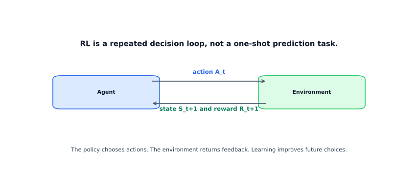
| Term | Meaning |
|---|---|
| Agent | Decision-maker |
| Environment | World the agent interacts with |
| State \(S_t\) | Current situation at time \(t\) |
| Action \(A_t\) | Choice made at time \(t\) |
| Reward \(R_{t+1}\) | Feedback after action |
| MDP | RL model with states, actions, rewards, transitions |
| Markov property | Next state depends only on current state + action |
| Return \(G_t\) | Discounted cumulative future reward |
\[ G_t = \sum_{k=0}^{\infty} \gamma^k R_{t+k+1} \]
Where: \(\gamma \in [0,1)\) = discount factor (how much future rewards are worth), \(R_{t+k+1}\) = reward at step \(t+k+1\).
Key: RL cares about discounted future reward, not just immediate payoff.
Tiny example:
\[ G_t = R_{t+1} + \gamma R_{t+2} + \gamma^2 R_{t+3} = 1 + 0.5(2) + 0.5^2(5) = 3.25 \]
Timing convention:
\[ S_t,\ A_t,\ R_{t+1},\ S_{t+1} \]
At each step:
Experience tuple:
\[ (s, a, r, s') \]
or shorthand
\[ [S_t, A_t, S_{t+1}] \]
Key: Reward is indexed \(R_{t+1}\) because it is the consequence of \((S_t, A_t)\).
Markov property:
\[ P(S_{t+1} \mid S_t, A_t, S_{t-1}, S_{t-2}, \dots) = P(S_{t+1} \mid S_t, A_t) \]
Key: In an MDP, history matters only through the current state representation.
Standard discounted return:
\[ G_t = R_{t+1} + \gamma R_{t+2} + \gamma^2 R_{t+3} + \cdots \]
Where: \(G_t\) = discounted return from step \(t\), \(\gamma \in [0,1)\) = discount factor.
| \(\gamma\) | Behavior |
|---|---|
| Close to \(0\) | Short-sighted; immediate rewards dominate |
| Close to \(1\) | Long-term focused |
| Approach | Idea | Limitation / Note |
|---|---|---|
| Brute force | Search all policies | Infeasible quickly |
| Policy gradients | Optimize policy directly | Common with neural nets |
| Value-function methods | Estimate value of states / actions, act greedily from values | Core RL family |
Robot navigation task:
| Component | Example |
|---|---|
| State \(S_t\) | room, battery level, hallway blocked/open |
| Action \(A_t\) | left, right, forward, wait |
| Reward \(R_{t+1}\) | \(+100\) goal, \(-1\) per step, \(-20\) obstacle |
Example step:
\[ S_t = \text{(room 2, low battery, hallway open)} \]
\[ A_t = \text{move forward} \]
\[ R_{t+1} = -1,\quad S_{t+1} = \text{(room 3, low battery, hallway open)} \]
Task types:
| Type | Examples |
|---|---|
| Episodic | chess, reaching a target |
| Continuous | trading, music selection |
Imagine you’re modeling how users move between pages on a website, or how weather evolves day to day. You could track the entire history — but that gets intractable fast. Markov chains offer a beautiful simplification: assume the future depends only on where you are now, not how you got here.
This “memoryless” assumption is unrealistic in the real world, but surprisingly powerful in practice. Markov chains underpin PageRank, recommendation engines, and reinforcement learning.
Key: A Markov chain models probabilistic state transitions; an MDP adds decisions.
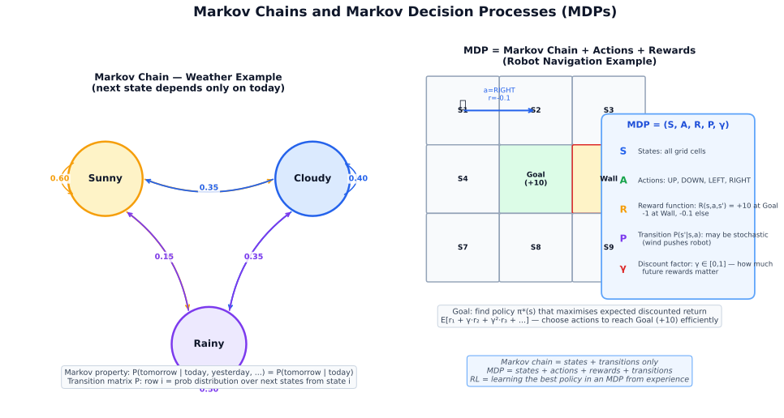
| Term | Meaning |
|---|---|
| Markov chain | Next-state distribution depends only on current state |
| Markov property | Future \(\perp\) past given present |
| 1st-order chain | Depends only on current state |
| 2nd-order chain | Depends on current + previous state |
| Transition matrix | Matrix of state-to-state probabilities |
| State vector | Current probability distribution over states |
| MDP | Markov chain + actions (+ rewards) |
Notation: \(X_t\) = state at time \(t\), \(P_{ij}\) = transition probability from state \(i\) to state \(j\), \(\pi_t\) = state distribution (row vector) at time \(t\), \(P\) = transition matrix.
\[ P(X_{t+1}\mid X_t, X_{t-1}, \dots, X_0)=P(X_{t+1}\mid X_t) \]
Transition matrix entry:
\[ P_{ij}=P(X_{t+1}=j\mid X_t=i) \]
Row-stochastic convention:
\[ \sum_j P_{ij}=1. \]
State distribution as row vector:
\[ \pi_t=\begin{bmatrix} P(X_t=1) & P(X_t=2) & \cdots & P(X_t=n) \end{bmatrix} \]
Update rules:
\[ \pi_{t+1}=\pi_t P \]
\[ \pi_t=\pi_0 P^t \]
\[ \pi_{t+n}=\pi_t P^n \]
RL version:
\[ S_{t+1} \perp \{S_{t-1}, S_{t-2}, \ldots\} \mid (a, S_t) \]
Key: In RL, action appears because next state depends on both current state and chosen action.
States: Mainland, Samui
\[ P= \begin{bmatrix} 0.6 & 0.4 \\ 0.3 & 0.7 \end{bmatrix} \]
Initial distribution:
\[ \pi_0= \begin{bmatrix} 1 & 0 \end{bmatrix} \]
After one step:
\[ \pi_1=\pi_0 P= \begin{bmatrix} 0.6 & 0.4 \end{bmatrix} \]
After two steps:
\[ P^2= \begin{bmatrix} 0.48 & 0.52 \\ 0.39 & 0.61 \end{bmatrix} \]
\[ \pi_2=\pi_0 P^2= \begin{bmatrix} 0.48 & 0.52 \end{bmatrix} \]
\[ (P^2)_{12}=0.52 \]
This section uses row-stochastic convention:
| Item | Meaning |
|---|---|
| Row \(i\) | current state |
| Column \(j\) | next state |
| \(P_{ij}\) | probability of \(i \to j\) |
| Row sum | must equal 1 |
| Update | \(\pi_{t+1}=\pi_t P\) |
Alternative convention: column-stochastic
\[ \pi_{t+1}=P\pi_t \]
Key: Most Markov-chain mistakes are row/column orientation mistakes.
| Idea | Summary |
|---|---|
| First-order | Standard Markov assumption |
| Second-order | More context, more complexity |
| Stationary distribution | \(\pi=\pi P\) |
| MDP | Markov chain + actions (+ rewards) |
General propagation view:
\[ \text{next state} = T \cdot \text{current state} \]
\[ \text{End State}_{N \times 1} = \text{Transition Probabilities}_{N \times N} \cdot \text{Initial State}_{N \times 1} \]
| Type | Depends on | Tradeoff |
|---|---|---|
| 1st-order | current state | simple, less context |
| 2nd-order | current + previous | richer, more parameters |
States:
Transition matrix:
\[ T = \begin{bmatrix} 0.2 & 0.6 & 0.2 \\ 0.1 & 0.6 & 0.3 \\ 0.2 & 0.7 & 0.1 \end{bmatrix} \]
\[ x = \begin{bmatrix} 1 \\ 0 \\ 0 \end{bmatrix} \]
States:
Workflow:
\[ x_1 = T x_0 \]
\[ x_2 = T^2 x_0 \]
\[ x_3 = T^3 x_0 \]
Examples of expanded states:
AA, AD, AG
DD, DA, DG
GG, GA, GD
Benefit: more context
Cost: many more states + sparse estimates
Key: If first-order fails, try richer state design before blindly increasing order.
\[ \text{next state} = T \cdot \text{current state} \]
The central question in RL: how good is it to be in a given state? Value functions answer this by estimating the expected long-term reward.
Key: Value functions let an agent plan ahead without simulating every future path.
The state value function \(V^\pi(s)\) is the expected return when starting in state \(s\) and following policy \(\pi\):
\[ V^\pi(s) = \mathbb{E}_\pi\left[ G_t \mid S_t = s \right] = \mathbb{E}_\pi\left[ \sum_{k=0}^{\infty} \gamma^k R_{t+k+1} \mid S_t = s \right] \]
Where: \(G_t\) = discounted return, \(\gamma\) = discount factor, \(\pi\) = policy being followed, \(R_{t+k+1}\) = reward at future step \(t+k+1\).
The action value function \(Q^\pi(s, a)\) is the expected return from state \(s\), taking action \(a\) first, then following policy \(\pi\):
\[ Q^\pi(s, a) = \mathbb{E}_\pi\left[ G_t \mid S_t = s, A_t = a \right] \]
| Function | Meaning |
|---|---|
| V(s) | How good is being in state s? |
| Q(s, a) | How good is taking action a in state s? |
The Bellman equations express value functions recursively — the value of a state is the immediate reward plus the discounted value of the next state:
Bellman equation for V:
\[ V^\pi(s) = \sum_a \pi(a \mid s) \sum_{s'} P(s' \mid s, a)\left[ R(s, a, s') + \gamma V^\pi(s') \right] \]
Bellman optimality equation:
\[ V^*(s) = \max_a \sum_{s'} P(s' \mid s, a)\left[ R(s, a, s') + \gamma V^*(s') \right] \]
Where: \(\pi(a \mid s)\) = action probability under policy \(\pi\), \(P(s' \mid s,a)\) = transition probability, \(R(s,a,s')\) = immediate reward.
\[ Q^*(s, a) = \sum_{s'} P(s' \mid s, a)\left[ R(s, a, s') + \gamma \max_{a'} Q^*(s', a') \right] \]
The optimal policy is simply:
\[ \pi^*(s) = \arg\max_a Q^*(s, a) \]
In model-free RL, we don’t know the transition probabilities \(P(s'\mid s,a)\). TD methods estimate value functions from experience:
TD(0) update:
\[ V(S_t) \leftarrow V(S_t) + \alpha \left[ \underbrace{R_{t+1} + \gamma V(S_{t+1})}_{\text{TD target}} - V(S_t) \right] \]
Where: \(\alpha\) = learning rate (step size), the bracketed term is the TD error.
The term in brackets is the TD error: how much the current estimate differs from the bootstrapped estimate.
These are the two most fundamental model-free, value-based RL algorithms.
Q-Learning learns the optimal action-value function \(Q^*\) directly, regardless of the current policy being followed:
\[ Q(S_t, A_t) \leftarrow Q(S_t, A_t) + \alpha \left[ R_{t+1} + \gamma \max_{a'} Q(S_{t+1}, a') - Q(S_t, A_t) \right] \]
Where: \(\alpha\) = learning rate, \(\gamma\) = discount factor, \(\max_{a'} Q(S_{t+1}, a')\) = best action-value in the next state (off-policy).
Why “off-policy”? Q-learning uses the maximum Q-value of the next state (greedy), regardless of what action the agent actually took. It learns the optimal policy even while exploring.
import numpy as np
# Q-Learning for a simple grid world
n_states, n_actions = 16, 4
Q = np.zeros((n_states, n_actions))
alpha, gamma, epsilon = 0.1, 0.99, 0.1
for episode in range(1000):
state = env.reset()
done = False
while not done:
# ε-greedy action selection
if np.random.rand() < epsilon:
action = env.action_space.sample() # explore
else:
action = np.argmax(Q[state]) # exploit
next_state, reward, done, _ = env.step(action)
# Q-learning update
td_target = reward + gamma * np.max(Q[next_state]) * (1 - done)
td_error = td_target - Q[state, action]
Q[state, action] += alpha * td_error
state = next_stateSARSA is the on-policy counterpart to Q-learning. It updates Q using the action actually taken in the next step, not the greedy best action:
\[ Q(S_t, A_t) \leftarrow Q(S_t, A_t) + \alpha \left[ R_{t+1} + \gamma Q(S_{t+1}, A_{t+1}) - Q(S_t, A_t) \right] \]
Where: \(\alpha\) = learning rate, \(\gamma\) = discount factor, \(R_{t+1}\) = reward after taking action \(A_t\), \(A_{t+1}\) = the action actually taken in the next state (on-policy).
Name: State, Action, Reward, State, Action — the tuple used in each update.
import numpy as np
# SARSA for the same grid world
n_states, n_actions = 16, 4
Q = np.zeros((n_states, n_actions))
alpha, gamma, epsilon = 0.1, 0.99, 0.1
def eps_greedy(state):
if np.random.rand() < epsilon:
return env.action_space.sample()
return np.argmax(Q[state])
for episode in range(1000):
state = env.reset()
action = eps_greedy(state) # choose A before the loop
done = False
while not done:
next_state, reward, done, _ = env.step(action)
next_action = eps_greedy(next_state) # choose A' (on-policy)
# SARSA update — uses Q(S', A') not max Q(S', ·)
td_target = reward + gamma * Q[next_state, next_action] * (1 - done)
td_error = td_target - Q[state, action]
Q[state, action] += alpha * td_error
state = next_state
action = next_action # carry A' forward| Q-learning: Q(S,A) ← . + γ · max_a Q(S', a) | ← greedy (off-policy) | |
| SARSA: | Q(S,A) ← . + γ · Q(S', A') | ← actual action taken (on-policy) |
| Q-Learning | SARSA | |
|---|---|---|
| Policy type | Off-policy | On-policy |
| Next-state value | max Q(S’, a) | Q(S’, A’) — actual action |
| Risk of exploration | More aggressive | More conservative |
| Best when | Optimal policy is goal | Safe behavior during learning matters |
| Cliff walking analogy | Falls off cliff while learning | Stays away from cliff |
For large or continuous state spaces, use a neural network to approximate Q:
# DQN pseudocode structure
class DQN(nn.Module):
def __init__(self, state_dim, n_actions):
super().__init__()
self.net = nn.Sequential(
nn.Linear(state_dim, 128), nn.ReLU(),
nn.Linear(128, 128), nn.ReLU(),
nn.Linear(128, n_actions)
)
def forward(self, x):
return self.net(x) # returns Q(s, a) for all a
# Key DQN training loop:
# 1. Sample (s, a, r, s', done) from replay buffer
# 2. target = r + γ · max_a Q_target(s', a) · (1 - done)
# 3. loss = MSE(Q_online(s, a), target)
# 4. Update Q_online; periodically copy to Q_targetValue-based methods (Q-learning) represent the policy indirectly through Q-values. Policy gradient methods directly parameterize and optimize the policy:
\[ \pi_\theta(a \mid s) = P(\text{take action } a \mid \text{state } s; \theta) \]
Key: Policy gradients optimize the policy directly — useful when the action space is continuous or high-dimensional.
We want to maximize expected return \(J(\theta) = \mathbb{E}_{\tau \sim \pi_\theta}[G(\tau)]\). The gradient is:
\[ \nabla_\theta J(\theta) = \mathbb{E}_{\pi_\theta}\left[ \nabla_\theta \log \pi_\theta(A_t \mid S_t) \cdot G_t \right] \]
Where: \(\nabla_\theta\) = gradient w.r.t. policy parameters \(\theta\), \(\log \pi_\theta(A_t \mid S_t)\) = log-probability of the action taken (score function), \(G_t\) = return from step \(t\).
Intuition: If an action led to high return, increase its probability. If it led to low return, decrease it. The \(\log \pi\) term is the “score function” — how sensitive the log-probability is to \(\theta\).
Problem: High variance because returns are sampled from full trajectories. Fix: Subtract a baseline (often the value function \(V(s)\)):
\[ \nabla_\theta J(\theta) \approx \nabla_\theta \log \pi_\theta(A_t \mid S_t) \cdot \underbrace{(G_t - V(S_t))}_{\text{advantage } A_t} \]
Key: REINFORCE proves the concept but suffers from high variance. The fix? Combine the policy with a value function — that’s Actor-Critic, covered in Section 12.6.
REINFORCE works in principle, but its gradients are noisy — one lucky trajectory can mislead the update. Modern RL fixes this by splitting the work into two cooperating networks and adding stability tricks. This section traces the path from Actor-Critic to PPO and then to the RLHF / DPO pipelines behind today’s LLMs.
Instead of waiting for a full episode (REINFORCE), use two networks:
| Component | What it does | Analogy |
|---|---|---|
| Actor πθ | Picks actions (the policy) | A chef deciding what to cook |
| Critic Vφ | Rates how good the situation is | A food critic scoring each dish |
The advantage tells the actor whether an action was better or worse than expected:
\[ A(s_t, a_t) = \underbrace{r_{t+1} + \gamma V_\phi(s_{t+1})}_{\text{what actually happened}} - \underbrace{V_\phi(s_t)}_{\text{what was expected}} \]
Where: Positive advantage = “better than expected” → increase that action’s probability. Negative = “worse than expected” → decrease it.
Vanilla policy gradient can make huge jumps that destroy a good policy. PPO’s key insight: clip the update so the new policy can’t stray too far from the old one.
\[ L^{\text{CLIP}}(\theta) = \mathbb{E}_t\left[\min\left(r_t(\theta) \hat{A}_t,\ \text{clip}(r_t(\theta), 1-\epsilon, 1+\epsilon)\hat{A}_t\right)\right] \]
Where: \(r_t(\theta) = \pi_\theta(a_t|s_t) / \pi_{\theta_\text{old}}(a_t|s_t)\) is the probability ratio (how much the policy changed), \(\hat{A}_t\) is the estimated advantage, and \(\epsilon \approx 0.1\text{--}0.2\) is the clipping range.
Why PPO dominates in practice:
The biggest recent impact of RL on the real world isn’t game-playing — it’s making language models helpful, harmless, and honest.
RLHF (Reinforcement Learning from Human Feedback) frames language generation as an RL problem:
| RL Concept | RLHF Mapping |
|---|---|
| Agent | The language model |
| Environment | The user prompt |
| Action | Generating each token |
| Reward | Score from a learned reward model (trained on human preferences) |
| Policy constraint | KL penalty keeps the model close to SFT baseline (prevents reward hacking) |
DPO (Direct Preference Optimization) asks: why train a separate reward model and then run PPO, when you can learn from preferences directly? DPO reformulates the RLHF objective as a supervised loss on preference pairs — simpler, more stable, and increasingly popular.
Key: RLHF uses PPO to steer a language model toward human-preferred responses. DPO achieves the same goal without the RL loop — it optimizes preference data directly. Both are central to modern AI alignment. (See also Chapter 11.7 for the NLP perspective.)
| Method | Best for | Watch out |
|---|---|---|
| REINFORCE | Textbook learning, small problems | High variance, slow convergence |
| A2C / A3C | Parallel environments, research | Sensitive to hyperparameters |
| PPO | General-purpose default, RLHF | Still on-policy (needs fresh data) |
| DPO | LLM alignment when you have preference data | Needs good SFT base & quality preference pairs |
A core tension in RL: exploit what you know (take actions with high estimated value) vs explore to discover better options.
Key: Too much exploitation → get stuck in local optimum. Too much exploration → waste time on known-bad actions.
A simplified RL setting with no state transitions — just pick which action (arm) to pull each round to maximize cumulative reward:
| Strategy | How it works | When to use |
|---|---|---|
| ε-greedy | With prob ε, explore randomly; otherwise exploit | Simple default |
| Decaying ε | Start ε=1.0, anneal to 0.01 over time | When you want to shift from explore to exploit |
| UCB (Upper Confidence Bound) | Pick arm with highest upper confidence bound | Principled exploration; good for bandits |
| Thompson Sampling | Sample from posterior belief, pick best sample | Bayesian; strong in practice |
| Boltzmann (Softmax) | Sample proportional to exp(Q/τ) | Smooth probabilistic exploration |
UCB1 formula:
\[ a^* = \arg\max_a \left[ \hat{\mu}_a + c\sqrt{\frac{\ln t}{n_a}} \right] \]
where \(\hat{\mu}_a\) is the estimated reward, \(n_a\) is how many times arm \(a\) was pulled, and \(t\) is the total pulls so far. The second term is an exploration bonus for less-tried arms.
import numpy as np
class UCB1Bandit:
def __init__(self, n_arms, c=2.0):
self.n_arms = n_arms
self.counts = np.zeros(n_arms) # pulls per arm
self.values = np.zeros(n_arms) # estimated mean reward
self.c = c
self.t = 0
def select_arm(self):
self.t += 1
# Pull each arm once first
unpulled = np.where(self.counts == 0)[0]
if len(unpulled) > 0:
return unpulled[0]
# UCB selection
ucb = self.values + self.c * np.sqrt(np.log(self.t) / self.counts)
return np.argmax(ucb)
def update(self, arm, reward):
self.counts[arm] += 1
n = self.counts[arm]
self.values[arm] += (reward - self.values[arm]) / n # running meanFor complex environments with neural network function approximators:
| Technique | Idea |
|---|---|
| ε-greedy with decay | Standard baseline |
| Entropy regularization | Add bonus to policy loss for high-entropy actions (PPO, SAC) |
| Curiosity-driven | Intrinsic reward for visiting novel states (ICM) |
| Parameter noise | Add noise to network weights rather than actions |
A. Reinforcement learning has five core elements: (1) Agent — the learner and decision-maker. (2) Environment — everything the agent interacts with; returns next state and reward. (3) State (s) — the current situation; ideally Markov (future depends only on current state, not history). (4) Action (a) — what the agent can do (discrete or continuous). (5) Reward (r) — scalar feedback signal. The agent’s goal is to learn a policy π(a|s) that maximizes expected cumulative (discounted) reward: E[∑ γtrt]. γ ∈ [0,1] is the discount factor — low γ makes the agent myopic (short-term); high γ makes it far-sighted.
A. Model-free RL learns a policy or value function directly from interactions without knowing the environment dynamics P(s’|s,a). Examples: Q-learning, SARSA, PPO, SAC. Advantages: simpler, works when the environment is complex or unknown. Disadvantage: requires many interactions (sample-inefficient). Model-based RL learns or uses a model of the environment transitions and uses it to plan (e.g., Dyna-Q, MuZero, AlphaZero). Advantages: vastly more sample-efficient — the model can generate synthetic rollouts. Disadvantage: model errors compound; a wrong model leads to suboptimal or unsafe policies. Use model-based when interactions are expensive (robotics, drug discovery); model-free when fast simulation is available (game environments).
A. Q-learning estimates Q(s, a) — the expected discounted return starting from state s, taking action a, then following the optimal policy. The Bellman optimality equation defines the optimal Q-function:
Q*(s, a) = E[r + γ · maxa’ Q*(s’, a’)]
Q-learning iteratively updates using bootstrapped estimates: Q(s,a) ← Q(s,a) + α[r + γ·maxa’Q(s’,a’) − Q(s,a)]. It is off-policy — the update uses max over actions regardless of the exploration policy used. Convergence to Q* is guaranteed under tabular conditions; DQN uses a neural network approximator for continuous/large state spaces.
A. Policy gradient methods directly optimise the expected return J(θ) = Eπθ[∑γtrt] w.r.t. policy parameters θ. The policy gradient theorem gives: ∇θJ(θ) = E[∇θ log πθ(a|s) · Q(s,a)]. REINFORCE (Monte Carlo policy gradient): run a full episode; compute returns Gt; update: θ ← θ + α∑t∇ log πθ(at|st) · Gt. The gradient pushes up log-probabilities of actions that led to high returns. High variance is the main problem; mitigated by subtracting a baseline (e.g., value function) to get the advantage A(s,a) = Q(s,a) − V(s), giving Actor-Critic methods.
A. Proximal Policy Optimization (PPO) is a policy gradient algorithm that constrains how much the policy can change in one update step, preventing destructive large updates that collapse training. The clipped objective is: LCLIP = E[min(rt·At, clip(rt, 1−ε, 1+ε)·At)] where rt = πnew/πold is the probability ratio and ε≈0.2. The clip removes incentive to push rt outside [1−ε, 1+ε]. Why popular: (1) On-policy with data reuse — multiple gradient steps per collected batch. (2) Simple to implement. (3) Robust hyperparameters. (4) Used in RLHF (ChatGPT, Claude training). Combines actor (policy) and critic (value function) updates.
A. The agent must balance exploiting actions known to yield high reward vs. exploring potentially better unknown actions. If it only exploits, it may get stuck in a local optimum; pure exploration wastes reward. Three strategies: (1) ε-greedy: with probability ε take a random action; otherwise take the greedy action. Simple, effective, but wastes exploration budget on uniformly random actions. (2) UCB (Upper Confidence Bound): select action with highest Q(s,a) + c√(log t / N(s,a)); bonus rewards less-tried actions. Principled exploration. (3) Intrinsic motivation / curiosity: add an intrinsic reward for visiting novel or surprising states (e.g., Random Network Distillation); powerful for sparse-reward environments.
A. When an agent receives a reward (positive or negative), it must determine which past actions caused it — especially when rewards are sparse and delayed. Example: in a chess game, the agent only learns it lost after 50 moves; which moves were responsible? Temporal credit assignment is hard because the reward signal is mixed with the effects of many actions. Solutions: (1) Eligibility traces (λ-returns, TD(λ)): intermediate between one-step TD (no credit to past) and Monte Carlo (full-episode credit); spread credit exponentially across recent transitions. (2) Advantage estimation: focus on whether an action was better or worse than average. (3) Reward shaping: add dense intermediate rewards aligned with the goal to reduce sparsity.
A.
| Use RL when | Use Supervised Learning when |
|---|---|
| No labeled (state, optimal action) pairs exist; only reward feedback | You have expert demonstrations and can label optimal actions |
| The agent’s actions affect future states (sequential decision-making) | Decisions are independent (i.i.d. inputs) |
| The environment is interactive (simulation, robotics, game) | Data is passively collected and fixed |
| Delayed, sparse rewards are acceptable | Immediate, dense labels are available |
Imitation learning bridges both: learn from demonstrations (SL) then refine with RL signals.
A. On-policy: learn the value of the policy currently being used for decisions. Must collect fresh data with the current policy after every update; data from old policies is discarded. Examples: SARSA, PPO. More stable but sample-inefficient. Off-policy: learn the value of a different (typically greedy/optimal) policy than the one used for exploration. Can reuse old transitions from a replay buffer. Examples: Q-learning, DQN, SAC. More sample-efficient but can be unstable (deadly triad of off-policy + function approximation + bootstrapping). DQN mitigates this with a target network (slow-updated copy) and experience replay to decorrelate samples.
A. The dominant approach is RLHF (Reinforcement Learning from Human Feedback) with PPO as the RL algorithm. The “environment” is the user prompt; the “action” is generating the next token; the “reward” comes from a learned reward model trained on human preference comparisons. PPO updates the language model to generate responses that score higher on the reward model, while a KL divergence penalty prevents the policy from deviating too far from the SFT baseline (preventing reward hacking). More recently, DPO (Direct Preference Optimization) removes the RL training loop entirely, reformulating preference learning as a supervised objective directly on the LLM — simpler and more stable than PPO for alignment.
Tabular ML treats each row as independent. Time series breaks that assumption — the order matters, and yesterday’s value is often the best predictor of today’s.
Time series forecasting shows up everywhere: demand planning, financial markets, energy grids, staffing, inventory. The core challenge is that you must predict the future without using it during training — a constraint that changes how you split data, engineer features, and evaluate models. This chapter builds from classical decomposition and ARIMA through modern ML and deep learning approaches, ending with production-grade forecasting systems.
Goal: predict future values from ordered history, with optional external signals like weather, holidays, or promotions.

Key: Forecasting = predict future from ordered history, not i.i.d. samples.
What you will learn:
| Section | Topic |
|---|---|
| 13.1 | Time series fundamentals: decomposition, stationarity, ACF/PACF |
| 13.2 | Classical models: ARIMA, SARIMA |
| 13.3 | Prophet: trend, seasonality, holidays |
| 13.4 | Feature engineering for ML-based forecasting |
| 13.5 | ML models: LightGBM and XGBoost for time series |
| 13.6 | Deep learning: LSTM, N-BEATS, TFT |
| 13.7 | Evaluation: metrics and walk-forward validation |
| 13.8 | Production: feature stores, monitoring, hierarchical forecasting |
| 13.9 | Case study: energy and supply chain forecasting |
Prerequisites: Regression (Chapter 5), feature engineering (Chapter 4), basic probability and distributions (Chapter 1).
Time series = ordered observations, usually not i.i.d. Nearby points are statistically dependent; shuffling destroys signal.
Every observed time series can be decomposed into three components:

Additive model — seasonal amplitude is constant: \[y_t = T_t + S_t + e_t\]
Where: \(T_t\) = trend (long-run direction), \(S_t\) = seasonal component (periodic pattern), \(e_t\) = residual (noise).
Multiplicative model — seasonal amplitude grows with the level: \[y_t = T_t \times S_t \times e_t\]
Key: Use additive when seasonal swings are roughly constant in size. Use multiplicative when they scale with the series level (common in sales and economic data).
Classical models require the series to be stationary — stable statistical properties over time.
Weak stationarity requires:
What breaks stationarity:
Common fixes:
Key: Make the series only as stationary as the model requires. Over-differencing throws away useful signal.

Autocorrelation measures the relationship between \(y_t\) and its lagged values \(y_{t-k}\).
| Tool | What it measures | Typical use |
|---|---|---|
| ACF | Correlation at each lag, including indirect effects | Detect persistence, seasonality |
| PACF | Lag-\(k\) correlation after removing effects of shorter lags | Identify AR order for ARIMA |
ACF/PACF heuristics for ARIMA:
| Pattern | Suggests |
|---|---|
| ACF cuts off at lag \(q\), PACF decays gradually | MA(\(q\)) |
| ACF decays gradually, PACF cuts off at lag \(p\) | AR(\(p\)) |
| Both decay gradually | ARMA |
| Frequency | Examples |
|---|---|
| Yearly, quarterly | GDP, annual sales |
| Monthly | Subscriptions, billing |
| Weekly, daily | Retail demand, web traffic |
| Hourly, sub-hourly | Energy consumption, IoT sensors |
Finer granularity can expose multiple seasonalities — hour-of-day and day-of-week for example — which simpler models may struggle to capture.
Before fitting any model, establish a naive baseline:
| Baseline | Formula | When it works |
|---|---|---|
| Naive | \(\hat{y}_{t+1} = y_t\) | Random walk series |
| Seasonal naive | \(\hat{y}_t = y_{t-s}\) | Strong fixed seasonality |
| Moving average | Mean of last \(k\) periods | Smooth trend |
| Exponential smoothing | Weighted mean, recency-weighted | Gradual trend |
Key: If your model cannot beat seasonal naive, it is adding no value over guessing last year’s same period.
Never use random train-test splits for time series. The test set must come after the training set chronologically.
| Setup | Predicts | Main challenge |
|---|---|---|
| One-step-ahead | \(y_{t+1}\) | Simplest; errors do not accumulate |
| Multi-step | \(y_{t+1}, \dots, y_{t+h}\) | Error accumulation, horizon degradation |
| Univariate | Target history only | Misses external drivers |
| Multivariate / exogenous | Target + related variables | Feature alignment, future availability |

Classical forecasting models for series driven by past values, differencing, and correlated errors.
\[\text{ARIMA}(p, d, q)\]
| Component | Stands for | Role |
|---|---|---|
| AR | AutoRegressive | Uses past values \(y_{t-1}, \dots, y_{t-p}\) |
| I | Integrated | Differencing order \(d\) to achieve stationarity |
| MA | Moving Average | Uses past forecast errors \(\epsilon_{t-1}, \dots, \epsilon_{t-q}\) |
AR component: \[y_t = c + \phi_1 y_{t-1} + \phi_2 y_{t-2} + \dots + \phi_p y_{t-p} + \epsilon_t\]
Where: \(c\) = constant, \(\phi_1, \dots, \phi_p\) = AR coefficients, \(\epsilon_t\) = white noise error term.
MA component: \[y_t = c + \epsilon_t + \theta_1 \epsilon_{t-1} + \dots + \theta_q \epsilon_{t-q}\]
Where: \(\theta_1, \dots, \theta_q\) = MA coefficients (weights on past forecast errors).
The MA component uses past forecast errors, not a simple rolling average.
First differencing: \[y'_t = y_t - y_{t-1}\]
Second differencing: \[y''_t = y'_t - y'_{t-1}\]
\[\text{SARIMA}(p, d, q)(P, D, Q)_s\]
The seasonal part adds:
Seasonal differencing: \[y'_t = y_t - y_{t-s}\]
Key: SARIMA = ARIMA + explicit seasonal AR/MA/differencing at period \(s\).
Adding exogenous regressors: holidays, weather, promotions, price changes, macro signals. These are variables the model uses as inputs alongside the target’s own history.
| Strengths | Limitations |
|---|---|
| Interpretable coefficients | Assumes stable dynamics |
| Strong statistical baseline | Struggles with multiple seasonalities |
| Works with small to medium data | Order selection is fiddly |
| Confidence intervals built in | Weak on strong nonlinearities |
| Simple per-series fitting | One series at a time; not designed for global cross-series models |
from statsmodels.tsa.statespace.sarimax import SARIMAX
# y: pandas Series with DatetimeIndex
train = y.iloc[:-30]
test = y.iloc[-30:]
model = SARIMAX(train, order=(1,1,1), seasonal_order=(1,1,1,7))
fit = model.fit(disp=False)
forecast = fit.forecast(steps=len(test))
Prophet (Meta, 2017) is a forecasting library designed for business time series. It decomposes the signal into trend, seasonality, and holiday effects using an additive model.
\[y(t) = g(t) + s(t) + h(t) + \epsilon_t\]
| Component | Meaning |
|---|---|
| \(g(t)\) | Trend — long-run direction |
| \(s(t)\) | Seasonality — Fourier series representation |
| \(h(t)\) | Holiday/event effects — user-specified dates |
| \(\epsilon_t\) | Random error |
Key: Prophet = interpretable additive decomposition for calendar-driven forecasting.
Prophet automatically detects changepoints — moments where the trend rate shifts. You can control how many changepoints it considers and how flexible it is.
Two trend modes:
Prophet uses Fourier series to represent seasonality:
You pass in a DataFrame of known dates (public holidays, sale events, product launches) and Prophet learns a separate effect for each.
from prophet import Prophet
import pandas as pd
# DataFrame must have columns ds (date) and y (value)
df = pd.DataFrame({"ds": y.index, "y": y.values})
train = df.iloc[:-30]
model = Prophet()
model.fit(train)
future = model.make_future_dataframe(periods=30)
forecast = model.predict(future)
print(forecast[["ds", "yhat", "yhat_lower", "yhat_upper"]].tail())| Good fit | Poor fit |
|---|---|
| Strong calendar/seasonal structure | High-frequency noisy data |
| Trend changes over time | Strong short-lag autocorrelation dominates |
| Known holiday dates matter | Joint modeling across many series |
| Quick, interpretable baseline needed | Strict statistical inference required |
Key: Use Prophet when known calendar dates cause repeatable spikes or drops. For series dominated by short-lag autocorrelation, AR-based models usually win.
The core idea: convert time series forecasting into a standard supervised regression problem by creating time-based features.
Key: Every feature must use only information available at prediction time. The most common bug in time series ML is inadvertent leakage.
Lag features let the model explicitly use past values:
df["lag_1"] = df["y"].shift(1)
df["lag_7"] = df["y"].shift(7)
df["lag_14"] = df["y"].shift(14)
df["lag_28"] = df["y"].shift(28)Pick lags that match the natural rhythms of the series — if you have weekly data, \(t-7\) is often the most useful single feature.
Rolling and expanding summaries capture recent trend and variance:
# Shift by 1 before rolling to avoid using current value
df["roll_mean_7"] = df["y"].shift(1).rolling(7).mean()
df["roll_std_7"] = df["y"].shift(1).rolling(7).std()
df["roll_mean_28"] = df["y"].shift(1).rolling(28).mean()
df["roll_max_7"] = df["y"].shift(1).rolling(7).max()The .shift(1) before .rolling() is critical
— it prevents the current value from appearing in its own feature.
df["dayofweek"] = df.index.dayofweek
df["month"] = df.index.month
df["quarter"] = df.index.quarter
df["is_weekend"] = (df.index.dayofweek >= 5).astype(int)
df["is_month_end"] = df.index.is_month_end.astype(int)For cyclic variables like day-of-week and month, encode with sine and cosine to preserve the circular structure:
\[x_{\sin} = \sin\!\left(\frac{2\pi x}{P}\right), \quad x_{\cos} = \cos\!\left(\frac{2\pi x}{P}\right)\]
Where: \(x\) = raw feature value (e.g., day of week 0–6), \(P\) = period of the cycle (e.g., 7 for weekly, 12 for monthly).
External signals that can improve forecasts:
Rule: use exogenous inputs only if they are known at forecast time, or if you can reliably forecast them separately.
import pandas as pd
import numpy as np
def make_ts_features(df, target="y", lags=[1, 7, 14, 28],
rolls=[7, 28], horizon=1):
"""
Convert time series DataFrame to supervised feature matrix.
df: DataFrame with DatetimeIndex, column 'y'.
Returns feature matrix without leakage.
"""
feat = pd.DataFrame(index=df.index)
feat["y"] = df[target]
# Lag features
for lag in lags:
feat[f"lag_{lag}"] = df[target].shift(lag + horizon - 1)
# Rolling statistics
for w in rolls:
shifted = df[target].shift(horizon)
feat[f"roll_mean_{w}"] = shifted.rolling(w).mean()
feat[f"roll_std_{w}"] = shifted.rolling(w).std()
feat[f"roll_max_{w}"] = shifted.rolling(w).max()
feat[f"roll_min_{w}"] = shifted.rolling(w).min()
# Calendar features
feat["dayofweek"] = df.index.dayofweek
feat["month"] = df.index.month
feat["quarter"] = df.index.quarter
feat["dayofmonth"] = df.index.day
feat["is_weekend"] = (df.index.dayofweek >= 5).astype(int)
feat["expanding_mean"] = df[target].shift(horizon).expanding().mean()
return feat.dropna()| Strategy | How | Pros | Cons |
|---|---|---|---|
| Recursive | One model, predict 1 step, feed back as lag | Simple | Error accumulation |
| Direct | One model per horizon step | Stable at long horizons | Many models to maintain |
| Multi-output | One model predicts all horizons jointly | Captures horizon dependence | More complex |
| DirRec | Hybrid of direct and recursive | Compromise | More setup |
Classical ARIMA fits one series at a time. When you have hundreds or thousands of series, a global ML model — one LightGBM trained on all series simultaneously — often outperforms per-series ARIMA.
Instead of treating forecasting as a time series problem, treat it as supervised regression:
| Date | y | lag_1 | lag_7 | roll_mean_28 | month | is_holiday |
|---|---|---|---|---|---|---|
| 2024-01-08 | 142 | 138 | 135 | 136.4 | 1 | 0 |
| 2024-01-09 | 149 | 142 | 141 | 137.1 | 1 | 0 |
| 2024-01-10 | 155 | 149 | 148 | 138.0 | 1 | 0 |
Standard k-fold cross-validation leaks future information. Use walk-forward (expanding window) validation instead:
import lightgbm as lgb
import numpy as np
from sklearn.metrics import mean_absolute_error
def walk_forward_validate(X, y, n_splits=5, horizon=7):
"""
Walk-forward validation for time series.
Each fold trains on all past data and validates on the next horizon.
"""
n = len(X)
fold_size = n // (n_splits + 1)
scores = []
for fold in range(n_splits):
train_end = fold_size * (fold + 1)
val_end = min(train_end + horizon, n)
X_tr, y_tr = X.iloc[:train_end], y.iloc[:train_end]
X_val, y_val = X.iloc[train_end:val_end], y.iloc[train_end:val_end]
model = lgb.LGBMRegressor(
n_estimators=500,
learning_rate=0.05,
num_leaves=31,
min_child_samples=20,
random_state=42,
n_jobs=-1,
)
model.fit(
X_tr, y_tr,
eval_set=[(X_val, y_val)],
callbacks=[lgb.early_stopping(50, verbose=False)],
)
preds = model.predict(X_val)
mae = mean_absolute_error(y_val, preds)
mape = np.mean(np.abs((y_val - preds) / (np.abs(y_val) + 1e-8))) * 100
scores.append({"fold": fold + 1, "mae": mae, "mape": mape})
print(f"Fold {fold + 1}: MAE={mae:.2f}, MAPE={mape:.1f}%")
return scores
results = walk_forward_validate(X, y, n_splits=5, horizon=28)
| Aspect | ARIMA/SARIMA | LightGBM + features |
|---|---|---|
| Series count | One at a time | All series simultaneously |
| Exogenous variables | Limited | Unlimited (price, weather, etc.) |
| Nonlinear effects | No | Yes |
| Feature engineering | Automatic (lags, diff) | Manual but powerful |
| Hierarchical forecasting | Hard | Easy (add group features) |
| Training speed | Slow (per series) | Fast (one model) |
| Interpretability | Coefficients | SHAP values |
Key: For large-scale forecasting across many series, start with LightGBM plus good lag features. Use ARIMA when you need a single series with statistical confidence intervals.
Deep learning for time series makes sense when:
For most business forecasting with limited data, LightGBM with good feature engineering is better. Always establish classical and boosting baselines before going deep.
LSTM (Long Short-Term Memory) processes sequences one step at a time while maintaining a hidden state that can carry information across long spans.
GRU (Gated Recurrent Unit) is a simpler alternative with fewer parameters that often performs comparably to LSTM.
import torch
import torch.nn as nn
class LSTMForecaster(nn.Module):
def __init__(self, input_size, hidden_size=64, num_layers=2,
horizon=7, dropout=0.2):
super().__init__()
self.lstm = nn.LSTM(
input_size=input_size,
hidden_size=hidden_size,
num_layers=num_layers,
batch_first=True,
dropout=dropout if num_layers > 1 else 0,
)
self.fc = nn.Linear(hidden_size, horizon)
self.dropout = nn.Dropout(dropout)
def forward(self, x):
# x: (batch, seq_len, features)
lstm_out, _ = self.lstm(x)
last = lstm_out[:, -1, :] # take last timestep output
return self.fc(self.dropout(last))
model = LSTMForecaster(input_size=len(feature_cols), horizon=7)
optimizer = torch.optim.Adam(model.parameters(), lr=1e-3)
criterion = nn.HuberLoss() # more robust than MSE for forecastingN-BEATS (Neural Basis Expansion Analysis) is a purely feed-forward neural network designed specifically for univariate forecasting. No recurrence, no convolutions.
N-BEATS achieved state-of-the-art results on the M4 forecasting benchmark. It is a strong default for univariate series.
from neuralforecast import NeuralForecast
from neuralforecast.models import NBEATS, NHITS
nf = NeuralForecast(
models=[
NBEATS(input_size=28, h=7, max_steps=500),
NHITS(input_size=28, h=7, max_steps=500), # faster variant
],
freq="D",
)
nf.fit(df) # df with columns: unique_id, ds, y
forecasts = nf.predict()TFT combines attention mechanisms with gating to handle:
| Input type | Examples | Behaviour |
|---|---|---|
| Static features | store_id, region | constant over time |
| Historical inputs | past sales, past prices | observed up to t |
| Future inputs | holiday flag, planned promo | known in advance |
| Model | Data needed | Multivariate? | Future covariates? |
|---|---|---|---|
| LSTM / GRU | Medium | Yes | With careful feature design |
| N-BEATS | Medium-large | Univariate | No |
| N-HiTS | Medium | Univariate | No |
| TFT | Large | Yes | Yes |
| PatchTST | Very large | Yes | Limited |
Key: For most business problems, LightGBM + lag features beats all of these unless you have 10,000+ timesteps per series. Always establish baselines first.
Forecast evaluation must preserve time order and reflect the business cost of errors.
In all formulas below: \(y_i\) = actual value, \(\hat{y}_i\) = forecast, \(\bar{y}\) = mean of actuals, \(n\) = number of forecast points.
Mean Absolute Error (MAE) — average miss in original units, robust to outliers: \[\text{MAE} = \frac{1}{n}\sum_{i=1}^{n} |y_i - \hat{y}_i|\]
Root Mean Squared Error (RMSE) — penalizes large errors more: \[\text{RMSE} = \sqrt{\frac{1}{n}\sum_{i=1}^{n}(y_i - \hat{y}_i)^2}\]
Mean Absolute Percentage Error (MAPE) — relative error in percent: \[\text{MAPE} = \frac{100}{n}\sum_{i=1}^{n} \left|\frac{y_i - \hat{y}_i}{y_i}\right|\]
Unstable when \(y_i \approx 0\) — avoid for sparse or intermittent demand.
Symmetric MAPE (sMAPE): \[\text{sMAPE} = \frac{100}{n}\sum_{i=1}^{n} \frac{2|y_i - \hat{y}_i|}{|y_i| + |\hat{y}_i|}\]
Mean Absolute Scaled Error (MASE) — scale-free, benchmarked against naive: \[\text{MASE} = \frac{\frac{1}{n}\sum_{i=1}^{n}|y_i - \hat{y}_i|}{\frac{1}{n-s}\sum_{t=s+1}^{n}|y_t - y_{t-s}|}\]
Where: \(s\) = seasonal period (e.g., 7 for daily/weekly, 12 for monthly/yearly); the denominator is the MAE of the seasonal naive forecast on training data.
MASE < 1 means your model beats seasonal naive. MASE > 1 means seasonal naive is better — go back to basics.
import numpy as np
def mape(y_true, y_pred, eps=1e-8):
return np.mean(np.abs((y_true - y_pred) / (np.abs(y_true) + eps))) * 100
def smape(y_true, y_pred):
num = 2 * np.abs(y_true - y_pred)
den = np.abs(y_true) + np.abs(y_pred) + 1e-8
return np.mean(num / den) * 100
def mase(y_true, y_pred, y_train, seasonality=1):
mae_pred = np.mean(np.abs(y_true - y_pred))
naive_err = np.abs(y_train[seasonality:] - y_train[:-seasonality])
mae_naive = np.mean(naive_err)
return mae_pred / (mae_naive + 1e-8)| Metric | Prefer when | Avoid when |
|---|---|---|
| MAE | Interpretable miss in original units | Large errors matter most |
| RMSE | Large misses are costly | Outliers in the test set |
| MAPE | Business-friendly percentage | Values near zero |
| sMAPE | Symmetric percentage comparison | Awkward behaviors remain |
| MASE | Comparing accuracy across many series | Comparing a single series |
Key: Pick the metric that matches decision cost, not statistical convenience.
| ────────────────────── Time ──────────────────────────────────► | |
| Holdout split | |
| [ Train Train Train Train Train | Validation | Test ] | |
| Walk-forward (expanding window) | |
| [ Train | Val ] | |
| [ Train Train | Val ] | |
| [ Train Train Train | Val ] | |
| [ Train Train Train Train | Val ] | |
| Sliding window | |
| [ Train Train | Val ] | |
| [ Train Train | Val ] | |
| [ Train Train | Val ] |
Walk-forward validation is the most realistic — it mimics how the model would actually be used in production.
Forecast accuracy usually degrades as the horizon increases. Always report error at each horizon, not just an aggregate.
A strong 1-step forecast does not guarantee a strong 14-step forecast.
The biggest source of train-serve skew in time series is inconsistent feature computation — different code for offline training and online serving.
Key: Use the same feature computation code for training and serving. Any divergence is a source of degraded production accuracy.
Time series models degrade when the world changes: new products, seasonality shifts, regime changes.
def monitor_forecast_accuracy(predictions, actuals, window=28, alert_mape=15.0):
recent_mape = mape(actuals[-window:], predictions[-window:])
if recent_mape > alert_mape:
print(f"ALERT: MAPE = {recent_mape:.1f}% > threshold {alert_mape}%")
return "retrain"
return "ok"Retraining triggers:
Many business problems require forecasts at multiple levels — total → region → store → SKU.
| Approach | How | Strength | Weakness |
|---|---|---|---|
| Bottom-up | Forecast SKUs, aggregate up | Simple | Loses top-level signal |
| Top-down | Forecast total, split by historical proportions | Simple | Loses granularity |
| MinT reconciliation | Forecast all levels, adjust to be consistent | Best in practice | More complex |
Point forecasts are rarely sufficient for planning. Add prediction intervals:
| Concept | Meaning |
|---|---|
| Coverage | Fraction of true values that fall inside the interval |
| Sharpness | Width of the interval (narrower = more useful) |
| Calibration | Whether nominal confidence matches observed frequency |
Good uncertainty: calibrated (coverage matches the stated probability) and sharp (narrow enough to guide decisions).
Problem: Forecast next 14 days of electricity consumption or product demand to improve current decisions.
Inputs:
Business goals:
Key: The best model depends on the business cost of over- vs under-forecasting.
Always compute before training a real model:
If your model cannot beat seasonal naive, return to feature engineering.
| Model | Best for |
|---|---|
| SARIMA / SARIMAX | Structured seasonal dependence, single series |
| Prophet | Trend shifts, calendar effects, quick interpretable baseline |
| Gradient boosting (LightGBM) | Many series, lag/calendar/weather features |
| LSTM / N-BEATS / TFT | Complex nonlinear patterns, large data |
Compute MAE, RMSE, and MASE across all windows. Compare every candidate model against seasonal naive.
Examine where your model fails:
Use segmented error analysis to discover what new features or rules would help.
Production requirements:
Time series differs from tabular ML because order matters. Every forecasting decision is shaped by this constraint.
The fundamentals:
The models in order of complexity: 1. Seasonal naive → always run this first 2. ARIMA/SARIMA → for single series with structured autocorrelation 3. Prophet → for calendar-driven business series 4. LightGBM + lag features → for many series or rich external signals 5. LSTM / N-BEATS / TFT → for complex nonlinear patterns with sufficient data
The critical validation rule: Never use random splits. Always evaluate on future data with walk-forward validation.
Quick selection guide:
| Problem type | → First model to try |
|---|---|
| Single series, unknown pattern | Auto-ARIMA, then Prophet |
| Single series, strong seasonality | SARIMA |
| Many series, tabular features | LightGBM with lag features |
| Many series, complex global | N-BEATS or N-HiTS |
| Rich metadata + future covariates | Temporal Fusion Transformer |
| Ultra-simple baseline | Seasonal naive |
If MASE > 1, your model is worse than seasonal naive → restart.
Common pitfalls:
| Mistake | Fix |
|---|---|
| Random train/test split | Always chronological split |
| Lag features using current value | Shift by horizon before computing lags |
| Single-window evaluation | Rolling walk-forward validation |
| Ignoring the naive baseline | Always compute MASE against seasonal naive |
| MAPE on zero or near-zero data | Use MASE or sMAPE instead |
| No prediction intervals | Add uncertainty estimates before production |
A. Additive: Yt = Tt + St + Rt. Seasonal swings are constant in magnitude regardless of the trend level. Use when the seasonal pattern is roughly constant (e.g., a fixed ±100 units every December). Multiplicative: Yt = Tt × St × Rt. Seasonal swings grow proportionally to the trend. Use when the seasonal amplitude increases as the series grows (e.g., retail sales where December is always “30% above the trend level”). In practice: if the seasonal range visually expands with the trend, use multiplicative (or log-transform and apply additive). STL decomposition handles both via iteration and is robust to outliers.
A. A time series is stationary if its statistical properties (mean, variance, autocorrelation) do not change over time. Most classical models (ARIMA, linear regression on lags) assume stationarity because the relationship between past and future values must be consistent to be learnable. Non-stationary series have trends or changing variance that make patterns time-dependent and models unreliable. Tests: Augmented Dickey-Fuller (ADF) — tests for a unit root (non-stationary null); reject null to conclude stationarity. KPSS — stationarity is the null; use both for confirmation. To achieve stationarity: differencing (subtract Yt-1), log transform (stabilizes variance), or detrending.
A. ARIMA combines three components: AR(p) — AutoRegressive: the value depends on p lagged values Yt-1, ., Yt-p. I(d) — Integrated: difference the series d times to achieve stationarity. d=1 removes trend; d=2 removes trend in trend. MA(q) — Moving Average: the value depends on q lagged forecast errors εt-1, ., εt-q; captures short-term shocks. The model: (1-φ1B-.-φpBp)(1-B)dYt = (1+θ1B+.+θqBq)εt. Select p, q using ACF/PACF plots or AIC/BIC grid search. SARIMA extends ARIMA with seasonal terms (P, D, Q, m) for periodic series.
A. Standard k-fold shuffles data randomly, allowing future data to appear in the training fold — this is temporal leakage that gives optimistically biased estimates. In time series, the model must always be trained on past data and tested on future data. Walk-forward (expanding window) validation: Train on [1.T1], test on T1+1.T2; then train on [1.T2], test on T2+1.T3; etc. Each fold’s test set is always in the future relative to training. Alternatively, sliding window keeps training window size fixed (trains on [T1.T2], tests on T3; then [T2.T3], tests on T4). Use expanding window when more historical data is always better; sliding window when the series is non-stationary over long horizons.
A. Prophet (Meta/Facebook) decomposes a time series as: y(t) = g(t) + s(t) + h(t) + εt, where: g(t) = trend (piecewise linear or logistic growth with automatic changepoint detection); s(t) = seasonality (Fourier series terms for yearly, weekly, daily); h(t) = holiday effects (user-specified special days). Fitting uses Stan (MAP estimation). Key strengths: handles missing data, outliers, multiple seasonalities; requires minimal tuning; interpretable components. Key weaknesses: poor for highly irregular series, complex multivariate relationships, or when autocorrelation structure (ARIMA) dominates over decomposable components. Best for business time series with clear trend + seasonality + known holidays.
A.
| ARIMA/ETS | XGBoost (with lag features) | LSTM | |
|---|---|---|---|
| Input | Single series; past values only | Tabular lag features + exogenous | Raw sequences; learned features |
| Multivariate | Limited (VAR) | Easy — just add columns | Native multi-input |
| Data needed | Works with ~30+ points | Needs hundreds per series | Needs large datasets |
| Interpretability | High (explicit parameters) | Medium (SHAP on lag features) | Low (black box) |
| Best for | Single series, low data regime | Many series, rich exogenous features | Complex long-range patterns |
A. MAE (Mean Absolute Error): robust to outliers; same units as y. RMSE: penalizes large errors more; useful when big misses are costly. MAPE (Mean Absolute Percentage Error): scale-independent, easy to communicate; undefined when y=0, biased toward series with small true values, asymmetric (100% max underforecast, unlimited overforecast). sMAPE: symmetric MAPE, bounded at 200%; still problematic near zero. MASE (Mean Absolute Scaled Error): scales MAE by naive (seasonal walk) baseline MAE; >1 means worse than naive, <1 means better; works across series of different scales. For probabilistic forecasts: CRPS (Continuous Ranked Probability Score); for interval forecasts: coverage (actual in-interval %) and interval width.
A. Detection: (1) Plot the autocorrelation function (ACF) — spikes at lag s, 2s, 3s indicate period s. (2) Seasonal decomposition (STL) — inspect the extracted seasonal component. (3) Periodogram (FFT) — dominant frequency = dominant period. Handling: (1) SARIMA: explicit seasonal terms (P, D, Q)m. (2) Seasonal differencing: Yt − Yt-m removes seasonality; apply before ARIMA. (3) Fourier features: add sin/cos(2πkt/m) terms as regressors to XGBoost or linear models. (4) STL decomposition then model the residual. Multiple seasonal periods (e.g., hourly data has daily + weekly seasonality): use TBATS, Prophet, or Fourier features with multiple periods.
A. Lag features encode past values of the target (or related series) as input features: lag_1 = Yt-1, lag_7 = Yt-7, lag_28 = Yt-28. They allow tree models and linear regressors to learn autocorrelation patterns without explicit time-series structure. Safe creation: always compute lags on the training set only (or compute them sequentially), never using future values. The main pitfall is leakage: if you compute lag features on the full dataset before splitting, the training set may contain lags that incorporate test-set values (for very recent lags near the split boundary). For rolling statistics (moving averages), use df[‘rolling_mean’] = df[‘y’].shift(1).rolling(7).mean() — the shift(1) is critical to avoid using the current value.
A.
| Mistake | What goes wrong | Fix |
|---|---|---|
| Random train/test split on a time series | Future data leaks into training; model appears better than it is | Always split chronologically: train on past, test on future |
| Differencing without checking stationarity first | Over-differencing makes data harder to model | Test with ADF; difference only as many times as needed (usually once) |
| Applying ARIMA to multi-seasonal or complex data | ARIMA assumes a single frequency; residuals stay correlated | Use SARIMA for seasonal data, or Prophet/ML for multiple seasonalities |
| Ignoring holidays and special events | Model residuals spike around known events | Add exogenous regressors or use Prophet which handles holidays natively |
| Evaluating on too-short a test horizon | Does not reflect real forecast difficulty | Test over at least 2 full seasonal cycles |
| Point forecast only | Decision-makers don’t know the uncertainty | Always produce prediction intervals; use conformal prediction for model-agnostic intervals |
Operational Research (OR) is the science of making better decisions under constraints. Born in World War II — where Allied scientists used mathematics to optimize radar placement and supply chains — OR today underpins some of the most economically consequential systems on the planet.
What makes OR so compelling is the gap between the apparent simplicity of the problem statement and the staggering difficulty of solving it well. "Get all vans back before 6pm" sounds simple. But factor in 500 stops, vehicle capacities, time windows, driver breaks, and traffic — and you are staring at a combinatorial space larger than the number of atoms in the observable universe. The same structure appears in workforce scheduling, inventory control across warehouse networks, chip floorplanning, and power grid dispatch. The thrill is that with the right algorithm and a good intuition for problem structure, you can navigate that space and find solutions that are breathtakingly good.
Where OR Lives in the Real World: FedEx & UPS — routing millions of parcels daily across global networks. Google Maps — real-time route optimization across billions of edges. Airlines — crew scheduling, gate assignments, aircraft routing (saving each major carrier ~$100M/year). Hospitals — ICU bed assignment and surgical scheduling. Energy grids — optimal power dispatch. Financial markets — portfolio optimization and algorithmic trading.
* Sources: Airline OR value — Cook et al., "Airline Schedule Planning," Interfaces 47(5) (2017); TSP complexity — Applegate et al., The Traveling Salesman Problem, Princeton UP (2006), still the definitive reference; Solver routing speed — Google OR-Tools routing benchmarks (2024); Nobel Prizes — Koopmans (1975, activity analysis), Nash (1994, game theory), Heckman (2000, econometrics) — all rooted in OR methods.
The common thread in every OR problem: you have variables (decisions to make), constraints (limits on those decisions), and an objective (a value to maximize or minimize). The challenge is navigating a decision space that is — more often than not — astronomically large.
What you will learn:
| Section | Topic |
|---|---|
| 14.1 | Complexity classes, NP-hardness, and the approximation bargain |
| 14.2 | The landscape of OR methods: exact, heuristic, and metaheuristic families |
| 14.3 | OR solvers (Gurobi, OR-Tools): formulation, branch & bound, when to use |
| 14.4 | Genetic algorithms: encoding, crossover, mutation, real-world scheduling |
| 14.5 | Ant colony optimization: pheromone-guided search for graph problems |
| 14.6 | Multi-objective optimization: Pareto fronts and NSGA-II |
Before we choose an algorithm, we must understand what kind of hard our problem is. Complexity theory gives us the language.
Since most interesting OR problems are NP-Hard, we rarely seek a provably optimal solution for large instances. Instead, we make a bargain: trade a little optimality for a lot of speed. This is formalized as an approximation algorithm — one with a guaranteed worst-case ratio to the true optimum.
The OR toolbox is vast. Here is a map of the major families — we will explore a curated selection in this chapter, not all of them.
Each family has its home terrain. Exact methods shine on small, well-structured problems. Commercial solvers bundle decades of tricks and win on medium-scale industrial problems. Nature-inspired metaheuristics scale beautifully but sacrifice the optimality guarantee. ML-augmented methods are an exciting frontier we will touch on in a later chapter.
Chapter Scope: In this chapter we cover: OR Solvers (Google OR-Tools and Gurobi), Genetic Algorithms, Ant Colony Optimization, and Multi-Objective Optimization with Pareto fronts. Each section pairs the concept with a real-world worked example.
Before writing a single line of custom optimization code, the first question should always be: can a solver handle this? Modern OR solvers are engineering marvels — each embedding 30+ years of algorithmic research and capable of solving problems with millions of variables.
An OR solver is a software engine that takes a mathematical description of your problem — variables, constraints, objective — and finds the optimal (or near-optimal) solution. You don't write the search algorithm; you write the model. The solver handles the rest.
Under the hood, most solvers use a family of techniques called Mixed Integer Programming (MIP). Here's the progression of ideas, from simplest to most powerful:
| Feature | Google OR-Tools | Gurobi | CPLEX |
|---|---|---|---|
| License | Open Source (Apache 2) | Commercial (free academic) | Commercial |
| LP / MIP | ✅ GLOP solver, CP-SAT | ✅ Best-in-class MIP | ✅ Strong MIP |
| Constraint Programming | ✅ CP-SAT (excellent) | ⚠️ Limited | ⚠️ CP Optimizer separate |
| Routing / VRP | ✅ Built-in routing library | ⚠️ Requires manual modeling | ⚠️ Manual modeling |
| Scheduling | ✅ CP-SAT native | ✅ Via MIP | ✅ Via MIP |
| Quadratic Programming | ⚠️ Basic | ✅ Convex QP/QCQP | ✅ QP supported |
| Scale (vars) | ~10⁵–10⁶ | 10⁶–10⁸ | 10⁶–10⁷ |
| Python API | ✅ First-class | ✅ gurobipy | ✅ docplex |
| Best for | VRP, scheduling, CP, open-source stacks | Large MIP, finance, production planning | Enterprise MIP, IBM cloud |
* References: Gurobi Optimizer Reference Manual (2024), gurobi.com/documentation; Google OR-Tools documentation, developers.google.com/optimization (2024); Achterberg, "SCIP: Solving Constraint Integer Programs," Mathematical Programming Computation 1(1) (2009) — the foundational MIP framework still used in all major solvers today.
Problem: 200 delivery stops, 12 vans, each with 800 kg capacity, 8-hour time windows per stop, depot start/end. A classic Capacitated VRP with Time Windows (CVRPTW).
Tool: Google OR-Tools routing solver. Models each van as a vehicle, each stop as a node with a demand and time window, and minimizes total travel distance using guided local search over the MIP formulation.
Result: Solves 200-stop instances in under 2 seconds, cutting total driven distance by ~22% vs. manual planning. At 1,000 stops, switching to CP-SAT with metaheuristic local search gives solutions within 5% of optimal in under 30 seconds.
* Uchoa et al., "New benchmark instances for the Capacitated Vehicle Routing Problem," European Journal of Operational Research 257(3) (2017) — the current gold-standard CVRP benchmark, used to evaluate all modern solvers including OR-Tools.
When to reach for a solver first: If your problem has fewer than ~10,000 binary variables and a clean mathematical structure (LP, MIP, CP), try a solver before reaching for a metaheuristic. Modern solvers are shockingly powerful and you may not need a custom algorithm at all.
Population-based metaheuristic · Inspired by Darwinian evolution · Holland, 1975
Nature has been solving optimization problems for 3.8 billion years. Genetic Algorithms borrow the core machinery of evolution — selection, crossover, and mutation — to navigate large, rugged search spaces where gradients are unavailable or meaningless.
Think of each candidate solution as a chromosome — a string encoding the decisions (route order, schedule, weights). A population of chromosomes competes, mates, and mutates across generations. The fittest survive. Over time, the population drifts toward better and better regions of the search space.
Before any evolution can happen, you must answer: how do I represent a candidate solution as a string of genes? This is the most important design decision in a GA — a bad encoding makes crossover meaningless, while a good encoding bakes domain structure directly into the search.
Once you have an encoding, the GA machinery takes over. The fitness function scores each chromosome — higher is better. For a scheduling problem, fitness might be: coverage score − 1000 × (number of violated rules). The penalty weight λ is a tuning knob: too low and the GA ignores constraints; too high and it never explores.
Selection determines who gets to reproduce. Tournament selection — pick k random individuals, let the best one win — is simple and robust. Roulette wheel selection samples proportionally to fitness. Elitism always keeps the top-k survivors intact, guaranteeing the best solution never gets lost.
Once selection has chosen two parent chromosomes to mate, crossover combines them to produce offspring that inherit structure from both. Mutation then introduces small random perturbations — the engine of diversity that prevents premature convergence on a local optimum. The diagrams below show both operators on a permutation chromosome (city tour).
Use GA when...: ✅ The search space is huge, non-convex, and multimodal (many local optima). ✅ No gradient is available. ✅ You have a natural encoding (permutation for routing, bitstring for scheduling). ✅ You can afford 100–1000 function evaluations per run. ❌ Avoid when the problem is convex or a solver can crack it in seconds.
Problem: Assign 120 nurses to three shift types (Day/Evening/Night) across 28 days. Hard constraints: minimum staff per shift per skill level, max 48 hours/week per nurse, ≥11 hours between consecutive shifts (EU Working Time Directive), no more than 7 consecutive days. Soft constraints: nurse day-off preferences, balanced night-shift load.
Chromosome: 120 × 28 integer matrix. Each cell ∈ {Day=1, Evening=2, Night=3, Off=0}. Population size: 200 individuals initialized with constraint-aware random schedules.
Fitness: f = coverage_score − 500·(hard_violations) − 10·(soft_violations). Hard constraints are penalized 50× more than soft ones so feasibility is prioritized first.
Crossover: Row-wise — swap entire nurse rows between parents (preserving individual nurse schedule integrity). Mutation: With probability 0.02 per cell, randomly reassign a shift — subject to a repair operator that fixes hard constraint violations post-mutation.
Result: The GA reduced manual scheduling time from 3 days → 45 minutes. Hard constraint satisfaction improved from 78% to 97%.*
* Ceschia et al., "Second International Nurse Rostering Competition (INRC-II)," Annals of Operations Research 264(1) (2018) — the definitive modern benchmark for nurse scheduling; GA-based methods remain competitive against exact MIP solvers at scale. Burke et al., "A classification of hyper-heuristic approaches," Handbook of Metaheuristics (2019).
Problem: A grocery retailer with 300 stores and 5 regional distribution centres (DCs) must set reorder points (s) and order quantities (Q) for 8,000 SKUs at each level. Minimize total inventory holding cost + stockout penalty + ordering cost. Demand is stochastic (seasonal, promotional spikes). This is a multi-echelon stochastic inventory problem — NP-Hard.
Chromosome: For each SKU, a vector [s_store, Q_store, s_DC, Q_DC] (4 real-valued genes × 8,000 SKUs). Population: 150 chromosomes. Fitness: simulated total cost over a 52-week demand horizon using historical demand traces.
Result: A GA-tuned inventory policy reduced total inventory holding costs by 14% while simultaneously cutting stockout rates from 6.2% to 3.1% — a result no manual policy adjustment had achieved over 3 years.*
* Porras & Dekker, "An inventory control system for spare parts at a refinery: An empirical comparison of different reorder point methods," European Journal of Operational Research 184(1) (2008); Rego & Mesquita, "Inventory management in unplanned maintenance of aircraft: a hybrid approach," Computers & Industrial Engineering 79 (2015). Multi-echelon stochastic inventory via evolutionary methods is an active research area — see also Minner, "Multiple-supplier inventory models in supply chain management," Int. J. Production Economics 81–82 (2003) for the theoretical framing still used today.
Stigmergic metaheuristic · Inspired by foraging ants · Dorigo, 1992
Real ants are blind. Yet they reliably find the shortest path between their nest and a food source — via chemistry. Ants deposit pheromone as they walk. Shorter paths get traversed more often, accumulating more pheromone. Other ants follow stronger pheromone trails. The feedback loop converges on the shortest path. ACO distills this into a powerful graph-search algorithm.
ACO's Sweet Spot: ACO is purpose-built for graph traversal problems: TSP, vehicle routing, network routing, job shop scheduling with sequence dependencies. It naturally handles dynamic problems (road closures, demand changes) because pheromone adapts in real time. ❌ Not ideal for continuous optimization (use PSO or CMA-ES instead).
Problem: Route internet packets through a dynamic network of 500 routers. Link loads fluctuate. Failures happen. Minimize end-to-end latency.
Why ACO? The network is a graph. Optimal routing changes in real time. ACO's pheromone naturally fades on congested paths — exactly what you want.
AntNet system (studied by Swisscom and BT): Synthetic ants probe routes every few milliseconds, updating routing tables via pheromone. The system reduced average packet delay by 18–35% vs. shortest-path routing under heavy load, and recovered automatically from link failures in under 200ms — no central controller needed.*
* Di Caro & Dorigo, "AntNet: Distributed Stigmergetic Control for Communications Networks," Journal of Artificial Intelligence Research 9 (1998) — seminal paper; the AntNet routing principles it established are directly incorporated into modern SDN adaptive routing research. For a current review: Blum & Roli, "Metaheuristics in Combinatorial Optimization," ACM Computing Surveys 55(9) (2023).
Simultaneous optimization of competing objectives · NSGA-II, MOEA/D · Zitzler & Deb, 1999–2002
Most real problems have multiple, conflicting objectives. A portfolio must maximize return and minimize risk. A car engine must maximize power and minimize emissions. A supply chain must minimize cost and maximize reliability. There is no single "best" solution — there is a family of best trade-offs.
A solution x is Pareto-optimal if there is no other solution that improves one objective without worsening another. The set of all Pareto-optimal solutions forms the Pareto Front — the efficient frontier of the problem.
The Non-dominated Sorting Genetic Algorithm II (NSGA-II) is the most widely used multi-objective evolutionary algorithm. It extends a GA with two key ideas:
Key Insight: The Pareto front doesn't give you the answer — it gives you the space of best answers. A human decision-maker then chooses a point on the front based on their preferences. This is far more powerful than forcing a single weighted objective, which buries the trade-off structure.
Problem: Construct a portfolio of 200 assets. Objectives: maximize expected return, minimize portfolio variance (risk), minimize drawdown, minimize turnover (transaction costs).
Why MOO + Pareto? A single-objective approach forces you to weight objectives, which is subjective. The Pareto front reveals the actual trade-off curve — a risk manager and a return-maximizing PM can each pick their preferred point.
Approach: NSGA-II over 200 assets, objectives: E[r], σ², max drawdown. Run for 2,000 generations with population 300. The resulting Pareto front surface gives portfolio managers a dashboard showing exactly how much extra risk is required for each extra 0.1% of return — a genuinely superior decision tool vs. mean-variance optimization alone.*
* Deb et al., "A fast and elitist multiobjective genetic algorithm: NSGA-II," IEEE Transactions on Evolutionary Computation 6(2) (2002) — 40,000+ citations, still the benchmark MOO algorithm. For a current survey: Talbi, "Machine Learning into Metaheuristics," ACM Computing Surveys 54(6) (2021); portfolio application: Liagkouras & Metaxiotis, "Efficient Portfolio Construction with the Use of Multiobjective Evolutionary Algorithms," J. of Portfolio Management 42(1) (2015).
Operational Research is the engine beneath the world's most consequential systems — from how your packages arrive on time to how hospitals staff their ICUs. In this chapter we toured four foundational pillars of the OR practitioner's toolkit.
| Method | Best Problem Type | Guarantee | Scale | Real-World Fit |
|---|---|---|---|---|
| OR Solvers (Gurobi / OR-Tools) | LP, MIP, CP, VRP, scheduling | Optimal (if feasible) | ~10⁵–10⁷ vars | Logistics, planning, finance |
| Genetic Algorithm | Combinatorial, no gradient, multimodal | Good approximation | Any (scalable) | Scheduling, design, routing |
| Ant Colony Optimization | Graph/path problems, dynamic networks | Good approximation | Large graphs | TSP, network routing, VRP |
| Multi-Objective / NSGA-II | Competing objectives, trade-off analysis | Pareto-optimal set | Any (scalable) | Portfolio, engineering design |
Every ML system depends on data infrastructure. Before you can train a model, you need to understand where data lives, how it is structured, and how to query it efficiently.
This chapter builds in two parts. First: the architecture of data systems — when to use relational databases, warehouses, data lakes, and NoSQL stores. Second: the SQL skills a data scientist actually uses in practice, from basic aggregations to window functions and analytics patterns.
What you will learn:
| Section | Topic |
|---|---|
| 15.1 | Database fundamentals: OLTP, OLAP, warehouses, lakes |
| 15.2 | SQL basics: SELECT, WHERE, GROUP BY, ORDER BY |
| 15.3 | SQL JOINs: inner, left, right, full, self |
| 15.4 | Window functions: ranking, running totals, lag/lead |
| 15.5 | Common data science SQL patterns |
| 15.6 | Warehouse schema design: star, snowflake, partitioning |
| 15.7 | NoSQL: key-value, document, wide-column, graph |
| 15.8 | Big data concepts: ETL vs ELT, batch vs streaming, Spark, Dask |
Prerequisites: Basic Python (Chapter 3). No prior database experience required.
Every data system is designed for a dominant workload. The two fundamental workloads are operational and analytical.

| Aspect | OLTP | OLAP |
|---|---|---|
| Purpose | Run the business | Analyze the business |
| Queries | Short reads/writes on current rows | Long joins, scans, aggregations |
| Data scope | Current, detailed, normalized | Historical, consolidated, denormalized |
| Users | Applications, end users, ops | Analysts, BI, data teams, ML pipelines |
| Latency goal | < 10 ms | Seconds to minutes |
| Scale dimension | Write throughput, concurrency | Read throughput, scan speed |
| Examples | MySQL, PostgreSQL, Aurora | Snowflake, BigQuery, Redshift, Athena |
Key: OLTP = run the business. OLAP = analyze it. Never run heavy analytical queries directly on your production OLTP database — it slows down operations for everyone.
| Concept | Data warehouse | Data lake |
|---|---|---|
| Schema | Schema on write — enforced at load time | Schema on read — raw data, interpreted at query time |
| Data type | Structured, curated | Raw: structured, semi-structured, unstructured |
| Query engine | SQL | SQL via query engine (Athena, Spark) or custom code |
| Use cases | BI, reporting, dashboards | ML training data, data exploration, raw logs |
| Examples | Snowflake, BigQuery, Redshift | AWS S3 + Glue, Azure Data Lake, GCS |
When to use which:
| Need | Best fit |
|---|---|
| Dashboards, reporting, historical analytics | Data warehouse |
| Raw logs, images, audio, ML training data | Data lake |
| Curated analytics + raw ingestion | Lake + warehouse (lakehouse pattern) |
| Operational app reads/writes | OLTP relational database |
Relational databases organize data into tables with defined schemas and enforce referential integrity via foreign key constraints.
Key properties:
Common choices:
| Database | Best for |
|---|---|
| PostgreSQL | Open-source; excellent for analytics + app workloads |
| MySQL / MariaDB | Web applications; high write throughput |
| Amazon Aurora | Managed MySQL/PostgreSQL compatible; high availability |
| SQLite | Embedded; development and testing |
SQL is the language of data. Every analyst and data scientist uses it daily. This section builds from the foundation.
SELECT column1, column2, ..
FROM table_name
WHERE condition
GROUP BY column
HAVING aggregate_condition
ORDER BY column DESC
LIMIT n;Execution order (different from write order): 1.
FROM — identify the table 2. WHERE — filter
rows before grouping 3. GROUP BY — aggregate into groups 4.
HAVING — filter groups after aggregation 5.
SELECT — compute output columns 6. ORDER BY —
sort results 7. LIMIT — restrict row count
Key:
WHEREfilters rows;HAVINGfilters groups. UseWHEREbefore aggregation to avoid expensive post-aggregate filtering.
Every query below operates on the same small dataset. Follow along to see exactly what each clause does.
Sample data — orders table:
| order_id | customer_id | category | amount | status | created_at |
|---|---|---|---|---|---|
| 1 | 101 | Electronics | 250 | completed | 2024-01-10 |
| 2 | 102 | Books | 35 | completed | 2024-01-15 |
| 3 | 101 | Electronics | 180 | pending | 2024-02-03 |
| 4 | 103 | Clothing | 90 | completed | 2024-02-14 |
| 5 | 102 | Electronics | 410 | completed | 2024-03-01 |
| 6 | 101 | Books | 22 | cancelled | 2024-03-10 |
| 7 | 104 | Clothing | 150 | completed | 2024-03-22 |
SELECT + WHERE + ORDER BY + LIMIT — “Show me the top 3 orders over $100”:
SELECT order_id, customer_id, amount
FROM orders
WHERE amount > 100
ORDER BY amount DESC
LIMIT 3;Result:
| order_id | customer_id | amount |
|---|---|---|
| 5 | 102 | 410 |
| 1 | 101 | 250 |
| 3 | 101 | 180 |
GROUP BY + aggregate functions — “Revenue and order count per category”:
SELECT category, COUNT(*) AS orders, SUM(amount) AS total
FROM orders
GROUP BY category
ORDER BY total DESC;Result:
| category | orders | total |
|---|---|---|
| Electronics | 3 | 840 |
| Clothing | 2 | 240 |
| Books | 2 | 57 |
HAVING — “Only categories with total revenue over $100”:
SELECT category, SUM(amount) AS total
FROM orders
GROUP BY category
HAVING SUM(amount) > 100;Result:
| category | total |
|---|---|
| Electronics | 840 |
| Clothing | 240 |
↑ Books (57) is filtered OUT because HAVING runs after GROUP BY.
CASE WHEN — “Bucket each order into a value tier”:
SELECT order_id, amount,
CASE
WHEN amount >= 200 THEN 'high'
WHEN amount >= 100 THEN 'medium'
ELSE 'low'
END AS tier
FROM orders;Result:
| order_id | amount | tier |
|---|---|---|
| 1 | 250 | high |
| 2 | 35 | low |
| 3 | 180 | medium |
| 4 | 90 | low |
| 5 | 410 | high |
| 6 | 22 | low |
| 7 | 150 | medium |
-- All orders over 100
SELECT order_id, customer_id, amount
FROM orders
WHERE amount > 100
ORDER BY amount DESC
LIMIT 10;
-- Distinct values
SELECT DISTINCT status FROM orders;
-- Null handling
SELECT * FROM customers WHERE email IS NULL;
SELECT * FROM customers WHERE email IS NOT NULL;-- Revenue by product category
SELECT
category,
COUNT(*) AS order_count,
SUM(revenue) AS total_revenue,
AVG(revenue) AS avg_revenue,
MIN(revenue) AS min_revenue,
MAX(revenue) AS max_revenue
FROM orders
GROUP BY category
ORDER BY total_revenue DESC;Common aggregation functions:
| Function | Returns |
|---|---|
COUNT(*) |
Total number of rows |
COUNT(col) |
Non-null values in column |
SUM(col) |
Sum of values |
AVG(col) |
Mean of values |
MIN(col) |
Minimum value |
MAX(col) |
Maximum value |
STDDEV(col) |
Standard deviation |
-- Categories with more than 100 orders and revenue over 50,000
SELECT
category,
COUNT(*) AS order_count,
SUM(revenue) AS total_revenue
FROM orders
GROUP BY category
HAVING COUNT(*) > 100
AND SUM(revenue) > 50000
ORDER BY total_revenue DESC;-- String functions
SELECT UPPER(name), LOWER(email), LENGTH(description)
FROM customers;
-- Date functions
SELECT
DATE_TRUNC('month', created_at) AS month,
COUNT(*) AS new_users
FROM users
GROUP BY 1
ORDER BY 1;
-- CASE WHEN (conditional logic)
SELECT
customer_id,
total_spend,
CASE
WHEN total_spend >= 1000 THEN 'high'
WHEN total_spend >= 200 THEN 'medium'
ELSE 'low'
END AS value_tier
FROM customers;-- Subquery: customers who placed an order in the last 30 days
SELECT *
FROM customers
WHERE customer_id IN (
SELECT DISTINCT customer_id
FROM orders
WHERE created_at >= CURRENT_DATE - INTERVAL '30 days'
);
-- EXISTS: more efficient for large subqueries
SELECT *
FROM customers c
WHERE EXISTS (
SELECT 1
FROM orders o
WHERE o.customer_id = c.customer_id
AND o.created_at >= CURRENT_DATE - INTERVAL '30 days'
);JOINs combine rows from two or more tables based on a related column.
| Table A (left) | Table B (right) |
| INNER JOIN | rows that match in both A and B |
| LEFT JOIN: | all rows from A, matching rows from B (NULL if no match) |
| RIGHT JOIN | all rows from B, matching rows from A (NULL if no match) |
| FULL JOIN: | all rows from both, NULL where no match |
| CROSS JOIN | every combination of rows from A and B (Cartesian product) |

All examples below use these two tiny tables:
customers
| customer_id | name |
|---|---|
| 1 | Alice |
| 2 | Bob |
| 3 | Carol |
| 4 | Dave ← no orders |
orders
| order_id | customer_id | amount |
|---|---|---|
| 101 | 1 | 250 |
| 102 | 1 | 180 |
| 103 | 2 | 90 |
| 104 | 5 ← not in customers | 60 |
INNER JOIN — only rows that match in both tables:
SELECT c.name, o.order_id, o.amount
FROM customers c
INNER JOIN orders o ON c.customer_id = o.customer_id;Result:
| name | order_id | amount |
|---|---|---|
| Alice | 101 | 250 |
| Alice | 102 | 180 |
| Bob | 103 | 90 |
✗ Dave dropped — no matching order
✗ Order 104 dropped — customer_id 5 not in customers
LEFT JOIN — all customers, even if they never ordered:
SELECT c.name, o.order_id, o.amount
FROM customers c
LEFT JOIN orders o ON c.customer_id = o.customer_id;Result:
| name | order_id | amount |
|---|---|---|
| Alice | 101 | 250 |
| Alice | 102 | 180 |
| Bob | 103 | 90 |
| Carol | NULL | NULL |
| Dave | NULL | NULL |
← no order, but Carol and Dave still appear
✗ Order 104 still dropped — only LEFT table is preserved
FULL OUTER JOIN — all rows from both, NULL where no match:
SELECT c.name, o.order_id, o.amount
FROM customers c
FULL OUTER JOIN orders o ON c.customer_id = o.customer_id;Result:
| name | order_id | amount |
|---|---|---|
| Alice | 101 | 250 |
| Alice | 102 | 180 |
| Bob | 103 | 90 |
| Carol | NULL | NULL |
| Dave | NULL | NULL |
| NULL | 104 | 60 |
← customer with no order (Carol, Dave) + orphan order 104 (customer 5 missing)
LEFT ANTI JOIN — customers who have NEVER ordered:
SELECT c.name
FROM customers c
LEFT JOIN orders o ON c.customer_id = o.customer_id
WHERE o.customer_id IS NULL;| name |
|---|
| Carol |
| Dave |
↑ This pattern is critical for finding churn, inactive users, missing data.
Returns only rows where the join condition matches in both tables.
-- Orders with customer names (only matched customers)
SELECT
o.order_id,
c.name AS customer_name,
o.amount,
o.created_at
FROM orders o
INNER JOIN customers c ON o.customer_id = c.customer_id;Returns all rows from the left table plus matched rows from the right. Unmatched right-side rows become NULL.
-- All customers, plus their last order date (NULL if they never ordered)
SELECT
c.customer_id,
c.name,
MAX(o.created_at) AS last_order_date
FROM customers c
LEFT JOIN orders o ON c.customer_id = o.customer_id
GROUP BY c.customer_id, c.name;
-- Customers who have NEVER ordered (anti-join pattern)
SELECT c.*
FROM customers c
LEFT JOIN orders o ON c.customer_id = o.customer_id
WHERE o.customer_id IS NULL;A table joined to itself. Used when rows in a table have relationships with other rows in the same table.
-- Find all pairs of customers in the same city
SELECT
a.customer_id AS customer_1,
b.customer_id AS customer_2,
a.city
FROM customers a
JOIN customers b ON a.city = b.city
AND a.customer_id < b.customer_id;-- Orders with customer name and product category
SELECT
o.order_id,
c.name AS customer,
p.category AS product_category,
o.amount
FROM orders o
JOIN customers c ON o.customer_id = c.customer_id
JOIN products p ON o.product_id = p.product_id
WHERE o.created_at >= '2024-01-01'
ORDER BY o.amount DESC;-- Join on composite key or range condition
SELECT a.*, b.rate
FROM transactions a
JOIN fx_rates b
ON a.currency_from = b.from_currency
AND a.currency_to = b.to_currency
AND a.transaction_date BETWEEN b.valid_from AND b.valid_to;Key: JOINs are the most powerful SQL tool. Master inner and left joins first; the rest follow the same logic.
Window functions compute aggregate-like values without collapsing rows. The result is added as a new column alongside the original row.
SELECT
col1,
col2,
FUNCTION() OVER (
PARTITION BY partition_col
ORDER BY order_col
ROWS BETWEEN frame_start AND frame_end
) AS computed_col
FROM table;PARTITION BY — restart computation for each group (like
GROUP BY, but rows stay)ORDER BY — defines row ordering within the
partitionROWS BETWEEN — frame specification (which rows are
included in the calculation)SELECT
customer_id,
product_id,
revenue,
ROW_NUMBER() OVER (PARTITION BY customer_id ORDER BY revenue DESC) AS row_num,
RANK() OVER (PARTITION BY customer_id ORDER BY revenue DESC) AS rank,
DENSE_RANK() OVER (PARTITION BY customer_id ORDER BY revenue DESC) AS dense_rank,
NTILE(4) OVER (ORDER BY revenue DESC) AS quartile
FROM orders;| Function | Tie behavior |
|---|---|
ROW_NUMBER() |
Always unique, arbitrary tie-breaking |
RANK() |
Ties get same rank; next rank skips (1,1,3) |
DENSE_RANK() |
Ties get same rank; next rank does not skip (1,1,2) |
NTILE(n) |
Divides rows into n equal buckets |
-- Cumulative revenue over time per customer
SELECT
customer_id,
created_at,
amount,
SUM(amount) OVER (
PARTITION BY customer_id
ORDER BY created_at
ROWS BETWEEN UNBOUNDED PRECEDING AND CURRENT ROW
) AS cumulative_revenue,
AVG(amount) OVER (
PARTITION BY customer_id
ORDER BY created_at
ROWS BETWEEN 6 PRECEDING AND CURRENT ROW
) AS rolling_7row_avg
FROM orders;-- Month-over-month revenue growth
SELECT
month,
revenue,
LAG(revenue, 1) OVER (ORDER BY month) AS prev_month_revenue,
LEAD(revenue, 1) OVER (ORDER BY month) AS next_month_revenue,
revenue - LAG(revenue, 1) OVER (ORDER BY month) AS mom_change,
ROUND(
100.0 * (revenue - LAG(revenue, 1) OVER (ORDER BY month))
/ NULLIF(LAG(revenue, 1) OVER (ORDER BY month), 0),
1
) AS mom_pct_change
FROM monthly_revenue
ORDER BY month;-- First and last purchase per customer
SELECT
customer_id,
order_id,
created_at,
FIRST_VALUE(created_at) OVER (PARTITION BY customer_id ORDER BY created_at) AS first_purchase,
LAST_VALUE(created_at) OVER (
PARTITION BY customer_id
ORDER BY created_at
ROWS BETWEEN UNBOUNDED PRECEDING AND UNBOUNDED FOLLOWING
) AS last_purchase
FROM orders;Window functions click once you see the same rows with new columns
appended. Here is a concrete orders table and what each
window function produces.
Source data — orders table:
| customer_id | order_id | created_at | amount |
|---|---|---|---|
| 101 | A1 | 2024-01-05 | 80 |
| 101 | A2 | 2024-02-12 | 120 |
| 101 | A3 | 2024-03-20 | 120 |
| 101 | A4 | 2024-04-08 | 200 |
| 102 | B1 | 2024-01-15 | 300 |
| 102 | B2 | 2024-02-28 | 150 |
ROW_NUMBER vs RANK vs DENSE_RANK — ranking each customer's orders by amount descending:
| customer | order | amount | row_number | rank | dense_rank |
|---|---|---|---|---|---|
| 101 | A4 | 200 | 1 | 1 | 1 |
| 101 | A2 | 120 | 2 | 2 | 2 |
| 101 | A3 | 120 | 3 | 2 | 2 |
| 101 | A1 | 80 | 4 | 4 | 3 |
| 102 | B1 | 300 | 1 | 1 | 1 |
| 102 | B2 | 150 | 2 | 2 | 2 |
Highlighted row: rank skips (4), dense_rank doesn’t (3) — ties at A2/A3
Running total (cumulative SUM) — cumulative revenue per customer over time:
| customer | created_at | amount | cumulative_revenue |
|---|---|---|---|
| 101 | 2024-01-05 | 80 | 80 |
| 101 | 2024-02-12 | 120 | 200 |
| 101 | 2024-03-20 | 120 | 320 |
| 101 | 2024-04-08 | 200 | 520 |
| 102 | 2024-01-15 | 300 | 300 |
| 102 | 2024-02-28 | 150 | 450 |
↑ Each row shows the running total UP TO that row within the partition.
LAG — month-over-month comparison:
| customer | created_at | amount | prev_amount | change |
|---|---|---|---|---|
| 101 | 2024-01-05 | 80 | NULL | NULL |
| 101 | 2024-02-12 | 120 | 80 | +40 |
| 101 | 2024-03-20 | 120 | 120 | 0 |
| 101 | 2024-04-08 | 200 | 120 | +80 |
| 102 | 2024-01-15 | 300 | NULL | NULL |
| 102 | 2024-02-28 | 150 | 300 | −150 |
Percent of total — each order as a percentage of that customer's total spend:
| customer | order | amount | cust_total | pct_of_total |
|---|---|---|---|---|
| 101 | A1 | 80 | 520 | 15.4% |
| 101 | A2 | 120 | 520 | 23.1% |
| 101 | A3 | 120 | 520 | 23.1% |
| 101 | A4 | 200 | 520 | 38.5% |
| 102 | B1 | 300 | 450 | 66.7% |
| 102 | B2 | 150 | 450 | 33.3% |
Query: SUM(amount) OVER (PARTITION BY customer_id) AS cust_total100.0 * amount / SUM(amount) OVER (PARTITION BY customer_id) AS pct_of_totalA3
Query: SUM(amount) OVER (PARTITION BY customer_id) AS cust_total100.0 * amount / SUM(amount) OVER (PARTITION BY customer_id) AS pct_of_total
Key: Window functions are the most powerful SQL tool for analytics. They eliminate the need for many complex subqueries and self-joins.
Track how a group of users (cohort) behaves over time relative to when they joined.
-- Monthly retention cohort
WITH cohorts AS (
SELECT
customer_id,
DATE_TRUNC('month', MIN(created_at)) AS cohort_month
FROM orders
GROUP BY customer_id
),
activity AS (
SELECT
o.customer_id,
DATE_TRUNC('month', o.created_at) AS activity_month
FROM orders o
)
SELECT
c.cohort_month,
a.activity_month,
COUNT(DISTINCT a.customer_id) AS active_users,
DATEDIFF('month', c.cohort_month, a.activity_month) AS months_since_join
FROM cohorts c
JOIN activity a ON c.customer_id = a.customer_id
GROUP BY 1, 2
ORDER BY 1, 3;Measure how many users complete each step of a conversion funnel.
SELECT
COUNT(DISTINCT CASE WHEN step = 'view' THEN user_id END) AS views,
COUNT(DISTINCT CASE WHEN step = 'add_cart' THEN user_id END) AS add_to_cart,
COUNT(DISTINCT CASE WHEN step = 'checkout' THEN user_id END) AS checkouts,
COUNT(DISTINCT CASE WHEN step = 'purchase' THEN user_id END) AS purchases
FROM events
WHERE event_date >= '2024-01-01';When building daily reports, dates with no events produce gaps. Use a date spine to fill them.
-- Generate a date spine
WITH date_spine AS (
SELECT
GENERATE_SERIES(
'2024-01-01'::DATE,
'2024-12-31'::DATE,
'1 day'::INTERVAL
)::DATE AS date
)
SELECT
ds.date,
COALESCE(o.order_count, 0) AS order_count,
COALESCE(o.total_revenue, 0) AS total_revenue
FROM date_spine ds
LEFT JOIN (
SELECT DATE(created_at) AS date, COUNT(*) AS order_count, SUM(amount) AS total_revenue
FROM orders
GROUP BY 1
) o ON ds.date = o.date
ORDER BY ds.date;-- Monthly revenue per product category as columns
SELECT
DATE_TRUNC('month', created_at) AS month,
SUM(CASE WHEN category = 'Electronics' THEN revenue ELSE 0 END) AS electronics,
SUM(CASE WHEN category = 'Books' THEN revenue ELSE 0 END) AS books,
SUM(CASE WHEN category = 'Clothing' THEN revenue ELSE 0 END) AS clothing
FROM orders
GROUP BY 1
ORDER BY 1;-- Top 3 products by revenue per category
WITH ranked AS (
SELECT
category,
product_id,
SUM(revenue) AS total_revenue,
RANK() OVER (PARTITION BY category ORDER BY SUM(revenue) DESC) AS rnk
FROM orders
GROUP BY category, product_id
)
SELECT category, product_id, total_revenue
FROM ranked
WHERE rnk <= 3
ORDER BY category, rnk;Group events into sessions based on a time gap threshold.
WITH with_gaps AS (
SELECT
user_id,
event_time,
LAG(event_time) OVER (PARTITION BY user_id ORDER BY event_time) AS prev_event_time
FROM events
),
with_session_flag AS (
SELECT
user_id,
event_time,
CASE
WHEN prev_event_time IS NULL
OR EXTRACT(EPOCH FROM (event_time - prev_event_time)) > 1800 THEN 1
ELSE 0
END AS new_session
FROM with_gaps
)
SELECT
user_id,
event_time,
SUM(new_session) OVER (PARTITION BY user_id ORDER BY event_time) AS session_id
FROM with_session_flag;orders (raw):
| customer_id | created_at | note |
|---|---|---|
| 1 | 2024-01-05 | first order → Jan cohort |
| 1 | 2024-02-12 | returning in Feb |
| 1 | 2024-03-20 | returning in Mar |
| 2 | 2024-01-15 | first order → Jan cohort |
| 2 | 2024-03-08 | returning in Mar (skipped Feb) |
| 3 | 2024-02-01 | first order → Feb cohort |
| 3 | 2024-02-20 | returning in Feb (same month) |
After cohort query:
| cohort_month | months_since_join | active_users |
|---|---|---|
| 2024-01 | 0 | 2 |
| 2024-01 | 1 | 1 |
| 2024-01 | 2 | 2 |
| 2024-02 | 0 | 1 |
| 2024-02 | 1 | 0 |
Read as: “Of the 2 users who joined in Jan, 1 (50%) returned in month 1, 2 (100%) were active in month 2.”
events (raw):
| user_id | event_time | note |
|---|---|---|
| A | 2024-01-10 09:00 | start of session 1 |
| A | 2024-01-10 09:05 | 5 min gap → same session |
| A | 2024-01-10 09:12 | 7 min gap → same session |
| A | 2024-01-10 10:45 | 93 min gap → NEW session |
| A | 2024-01-10 10:50 | 5 min gap → same session |
| B | 2024-01-10 14:00 | user B, start of session 1 |
After sessionization query:
| user_id | event_time | session_id |
|---|---|---|
| A | 2024-01-10 09:00 | 1 |
| A | 2024-01-10 09:05 | 1 |
| A | 2024-01-10 09:12 | 1 |
| A | 2024-01-10 10:45 | 2 |
| A | 2024-01-10 10:50 | 2 |
| B | 2024-01-10 14:00 | 1 |
How it works: LAG computes gap between consecutive events per user. If gap > 30 min (or is NULL), mark new_session = 1. Cumulative SUM of the flag becomes session_id.
events:
| user_id | step | note |
|---|---|---|
| A | view → add_cart → checkout → purchase | completed |
| B | view → add_cart | dropped at cart |
| C | view | only viewed |
| D | view → add_cart → checkout → purchase | completed |
After funnel query:
| views | add_to_cart | checkouts | purchases |
|---|---|---|---|
| 4 | 3 | 2 | 2 |
Conversion rates: view → cart: 75% (3/4) · cart → checkout: 67% (2/3) · checkout → buy: 100% (2/2) · overall: 50% (2/4)
The star schema is the most common analytics data model. A central fact table contains the measurable events; dimension tables contain descriptive attributes.

Fact table: one row per business event. Contains foreign keys referencing each dimension plus numeric measures (amount, quantity, discount). This is where aggregation happens.
Dimension tables: descriptive lookup tables — who (customer), what (product), where (store), when (date), why (promo). Analysts JOIN dimensions to the fact table to slice and dice measures.
Why “star”? The diagram looks like a star: one central fact with dimensions radiating outward. This shape is optimized for analytics — most queries touch one fact table and several dimensions.
A normalized variant where dimension tables are further split:
Star vs snowflake:
For large tables in BigQuery, Redshift, or Snowflake, partitioning and clustering dramatically improve query performance and cost.
Partitioning: divide the table into physical segments by a column (typically a date).
-- BigQuery: create partitioned table
CREATE TABLE `project.dataset.orders`
PARTITION BY DATE(created_at)
AS SELECT * FROM `project.dataset.raw_orders`;
-- Query hits only the relevant partition
SELECT SUM(amount)
FROM `project.dataset.orders`
WHERE created_at BETWEEN '2024-01-01' AND '2024-01-31';
-- scans only January partition, not the full tableClustering: physically co-locate rows with the same column values.
-- Redshift: define sort key
CREATE TABLE orders (
order_id BIGINT,
customer_id BIGINT,
created_at DATE,
amount DECIMAL(12,2)
)
SORTKEY (created_at, customer_id);Key: Partition on the column you filter most (usually date). Cluster on the column you join most (usually an entity ID). Getting this right can reduce query cost by 10–100×.
Relational databases excel at structured data with complex joins and ACID transactions. They struggle when:
During a network partition, a distributed system can guarantee at most two of:
| Type | Data model | Best for | ML use case |
|---|---|---|---|
| Key-value | key → value | Ultra-fast lookup by ID | Online feature serving |
| Document | JSON-like records | Semi-structured entities | User profiles, catalogs |
| Wide-column | Rows + column families | High-write distributed | Event logs, time-series |
| Graph | Nodes + edges | Relationship queries | Fraud detection, recommendations |
# Conceptual: fetching features from an online feature store (backed by Redis)
feature_store = {
"user:1001": {"age": 29, "clicks_7d": 14, "country": "US"},
"user:1002": {"age": 41, "clicks_7d": 3, "country": "IN"},
}
user_features = feature_store["user:1001"]
score = model.predict([list(user_features.values())]){
"user_id": 1001,
"name": "Ava",
"interests": ["ml", "sql", "nlp"],
"subscription": {"plan": "pro", "renewal_date": "2026-01-15"}
}Documents may have different fields — no strict schema required. This flexibility is powerful during development but adds downstream data quality burden.
Best when the primary question is about relationships between entities:
Graph databases power fraud detection (finding connected accounts), recommendation systems (finding item co-occurrence paths), and knowledge graphs.
| Choose SQL / relational when you need | Choose NoSQL when you need |
|---|---|
| Complex joins and ad hoc analytics | Massive horizontal write scale |
| Strong ACID transactions | Flexible/evolving schemas |
| Mature BI tooling compatibility | Ultra-low-latency key access |
| Strict schema enforcement | Geographic distribution |
| Data warehouse analytics | Specialized access patterns |
Real production ML systems rarely use just one database type:
Key: Match the database to the workload. There is no single best database — only the right tool for the access pattern.
You don’t need to build pipelines from scratch — but you need to understand the architecture well enough to collaborate with data engineers and debug ML pipeline failures. This section covers the three recurring design decisions you will encounter in every data-intensive ML system.
| Decision | Option A | Option B | Rule of thumb |
|---|---|---|---|
| When data moves | Batch (scheduled) | Streaming (continuous) | Default to batch; use streaming only when freshness is critical (fraud, live ranking) |
| When to transform | ETL (transform before load) | ELT (load raw, transform later) | ELT is standard for ML — raw data lets you replay and rebuild training sets |
| Where data lives | Data lake (raw files) | Data warehouse (structured tables) | Lake for raw storage; warehouse for curated analytics. Many teams use both |

Key: ELT fits ML well because keeping raw data lets you replay, backfill, and rebuild datasets when feature logic changes.
| Batch | Streaming | |
|---|---|---|
| Question it answers | “What happened in the last hour/day?” | “What is happening right now?” |
| Best for | Training data, daily features, reports | Fraud alerts, live ranking, real-time features |
| Complexity | Low — easier to debug and backfill | High — state management, late events, ordering |
| Cost | Lower | Higher |
Example: A bank needs (1) daily transaction totals by region → batch, and (2) suspicious card activity within seconds → streaming. Most ML training pipelines are batch; only the serving side needs streaming when latency matters.
Key: Default to batch. Use streaming only when you genuinely need sub-minute freshness.
Hadoop (HDFS + MapReduce) was the dominant big-data platform of the 2010s. You likely won’t write MapReduce code, but it helps to know the lineage: Spark replaced MapReduce for most workloads (10–100× faster via in-memory processing), and cloud object storage (S3, GCS) replaced HDFS for most new projects. Hive (SQL over HDFS) is still used in legacy environments.
Interview distinction: Schema-on-read (data lake) stores raw data first, applies schema at query time. Schema-on-write (RDBMS/warehouse) enforces schema before loading.
Apache Spark is the standard distributed processing engine for large-scale ML. It processes data in-memory across a cluster, making it 10–100× faster than the MapReduce model it replaced.
Key concepts for data scientists:
transform() maps DataFrame → DataFrame) and
Estimators (fit() maps DataFrame → Model).When to use Spark:
| Scenario | Use Spark? |
|---|---|
| Data fits in memory on one machine (< 50 GB) | No — pandas is simpler and faster |
| Data is 50 GB–10 TB, structured | Yes — Spark’s sweet spot |
| Need distributed feature engineering before model training | Yes — use Spark for prep, export features for training in scikit-learn/PyTorch |
Dask is a Python-native alternative to Spark. It mirrors the pandas/NumPy API but distributes work across cores or machines. Use Dask when your data is too large for pandas but you want to stay in pure Python without setting up a Spark cluster. For most DS work, if pandas is too slow, try Dask first; reach for Spark when you need a full cluster.
Key: Spark = cluster-scale, JVM-based, enterprise standard. Dask = Python-native, easier setup, good for single-machine scale-out. Both solve “data too big for pandas.”
Data and SQL are the foundation that everything else in ML rests on.
The architecture decisions:
The SQL hierarchy: 1. SELECT,
WHERE, GROUP BY, ORDER BY —
master these first 2. JOINs — INNER for matches, LEFT for all-from-left,
self-join for row relationships 3. Window functions — the most powerful
analytical tool in SQL 4. Analytics patterns — cohorts, funnels,
sessions, pivots, top-N per group
The warehouse design decisions:
Common mistakes: - Running analytical queries on
OLTP databases (slow + risky) - Using NoSQL for flexibility without
designing for the actual access pattern - Forgetting to partition large
tables (paying for full scans unnecessarily) - Using HAVING
when WHERE would filter earlier and cheaper
A.
| OLTP | OLAP | |
|---|---|---|
| Purpose | Transactional: insert, update, delete | Analytical: aggregate, slice, trend |
| Query pattern | Point lookups; few rows per query | Full table scans; billions of rows aggregated |
| Storage | Row-oriented (PostgreSQL, MySQL) | Column-oriented (BigQuery, Redshift, Snowflake) |
| Normalization | Highly normalized (3NF) to avoid write anomalies | Denormalized (star/snowflake schema) for fast reads |
| Users | Application backend; many concurrent writes | Analysts, data scientists; fewer concurrent reads |
ML pipelines almost always read from OLAP systems (data warehouses) because analytical queries (aggregations, joins at scale) are far faster in column-oriented storage.
A. GROUP BY collapses rows into one row per group and discards non-aggregated columns. Window functions perform calculations over a “window” of rows related to the current row, but retain all original rows in the output. Syntax: FUNC() OVER (PARTITION BY . ORDER BY . ROWS/RANGE BETWEEN .). Common uses: ROW_NUMBER() (rank within partition), LAG(col, 1)/LEAD (previous/next row value), SUM() OVER (PARTITION BY user ORDER BY date ROWS UNBOUNDED PRECEDING) (running total). Use for: computing moving averages directly in SQL, ranking records within groups, computing period-over-period changes — all without self-joins.
A. INNER JOIN: returns only rows where the join key exists in both tables. Rows with no match are dropped. LEFT JOIN: returns all rows from the left table; for rows with no match in the right table, right columns are NULL. Useful for: find users who never made a purchase (filter WHERE right_key IS NULL). FULL OUTER JOIN: returns all rows from both tables; NULLs fill in on whichever side has no match. Useful for: reconciliation (find records in A but not B, or B but not A). CROSS JOIN: Cartesian product; every row of A paired with every row of B (use with caution — m×n rows). For ML: LEFT JOIN is most common when enriching a fact table with dimension attributes; always check join cardinality (1:1, 1:N, M:N) to avoid row duplication.
A. A CTE (Common Table Expression) defines a named, temporary result set that exists only within the scope of a single SQL statement: WITH cte_name AS (SELECT .) SELECT * FROM cte_name. Benefits: (1) Readability: breaks complex queries into named logical steps rather than nested subqueries. (2) Reusability: a CTE can be referenced multiple times in the same query (though most engines recompute it each time — materialisation depends on the engine). (3) Recursive CTEs: handle hierarchical data (org trees, graph traversal) that subqueries cannot express. Use CTEs for multi-step feature engineering in SQL: compute aggregates in one CTE, join back in the next, then filter in the final SELECT.
A. An index is a separate data structure that maps column values to row locations, enabling fast lookups without full table scans. B-tree index (default): balanced tree; O(log n) for equality and range queries; good for high-cardinality columns used in WHERE, JOIN, ORDER BY. Hash index: O(1) for equality only; no range queries; rare in practice (PostgreSQL hash, MemSQL). Bitmap index: stores one bit per row per distinct value; excellent for low-cardinality columns (gender, status) in OLAP; fast AND/OR across multiple columns. Partial index: index only rows satisfying a condition (e.g., WHERE status=’active’); smaller and faster for filtered queries. Downsides: indexes add write overhead (INSERT/UPDATE must maintain all indexes) and take storage. Rule of thumb: index columns in WHERE, JOIN, and ORDER BY clauses of frequent queries.
A. A star schema has one central fact table (e.g., sales: order_id, product_id, user_id, date_id, amount) surrounded by fully denormalized dimension tables (Product, User, Date). Each dimension is one table. Simple joins, fast analytical queries. A snowflake schema normalizes the dimension tables further — e.g., Product references a Category table, which references a Department table. Reduces redundancy and storage, but requires more joins, making queries slower and more complex. For data warehouses, star schemas are preferred for query performance; snowflake schemas are used when dimensions have large redundant hierarchies. ML feature pipelines almost always use star schemas or wide denormalized tables to minimize join complexity at training time.
A. Detect: SELECT col, COUNT(*) FROM t WHERE col IS NULL GROUP BY col or SELECT COUNT(*) - COUNT(col) AS nulls FROM t. Handle in SQL: (1) COALESCE(col, default_value) — fill with constant or column. (2) NULLIF(col, 0) — turn 0 into NULL for division safety. (3) AVG(col) OVER (PARTITION BY group) — impute with group average using window functions. (4) Filter with WHERE col IS NOT NULL if NULLs mean “unknown and unusable.” For ML: NULLs in features must be handled before model training. In pandas downstream: use fillna or SimpleImputer. Always distinguish MCAR (missing completely at random) vs. MNAR (missing not at random — missingness itself is informative, so add a “was_null” indicator).
A.
WITH product_revenue AS (
SELECT
p.category,
p.product_name,
SUM(o.amount) AS total_revenue
FROM orders o
JOIN products p ON o.product_id = p.product_id
GROUP BY p.category, p.product_name
),
ranked AS (
SELECT
category,
product_name,
total_revenue,
ROW_NUMBER() OVER (PARTITION BY category ORDER BY total_revenue DESC) AS rn
FROM product_revenue
)
SELECT category, product_name, total_revenue
FROM ranked
WHERE rn <= 3
ORDER BY category, rn;
Use RANK() instead of ROW_NUMBER() if you want ties to share a rank (and potentially return more than 3 rows when there are ties).
A. Query optimization is the process of choosing the most efficient execution plan. Steps when a query is slow: (1) EXPLAIN / EXPLAIN ANALYZE: inspect the execution plan — look for sequential scans on large tables, nested loop joins, high estimated vs. actual row counts. (2) Add or fix indexes: ensure join keys and WHERE-clause columns are indexed. (3) Rewrite correlated subqueries: replace with JOINs or window functions. (4) Filter early: push WHERE conditions as close to the raw data as possible; avoid functions on indexed columns (e.g., WHERE YEAR(date_col) = 2023 bypasses the index). (5) Partition pruning: if the table is partitioned by date, filter on the partition key so only relevant partitions are scanned. (6) Materialise intermediate results: if a CTE is reused many times, materialise it as a temporary table.
A. All three are window functions that assign a position to each row within a partition, but handle ties differently:
| Function | Tie handling | Example (scores: 100, 100, 90) |
|---|---|---|
ROW_NUMBER() | Arbitrary unique rank for ties (non-deterministic) | 1, 2, 3 |
RANK() | Same rank for ties; next rank skips | 1, 1, 3 |
DENSE_RANK() | Same rank for ties; next rank is consecutive | 1, 1, 2 |
Use ROW_NUMBER() when you need exactly one row per group (deduplication, top-N). Use RANK() or DENSE_RANK() when ties should be treated equally. DENSE_RANK() is usually preferred over RANK() to avoid gaps that confuse reporting.
ROW_NUMBER, LAG, SUM OVER) are the single skill that separates junior from mid-level DS in SQL interviews.NULL = NULL is NULL, not TRUE. Use IS NULL / IS NOT NULL and COALESCE to handle missing values explicitly.| Mistake | What goes wrong | Fix |
|---|---|---|
Using SELECT * in production queries | Reads unnecessary columns; breaks when schema changes | Always specify column names explicitly |
| Filtering after a JOIN instead of before | Joins millions of rows then discards most | Pre-filter in a subquery or CTE before the join |
Comparing NULLs with = | Expression evaluates to NULL; rows silently disappear | Use IS NULL or IS NOT NULL |
| Fan-out joins (joining a fact table to a many-many relationship) | Row counts multiply unexpectedly — aggregates are inflated | Aggregate one side to the correct grain before joining |
Using HAVING when WHERE is sufficient | HAVING filters after grouping; WHERE filters before — the latter is faster | Filter raw rows in WHERE; use HAVING only to filter on aggregates |
| Not deduplicating before grouping | Duplicate rows in source inflate SUM/COUNT | Deduplicate with DISTINCT or a CTE with ROW_NUMBER() first |
A trained model is a research artifact. A production model is one that can be deployed, monitored, and retrained when the world changes. MLOps is the discipline of bridging that gap.
The core insight: ML usually breaks in the system, not in the model. Preprocessing mismatches, stale features, silent drift, and broken pipelines cause far more production failures than weak algorithms do. This chapter covers the full lifecycle: drift detection, end-to-end pipelines, experiment tracking, deployment patterns, feature stores, CI/CD for ML, and champion/challenger rollout strategies.
What you will learn:
| Section | Topic |
|---|---|
| 16.1 | Why MLOps? The drift problem |
| 16.2 | The end-to-end ML pipeline |
| 16.3 | Experiment tracking and model registry |
| 16.4 | Deployment patterns |
| 16.5 | Feature stores and train-serve parity |
| 16.6 | CI/CD and retraining triggers |
| 16.7 | Champion/challenger and rollback |
Prerequisites: Supervised learning (Chapter 5), model evaluation (Chapter 7), basic Python (Chapter 3).
A deployed model is frozen. The world it was trained on keeps changing. This gap is called drift, and it is the single most important reason MLOps exists.
Measuring drift — Population Stability Index (PSI):
\[\text{PSI} = \sum_i \left( p_{\text{expected},i} - p_{\text{actual},i} \right) \ln\!\left( \frac{p_{\text{expected},i}}{p_{\text{actual},i}} \right)\]
Where: \(p_{\text{expected},i}\) = proportion in bin \(i\) for the reference (training) distribution, \(p_{\text{actual},i}\) = proportion for the current (production) distribution.
| PSI value | Interpretation |
|---|---|
| < 0.1 | Minimal shift — model should still be reliable |
| 0.1 – 0.2 | Moderate shift — investigate |
| > 0.2 | Significant shift — likely needs retraining |
Every deployed ML system is a pipeline. The model is just one stage of it.

Common pipeline failure points:
| Failure | Root cause | Prevention |
|---|---|---|
| Training/serving mismatch | Different preprocessing code paths | Feature store or shared library |
| Data drift | Input distribution changes | Statistical monitoring (PSI) |
| Concept drift | Feature-label relationship changes | Monitor model output + business metrics |
| Stale features | Feature pipeline not refreshing | Pipeline SLAs and freshness checks |
| Schema change | Upstream data schema evolved | Schema validation at ingestion |
Experiment tracking is version control for model training. For every run, log: hyperparameters, validation metrics, dataset version, git commit, and model artifact. Without it, you cannot reproduce your best model or understand why one run outperformed another. Tools: MLflow (most common), Weights & Biases, Neptune.
Model registry is the handoff point between training and serving. A model registered here has been evaluated and approved for deployment. Every version tracks its lifecycle stage:
Key: Always keep the previous production version warm in the registry. Fast rollback is what separates a 10-minute recovery from a 4-hour incident.
Deployment strategy determines how risk is managed during the transition from an old model to a new one.
Key: For high-stakes models (fraud, pricing, medical), always use canary or shadow before full rollout. Never do direct cutover without a tested rollback plan.
The most insidious production failure is train-serve skew: the model was trained on features computed one way, but production computes them differently. A feature store solves this by centralizing feature computation — the same transformation logic is used for both offline training and online serving.
Key principle: Write feature computation once as a shared library. Use the offline store to build training datasets. Use the online store (e.g., Redis) to serve features at prediction time. Validate that offline and online values match. Tools: Feast (open-source), Tecton, Hopsworks.
Key: If you compute features differently in training and serving, your model is being tested on one distribution and deployed on another. The results will disappoint.
ML CI/CD is like software CI/CD, but the definition of “change” is broader: a code change, a data change, or a model change can each trigger the pipeline.
Quality gates that must pass before any model reaches production:
When to retrain:
| Trigger | When to use |
|---|---|
| Scheduled | Low-risk models; predictable drift (weekly, monthly) |
| Performance-based | Metric drops below threshold on labeled window |
| Distribution-based | PSI exceeds threshold on key features |
| Event-based | Known external event (market shock, product launch) |
Key: Monitoring without action is just logging. Define thresholds and automation for what happens when they are breached.
Champion/challenger is a controlled comparison of your current production model (champion) against a candidate replacement (challenger). Route 5% of traffic to the challenger, compare metrics over 7–14 days, and promote only if the improvement is statistically significant and translates to business impact.
Rollback checklist when an alert fires:
Key: A rollback plan must be rehearsed, not improvised. Run game-day simulations before an incident happens in production.
The minimum viable MLOps stack:
| Component | What it does | Tools |
|---|---|---|
| Experiment tracking | Log params, metrics, artifacts per run | MLflow, W&B, Neptune |
| Model registry | Version models, lifecycle stages, rollback | MLflow, built-in platform registries |
| Feature store | Shared feature logic for train and serve | Feast, Tecton, Hopsworks |
| CI/CD pipeline | Automated testing + deployment with quality gates | GitHub Actions, Jenkins, Argo |
| Monitoring | Drift detection, performance alerts | Evidently, WhyLabs, custom PSI jobs |
What kills production ML:
A. Deployment is the process of packaging a trained model and placing it in an environment where it can receive requests — containerizing, setting up endpoints, configuring infrastructure. Serving is the runtime act of accepting input data, running inference, and returning predictions. A model can be deployed but not yet serving (e.g., staged behind a feature flag). In practice, deployment also includes health checks, autoscaling configuration, and CI/CD integration.
A. Data drift (covariate shift) means the distribution of input features has changed — e.g., user demographics shift after a marketing campaign. Concept drift means the relationship between inputs and the target has changed — e.g., "what constitutes fraud" evolves. Detect data drift with statistical tests on feature distributions (PSI, KS test, Jensen-Shannon divergence). Detect concept drift by monitoring prediction performance metrics (accuracy, F1) over time — if inputs look the same but performance drops, the concept has drifted.
A. The champion is the current production model. A challenger is a new candidate model that receives a small fraction of live traffic (e.g., 5-10%). You compare their performance on real data over a set period. If the challenger statistically outperforms the champion, you promote it. This is safer than a hard cutover because you limit blast radius, and you evaluate on real — not just historical — data. Always define success criteria and a rollback plan before starting.
A. A feature store is a centralized system that manages feature computation, storage, and serving for ML models. It solves train-serve skew by ensuring the exact same feature logic runs in both training pipelines and real-time serving. It also enables feature reuse across teams, provides point-in-time correctness for historical features, and maintains a catalog of documented, versioned features. Examples include Feast (open source), Tecton, and platform-native stores in Vertex AI and SageMaker.
A. Common triggers: (1) performance degradation detected via monitoring (accuracy/F1/AUC drops below threshold), (2) data drift detected (PSI > 0.2 or KS test p-value < 0.05), (3) scheduled cadence (weekly/monthly) based on domain knowledge of how fast the world changes, (4) upstream data schema changes. Avoid retraining on a fixed schedule alone — combine scheduled checks with drift-triggered retraining. Always validate the new model against the current champion before promoting.
A. Train-serve skew occurs when features computed at training time differ from those computed at inference time — different code paths, different libraries, or timing differences (e.g., using future data during training). Prevention strategies: use a feature store with shared feature definitions, log serving-time features and compare distributions to training features, write feature transformations once and use them in both pipelines, and run integration tests that verify feature parity end-to-end.
A. Blue-green maintains two identical environments: "blue" runs the current model, "green" runs the new one. You switch all traffic at once by flipping a load balancer — fast rollback by switching back. Canary deployment gradually shifts traffic: start with 1-5% on the new model, monitor metrics, and increase incrementally. Canary is preferred for ML because model failures are often subtle (degraded accuracy, not crashes) and only visible under real traffic distribution.
A. Three layers: (1) Infrastructure — latency (p50/p99), throughput, error rates, CPU/memory usage. (2) Data quality — input feature distributions (PSI), missing value rates, schema violations, volume anomalies. (3) Model performance — prediction distribution shifts, business KPIs (click-through rate, conversion), ground-truth metrics when labels arrive (delayed accuracy, F1). Set alerts on each layer with different urgency levels.
A. An ML pipeline is an automated, reproducible workflow that takes raw data through to a deployed model. Key stages: data ingestion and validation, feature engineering, model training, model evaluation (against champion), model registration (versioned artifact store), deployment (canary/blue-green), and post-deployment monitoring. Orchestrators like Airflow, Kubeflow Pipelines, or Prefect manage dependencies and retries. The pipeline should be idempotent — rerunning with the same inputs produces the same outputs.
A. Version three things together: (1) Code — git commit hash for training scripts and feature logic. (2) Data — snapshot or hash of training data (DVC, Delta Lake versioning, or S3 versioned buckets). (3) Model artifacts — registered in a model registry (MLflow, Weights & Biases, SageMaker Model Registry) with metadata: hyperparameters, metrics, training data reference, and parent experiment ID. This triad lets you reproduce any past model exactly.
| Pitfall | Why it matters |
|---|---|
| Deploying without monitoring | Silent model degradation — you only discover failures when business metrics tank weeks later |
| Not versioning data alongside models | Cannot reproduce past results or debug regressions; "works on my data" problem |
| Different feature code in training vs serving | Train-serve skew causes prediction errors that are invisible in offline evaluation |
| Ignoring data drift | Feature distributions shift over time; a model trained on old data makes increasingly wrong predictions |
| Manual deployment with no CI/CD | Error-prone, slow, unrepeatable; no audit trail of what was deployed when |
| No rollback plan | If a new model degrades performance, you need to revert in minutes, not hours |
| Retraining on a rigid schedule only | Misses sudden drift events; wastes compute when data is stable |
| Notebooks in production | No error handling, no tests, no logging, no dependency management — fragile and unauditable |
Accurate models can still be unfair, opaque, insecure, or ungoverned. This chapter covers the responsible AI disciplines that sit alongside model performance: bias identification, fairness measurement, explainability tools, adversarial security, documentation standards, and organizational governance.
What you will learn:
| Section | Topic |
|---|---|
| 17.1 | Bias: sources, types, and mitigation |
| 17.2 | Fairness metrics and auditing |
| 17.3 | Explainability: SHAP, LIME, counterfactuals |
| 17.4 | Adversarial ML and model security |
| 17.5 | Model cards and documentation |
| 17.6 | Governance and compliance |
Prerequisites: Basic model evaluation (Chapter 7), production deployment concepts (Chapter 16).
Accuracy alone is insufficient: models can be unfair, opaque,
fragile, or insecure.
Responsible AI = embed fairness, transparency, security,
documentation, governance from the start.
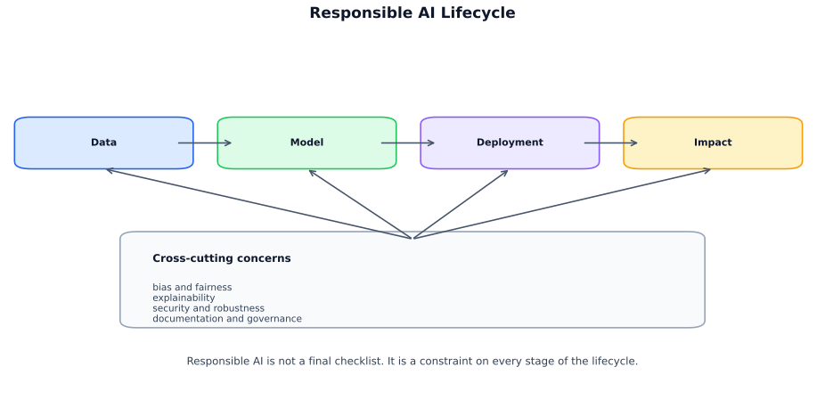
| Area | Core question |
|---|---|
| Bias | Who is harmed or underrepresented? |
| Fairness | Are outcomes equitable across groups? |
| Explainability | Can humans understand decisions? |
| Security | Can the system be attacked or manipulated? |
| Documentation | Are assumptions, limits, and risks recorded? |
| Governance | Who reviews, approves, and monitors use? |
Key: Responsible AI is engineering practice across the full ML lifecycle, not an add-on.
Bias in ML = systematic error that disproportionately harms some people/groups. It can enter at any stage.
| Type | Meaning |
|---|---|
| Statistical bias | Estimator’s expected value differs from truth |
| Societal / fairness bias | Unequal or unfair outcomes across groups |
| Inductive bias | Assumptions enabling generalization |
Key: Here, “bias” = unfair disparities, not estimator bias.
Usually many small misalignments, not one bug.
| Source | What goes wrong | Real-world example |
|---|---|---|
| Historical bias | Even perfectly recorded data encodes past inequity — the model learns to repeat history. | Hiring models trained on decade-old decisions penalise women; lending models reflect redlining-era patterns. |
| Sampling bias | Training distribution ≠ deployment population. Under-represented groups get worse accuracy and worse fairness. | Facial-recognition failures on darker skin tones; voice assistants trained mostly on one accent. |
| Measurement bias | Proxy ≠ true construct. Dangerous when proxies behave differently across groups. | Using healthcare spending as a proxy for illness severity under-estimates need in populations that spend less due to access barriers. |
| Label bias | ”Ground truth” is subjective or biased. Supervised learning can scale human bias to millions. | Content-moderation labels inconsistent across annotator demographics; medical diagnoses varying by patient race. |
| Feature / representation | Correlated features leak protected info — protected traits can be inferred from seemingly neutral variables. | ZIP code, purchase history, or school name can proxy for race or income. |
| Aggregation bias | One global model misses subgroup patterns. Requires stratified evaluation or subgroup-aware models. | Health-risk model performs well overall but fails on specific ethnic subgroups with different risk profiles. |
| Deploy / feedback-loop | Model changes environment after launch. Offline metrics miss harms caused by behavioural change post-deploy. | Predictive policing sends more officers → more arrests → “validates” biased model; recommendation loops narrow content diversity. |
Key: Removing protected attributes alone rarely removes bias; proxies often remain.
Common sensitive attributes:
Also often relevant: socioeconomic status, geography, language, combinations.
Intersectionality: fairness can look fine overall but fail on slices like older women or women from one ethnic group.
Key: Always check intersections, not just single attributes.
| Harm type | Example |
|---|---|
| Individual harm | Denied service/opportunity |
| Group harm | Systematic disadvantage |
| Allocative harm | Unequal access to benefits/burdens |
| Representational harm | Stereotyping, erasure |
| Legal risk | Anti-discrimination violations |
| Business risk | Trust/adoption loss |
Highest-stakes domains: hiring, lending, healthcare, education, insurance, criminal justice.
Start with the decision, not the metric.
Practical review: 1. What decision is influenced? 2. Who is affected directly/indirectly? 3. Which protected/vulnerable groups matter? 4. Does train data match deployment? 5. Are labels/features valid proxies? 6. Are subgroup performance gaps present? 7. Could deployment create feedback loops or gaming?
Useful diagnostics:
Key: Never trust a single aggregate fairness number.
Intervene at the stage where bias enters.
| Stage | Typical methods | Best when… |
|---|---|---|
| Pre-processing | Reweighting, resampling, better labels/data, fair representations | Problem starts in data |
| In-processing | Fairness constraints, adversarial debiasing, group-aware regularization, cost-sensitive training | Fairness must enter objective |
| Post-processing | Group thresholds, calibration adjustment, human review | Existing model must be adapted |
Trade-offs: accuracy, complexity, interpretability, legal acceptability.
Bias is not judged in the abstract; it depends on:
Same disparity can be acceptable in one context and harmful in another.
Key: Fairness is application-specific, not a universal scalar score.
Further Reading - NIST AI Risk Management Framework: https://www.nist.gov/itl/ai-risk-management-framework - “Datasheets for Datasets”: https://arxiv.org/abs/1803.09010
Bias = likely source of problems. Fairness metrics = observed disparity. Auditing = measurement + assumptions + trade-offs + actions.
| Idea | Core question | Strength | Main challenge |
|---|---|---|---|
| Group fairness | Are outcomes similar across groups? | Measurable, monitorable | Misses individual harms |
| Individual fairness | Are similar people treated similarly? | Intuitive | Needs valid similarity metric |
Key: Group fairness is operational; individual fairness is conceptually appealing but hard to define.
Assume binary classification with prediction \(\hat{Y}\), true label \(Y\), and protected attribute \(A\). There is no single best fairness score — each metric encodes a different value judgement and they can conflict with each other.
| Metric | Plain-English Question | When to use it | Watch out for |
|---|---|---|---|
| Demographic parity | Are Groups A and B approved/selected at the same rate, regardless of who actually qualifies? | Equal access matters most — e.g. job-ad visibility, loan application invitations. | Ignores true labels entirely. Can force approving unqualified applicants or rejecting qualified ones. |
| Equalized odds | Among people who actually qualify (and those who don't), does each group get the same TPR and FPR? | Both false positives and false negatives have real costs — e.g. criminal-justice risk scores, medical triage. | Hard to satisfy simultaneously with calibration. Inherits any label bias in the ground truth. |
| Equal opportunity | Among truly qualified people, does each group get approved at the same rate (same TPR)? | Missing a true positive is the main harm — e.g. hiring, scholarships, cancer screening. | Ignores FPR disparity. One group may receive far more false positives than another. |
| Predictive parity | When the model says "yes", is that prediction equally reliable for both groups? | Positive predictions trigger costly action — e.g. fraud investigation, child-welfare visits. | Mathematically conflicts with equalized odds when base rates differ between groups. |
| Calibration | If the model says "70 % risk", does that mean 70 % of those people actually default/reoffend/etc., regardless of group? | Risk scoring in finance, healthcare, insurance, criminal justice. | Often conflicts with error-rate parity — you may not be able to have both calibration and equalized odds. |
Key: When base rates differ across groups (e.g. one group has a higher true-positive rate in the population), calibration, equalized odds, and predictive parity cannot all hold simultaneously. Choosing a metric is a policy decision, not just a technical one.
When base rates differ, many fairness goals cannot all hold simultaneously.
Key: Fairness metric choice is both a technical and policy decision.
| Step | What to check |
|---|---|
| Define context | Decision type; automated vs assistive; FP/FN harms |
| Identify groups | Protected groups, vulnerable groups, intersections |
| Review data | Coverage, label validity, missingness, shift risk |
| Subgroup performance | Accuracy, precision/recall, ROC-AUC/PR-AUC, confusion matrix, calibration |
| Fairness metrics | DP diff/ratio, TPR/FPR gaps, calibration gaps, error disparities |
| Stress-test | Sensitivity/counterfactuals, threshold robustness, edge-case review |
| Document | Why metrics fit, accepted trade-offs, mitigations, residual risk |
Key: A fairness audit is broader than computing one metric.
| Challenge | Why it matters | Typical response |
|---|---|---|
| Missing protected-attribute data | Cannot compare unknown groups | Privacy-aware collection, governance |
| Small subgroup sizes | Unstable estimates | CIs, Bayesian methods, more data |
| Label bias | Fairness on biased labels can still be unfair | Audit label generation |
| Distribution shift | Offline fairness may fail in production | Ongoing monitoring |
| Multiple stakeholders | Fairness depends on perspective | Multidisciplinary review |
| Group | TPR | FPR | Positive Rate |
|---|---|---|---|
| A | 0.82 | 0.10 | 0.35 |
| B | 0.68 | 0.09 | 0.25 |
Interpretation:
Key: This suggests an equal opportunity issue: qualified applicants in Group B are less likely to be approved.
Fairness belongs in the ML lifecycle, not one-time compliance.
Typical practices:
Fairness audits often lead to explainability work: once disparity is found, you need to identify drivers.
Further Reading
After finding a disparity, ask why the model behaves that way. Explainability helps with debugging, validation, communication, and case review — but is not fairness, causality, or justification.
Key: Explanations are audience-specific and answer different questions than fairness.
| Type | Goal | Examples | Best for |
|---|---|---|---|
| Global | Understand model overall | Feature importance, PDPs, global surrogates | Audits, model review |
| Local | Explain one prediction | SHAP (instance), LIME, counterfactuals | Complaints, edge cases, human review |
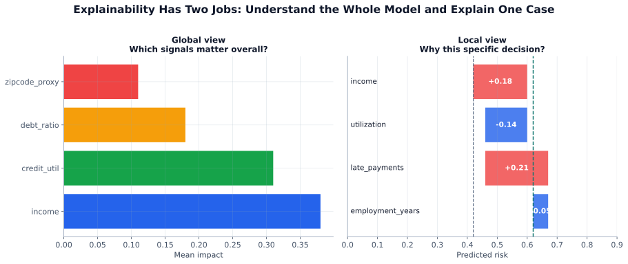
SHAP (SHapley Additive exPlanations) assigns each feature a contribution to a prediction:
\[ f(x) = \phi_0 + \sum_{i=1}^{d} \phi_i \]
Key: SHAP explains associations in the model, not causal effects.
LIME (Local Interpretable Model-agnostic Explanations) fits a simple surrogate near one instance.
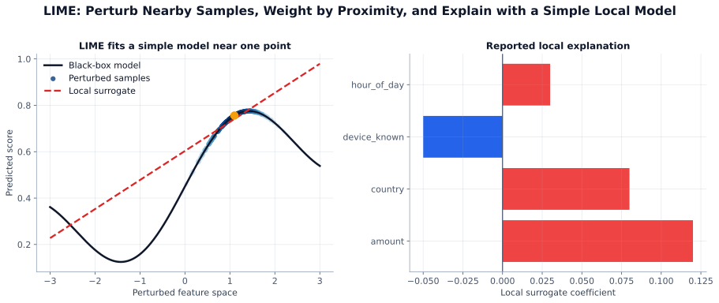
Basic steps: 1. Perturb around the target instance 2. Query black-box model 3. Weight nearby samples more 4. Fit interpretable surrogate 5. Use surrogate as local explanation
A counterfactual says what must change for a different prediction.
Example: - “Loan would be approved if income were $8,000 higher and credit utilization 12% lower.”
Desired properties:
Often more useful to end users than raw attributions, but must avoid unrealistic/uncontrollable changes.
Key: Counterfactuals are best for recourse when changes are realistic and controllable.
Explainability can reveal:
But it does not prove fairness.
Key: A clean SHAP plot is not evidence that a model is fair.
Feature attribution is usually associational, not causal.
A high SHAP value does not imply:
High-stakes systems often also need:
Use a toolkit, not one method:
Example workflow:
Also note: exposing explanations can reveal sensitive model behavior.
Further Reading
Responsible AI includes misuse resistance: fair/documented models can still be exploitable.
Standard security still applies, but ML adds data-/model-driven attack surfaces.
Key: ML security differs because attackers can target both the learned model and the data that shapes it.
Define attacker assumptions first.
Key: No clear threat model ⇒ vague defense.
Modify inputs at inference time to cause misprediction.
Examples:
For classifier \(f(x)\), adversarial example:
\[ \text{find } \delta \text{ such that } f(x+\delta) \neq f(x), \quad \|\delta\|_p \leq \epsilon \]
Where: \(\delta\) = adversarial perturbation, \(\epsilon\) = maximum perturbation budget, \(\|\cdot\|_p\) = \(L_p\) norm (commonly \(L_2\) or \(L_\infty\)).
where \(x' = x + \delta\) looks similar to \(x\) under a constraint.
Corrupt training data so the learned model fails.
Examples:
| Type | Effect |
|---|---|
| Availability | Degrade overall performance |
| Targeted poisoning | Break specific cases |
| Backdoor | Hidden trigger causes attacker-chosen output |
Implant a hidden if-trigger-then-behavior rule during training.
Example: - vision model behaves normally, but a specific patch forces a target class
High-risk sources:
Key: Backdoors are dangerous because normal behavior can hide attack behavior until the trigger appears.
Repeated API queries can approximate the model.
Risks:
Extraction is easier with:
Attacker infers whether a sample was in training data.
Sensitive domains:
Leakage sources:
No perfect defense; combine controls.
| Risk | Common defenses |
|---|---|
| Evasion | Adversarial training, preprocessing, anomaly detection, ensembles, abstention |
| Poisoning / backdoors | Data provenance, robust filtering, secure retraining, outlier/influence analysis, supply-chain review |
| Extraction / privacy | Rate limiting, auth, output restriction, confidence clipping, watermarking, differential privacy |
Simple high-value controls:
Test security explicitly, not implicitly.
For generative AI, also test:
Security ≠ safety ≠ fairness, but they overlap.
Responsible deployment should integrate:
Documentation should capture:
Key: A secure system can still be unfair; a fair system can still be exploitable.
Further Reading
Documentation makes assumptions, metrics, risks, and limits reviewable.
Key: Unwritten assumptions get forgotten, then misused.
A model card = structured summary of a trained model: what it is, who it is for, where it works, where it should not be used.
| Section | Include |
|---|---|
| Model details | name/version, owner, date, architecture/family, training objective |
| Intended use | primary use cases, intended users, deployment environment, supported populations |
| Out-of-scope use | prohibited/discouraged uses, unverified settings, high-risk decisions needing extra review |
| Data | train/val/test sources, collection, preprocessing, labeling, known gaps/representation limits |
| Evaluation | overall metrics, subgroup metrics, calibration/robustness, stress tests, version comparisons |
| Ethical considerations & risks | fairness, privacy, security limits, failure modes, human oversight |
| Caveats & recommendations | threshold guidance, monitoring, retraining assumptions, unresolved issues |
Model Card
Model cards are one artifact in a larger documentation stack.
| Artifact | Focus |
|---|---|
| Datasheets for datasets | motivation, composition, collection, preprocessing, uses, limitations |
| Data cards | dataset quality, provenance, usage boundaries |
| System cards | full sociotechnical system, not just the model |
| Decision logs / risk assessments | trade-offs, approvals, exceptions, mitigations over time |
Key: Model card = model-level summary; system/data artifacts cover adjacent risks.
Model Card: Loan Approval Classifier v3.2
Overview: Binary classifier predicting likelihood of repayment within 24 months.
Intended Use: Assist loan officers in prioritizing manual review for consumer loan applications. Not intended for fully automated denial decisions.
Out-of-Scope Use:
Training Data: Applications from 2022–2024 across three regions. Known underrepresentation of first-time borrowers.
Evaluation:
| Overall | Subgroups |
|---|---|
| AUC: 0.81 | A: TPR 0.82 |
| Cal: 0.03 | B: TPR 0.68 |
| A: FPR 0.10 | |
| B: FPR 0.09 |
Risks: TPR disparity may disadvantage qualified applicants in Group B. Income stability feature may be unreliable for gig workers.
Monitoring:
Key: Overall performance is solid, but TPR differs notably across groups (0.82 vs 0.68).
Key: Monitoring is part of the product.
Track concrete checks:
Documentation = system memory: decisions, thresholds, failures, limits.
Key: Docs should be specific, versioned, audience-aware, honest, and maintained.
| Good practice | Failure mode |
|---|---|
| Specific claims | “Works well across demographics” |
| Test population recorded | Missing evaluation population |
| Thresholds/settings logged | No deployment config record |
| Updated after retraining | Stale docs |
| Human overrides documented | Undocumented exceptions |
Not end-of-project paperwork; evolves with the system.
Lifecycle additions:
Also supports governance/compliance: what the model is, how it was evaluated, where not to use it.
Further Reading
Technical safeguards alone are insufficient; governance defines allowed use, approvals, and failure handling.
Key: The model predicts; governance decides whether predictions may matter.
AI governance = organizational processes to:
Match controls to stakes.
| Risk level | Example | Typical controls |
|---|---|---|
| Low | content personalization | light review |
| Medium | demand forecasting | standard review, monitoring |
| High | hiring, lending, diagnosis support, fraud blocking, identity verification | formal review, subgroup analysis, approvals, escalation |
High-risk systems usually need:
Key: Clear ownership prevents gaps.
Typical roles:
Common checkpoints:
Governance should define:
| Theme | Practical question |
|---|---|
| Non-discrimination | Does performance differ across protected groups? |
| Transparency | Can affected users understand and contest decisions? |
| Privacy | Are permissions, retention, deletion handled correctly? |
| Human oversight | Can a human actually intervene? |
| Auditability | Can you reconstruct what changed and why? |
Recurring requirements:
Key: Frameworks orient; legal/compliance teams interpret for regulated use.
Before shipping a high-impact model, answer:
Key: Unclear answers = governance failure, not just documentation failure.
Responsible AI is not one metric/tool/checklist; it is sociotechnical.
Strong practice combines:
Key: Models operate inside organizations, laws, workflows, and human judgment.
Further Reading
Key: Responsible AI spans the full pipeline: problem framing → data → training → evaluation → deployment → long-term oversight.
| Mistake | What goes wrong | Fix |
|---|---|---|
| Optimizing aggregate accuracy and ignoring subgroups | High overall accuracy masks poor performance on minority groups | Always disaggregate metrics by protected group before deployment |
| Treating fairness as a post-training patch | Bias in data cannot be fully corrected by reweighting alone | Audit training data; consider data collection and labeling process |
| Using a proxy feature instead of a protected attribute | ZIP code encodes race; model discriminates without explicitly using race | Audit all features for correlation with protected attributes; consider removal or fairness constraints |
| Confusing model accuracy with model correctness | A model can be accurate on historical data that itself encoded historical discrimination | Ask: what outcome are we actually optimizing for, and is that the right outcome? |
| Shipping without a model card | Users don’t know intended use cases, limitations, or evaluation populations | Write a one-page model card before release; include performance breakdowns by subgroup |
Data science and ML interviews test four things: ML concepts, coding and SQL, system design, and case studies. This chapter equips you with frameworks and worked examples for each type.
What you will learn:
| Section | Topic |
|---|---|
| 18.1 | ML concept questions: definitions, trade-offs, formulas |
| 18.2 | Coding and SQL interview questions |
| 18.3 | ML system design: end-to-end framework |
| 18.4 | Statistics and A/B testing questions |
| 18.5 | Behavioral interview questions |
| 18.6 | ML case study framework (generic approach) |
| 18.7 | Case study: fraud detection pipeline |
| 18.8 | Case study: search ranking |
| 18.9 | Case study: demand forecasting |
How to use this chapter: Read the frameworks in 16.1–16.6, then practice by working through the case studies (16.7–16.9) out loud before checking the discussion.
Use this structure for almost every definition question:
Definition (what it is) → Trade-off (when it helps vs. hurts) → Example (concrete application)
Interviewer: “What is L1 regularization?”
Bad answer: “It adds the sum of absolute values of weights to the loss.”
Good answer: “L1 regularization adds \(\lambda \sum |w_j|\) to the loss. This penalizes large weights and drives some all the way to zero — creating sparse models, so it acts as implicit feature selection. It helps when you have many irrelevant features, but it can be unstable when features are correlated because it arbitrarily zeros one of them.”
Bias–variance trade-off:
\[ \text{Error} = \text{Bias}^2 + \text{Variance} + \text{Irreducible Noise} \]
You reduce bias by making the model more complex; you reduce variance by constraining it. The two pull in opposite directions — the “tradeoff.” The best model minimises their sum.
| Model | Bias | Variance | Fix |
|---|---|---|---|
| Too simple (underfit) | High | Low | Add features, increase complexity |
| Too complex (overfit) | Low | High | Regularize, more data, simpler model |
Interview angle: Always ask what the data situation is. With small data, a simpler model with higher bias often generalizes better than a complex model with high variance.
Regularization:
| Type | Penalty | Effect |
|---|---|---|
| L1 (Lasso) | \(\lambda \sum |w_j|\) | Sparsity — drives weights to zero, feature selection |
| L2 (Ridge) | \(\lambda \sum w_j^2\) | Shrinkage — keeps all weights small but nonzero |
| Elastic Net | \(\alpha L1 + (1-\alpha) L2\) | Combines both — useful when features are correlated |
Cross-validation:
K-Fold CV:
| Fold 1 | Fold 2 | Fold 3 | Fold 4 | Fold 5 | |
|---|---|---|---|---|---|
| V | T | T | T | T | validate on first block |
| T | V | T | T | T | fold 2 |
| . . . K rounds → average metric | |||||
Key: Never tune hyperparameters on the test set. Use K-fold on the training set to select model; evaluate once on held-out test set.
Gradient descent variants:
| Variant | Batch size | Pros | Cons |
|---|---|---|---|
| Batch GD | All data | Stable convergence | Slow per step |
| SGD | 1 sample | Fast updates | Very noisy |
| Mini-batch SGD | 32–512 | Balance of both | Tuning required |
| Adam | Mini-batch | Adaptive LR, fast convergence | Memory overhead |
Activation functions:
| Function | Formula | Use case |
|---|---|---|
| ReLU | \(\max(0, x)\) | Hidden layers — default choice |
| Sigmoid | \(1/(1+e^{-x})\) | Binary output (not hidden layers) |
| Softmax | \(e^{x_i}/\sum e^{x_j}\) | Multi-class output |
| Tanh | \((e^x - e^{-x})/(e^x+e^{-x})\) | RNNs, zero-centered |
Common classification metrics:
| Metric | Formula | Use when |
|---|---|---|
| Precision | \(TP/(TP+FP)\) | Cost of false positive is high (spam filter) |
| Recall | \(TP/(TP+FN)\) | Cost of missing a positive is high (cancer screening) |
| F1 | \(2PR/(P+R)\) | Imbalanced classes |
| AUC-ROC | Area under TPR vs FPR | Ranking/threshold-agnostic evaluation |
| PR-AUC | Area under precision-recall curve | Severe class imbalance |
Key: “Which metric should I optimize?” is always context-dependent. Ask about the cost asymmetry between false positives and false negatives.
CNN output size formula:
\[ C = \frac{I - F + 2P}{S} + 1 \]
Where: \(I\) = input size, \(F\) = filter (kernel) size, \(P\) = padding, \(S\) = stride.
Example: input \(28 \times 28\), filter \(7 \times 7\), stride \(1\), padding \(0\):
\[ C = \frac{28 - 7 + 0}{1} + 1 = 22 \quad \Rightarrow \text{output: } 22 \times 22 \]
Confusion matrix:
| Predicted | |||
| Pos | Neg | ||
| Actual | Pos | TP | FN |
| Neg | FP | TN | |
| Pitfall | What happens | How to catch it |
|---|---|---|
| Data leakage | Test performance is suspiciously perfect | Verify no future data in features; fit preprocessors on train only |
| Target leakage | Feature is unavailable at prediction time | Timeline audit of every feature |
| Class imbalance | Accuracy looks great; recall is terrible | Check confusion matrix; use PR-AUC |
| Distribution shift | Production accuracy degrades over time | Monitor feature distributions |
| Overfitting | Train score >> val score | Cross-validate; regularize |
Pattern 1: NULL handling
NULL means unknown — comparing with = NULL
always returns NULL (falsy).
-- Wrong
SELECT * FROM Employees WHERE ManagedBy = NULL;
-- Correct
SELECT * FROM Employees WHERE ManagedBy IS NULL;Pattern 2: Window functions
Interviewers love window functions because most candidates can write basic GROUP BY but struggle with window functions.
-- Running total of revenue per customer
SELECT
customer_id,
order_date,
revenue,
SUM(revenue) OVER (
PARTITION BY customer_id
ORDER BY order_date
ROWS BETWEEN UNBOUNDED PRECEDING AND CURRENT ROW
) AS running_total
FROM orders;
-- Rank users by revenue within each region
SELECT
user_id,
region,
revenue,
RANK() OVER (PARTITION BY region ORDER BY revenue DESC) AS rnk,
ROW_NUMBER() OVER (PARTITION BY region ORDER BY revenue DESC) AS rn
FROM users;Pattern 3: Self-join (finding hierarchies)
-- Employees and their managers' names
SELECT
e.name AS employee,
m.name AS manager
FROM Employees e
LEFT JOIN Employees m ON e.manager_id = m.id;Pattern 4: Top-N per group
-- Top 3 products by revenue per category
SELECT * FROM (
SELECT
product_id,
category,
revenue,
ROW_NUMBER() OVER (PARTITION BY category ORDER BY revenue DESC) AS rn
FROM products
) t
WHERE rn <= 3;Pattern 5: Cohort retention
-- Weekly retention: % of users who were active in week N who return in week N+1
WITH cohort AS (
SELECT user_id, MIN(DATE_TRUNC('week', event_date)) AS cohort_week
FROM events GROUP BY user_id
),
weekly_activity AS (
SELECT DISTINCT
user_id,
DATE_TRUNC('week', event_date) AS activity_week
FROM events
)
SELECT
c.cohort_week,
DATEDIFF('week', c.cohort_week, w.activity_week) AS weeks_since_join,
COUNT(DISTINCT w.user_id) AS retained_users
FROM cohort c
JOIN weekly_activity w USING (user_id)
GROUP BY 1, 2
ORDER BY 1, 2;Palindrome number (integer reversal, no string conversion):
def is_palindrome(n: int) -> bool:
if n < 0:
return False
original = n
rev = 0
while n > 0:
digit = n % 10
rev = rev * 10 + digit
n //= 10
return original == rev
# Test
print(is_palindrome(121)) # True
print(is_palindrome(-121)) # False
print(is_palindrome(10)) # FalsePandas: common interview patterns
import pandas as pd
# 1. Group and aggregate
df.groupby('category').agg({'revenue': ['sum', 'mean'], 'orders': 'count'})
# 2. Percentage of total per group
df['pct'] = df.groupby('category')['revenue'].transform(
lambda x: x / x.sum()
)
# 3. Rolling mean (time series)
df.sort_values('date', inplace=True)
df['rolling_7d'] = df.groupby('user_id')['revenue'].transform(
lambda x: x.rolling(7, min_periods=1).mean()
)
# 4. Merge with type awareness
merged = df_left.merge(df_right, on='id', how='left')
# 5. Fill missing values
df['feature'] = df['feature'].fillna(df['feature'].median())Normal distribution quick reference:
\[ z = \frac{x - \mu}{\sigma} \]
| z-score | Area from mean to z |
|---|---|
| ±1σ | 68% of data (34% each side) |
| ±2σ | 95% of data (47.5% each side) |
| ±3σ | 99.7% of data |
Example: \(X \sim \mathcal{N}(70, 10^2)\), find \(P(70 < X < 90)\):
Use this structure for any ML system design question:

Before choosing a model, define:
| Question | Why it matters |
|---|---|
| What is the ML task? | Regression vs. classification vs. ranking vs. generation |
| What is the prediction target? | Must be available at training time but absent at serving time |
| What are the latency constraints? | Batch (hours acceptable) vs. real-time (< 100ms) |
| What is the success metric? | Business KPI, not just model accuracy |
| What is the baseline? | Always define the naive baseline first |
Data pipeline for training vs serving:
Offline training pipeline:
Raw events → ETL → feature computation → training dataset → model training
Online serving pipeline:
Request → real-time feature lookup (feature store) → model scoring → response
Key: Training features and serving features must be computed identically. Divergence here is a leading cause of production model underperformance.
Feature engineering principles:
| Feature type | How to handle |
|---|---|
| High-cardinality categoricals | Embedding layers or frequency encoding |
| Numerical | Standardize for neural nets; leave raw for trees |
| Time features | Cyclical encoding (sin/cos) for hour/day_of_week |
| Text | TF-IDF for baselines, embeddings for production |
| Missing values | Indicator flag + imputation |
Model selection guidance:
| Data situation | Best starting model |
|---|---|
| < 10K labeled examples | Logistic regression / linear models |
| Tabular, any size | XGBoost / LightGBM |
| Images / audio | CNN / pretrained ResNet |
| Text | BERT / pretrained transformer |
| Sequence / time series | LightGBM + lag features; LSTM/TFT for DL |
| Ranking | LightGBM with LambdaRank |
Always define two layers of evaluation:
| Layer | What to measure | Example |
|---|---|---|
| Offline (development) | ML metric on held-out data | AUC-PR @ threshold, NDCG@10 |
| Online (production) | Business metric via A/B test | CTR, conversion rate, revenue per user |
Key: Don’t optimize the offline metric in isolation. Always connect it to the business goal.
Online vs. batch serving:
| Mode | Latency | Use case |
|---|---|---|
| Online (real-time) | < 100ms | Fraud detection, recommendation |
| Batch | Hours | Demand forecasting, report generation |
| Near-real-time | 1–30s | Content ranking, search |
ML platform architecture:
Production monitoring checklist:
| What to monitor | Why |
|---|---|
| Input feature distributions | Detect data drift early |
| Prediction score distributions | Detect model output drift |
| Business metrics (CTR, conversion) | Ground truth of model health |
| Latency p50/p99 | SLA compliance |
| Error rate and fallback rate | System health |
Stateless serving principle:
Stateless app tier:
User → Load Balancer → Any healthy server → Feature Store + Model → Response
(no session state on server)
Benefits: horizontal scaling, easy failover, no sticky session problems
Prompt: “Design a recommendation system for a music streaming platform with 50M users and 30M tracks.”
Step 1: Problem framing
Task: rank items to maximize engagement (listens, saves, shares)
Metric: listen-through rate, save rate (not just CTR)
Constraint: 50ms response time for homepage refresh
Step 2: Data
Step 3: Features and model
Step 4: Evaluation
Step 5: Serving
The standard framework:
Common mistake: Confusing p-value with probability that H₀ is true. The p-value is P(data as extreme as observed | H₀ is true).
| Step | What to do |
|---|---|
| 1. Define the metric | What is the primary metric? What are guardrail metrics? |
| 2. Power analysis | How many users needed to detect effect of size X? |
| 3. Randomize | Split at user level, not session level |
| 4. Run experiment | Don’t peek early; run for full duration |
| 5. Analyze | t-test for means, chi-square for proportions |
| 6. Decision | Ship, rollback, or run longer |
Sample size formula:
\[ n = \frac{2(z_{\alpha/2} + z_\beta)^2 \sigma^2}{\delta^2} \]
Where: \(z_{\alpha/2}\) = critical value for significance level, \(z_\beta\) = critical value for desired power, \(\sigma^2\) = estimated metric variance, \(\delta\) = minimum detectable effect.
Example interview question: “Your A/B test ran for 2 weeks and CTR improved 3% with p=0.03. Should you ship?”
Good answer: “Not necessarily — I’d check: 1. Did we run long enough to capture weekly seasonality? (2 weeks: yes) 2. Is the primary metric the right one? What happened to revenue, retention, and guardrail metrics? 3. Is this practically significant, not just statistically? What’s the business impact of 3% CTR improvement? 4. Are there segment effects — did it help one user group and hurt another?”
| Pitfall | What happens | Fix |
|---|---|---|
| Multiple testing | P(false positive) compounds with each test | Bonferroni correction or FDR control |
| Peeking early | Inflated false positive rate | Pre-register test duration; use sequential testing |
| Non-independent units | Users who interact affect each other (social, sharing) | Network experiment design |
| Novelty effect | Users engage more with anything new | Run test long enough for novelty to fade |
| SRM (sample ratio mismatch) | Treatment and control sizes differ from expected | Investigate before interpreting results |
| Distribution | Parameters | When it appears |
|---|---|---|
| Normal | \(\mu\), \(\sigma\) | CLT, errors, natural measurements |
| Bernoulli | \(p\) | Single binary event |
| Binomial | \(n\), \(p\) | Count of successes in \(n\) trials |
| Poisson | \(\lambda\) | Count of events in a time window |
| Exponential | \(\lambda\) | Time between events |
| Beta | \(\alpha\), \(\beta\) | Prior for conversion rate; Thompson Sampling |
Central Limit Theorem (CLT): The sum of \(n\) independent, identically distributed random variables approaches a normal distribution as \(n \to \infty\), regardless of the original distribution. This is why t-tests work on non-normal data when \(n\) is large.
Every behavioral question should be answered with:
| S — Situation | Context. What was the setup? |
| T — Task: | What was your responsibility? |
| A — Action: | What did YOU do? (not "we") |
| R — Result: | Quantifiable outcome. |
“Tell me about a time you disagreed with a stakeholder.”
Key elements: you listened first, understood their perspective, presented data, found a compromise or escalated appropriately. Show intellectual humility and ability to navigate ambiguity.
Structure: “The PM wanted to launch a model with 70% recall on fraud. I was concerned that our false positive rate was too high — 1 in 4 blocked transactions would be legitimate. I presented the cost analysis: at our transaction volume, that meant $X in customer friction costs per month. We aligned on a recall of 80% with a stricter FPR threshold, and I automated a review queue for borderline cases.”
“Tell me about a time you had to deliver bad news.”
Show: proactive communication, clear framing, proposed solutions alongside the problem.
“Tell me about a project where you had to learn something quickly.”
Show: structured learning approach, ability to identify what matters, applying new knowledge in practice.
“Tell me about a time your model underperformed in production.”
This is a trap question — interviewers want to see that you’ve shipped something and that you debugged it well, not that you’ve had perfect success. Be specific about: how you detected it, how you diagnosed it (data drift? training skew? missing feature?), how you fixed it.
| Question | What they’re testing |
|---|---|
| “Walk me through your most impactful project” | Technical depth, business sense, communication |
| “How do you communicate results to non-technical stakeholders?” | Translation skill, executive presence |
| “How do you prioritize competing data requests?” | Judgment, stakeholder management |
| “Tell me about a time you caught a data quality issue” | Rigor, attention to detail |
| “What’s a model you built that didn’t work? What happened?” | Intellectual honesty, debugging mindset |
Before your interview, have clear answers for:
When given an open-ended ML problem in an interview, use this structure:
| What you do | Signal you send |
|---|---|
| Ask clarifying questions first | Structured thinker, not hasty |
| Define a baseline model | Pragmatic, knows what “good” means |
| Call out data challenges (imbalance, drift, cold start) | Production mindset |
| Connect ML metric to business metric | Strategic thinker |
| Propose monitoring plan | MLOps maturity |
| Acknowledge trade-offs | Intellectual honesty |
Key: Interviewers don’t expect a perfect answer. They want to see how you think through ambiguity and complexity. Talk through your reasoning aloud.
Problem statement: Given a transaction (amount, merchant, location, time, device, user history), predict whether it is fraudulent in real-time — within 100ms.
| Type: | Binary classification (fraud = 1, legit = 0) |
| Constraint: | Real-time inference < 100ms |
| Label: | Confirmed fraud (from chargebacks, investigations) |
| Base rate: | ~0.1% of transactions are fraud |
| Key challenge | Extreme class imbalance + evolving fraud patterns |
Baseline: Flag every transaction above $5,000. Precision and recall will both be low — establishes the bar.
| Feature category | Examples | Notes |
|---|---|---|
| Transaction | amount, merchant_category, currency | Normalize amount; encode category |
| Velocity | txn_count_last_1h, spend_last_24h | Requires real-time feature store |
| Device / location | is_new_device, distance_from_home_km | High signal for account takeover |
| User history | avg_txn_amount, usual_merchant_types | Baseline “normal” behavior |
| Time | hour_of_day, day_of_week, is_holiday | Fraud spikes at night, weekends |
| Network | ip_fraud_rate, device_shared_count | Graph / network signals |
With 0.1% fraud rate, a model that always predicts “legit” gets 99.9% accuracy — and is useless.
class_weight={0:1, 1:100} in sklearnKey metric: Precision-Recall AUC, not ROC AUC. At extreme imbalance, ROC is misleading.
| Model | Why useful for fraud |
|---|---|
| XGBoost / LightGBM | Strong on tabular, handles class weights, fast inference |
| Logistic Regression | Interpretable, fast, well-calibrated probabilities |
| Isolation Forest | Unsupervised anomaly detection when labels are scarce |
| Neural network | When millions of examples and embedding layers needed |
In practice: ensemble — LightGBM for main score + rule-based blocklist + velocity checks.
| Metric | Why |
|---|---|
| Precision | Of transactions blocked, how many were actually fraud? |
| Recall | Of all fraud, how much did we catch? |
| F1 @ threshold | Combined; tune threshold to match business cost ratio |
| PR-AUC | Threshold-independent, correct for imbalanced classes |
| Latency p99 | Must stay under 100ms |
Problem statement: Given a user query and a corpus of documents/products/results, rank them so the most relevant items appear at the top.
| Property | Value |
|---|---|
| Type | Learning to Rank (LTR) — not binary classification |
| Input | (query, candidate documents) pairs |
| Output | Relevance scores → ranked list |
| Metric | NDCG@10, MRR, Recall@K |
| Key challenge | Defining "relevant" + handling query-document interaction |
Baseline: BM25 (keyword matching) — fast and surprisingly competitive on keyword queries.
| Stage 1: RETRIEVAL (recall) | |
|---|---|
| Goal | find ~1,000 candidates |
| Speed | < 10ms |
| Method | BM25, vector search (ANN), or sparse + dense hybrid |
| Focus | Recall matters most |
| Stage 2: RANKING (precision) | |
|---|---|
| Goal | rank those 1,000 well |
| Speed | < 100ms acceptable |
| Method | LightGBM LambdaMART, two-tower re-ranker |
| Focus | Precision at top matters most |
Query → [BM25 + ANN retrieval] → 1,000 candidates → [LTR model] → top 10
| Feature type | Examples |
|---|---|
| Query features | Query length, query type (navigational/informational), query frequency |
| Document features | PageRank, CTR, freshness, popularity, content quality |
| Query–document | BM25 score, semantic similarity, exact match, title match |
| User features | Personalization signals, past clicks, location, language |
| Contextual | Time of day, device, session context |
| Approach | How it works | Tradeoff |
|---|---|---|
| Pointwise | Predict relevance score per doc independently. Binary classification or regression. | Simple. Ignores relative ordering. |
| Pairwise | Predict which of two docs is more relevant. RankNet, LambdaRank. | Better. Still ignores full list structure. |
| Listwise | Directly optimize ranking metric (NDCG) over full list. LambdaMART. | Best quality. Used by most production systems. |
\[ \text{NDCG@k} = \frac{\text{DCG@k}}{\text{IDCG@k}}, \quad \text{DCG@k} = \sum_{i=1}^{k} \frac{2^{r_i} - 1}{\log_2(i+1)} \]
Where: \(r_i\) = relevance score at rank \(i\) (binary or graded), \(k\) = cutoff depth, IDCG = DCG of the ideal (perfect) ranking.
| Position | Discount factor | Interpretation |
|---|---|---|
| 1 | 1.00 | Full credit |
| 2 | 0.63 | 63% credit |
| 5 | 0.39 | 39% credit |
| 10 | 0.29 | 29% credit |
The higher a relevant result appears, the more NDCG credit you get.
Problem statement: Predict the quantity of a product that will be sold in a future time period (next week, next month) across thousands of SKUs and locations.
| Type | Time series regression (multi-step forecasting) |
| Target | Units sold per SKU per store per day/week |
| Horizon | 1 week ahead (operational) to 12 weeks (planning) |
| Key challenge | Thousands of series with different patterns, intermittent demand, promotions, seasonality |
Baseline: Seasonal naive — forecast = same week last year. Surprisingly hard to beat.
Each level has different data density and noise levels. Top-down vs. bottom-up aggregation matters.
| Feature type | Examples | Notes |
|---|---|---|
| Lag features | sales_lag_7, sales_lag_14, sales_lag_28 | Past values of the target |
| Rolling stats | rolling_mean_28, rolling_std_14 | Smooth out noise |
| Calendar | day_of_week, week_of_year, is_holiday, days_to_xmas | Captures seasonality |
| Price / promo | current_price, discount_pct, is_promoted | Demand drivers |
| External | weather, local events, competitor prices | When available |
| Product | category, brand, lifecycle_stage | Static attributes |
✗ WRONG: random train/test split
| Jan | Feb | Mar | Apr | May | Jun | Jul | Aug |
| T | V | T | V | T | T | V | T |
shuffled = leaks future into past
✓ RIGHT: rolling-window backtesting
| Train: Jan–Jun | Val: Jul | Test: Aug |
| Train: Jan–Jul | Val: Aug | Test: Sep |
| Train: Jan–Aug | Val: Sep | Test: Oct |
Report average RMSE / MAPE across all windows.
Key metrics:
| Metric | Notes |
|---|---|
| MAPE | Interpretable, but unstable near zero demand |
| RMSE | Penalizes large errors; good for cost-sensitive use |
| Bias | Is the model systematically over/under-forecasting? |
| WAPE | Weighted APE — handles zero-demand items better |
| Challenge | Approach |
|---|---|
| Intermittent demand (lots of zeros) | Croston’s method, Tweedie distribution, two-part model |
| New products (cold start) | Attribute-based similarity, group similar products |
| Promotions | Encode as features; build separate promo uplift model |
| Hierarchical consistency | Bottom-up aggregation or reconciliation (MinT) |
| Thousands of series | Global LightGBM model — one model for all SKUs with SKU features |
This section consolidates the most frequent mistakes across all topics — useful as a final sanity check before a technical interview or before deploying a model.
| Mistake | Why it matters | Fix |
|---|---|---|
| Fitting scaler/encoder on full dataset | Leaks test info into training | Fit on train only; transform val/test |
| Using future data as features | Model can’t use this at prediction time | Enforce temporal ordering |
| Dropping rows with missing values reflexively | Loses signal; biases if missingness is informative | Investigate pattern; impute or add missing indicator |
| Not checking for train/test distribution shift | Model degrades silently in production | Plot feature distributions; track drift |
| Label leakage (target encoded into features) | Model appears perfect on eval, fails in prod | Audit every feature against the label |
| Mistake | Why it matters | Fix |
|---|---|---|
| Evaluating on training data | Measures memorization, not generalization | Always use held-out validation |
| Ignoring class imbalance | Accuracy 99% on 1% fraud rate = useless model | Use PR-AUC, class weights, or resampling |
| Using default threshold (0.5) | Wrong for imbalanced classes | Tune threshold using precision-recall curve |
| Using accuracy for imbalanced problems | Misleading metric | Use F1, PR-AUC, or MCC instead |
| Mistake | Why it matters | Fix |
|---|---|---|
| Not normalizing inputs | Gradients explode or vanish | Standardize to mean=0, std=1 |
| Learning rate too high | Loss oscillates or explodes | Start at 1e-3 with Adam; use LR finder |
| Not using early stopping | Overfits to training data | Monitor val loss; stop when it stops improving |
| Using Softmax for multi-label problems | Outputs compete | Use sigmoid per label + binary cross-entropy |
| Using ReLU in regression output layer | Clips negative predictions to zero | Use linear activation for regression output |
Forgetting optimizer.zero_grad() in PyTorch |
Gradients accumulate across batches | Call it at the start of each training step |
| Mistake | Why it matters | Fix |
|---|---|---|
| Random train/test split for time series | Leaks future into training | Use chronological split always |
| Evaluating on test set during development | Burns the one honest look | Use validation set; save test for final report |
| Reporting accuracy without baseline | 99% sounds good until naive model also gets 99% | Always compare to majority-class / naive baseline |
| Not checking calibration | Model says 90% confident but is right 50% | Use Platt scaling or isotonic regression |
| Mistake | Why it matters | Fix |
|---|---|---|
| No monitoring after deployment | Models degrade silently | Track prediction distribution and feature distributions |
| Retraining without evaluation | New model might be worse | Always validate new model against champion before promoting |
| Serving a model trained on old data | Performance degrades with data drift | Schedule regular retraining or trigger on drift alerts |
| Not versioning training data | Can’t reproduce old results | Use data versioning (DVC, Delta Lake snapshots) |
| Tight coupling of training and serving code | Feature engineering bugs in one don’t propagate | Use a feature store or shared pipeline code |
You have covered the full breadth of modern machine learning — from the mathematical foundations that make every algorithm work, through classical ML, deep learning, NLP, reinforcement learning, time series, data engineering, MLOps, and responsible AI. This final chapter is a map for what to do with it.
| Chapter | Core idea you can explain |
|---|---|
| Ch 1–2: Math & Stats | Why gradient descent converges, what a p-value actually means, how Bayes’ rule updates beliefs |
| Ch 3–4: Python & Features | The data manipulation vocabulary every DS team assumes; how raw signals become ML-ready features |
| Ch 5: Supervised Learning | The bias-variance tradeoff; when to use trees vs. linear models vs. SVMs |
| Ch 6: Explainable AI | SHAP, LIME, PDP, ICE; global vs local interpretability; regulatory compliance |
| Ch 7: Evaluation | Why accuracy lies; precision/recall tradeoffs; the right metric for your business problem |
| Ch 8: Unsupervised Learning | K-Means assumptions; when DBSCAN beats K-Means; what t-SNE is and isn’t telling you |
| Ch 9: Recommendations | Collaborative filtering cold start; content-based vs. hybrid; how Netflix-style systems actually work |
| Ch 10: Deep Learning | Backprop intuition; CNNs for spatial data; LSTM/GRU for sequences; Transformers for everything else |
| Ch 11: NLP & LLMs | Tokenization, embeddings, attention; how to use a foundation model without training from scratch |
| Ch 12: Reinforcement Learning | MDP framing; Q-learning; when RL applies and why most businesses don’t need it yet |
| Ch 13: Time Series | Stationarity; ACF/PACF diagnostics; ARIMA vs. ML approaches for forecasting |
| Ch 14: Data & SQL | Window functions; query execution plans; the joins that break things in production |
| Ch 15: ML Systems & MLOps | The full training-to-production lifecycle; drift detection; CI/CD for ML |
| Ch 17: Responsible AI | Fairness metrics; privacy constraints; how to audit a model before it ships |
| Ch 17: Interview Prep | How to structure ML case studies; the questions behind the questions |
Every ML project follows the same shape regardless of domain:
The algorithms change. The frameworks evolve. The mental model doesn’t.
Portfolios beat certifications. Focus on projects that demonstrate the full lifecycle:
Three strong end-to-end projects outperform a repository of twenty Jupyter notebooks that each stop at model accuracy.
The field publishes faster than anyone can read. Use filters:
Read paper abstracts broadly; read full papers only when a technique is directly relevant to your work. Implement one non-trivial paper per quarter — understanding deepens dramatically when you go from reading to running.
Machine learning is a craft that rewards practice more than memorisation. The goal of this book was never to be a reference you read once — it was to give you the vocabulary and the mental models to understand what you are doing and why. Now go build something, break something, figure out why it broke, and fix it. That loop, repeated, is how ML practitioners are actually made.
“All models are wrong, but some are useful.” — George Box
The useful ones get deployed, monitored, improved, and deployed again. That is the job.
Coding interviews are a reality for data scientists and ML engineers alike. The problems below — solved by the author over several years — are organized by the core technique each one tests. Use this index as a study map: master one category at a time, starting with the pattern rather than the individual problem.
How to use this section: Each category opens with a one-line description of the pattern. Problems are sorted by number within each group. “Easy” problems build intuition for the pattern; “Medium” problems test whether you can apply it under constraints.
Pattern: Use hash maps for O(1) lookups, or manipulate arrays in-place to avoid extra space.
| # | Problem | Difficulty | Key Idea |
|---|---|---|---|
| 1 | Two Sum | Easy | Hash map for complement lookup |
| 238 | Product of Array Except Self | Med. | Prefix and suffix products without division |
| 380 | Insert Delete GetRandom O(1) | Med. | Hash map + array swap trick for O(1) operations |
| 387 | First Unique Character in a String | Easy | Frequency count with hash map |
| 442 | Find All Duplicates in an Array | Med. | Index-as-hash: negate visited positions |
| 771 | Jewels and Stones | Easy | Set membership check |
| 1108 | Defanging an IP Address | Easy | Simple string replacement |
| 1470 | Shuffle the Array | Easy | Interleave two halves of an array |
| 1480 | Running Sum of 1d Array | Easy | In-place prefix sum |
Pattern: Walk two indices from opposite ends (or same direction) to reduce search space from O(n²) to O(n).
| # | Problem | Difficulty | Key Idea |
|---|---|---|---|
| 11 | Container With Most Water | Med. | Shrink from both ends; move the shorter wall |
| 15 | 3Sum | Med. | Sort + two pointers after fixing one element |
| 532 | K-diff Pairs in an Array | Med. | Sort then two pointers or hash set for pair finding |
| 680 | Valid Palindrome II | Easy | Two pointers with one allowed skip |
Pattern: Maintain a window [left, right] over a sequence; expand right, shrink left when a constraint breaks.
| # | Problem | Difficulty | Key Idea |
|---|---|---|---|
| 3 | Longest Substring Without Repeating Characters | Med. | Expand until duplicate; shrink to remove it |
| 424 | Longest Repeating Character Replacement | Med. | Window valid while replacements ≤ k |
| 485 | Max Consecutive Ones | Easy | Simple running count; reset on zero |
| 1004 | Max Consecutive Ones III | Med. | Sliding window with at most k zero flips |
| 1343 | Sub-arrays of Size K with Average ≥ Threshold | Med. | Fixed-size sliding window; track running sum |
| 1493 | Longest Subarray of 1’s After Deleting One Element | Med. | Sliding window allowing one zero |
| 2024 | Maximize the Confusion of an Exam | Med. | Sliding window on binary string with k flips |
Pattern: Precompute cumulative sums so any subarray sum becomes a single subtraction; combine with hash maps for target-sum queries.
| # | Problem | Difficulty | Key Idea |
|---|---|---|---|
| 53 | Maximum Subarray | Med. | Kadane’s algorithm: running max subarray sum |
| 152 | Maximum Product Subarray | Med. | Track both max and min products (negatives flip sign) |
| 523 | Continuous Subarray Sum | Med. | Prefix sum mod k stored in hash map |
| 560 | Subarray Sum Equals K | Med. | Hash map of prefix sums for O(n) count |
Pattern: Use a stack to track state that needs last-in-first-out processing — matching brackets, nested structures, or monotonic sequences.
| # | Problem | Difficulty | Key Idea |
|---|---|---|---|
| 20 | Valid Parentheses | Easy | Push openers; pop and match on closers |
| 22 | Generate Parentheses | Med. | Backtracking with open/close counts as constraints |
| 1047 | Remove All Adjacent Duplicates In String | Easy | Stack pops when top matches current character |
| 1209 | Remove All Adjacent Duplicates in String II | Med. | Stack of (char, count) pairs; pop when count reaches k |
Pattern: Halve the search space each step. Works on sorted arrays, rotated arrays, and answer-space problems.
| # | Problem | Difficulty | Key Idea |
|---|---|---|---|
| 33 | Search in Rotated Sorted Array | Med. | Determine which half is sorted, then narrow |
| 69 | Sqrt(x) | Easy | Binary search on answer space [0, x] |
| 162 | Find Peak Element | Med. | Move toward the higher neighbour |
| 278 | First Bad Version | Easy | Classic bisect-left on boolean predicate |
| 374 | Guess Number Higher or Lower | Easy | Standard binary search with API call |
Pattern: Pointer manipulation — traverse, reverse, merge, or detect cycles using slow/fast pointers.
| # | Problem | Difficulty | Key Idea |
|---|---|---|---|
| 2 | Add Two Numbers | Med. | Digit-by-digit addition with carry through linked nodes |
Pattern: Recursive DFS (pre/in/post-order) or iterative BFS (level-order) to traverse or search tree structures.
| # | Problem | Difficulty | Key Idea |
|---|---|---|---|
| 94 | Binary Tree Inorder Traversal | Easy | Left → root → right (iterative with stack) |
| 100 | Same Tree | Easy | Simultaneous recursive traversal of two trees |
| 102 | Binary Tree Level Order Traversal | Med. | BFS with a queue; group nodes by level |
| 103 | Binary Tree Zigzag Level Order Traversal | Med. | Level-order BFS; reverse alternate levels |
| 112 | Path Sum | Easy | DFS subtracting node values; check zero at leaf |
| 113 | Path Sum II | Med. | DFS with backtracking to collect all root-to-leaf paths |
| 144 | Binary Tree Preorder Traversal | Easy | Root → left → right |
| 145 | Binary Tree Postorder Traversal | Easy | Left → right → root |
| 257 | Binary Tree Paths | Easy | DFS building path strings to each leaf |
| 543 | Diameter of Binary Tree | Easy | Max of (left depth + right depth) at every node |
| 700 | Search in a Binary Search Tree | Easy | BST property: go left if smaller, right if larger |
| 701 | Insert into a Binary Search Tree | Med. | Recursive insert following BST ordering |
| 938 | Range Sum of BST | Easy | Prune branches outside [low, high] range |
| 2265 | Count Nodes Equal to Average of Subtree | Med. | Post-order DFS returning (sum, count) per subtree |
Pattern: Explore connected components on grids or adjacency lists using DFS or BFS; track visited cells.
| # | Problem | Difficulty | Key Idea |
|---|---|---|---|
| 200 | Number of Islands | Med. | DFS/BFS flood-fill from each unvisited ‘1’ |
| 695 | Max Area of Island | Med. | DFS counting cells per connected component |
Pattern: Break a problem into overlapping subproblems; store results to avoid recomputation. Think “what decision do I make at step i?”
| # | Problem | Difficulty | Key Idea |
|---|---|---|---|
| 5 | Longest Palindromic Substring | Med. | Expand around center or DP on substring endpoints |
| 45 | Jump Game II | Med. | Greedy BFS: track farthest reachable per “jump level” |
| 55 | Jump Game | Med. | Track max reachable index; fail if current > max |
| 62 | Unique Paths | Med. | DP grid: paths(i,j) = paths(i-1,j) + paths(i,j-1) |
| 63 | Unique Paths II | Med. | Same DP with obstacles zeroing blocked cells |
| 121 | Best Time to Buy and Sell Stock | Easy | Track min price so far; max profit = price − min |
| 139 | Word Break | Med. | DP[i] = can s[0.i] be segmented using the dictionary? |
| 198 | House Robber | Med. | dp[i] = max(dp[i-1], dp[i-2] + nums[i]) |
| 213 | House Robber II | Med. | Run House Robber twice: skip first or skip last house |
| 509 | Fibonacci Number | Easy | Classic DP / two-variable iteration |
Pattern: Make the locally optimal choice at each step; prove (or trust) that local optima lead to a global optimum.
| # | Problem | Difficulty | Key Idea |
|---|---|---|---|
| 435 | Non-overlapping Intervals | Med. | Sort by end time; greedily keep non-overlapping intervals |
Pattern: Explore all candidates recursively; prune invalid branches early. Generate subsets, permutations, or combinations.
| # | Problem | Difficulty | Key Idea |
|---|---|---|---|
| 78 | Subsets | Med. | Include-or-skip each element; 2n subsets |
| 90 | Subsets II | Med. | Sort first; skip consecutive duplicates in recursion |
Pattern: Maintain the k largest/smallest elements efficiently. Min-heap or max-heap gives O(log k) insert and O(1) peek.
| # | Problem | Difficulty | Key Idea |
|---|---|---|---|
| 215 | Kth Largest Element in an Array | Med. | Min-heap of size k or quickselect |
| 973 | K Closest Points to Origin | Med. | Max-heap of size k by distance |
| 2336 | Smallest Number in Infinite Set | Med. | Min-heap + set to track added-back numbers |
Pattern: Combine data structures to meet specific time-complexity guarantees for multiple operations.
| # | Problem | Difficulty | Key Idea |
|---|---|---|---|
| 146 | LRU Cache | Med. | Hash map + doubly linked list for O(1) get and put |
Pattern: Exploit mathematical properties — digit manipulation, modular arithmetic, number-theoretic tricks.
| # | Problem | Difficulty | Key Idea |
|---|---|---|---|
| 7 | Reverse Integer | Med. | Build reversed number digit-by-digit; check overflow |
| 9 | Palindrome Number | Easy | Reverse half the digits and compare |
| 13 | Roman to Integer | Easy | Subtract when a smaller numeral precedes a larger one |
| 50 | Pow(x, n) | Med. | Fast exponentiation: xn = (xn/2)² |
| 118 | Pascal’s Triangle | Easy | Each cell = sum of two cells above |
| 172 | Factorial Trailing Zeroes | Med. | Count factors of 5 in n! |
| 202 | Happy Number | Easy | Cycle detection (Floyd’s or hash set) on digit-square sum |
Pattern: Character-level processing — frequency maps, prefix checks, two-pointer comparisons, or transformation rules.
| # | Problem | Difficulty | Key Idea |
|---|---|---|---|
| 14 | Longest Common Prefix | Easy | Compare character-by-character across all strings |
| 1657 | Determine if Two Strings Are Close | Med. | Same character set + same sorted frequency multiset |
Pattern: 2D traversal patterns — spiral order, layer-by-layer rotation, or diagonal/neighbour checks.
| # | Problem | Difficulty | Key Idea |
|---|---|---|---|
| 48 | Rotate Image | Med. | Transpose then reverse each row (90° clockwise) |
| 54 | Spiral Matrix | Med. | Shrink boundaries after traversing each edge |
| 766 | Toeplitz Matrix | Easy | Every cell equals its top-left neighbour |
Pattern: JOINs, subqueries, window functions, and aggregation — the same skills tested in data science interviews.
| # | Problem | Difficulty | Key Idea |
|---|---|---|---|
| 175 | Combine Two Tables | Easy | LEFT JOIN to keep all rows from one table |
| 176 | Second Highest Salary | Med. | Subquery or DENSE_RANK() window function |
| 177 | Nth Highest Salary | Med. | Parameterised query with LIMIT/OFFSET or DENSE_RANK |
| 181 | Employees Earning More Than Their Managers | Easy | Self-join comparing employee salary to manager salary |
| 182 | Duplicate Emails | Easy | GROUP BY + HAVING COUNT > 1 |
| 595 | Big Countries | Easy | Simple WHERE with OR / UNION |